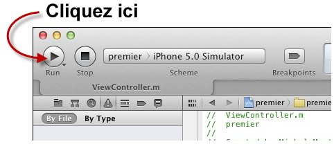
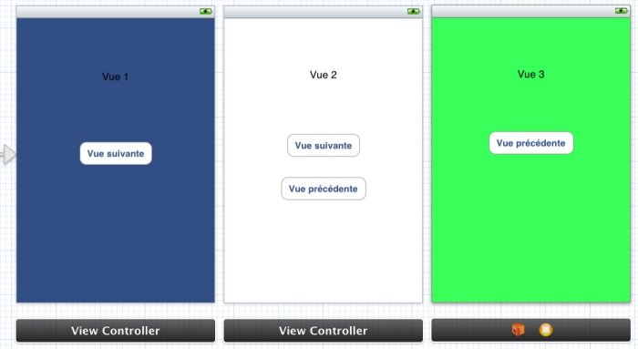
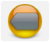
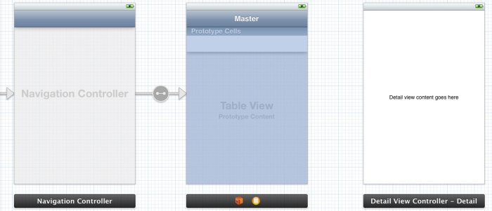
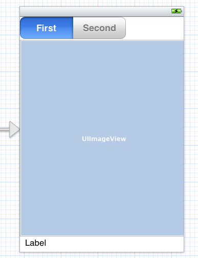
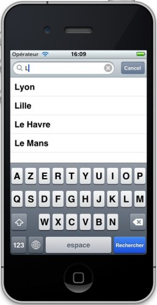
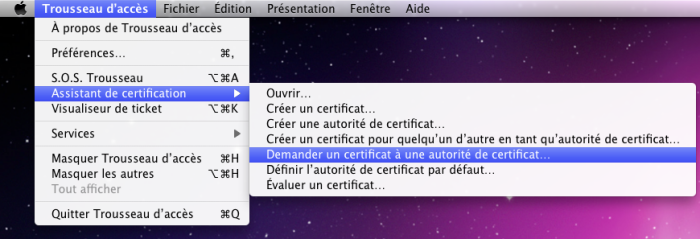
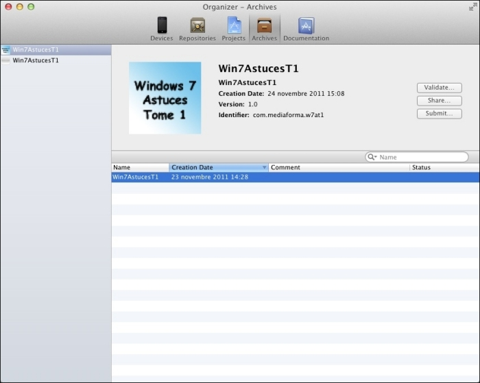

Créez des applications pour iPhone, iPad et iPod Touch
Créer ses propres applications pour iPhone, iPad ou iPod Touch : un rêve pour beaucoup d'entre nous ! Certains disent que l'univers Apple est fermé, d'autres que les langages de programmation pour Apple sont difficiles à apprendre. Mais qu'en est-il vraiment ?
En ce qui me concerne, je pense que si vous avez un peu de volonté, de temps et des idées plein la tête, vous pouvez faire des merveilles sur les périphériques portables Apple. Avec ce tutoriel, je vais vous faire découvrir l'univers merveilleux de la programmation iOS, c'est-à-dire de la programmation d'applications pour iPhone / iPod Touch / iPad, toutes versions confondues.
Peu importe que vous soyez de parfaits débutants en programmation ; si tel est le cas, il vous faudra juste un peu plus de temps pour assimiler et mettre en pratique tout ce qui sera dit dans ce tutoriel. Bien vite, vous progresserez à pas de géant et vous serez capables de réaliser des applications qui viendront enrichir l'App Store, la plateforme d'applications dédiée à l'univers Apple, et plus particulièrement aux iPhone, iPod Touch et iPad.
Pour cela, vous allez devoir apprendre à utiliser :
Xcode, l'environnement de développement dédié d'Apple ;
Objective-C, le langage (principalement) dédié à la programmation des périphériques portables d'Apple.
Votre apprentissage se fera de façon très progressive et je suis sûr que vous passerez toutes les étapes du parfait programmeur avec succès. Pour vous mettre l'eau à la bouche, voici en images quelques exemples des applications qui seront développées dans ce tutoriel :
Si vous êtes prêts à me rejoindre dans cette aventure, j'en serais ravi. Mais assez parlé, il est temps de faire connaissance avec l'univers Apple.
Ça y est, vous êtes prêts à franchir le pas et à développer des applications pour les périphériques mobiles Apple ? Vous devez certainement vous demander si cela est possible et si vous y arriverez.
Rien n'est impossible ! Surtout que je vais vous accompagner tout au long de votre apprentissage. Peu importe si vous n'avez jamais utilisé de Mac ou si vous n'avez aucune expérience en programmation. Avec de la volonté et armés de ce livre, vous vous en sortirez haut la main.
Si vous êtes prêts à tenter l'aventure, voyons de quel matériel vous aurez besoin.
Comment ça, de quel ordinateur s'équiper ? J'ai déjà un PC et j'en suis satisfait ! Pourquoi est-ce que je devrais investir dans un nouveau matériel ?
Eh bien, je suis désolé de vous l'apprendre, mais les développements pour iPhone, iPad et iPod Touch se font presque exclusivement sur Mac. Et ce n'est pas tout ! Le Mac doit :
être équipé d'un processeur Intel ;
posséder au moins 1 gigaoctet (1 Go) de mémoire vive ;
utiliser le système d'exploitation Mac OS X Lion, Snow Leopard ou Leopard ;
disposer d'un port USB libre et/ou d'une connexion wifi afin de connecter votre iPhone/iPod Touch/iPad à l'ordinateur et de tester vos applications.
Presque exclusivement sur un Mac ? Des précisions s'il vous plaît ?
Il est également possible de développer des applications pour les produits Apple en utilisant un ordinateur fonctionnant sous Windows ou Linux, mais ce n'est (vraiment) pas la voie la plus simple, ni bien évidemment celle recommandée par Apple. Ce livre s'intéressera uniquement à la méthode de développement traditionnelle : sur un Mac, via l'application Xcode.
Si vous possédez déjà un Mac, je vais vous montrer comment savoir s'il est équipé en conséquence : cliquez sur la pomme dans le Finder et sélectionnez À propos de ce Mac dans le menu. À la figure suivante par exemple, le Mac est équipé d'un processeur Intel Core 2 Duo et utilise le système OS X 10.6.7, donc Snow Leopard.
Si vous devez vous équiper, allez faire un tour sur l'Apple Store. Tous les Mac vendus dans le Store peuvent être utilisés. Selon votre budget, vous choisirez un Mac Mini, un MacBook, un MacBook Air, un MacBook Pro ou un iMac.
Si votre budget est limité, rabattez-vous sur une machine reconditionnée. Vous y trouverez des Mac testés et agréés par Apple. Sous garantie pendant un an, les machines proposées sont à un prix sensiblement inférieur à celui du neuf et (sauf exception) dans un excellent état !
Dans la mesure du possible, investissez dans un écran large de 22 ou 24 pouces. Comme vous le verrez dans ce livre, l'environnement de développement est à l'aise sur un grand écran, et un 22 pouces n'est vraiment pas un luxe ! Si vous êtes déjà équipés d'un écran pour PC, vous pourrez le connecter sur votre Mac, à condition que sa connexion soit de type DVI (figure suivante).
J'entends déjà bon nombre d'entre vous se plaindre : « mon écran n'a qu'un connecteur VGA ! Est-ce que je dois acheter un nouvel écran ? » Non, rassurez-vous, il vous suffit d'acheter un adaptateur VGA/DVI (figure suivante). Pour quelques euros, vous pourrez connecter votre Mac sur votre écran VGA.
Pour les plus ambitieux d'entre vous, sachez qu'il est possible de connecter deux écrans sur tous les Mac récents. À vous de trouver les adaptateurs qui conviennent, comme par exemple un Mini DisplayPort/VGA (figure suivante).
Un autre matériel est-il nécessaire ?
Je vais encore jouer les rabat-joie : il ne suffit pas d'être équipé d'un Mac pour écrire des applications destinées aux appareils mobiles Apple. Vous devez également posséder un iPhone, un iPod Touch et/ou un iPad. Ou encore mieux, les trois !
En effet, si l'environnement de développement est en mesure de simuler le fonctionnement de ces trois appareils, le comportement des applications est cependant biaisé car elles ne disposent pas des mêmes ressources (mémoire et processeur) si elles sont exécutées sur un Mac ou sur un device (entendez par là un iPhone, un iPad ou un iPod Touch).
Une bonne nouvelle : les iPod Touch et les iPad sont également disponibles en version reconditionnée ! Vous pourrez faire de substantielles économies en vous rendant sur ces pages. Par cet intermédiaire, je me suis équipé d'un iPad et d'un iPod Touch reconditionnés, et je dois dire que je m'en félicite tous les jours. :-)
Fatigué(e) de lire sur un écran ? Découvrez ce cours en livre.
À l'origine d'Apple, deux amis : Steve Wozniak et Steve Jobs. Le premier est un électronicien et un programmeur de génie. Le deuxième est un visionnaire qui saura imposer la marque à la pomme en lui conférant une simplicité d'utilisation et une ligne uniques. Steve Jobs est l'instigateur de cinq évolutions majeures dans le monde de l'informatique personnelle :
C'est courant 1975 que naît l'Apple I dans le garage de Steve Jobs. Rencontrant un succès mitigé mais suffisant, il apporte suffisamment de capitaux pour que Steve Wozniak se consacre à temps plein à son digne successeur, l'Apple II. Cette machine révolutionnaire conquiert un large public grâce à ses innovations majeures, notamment un affichage texte et graphique, un interpréteur BASIC, le tableur VisiCalc et un lecteur de disquettes !
Début 1984, le grand public découvre le premier modèle de Macintosh. C'est encore à Steve Jobs que l'on doit ce beau succès commercial. Son design innovant, sa compacité, son écran graphique de grande qualité, sa simplicité d'utilisation et… sa souris révolutionnent l'utilisation de l'ordinateur. Le succès est immédiat et perdure depuis lors.
Mais l'aventure ne s'arrête pas là : en 2001 naît l'iPod, en 2007 l'iPhone et en 2010 l'iPad. Bien sûr, l'iPod n'est pas le premier baladeur MP3, l'iPhone n'est pas le premier téléphone cellulaire et l'iPad n'est pas la première tablette tactile. Par contre, ces trois périphériques sont vraiment simples à utiliser, et c'est ce qui fera leur succès. Une fois encore, Steve Jobs a su flairer le marché et adapter ce qui a fait le succès d'Apple : la simplicité d'utilisation et la ligne esthétique.
Aujourd'hui, Steve Jobs n'est plus avec nous, mais son empreinte demeure indélébile dans la galaxie Apple !
Les iPhone, iPod Touch et iPad
L'iPhone
Les iPhone (figure suivante) sont en tout point comparables aux iPod Touch, si ce n'est qu'ils permettent de téléphoner. Vous pouvez donc les utiliser pour :
joindre un correspondant par téléphone ;
écouter de la musique ;
prendre des photos (à partir de l'iPhone 3) ;
joindre un autre utilisateur d'iPhone/iPod Touch/iPad en visioconférence (à partir de l'iPhone 4) ;
exécuter les applications écrites pour les iPhone.
iPod Touch
Les iPod Touch (figure suivante) sont équipés d'un écran tactile de 3,5 pouces de diagonale. Ils peuvent être utilisés pour :
écouter de la musique ;
prendre des photos (à partir de l'iPod Touch 4) ;
joindre un autre utilisateur d'iPhone/iPod Touch/iPad en visioconférence (à partir de l'iPod Touch 4) ;
exécuter les applications écrites pour les iPhone.
iPad
Les iPad (figure suivante) sont en gros des iPod Touch un peu plus grands. Ils peuvent donc être utilisés pour :
écouter de la musique ;
prendre des photos (à partir de l'iPad 2) ;
joindre un autre utilisateur d'iPhone/iPod Touch/iPad en visioconférence (à partir de l'iPad 2) ;
exécuter toutes les applications écrites pour les iPhone ainsi que les applications propres à l'iPad.
La grande taille de l'affichage les rend également plus agréables que les iPod Touch ou les iPhone pour surfer sur le Web et lire des e-books et autres fichiers PDF.
Vous avez maintenant une idée des possibilités offertes par les appareils mobiles Apple. Une question cruelle va se poser à vous : de quel(s) appareil(s) devez-vous vous équiper ?
Le mieux serait d'avoir un iPhone, un iPod Touch et un iPad. Vous pourriez ainsi développer pour ces trois périphériques et toucher un vaste public. Notez cependant que les différences entre l'iPod Touch et l'iPhone sont très réduites : grossièrement, le premier est équivalent au second, excepté qu'il ne peut pas être utilisé pour téléphoner.
Un bon choix consiste donc à acheter :
un iPhone et un iPad si vous avez l'utilité d'un téléphone mobile ;
un iPod Touch et un iPad si vous n'avez pas l'utilité d'un téléphone mobile ;
un iPhone ou un iPod Touch si vos applications ne sont pas destinées aux tablettes iPad.
Limitations des appareils mobiles Apple
Les appareils mobiles Apple sont limités par :
la taille de l'affichage :
480 x 320 pixels : iPod Touch 3 et iPhone 3 ;
960 x 640 pixels : iPod Touch 4 et iPhone 4 ;
1024 x 768 pixels : iPad 1 et 2 ;
2048 x 1536 pixels : iPad 3 ;
la quantité de mémoire vive disponible :
128 Mo : iPod Touch 3 avec 8 Go de mémoire flash ;
256 Mo : iPod Touch 3 avec plus de 8 Go de mémoire flash, iPod Touch 4, iPhone 3 et iPad 1 ;
512 Mo : iPhone 4 et iPad 2 ;
dans une moindre mesure, le type et la vitesse du processeur.
La taille de l'affichage est un facteur déterminant. Elle conditionnera la mise en page de vos applications et devra s'adapter aux tailles caractéristiques des différents appareils mobiles. La quantité de mémoire vive est assez limitée. C'est pour cela qu'il est absolument nécessaire de tester une application sur un périphérique physique avant de la rendre disponible sur l'Apple Store.
Le type et la vitesse du processeur n'influent qu'assez peu sur la vitesse d'exécution des applications. Ils ne seront pris en compte que dans le cas de jeux manipulant un grand nombre d'éléments graphiques.
Fatigué(e) de lire sur un écran ? Découvrez ce cours en livre.
Les ordinateurs, les téléphones, les tablettes graphiques et, d'une certaine manière, tous les appareils numériques, utilisent des programmes (appelés aussi applications) pour accomplir des tâches bien précises. Ainsi par exemple, lorsque vous démarrez votre traitement de texte, votre navigateur Web ou votre messagerie, vous utilisez un programme. Autour de ces programmes, un « super programme », appelé système d'exploitation, joue le rôle de chef d'orchestre et permet aux applications d'accéder au matériel sur lequel elles s'exécutent. On dit qu'il sert d'interface entre le matériel et les programmes. À titre d'exemple, Microsoft Windows et Mac OS X sont des systèmes d'exploitation.
Selon le matériel et le système d'exploitation utilisés, les applications sont écrites en utilisant un ou plusieurs langages de programmation. Les iPhone, iPod Touch et iPad sont orchestrés par un système d'exploitation identique. Pour écrire des applications destinées à ce système, un seul langage de programmation peut être utilisé : Objective-C.
Connaissances préalables nécessaires pour programmer
Vous êtes en train de lire un Livre du Zéro, et à ce titre, et pour ne pas déroger à la règle, aucune connaissance préalable n'est nécessaire ! Ceci étant dit, si vous avez déjà une première expérience de la programmation orientée objet ou du langage Objective-C, ce sera un vrai plus : vous comprendrez très rapidement bon nombre de notions qui seront évoquées ici et vous serez très vite capables de passer à la pratique. Si vous n'avez jamais programmé, ne vous en faites surtout pas ! Je serai votre guide tout au long de votre apprentissage. Pour peu que vous ayez un peu de temps, d'intérêt, de passion et de persévérance, vous progresserez très vite.
Langages, API et système
Tout au long de ce tutoriel, nous allons souvent parler d'Objective-C, de Cocoa Touch et d'iOS. Il est temps pour moi de vous présenter ces termes.
Objective-C est le langage de programmation utilisé pour développer des applications pour iPhone, iPod Touch et iPad. Il s'agit d'un langage hérité du langage C, c'est-à-dire que l'Objective-C emprunte au C bon nombre de choses.
Cocoa Touch est une API (Application Programming Interface ou, en français, interface de programmation) dédiée à l'écriture d'applications pour iPhone, iPod Touch et iPad. Une API est constituée d'un ensemble de programmes pré-écrits (classes et méthodes dans le jargon des spécialistes). Cocoa Touch ne déroge pas à la règle ; elle est spécifiquement développée pour les devices Apple. Elle est accessible à travers Xcode, le logiciel de développement que nous utiliserons.
iOS est le système d'exploitation des iPhone/iPod Touch/iPad.
Vous trouverez à la figure suivante un schéma pour vous aider à visualiser tout ce petit monde.
Nous aurons besoin du langage Objective-C et de Cocoa Touch pour développer nos applications iOS
Combien de temps me faudra-t-il pour écrire ma première application ?
Les réponses à cette question sont multiples. Si tous les logiciels nécessaires sont installés et si vous voulez juste créer votre première application sans vraiment comprendre ce que vous faites, dix minutes sont suffisantes !
Si rien n'est encore installé (je suppose quand même que vous avez un Mac sous la main), comptez trois à quatre heures pour installer le logiciel et mettre au point une application qui affiche un texte sur votre device.
Je vous conseille cependant de ne pas compter le temps passé : vous vous lancez dans une grande aventure. Il vous faudra du temps (beaucoup de temps même) pour comprendre les mécanismes de la programmation Objective-C, mais cela en vaut la peine ! Une fois les mécanismes de base assimilés, vous pourrez réaliser tout ce qui vous vient en tête…
Fatigué(e) de lire sur un écran ? Découvrez ce cours en livre.
Xcode est le programme que vous utiliserez pour développer vos applications. La version utilisée dans ce tutoriel est la 4.2 (sous OS X Lion 10.7.2). Si vous utilisez une autre version, quelques détails différeront, mais la plupart de ce qui sera dit restera valable. Par défaut, Xcode est normalement déjà installé sur votre Mac. Pour vous en assurer, cliquez sur l'icône du Finder, à l'extrême gauche du dock. Cette action ouvre une fenêtre dans laquelle sont affichés vos principaux dossiers, comme le montre la figure suivante.
Dans le volet de gauche, sous APPAREILS, cliquez sur Macintosh HD. Dans le volet de droite, double-cliquez sur Developper, sur Applications, puis sur Xcode. Une boîte de dialogue est alors affichée, comme à la figure suivante.
La version du logiciel est affichée juste en dessous du titre « Welcome to Xcode ». Ici, il s'agit de la version 3.2.6. Si votre version de Xcode n'est pas au moins égale à la 4.2, je vous conseille vivement de télécharger puis d'installer la toute dernière version disponible. Pour cela, vous devez rejoindre la communauté des développeurs Apple. Rassurez-vous, cette opération est entièrement gratuite. Connectez-vous sur la page d'enregistrement d'Apple, cliquez sur Get Started et suivez la procédure indiquée pour rejoindre la communauté des développeurs.
Une fois enregistrés, connectez-vous sur la page de téléchargement de Xcode, cliquez sur Log in et connectez-vous en utilisant votre identifiant Apple ID.
Leopard : Xcode 3.1 ;
Snow Leopard : Xcode 3.2 ou 4.0 ;
Lion : Xcode 4.2.
Et surtout, armez-vous de patience : le fichier à télécharger pèse quelque 4 Go !
Installation de Xcode
Une fois Xcode téléchargé, une icône d'installation est affichée dans le dock, comme à la figure suivante.
Cliquez sur l'icône Install Xcode. Cette action ouvre la fenêtre Install Xcode. Cliquez sur Install, sur Agree, entrez votre nom et votre mot de passe puis patientez jusqu'à la complète installation du programme. Une fois l'installation terminée, l'icône Install Xcode du dock se transforme en Xcode. Il suffit de cliquer dessus pour accéder à Xcode.
En résumé
Les développements pour iPhone, iPod Touch et iPad se font sur un Mac équipé d'un processeur Intel.
Pour développer des applications pour iPhone, iPod Touch et iPad, vous utiliserez l'application Xcode, normalement déjà installée sur votre Mac. Si tel n'était pas le cas, vous pouvez télécharger Xcode depuis le site pour développeurs d'Apple.
Pour utiliser la dernière version de l'application Xcode (4.2.x), le Mac doit utiliser le système d'exploitation OS X Lion ou supérieur.
Fatigué(e) de lire sur un écran ? Découvrez ce cours en livre.
Le but de ce premier développement est de vous faire prendre contact avec Xcode et le langage Objective-C. N'essayez pas de comprendre tout ce qui va être dit ici : cela deviendra de plus en plus clair au fur et à mesure de votre apprentissage.
Vous verrez, cette première application sera vraiment très basique. Un clic sur l'écran remplacera un texte par un autre. Ça n'a l'air de rien dit comme ça, mais ce n'est déjà pas si mal.
Avant toute chose, il nous faut lancer Xcode, en cliquant par exemple sur l'icône présente dans le dock (figure suivante).
La fenêtre Welcome to Xcode s'affiche alors, comme à la figure suivante.
Nous allons ensuite créer un nouveau projet. Pour cela, rien de plus simple, il vous suffit de cliquer sur Create a new Xcode project. Une nouvelle boîte de dialogue s'affiche (figure suivante). Dans le volet de gauche, sous iOS, choisissez Application. Dans la partie centrale de la boîte de dialogue, choisissez Single View Application.
Cliquez sur Next, donnez le nom « premier » au projet, tapez « test » dans la zone de texte Company Identifier, sélectionnez iPhone dans la liste Device Family, et cochez la case Include Unit Tests, comme indiqué à la figure suivante.
Cliquez sur Next et choisissez le dossier dans lequel le projet sera créé (figure suivante), au besoin en cliquant sur New Folder pour créer un nouveau dossier.
Cliquez sur Create. Le projet est alors créé et ouvert dans Xcode, comme à la figure suivante.
Cette fenêtre va vous permettre de définir l'allure de l'application, de saisir du code Objective-C et de tester l'application. Pour l'instant, nous n'allons pas entrer dans les détails de la fenêtre de Xcode, cela ne ferait que vous embrouiller.
Fatigué(e) de lire sur un écran ? Découvrez ce cours en livre.
La première étape va consister à dessiner ce que l'on souhaite voir s'afficher sur l'écran du device (Je vous rappelle que device désigne le périphérique sur lequel s'exécutera l'application ; il peut tout aussi bien s'agir d'un iPhone, d'un iPod Touch ou d'un iPad. Ici, la cible de l'application étant un iPhone ou iPod Touch, device désigne ces deux périphériques). L'interface de Xcode est composée de plusieurs modules (éditeur de code, zone de débogage, utilitaires, éditeur d'interface, etc.). Chacun d'entre eux utilise un ou plusieurs volets, accessibles à partir de la zone de navigation ou de la barre d'outils. Dans cette première étape, vous allez utiliser Interface Builder pour construire la partie visuelle de l'application. Pour ce faire, procédez selon les trois étapes suivantes en vous aidant au besoin de la figure suivante.
Dans la zone de navigation, cliquez sur MainStoryboard.storyboard (1) pour accéder à Interface Builder.
Dans la barre d'outils, cliquez sur l'icône Hide or Show the utilites (2), au-dessus du libellé View, pour révéler le volet des utilitaires.
Dans la partie inférieure du volet des utilitaires, cliquez sur l'icône Show the Object library (3) pour afficher la bibliothèque d'objets. Cliquez si nécessaire sur l'icône Icon View (4) pour afficher plus de contrôles dans la bibliothèque d'objets.
Glissez-déposez un contrôle Label de la bibliothèque d'objets dans la zone d'édition. Si vous n'êtes pas (encore) familiers avec cette opération, sachez qu'elle consiste à cliquer sur le contrôle Label dans la bibliothèque d'objets, à maintenir le bouton gauche de la souris enfoncé, à déplacer l'élément ainsi sélectionné au-dessus de la zone d'édition puis à relâcher le bouton de la souris, comme le montre la figure suivante.
Glissez-déposez ensuite un contrôle Round Rect Button (un bouton) de la bibliothèque d'objets dans la zone d'édition, comme indiqué à la figure suivante.
Vous allez maintenant modifier le texte affiché par défaut dans le Label. Double-cliquez sur celui-ci dans la zone d'édition, écrivez « Cliquez sur le bouton » puis appuyez sur la touche Entrée de votre clavier. Faites de même pour afficher un texte sur le bouton : double-cliquez sur le bouton, écrivez « Cliquez ici » et appuyez sur la touche Entrée. La zone d'édition doit maintenant ressembler à la figure suivante.
Fatigué(e) de lire sur un écran ? Découvrez ce cours en livre.
Cette application doit afficher un texte dans le Label lorsque l'utilisateur clique sur le bouton. Pour que le code Objective-C puisse agir sur les contrôles définis dans l'étape précédente, il faut relier les contrôles au code.
Cliquez sur l'icône Show the Assistant editor, au-dessus du libellé Editor, dans la partie droite de la barre d'outils (figure suivante). Cette action affiche le code du fichier ViewController.h dans un volet vertical.
Si votre écran n'est pas assez large pour visualiser la zone d'édition et le code, désactivez la zone d'utilitaires en cliquant sur l'icône Hide or Show the Utilities, dans la partie droite de la barre d'outils, au-dessus du libellé View (figure suivante).
Le fichier ViewController.h contient les déclarations relatives aux objets manipulés.
Déclarations, objets ? Je n'y comprends rien !
Les applications développées avec Xcode sont composées de nombreux fichiers. Certains ont un nom qui se termine par .h, comme par exemple ViewController.h dans le cas qui nous intéresse. Ces fichiers sont dits fichiers d'en-têtes. Ils contiennent des instructions Objective-C qui permettent d'identifier les objets (c'est-à-dire les contrôles déposés sur la zone d'édition depuis Interface Builder) utilisés dans l'application. Ces instructions sont appelées déclarations.
Pour ajouter les déclarations nécessaires pour le Label, contrôle-glissez-déposez le contrôle Label du volet d'édition dans le volet de code, juste au-dessus de la dernière ligne (figure suivante). Cette technique deviendra vite habituelle. Elle consiste à :
placer le pointeur de la souris sur le contrôle Label dans le volet d'édition ;
maintenir la touche Ctrl de votre clavier enfoncée ;
maintenir le bouton gauche de la souris enfoncé et déplacer le contrôle Label du volet d'édition dans le volet de code, juste au-dessus de la ligne où apparaît l'instruction @end ;
relâcher le bouton gauche de la souris ainsi que la touche Ctrl.
Au relâchement du bouton gauche de la souris, une boîte de dialogue est affichée. Tapez « message » dans la zone de texte Name, comme à la figure suivante.
Cliquez sur Connect. Le code du fichier ViewController.h devrait maintenant ressembler à ceci :
Passons quelques minutes sur ce code si vous le voulez bien.
La première ligne, sur laquelle figure le mot import, fait référence à tout ce dont vous aurez besoin pour développer une interface utilisateur pour périphérique iOS. En ajoutant cette simple ligne au début de l'application, le code pourra afficher sur l'écran du device et répondre aux gestuelles (appui, déplacement, rotation, etc.) des utilisateurs.
La ligne 3, sur laquelle figure le mot interface, indique que l'application ViewController est de type UIViewController :
@interface ViewController : UIViewController
La ligne 5, qui contient le mot property, indique le comportement de l'objet :
Enfin, la ligne 7 matérialise la fin du fichier ViewController.h :
@end
Contrôle-glissez-déposez le bouton de la zone d'édition dans le volet de code, juste au-dessus de la dernière ligne, comme à la figure suivante
Au relâchement du bouton de la souris, une boîte de dialogue est affichée. Ici, nous voulons associer une action au bouton, afin qu'un message soit affiché dans le Label lorsque l'utilisateur appuie sur le bouton. Choisissez Action dans la liste déroulante Connection et tapez « reagir » dans la zone de texte Name. La boîte de dialogue devrait maintenant ressembler à la figure suivante.
Comme vous pouvez le voir sur cette image, l'action reagir (paramètre Name), exécutée lorsque l'utilisateur appuie sur le bouton (Touch Up Inside, soit « au relâchement du bouton de la souris » dans le paramètre Event), est sur le point d'être définie.
Cliquez sur Connect. Le code est complété avec une nouvelle instruction :
Cliquez sur l'entrée ViewController.m dans le volet de navigation. Un code assez imposant apparaît dans la partie centrale de la fenêtre. Il a (gentiment) été généré par Xcode.
//
// ViewController.m
// premier
//
// Created by Michel Martin on 24/10/11.
// Copyright (c) 2011 __MyCompanyName__. All rights reserved.
//
#import "ViewController.h"
@implementation ViewController
@synthesize message;
- (void)didReceiveMemoryWarning
{
[super didReceiveMemoryWarning];
// Release any cached data, images, etc that aren't in use.
}
#pragma mark - View lifecycle
- (void)viewDidLoad
{
[super viewDidLoad];
// Do any additional setup after loading the view, typically from a nib.
}
- (void)viewDidUnload
{
[self setMessage:nil];
[super viewDidUnload];
// Release any retained subviews of the main view.
// e.g. self.myOutlet = nil;
}
- (void)viewWillAppear:(BOOL)animated
{
[super viewWillAppear:animated];
}
- (void)viewDidAppear:(BOOL)animated
{
[super viewDidAppear:animated];
}
- (void)viewWillDisappear:(BOOL)animated
{
[super viewWillDisappear:animated];
}
- (void)viewDidDisappear:(BOOL)animated
{
[super viewDidDisappear:animated];
}
- (BOOL)shouldAutorotateToInterfaceOrientation:(UIInterfaceOrientation)interfaceOrientation
{
// Return YES for supported orientations
return (interfaceOrientation != UIInterfaceOrientationPortraitUpsideDown);
}
- (IBAction)reagir:(id)sender {
}
@end
Jetez un œil aux dernières lignes du code. Est-ce que cela ne vous rappelle rien ? La ligne 62 est la copie conforme de la déclaration qui a été générée lorsque vous avez contrôle-glissé-déposé le bouton de la zone d'édition dans le fichier ViewController.h. Avez-vous remarqué les accolades, juste après le mot sender ? C'est à cet endroit que vous allez écrire le code qui permettra d'afficher un message dans le Label lorsque l'utilisateur clique sur le bouton. Complétez cette déclaration comme suit :
Mais qu'est-ce que tout ce charabia ? C'est comme ça que parle mon iPhone ?
Ce n'est pas comme ça que parle votre iPhone, mais plutôt comme ça qu'Objective-C se fait comprendre de votre device. Je sais que la syntaxe de ces instructions a de quoi surprendre. Ne vous en faites pas, et surtout, n'essayez pas de tout comprendre tout de suite. Pour l'instant, contentez-vous de voir le mot « Bravo » sur la deuxième ligne. C'est ce mot qui sera affiché sur l'iPhone lorsque vous cliquerez sur le bouton.
Fatigué(e) de lire sur un écran ? Découvrez ce cours en livre.
Dans la barre d'outils, cliquez sur l'icône Run (figure suivante).

Au bout de quelques instants, une fenêtre complémentaire nommée Simulateur iOS est affichée, et l'application apparaît dans son état initial. Cliquez sur le bouton. Le texte « Bravo ! » remplace le texte « Cliquez sur le bouton », comme à la figure suivante. Je vous félicite ! Vous venez de réaliser votre première application sur iPhone !
En résumé
Le design des applications est défini dans la composante Interface Builder de l'application Xcode.
La bibliothèque d'objets est accessible en cliquant sur l'icône Hide or Show the Utilities, puis sur l'icône Show the Object library.
Pour ajouter un contrôle dans une vue, il suffit de le glisser-déposer depuis la bibliothèque d'objets dans le Storyboard.
Pour relier un contrôle au code, contrôle-glissez-déposez-le depuis le Storyboard dans le fichier .h correspondant et indiquez si vous voulez créer un outlet ou une action.
Le code de l'application est écrit dans le fichier .m qui correspond à la vue.
Pour construire et exécuter l'application dans le simulateur iOS, il suffit de cliquer sur l'icône Run, dans l'angle supérieur gauche de la fenêtre de Xcode.
Fatigué(e) de lire sur un écran ? Découvrez ce cours en livre.
Le simulateur iOS fait partie intégrante de Xcode. Cette application permet de simuler le fonctionnement d'un iPhone, d'un iPod Touch et d'un iPad. Que vous ayez rejoint la communauté des développeurs Apple ou non, vous utiliserez fréquemment le simulateur pour tester rapidement vos applications. Il est donc important de savoir l'utiliser.
Dans le chapitre précédent, vous avez eu un premier contact avec le simulateur iOS. Dans ce chapitre, vous allez faire plus ample connaissance avec lui. Vous apprendrez entre autres à simuler les gestuelles de l'utilisateur, à installer et désinstaller une application et bien d'autres choses encore.
Lorsque vous définissez un nouveau projet Xcode, vous devez choisir un type de device : iPhone/iPod Touch ou iPad (figure suivante).
Si vous voulez utiliser le simulateur iOS, vous pouvez à tout moment changer de device en utilisant la liste déroulante Scheme, dans la partie supérieure gauche de la fenêtre de Xcode (figure suivante).
Une autre possibilité consiste à utiliser le menu du simulateur. La fenêtre de ce dernier étant en avant-plan, déroulez le menu Matériel, pointez Appareil et choisissez un des devices proposés, comme à la figure suivante.
Le menu Matériel offre des possibilités complémentaires, puisqu'il est possible de simuler la version du système iOS (on dit aussi firmware) utilisé. Déroulez le menu Matériel, pointez Version et choisissez la version d'iOS à utiliser, comme à la figure suivante.
Une fois le simulateur iOS choisi comme cible de l'application, cliquez sur le bouton Run pour lancer l'application dans le simulateur.
Fatigué(e) de lire sur un écran ? Découvrez ce cours en livre.
Le simulateur iOS est une application Mac. Il s'exécute dans une fenêtre affichée sur l'écran relié à votre ordinateur. Étant donné que cet écran est une simple dalle réservée à l'affichage, il n'est pas capable de réagir aux gestuelles ni aux actions effectuées sur un iPhone/iPod Touch/iPad. Toutefois les ingénieurs en charge du développement de cette application ont eu la bonne idée de lui associer des raccourcis clavier pour simuler les gestuelles et les actions des utilisateurs.
Simuler les gestuelles de l'utilisateur
Vous vous en doutez, il n'est pas possible de faire tourner votre écran d'ordinateur ou de le secouer pour simuler ces actions dans le simulateur iOS. Par contre, vous pouvez utiliser des commandes dans le menu Matériel du simulateur iOS, ou les raccourcis clavier équivalents.
Action
Commande dans le menu Matériel
Raccourci
Rotation d'un quart de tour à gauche
Rotation à gauche
Commande+Gauche
Rotation d'un quart de tour à droite
Rotation à droite
Commande+Droite
Verrouillage
Verrouiller
Commande+L
Secousse
Secousse
Ctrl+Commande+Z
Ecran d'accueil
Ecran d'accueil
Maj+Commande+H
Simuler les actions de l'utilisateur
Les actions liées au toucher (clic, double-clic, agrandir, etc.) peuvent également être simulées dans le simulateur iOS en utilisant la souris.
Action sur le device
Action dans le simulateur
Toucher
Cliquez
Toucher et maintenir
Maintenez le bouton gauche enfoncé
Feuilleter
Placez le pointeur sur l'objet à déplacer, maintenez le bouton gauche enfoncé, déplacez l'objet puis relâcher le bouton gauche
Glisser-déposer
Placez le pointeur sur l'objet à déplacer, maintenez le bouton gauche enfoncé, déplacez l'objet puis relâchez le bouton gauche
Zoom avant, zoom arrière
Maintenez la touche Option enfoncée. Deux ronds semi-opaques apparaissent sur l'écran. Maintenez le bouton gauche de la souris enfoncé et déplacez la souris dans la direction souhaitée pour obtenir le redimensionnement.
Fatigué(e) de lire sur un écran ? Découvrez ce cours en livre.
Pour installer une application, il suffit de l'exécuter dans le simulateur en cliquant sur le bouton Run de Xcode. Elle est alors disponible sur l'écran des applications (figure suivante), et le restera jusqu'à ce que vous la désinstalliez.
Pour désinstaller une application, pointez son icône et maintenez le bouton gauche de la souris enfoncé jusqu'à ce que toutes les icônes se mettent à bouger. Cliquez alors sur la case de fermeture de l'application que vous voulez désinstaller (figure suivante).
Retourner à la configuration d'usine
Une commande permet de réinitialiser le simulateur iOS pour lui redonner sa configuration d'usine, c'est-à-dire sa configuration juste après l'installation de Xcode. Toutes les applications installées, contenus et réglages sont supprimés et placés dans la corbeille du Mac. Pour réinitialiser votre simulateur iOS, cliquez sur le menu Simulateur iOS et sélectionnez Réinitialiser le contenu et les réglages. Une boîte de dialogue de confirmation est affichée. Cliquez sur Réinitialiser pour confirmer votre choix.
Déboguer une application lors de son exécution sur le simulateur
L'application Xcode est dotée d'un volet de débogage, aussi appelé « console ». Ce volet permet d'afficher des informations textuelles pendant qu'une application s'exécute, et ce, quelle qu'en soit la cible : le simulateur iOS ou un device réel. Cette section est une première approche du débogage. N'ayant pas encore abordé l'exécution d'une application sur un device, vous allez apprendre à afficher des données dans la console pendant l'exécution sur le simulateur iOS.
Pour afficher le volet de débogage, il suffit de cliquer sur l'icône Hide or show the Debug area, dans la barre d'outils de Xcode (figure suivante).
Vous utiliserez une instruction, NSLog(), pour afficher des informations dans le volet de débogage :
NSLog(@"Le texte à afficher");
Comme vous pouvez le voir sur la figure précédente, l'instruction NSLog() affiche le texte « Bonjour » dans le volet de débogage (à la dernière ligne).
En résumé
Le simulateur iOS fait partie intégrante de l'application Xcode.
La liste Scheme (dans l'angle supérieur gauche de la fenêtre de Xcode) permet de choisir si l'application s'exécutera dans le simulateur iPhone ou dans le simulateur iPad. Vous pouvez également utiliser la commande Appareil dans le menu Matériel pour parvenir au même résultat. Si vous le désirez, vous pouvez également choisir la version d'iOS utilisée avec la commande Version dans le menu Matériel.
Certaines gestuelles et actions de l'utilisateur peuvent être reproduites dans le simulateur iOS, à l'aide de commandes dans le menu Matériel ou de raccourcis clavier.
Une application peut afficher des informations textuelles dans le volet de débogage en utilisant l'instruction NSLog().
Fatigué(e) de lire sur un écran ? Découvrez ce cours en livre.
Comme je vous le disais dans la première partie de ce livre, nous allons utiliser le langage Objective-C pour développer nos applications. Et pour bien comprendre comment fonctionne l'Objective-C, vous devez dans un premier temps en acquérir les bases. Tout ce qui sera dit ici vous sera profitable lorsque vous écrirez des applications en Objective-C.
Nous allons y aller en douceur et vous verrez que, progressivement, vous serez capables de réaliser de plus en plus de choses avec ce langage. Alors allons-y !
Avant tout chose, je vous rappelle que le langage Objective-C hérite du langage C, c'est-à-dire que leur syntaxe de base est relativement similaire. Si vous connaissez déjà le C, vous pouvez directement vous rendre au chapitre suivant. Si vous voulez en savoir plus sur le langage C, le Site du Zéro propose un tutoriel.
Tout ce qui va être dit dans ce chapitre est relativement théorique. Malheureusement, c'est un passage obligé pour apprendre le langage Objective-C. Cependant, rien ne vous empêche de tester ce que vous apprenez au fur et à mesure.
Pour commencer, définissez un nouveau projet appelé « test » basé sur le modèle Single View Application. Cliquez sur ViewController.m dans le volet de navigation (1) et entrez les instructions à tester dans la méthode viewDidLoad, juste après le message [super viewDidLoad]; (2), comme indiqué à la figure suivante.
Pour tester votre code, une des façons les plus simples consiste à afficher des éléments textuels dans le volet de débogage (aussi appelé « console ») avec la fonction NSLog(). À titre d'exemple, tapez cette ligne de code à la suite de [super viewDidLoad] :
NSLog(@"texte à afficher");
Cliquez sur l'icône Run (1) pour exécuter l'application et, si nécessaire, cliquez sur Hide or show the Debug area (2) pour afficher le volet de débogage. Comme vous pouvez le constater à la figure suivante, le texte passé à la fonction NSLog() est affiché dans le volet de débogage.
Est-ce que NSLog() peut afficher autre chose que du texte ?
Oui, bien sûr. N'ayez crainte, vous découvrirez cela en temps utile. Passez vite à la suite pour faire connaissance avec vos premières instructions Objective-C.
Fatigué(e) de lire sur un écran ? Découvrez ce cours en livre.
Avant de pouvoir conduire une voiture, vous devez apprendre un certain nombre de règles. Pour cela, vous devez potasser le code de la route. Une fois cette première étape acquise, vous pouvez vous lancer dans la conduite. Là encore, vous devez apprendre plusieurs choses. Certaines ne sont pas essentielles. Par exemple, il n'est pas indispensable de savoir comment fonctionne le moteur de la voiture. D'autres sont par contre vitales : il est impensable de se mettre au volant d'une voiture si on ne sait pas mettre en route le moteur ou passer les vitesses !
Les choses sont assez similaires en programmation. Vous allez devoir apprendre des règles, acquérir des mécanismes et beaucoup pratiquer avant d'arriver à faire ce que vous voulez. Cela vous prendra du temps et de l'énergie, mais imaginez quelle joie vous éprouverez lorsqu'une de vos applications sera téléchargée, utilisée et appréciée par des milliers d'inconnus ! Pour l'instant, nous n'en sommes pas là. Commençons déjà par les bases de la programmation.
Tous les programmes sont constitués d'instructions. Une instruction demande à l'ordinateur d'effectuer quelque chose de précis. Généralement, on écrit une seule instruction par ligne.
Voici une instruction Objective-C plutôt simple :
int leNombreDix = 10;
Et voici une instruction Objective-C un peu plus compliquée :
Je suis sûr que vous trouvez la première plus sympathique que la deuxième. Mais rassurez-vous, ces deux instructions sont très simples à comprendre du moment que l'on connaît le « code de la route » Objective-C.
Pour l'instant, contentez-vous de retenir qu'un programme est constitué d'un ensemble d'instructions. Au fil des chapitres, votre compréhension du langage Objective-C sera de plus en plus claire et vous pourrez commencer à concevoir vos propres applications.
Je vois que toutes les lignes se terminent par un « ; ». Est-ce que ce caractère est obligatoire ?
Eh bien oui, le « ; » est obligatoire. Il indique à l'ordinateur que l'instruction est terminée. Il faudra donc vous y faire : toutes les instructions se terminent par un « ; ».
Fatigué(e) de lire sur un écran ? Découvrez ce cours en livre.
Le langage Objective-C n'aurait aucun intérêt s'il n'était pas capable de manipuler des données. Ceci est possible grâce aux variables. En effet, ces dernières permettent de stocker temporairement des informations dans la mémoire de votre device et d'y accéder par la suite. Grâce à elles, vous allez pouvoir stocker l'âge ou la taille du visiteur, mais aussi effectuer des calculs et bien d'autres choses encore.
Pour définir une variable, vous utiliserez la syntaxe suivante :
type nomVariable;
Où :
type est le type de la variable. Cet élément indique ce que la variable est censée représenter : un entier, un nombre à virgule, un caractère, etc.
nomVariable est le nom de la variable.
Par exemple, pour définir une variable nommée « maVariable » dont le type est int, vous utiliserez l'instruction suivante :
int maVariable;
Pas si vite ! Qu'est-ce que veut dire int et pourquoi le deuxième mot est orthographié ainsi : maVariable et pas Ma variable ?
int vient du mot anglais integer (« entier » en français). Il faudra vous y faire : la plupart des langages de programmation sont en anglais. Pour ceux qui auraient des lacunes en maths, un entier est un nombre sans virgule, comme par exemple 12 ou 65241.
Quant à la syntaxe du deuxième mot, elle adopte la convention camelCase, qui consiste à utiliser une première lettre minuscule et une lettre majuscule pour chaque nouveau mot. Cette façon de faire n'est pas obligatoire, c'est juste une convention : vos programmes fonctionneront quand même si vous ne l'utilisez pas.
De plus, l'Objective-C interdit les espaces et les accents dans les noms de variables. Par exemple, maPremiereVariable respecte la convention camelCase et ne contient ni espace ni accent ; le nom est donc correct. A contrario, Ma première variable ne respecte pas la convention camelCase et contient des espaces et un accent ; le nom est donc incorrect.
Si vous le souhaitez, il est possible d'affecter une valeur à une variable pendant sa déclaration. Vous utiliserez alors la syntaxe suivante :
type nomVariable = valeur;
Où type est le type de la variable, nomVariable est son nom et valeur est la valeur que vous voulez lui affecter. Par exemple :
int maVariable = 10;
Ici, la valeur 10 est affectée à la variable maVariable de type int.
Vous pouvez manipuler ces variables comme bon vous semble. Par exemple :
Ici la variable resultat vaudra 15 : 10 + 5 = 15. Bon, je vous l'accorde, pour le moment ça ne nous sert pas à grand-chose. Mais croyez-moi, c'est primordial.
Que diriez-vous maintenant d'un peu de pratique ? Ouvrez votre projet de test, celui défini quelques pages avant.
Comme vous le montre la figure suivante, cliquez sur ViewController.m (1) dans le volet de navigation, repérez la méthode viewDidLoad et ajoutez les deux lignes de code précédentes à la suite de [super viewDidLoad].
Ajoutez un NSLog pour afficher la valeur de la variable resultat dans le volet de débogage :
NSLog (@"Résultat vaut %d",resultat);
Cliquez sur Run (2) pour exécuter l'application. Si le volet de débogage n'est pas affiché, cliquez sur Hide or show the Debug area (3). Au bout de quelques instants, le volet de débogage affiche fièrement le résultat.
Le langage Objective-C peut utiliser plusieurs autres types de variables. Les plus fréquents ont été rassemblés dans le tableau ci-dessous. Ne vous attardez pas trop sur ce tableau. Vous y reviendrez dans les sections suivantes, lorsque vous testerez des variables d'un de ces types.
Type
Signification
%@
Objet Cocoa. NSString par exemple
%d, %i
Entier signé (c'est-à-dire avec un signe "-" si nécessaire)
%f
Float ou Double
%c
Caractère
Les constantes
Les constantes sont comparables aux variables, à ceci près qu'une fois définies leur valeur ne peut pas changer. Voici la syntaxe à utiliser :
const type nomConstante = valeur;
La syntaxe est identique à celle des variables, à ceci près que l'on ajoute le mot-clé const au début de l'instruction.
Par exemple :
const float pi = 3.1415926536;
En résumé, vous utiliserez des variables pour mémoriser des valeurs qui peuvent changer dans le temps et des constantes pour stocker des valeurs fixes tout au long du programme (une TVA de 19,6 \% par exemple).
Les opérateurs
Comme leur nom le laisse supposer, les opérateurs permettent d'effectuer des opérations. Dans cette section, nous allons nous intéresser aux opérateurs d'affectation et aux opérateurs arithmétiques.
Opérateurs d'affectation
Les opérateurs utilisables en Objective-C sont regroupés dans le tableau qui suit.
Opérateur
Signification
Exemple
=
Affectation
int maVariable = 2;
+=
Ajout de la valeur spécifiée
maVariable += 5; // Ajoute 5 à maVariable
-=
Soustraction de la valeur spécifiée
maVariable -= 5; // Soustrait 5 à maVariable
/=
Divise par la valeur spécifiée
maVariable /= 5; // Divise par 5 maVariable
*=
Multiplie par la valeur spécifiée
maVariable *= 5; // Multiplie par 5 maVariable
%=
Donne le reste de la division entière dont le diviseur est spécifié
maVariable %= 5; // Stocke dans maVariable le reste de la division entière de maVariable par 5
Je ne comprends rien à ce tableau ! Quelques explications seraient les bienvenues.
L'instruction suivante (issue de la deuxième ligne du tableau) vous paraît certainement un peu farfelue, voire même totalement incompréhensible :
maVariable += 5;
Il s'agit d'une facilité, ou plutôt d'un raccourci d'écriture. Cette instruction est équivalente à :
maVariable = maVariable + 5;
Est-ce que c'est plus clair pour vous maintenant ? Ou avez-vous encore un peu de mal à comprendre comment on peut stocker dans maVariable la valeur maVariable + 5 ? Si vous accrochez là-dessus, sachez que le résultat de maVariable + 5 est calculé dans un premier temps, puis ensuite stocké dans maVariable.
Les autres opérateurs d'affectation fonctionnent de même. Ainsi par exemple :
maVariable %= 5;
Est équivalent à :
maVariable = maVariable % 5;
Après l'exécution de cette instruction, maVariable contient le reste de la division entière (%) de maVariable par 5 (maVariable % 5).
C'est quoi exactement ce % dont tu nous parles ?
C'est ce qu'on appelle un modulo. Il permet d'obtenir le reste d'une division. Par exemple, si je divise 5 par 2 ($5 / 2$), il reste 1. Ainsi, $5 % 2 = 1$
Opérateurs arithmétiques
Vous connaissez forcément les quatre opérateurs arithmétiques de base : plus, moins, divisé par et multiplié par. Vous aurez également à faire à quelques autres opérateurs, moins fréquents mais très utiles en programmation. Je les ai regroupés dans le tableau suivant.
Opérateur
Fonction
+
Addition
-
Soustraction ou inversion de signe
++
Ajout de 1
--
Soustraction de 1
*
Multiplication
/
Division
%
Modulo (reste de la division entière)
Ne soyez pas effrayés si c'est la première fois que vous rencontrez certains de ces opérateurs.
++ ajoute 1 à une variable entière. À titre d'exemple, variable++ ou ++variable est équivalent à variable = variable + 1.
-- soustrait 1 d'une variable entière. À titre d'exemple, variable-- ou --variable est équivalent à variable = variable - 1.
%problème corrigé avec "variable--" qui s'affiche en "variable-"
% renvoie le reste d'une division entière. Par exemple $15 % 2$ renvoie 1. En effet, si vous divisez 15 par 2, le reste de la division est 1.
Et maintenant, voici quelques exemples d'utilisation :
int var1 = 10;
int var2 = 15;
int result;
result = var1 * var2;
result++;
result = 15 % 10
Les lignes 1 et 2 définissent les variables int var1 et var2 valant (respectivement) 10 et 15.
La ligne 3 définit la variable int result, mais ne lui affecte aucune valeur.
La ligne 4 affecte à result le résultat de la multiplication de var1 par var2. Après l'exécution de cette instruction, result vaut donc 150 ($10 * 15$).
La ligne 5 ajoute 1 à la variable result. Cette dernière vaut donc 151 après l'exécution de l'instruction.
Enfin, la ligne 6 affecte à result le reste de la division entière de 15 par 10. Après l'exécution de cette instruction, result vaut 5. En effet $15 / 10 = 1$, reste 5.
Lorsque plusieurs opérateurs apparaissent dans une expression mathématique, il est nécessaire de savoir dans quel ordre ils sont utilisés. Pour les opérateurs +, -, * et /, les règles sont les mêmes que dans l'algèbre traditionnelle. À savoir que * et / sont prioritaires par rapport à + et -. En cas de priorités identiques, les calculs sont effectués de gauche à droite.
D'après vous, quelle est la valeur stockée dans la variable result ?
float result = 10 * 2 + 120 / 2;
Le résultat de cette opération est 80. L'évaluation se fait en calculant $10*2$ puis $120/2$. Ces deux valeurs sont ensuite ajoutées. Ainsi $20 + 60 = 80$.
Si nécessaire, vous pouvez utiliser un ou plusieurs jeux de parenthèses pour modifier l'ordre d'évaluation, et donc le résultat. D'après vous, quelle est la valeur stockée dans la variable result ?
float result = 10 * (2 + 120) / 2;
Le résultat est 610. L'opération $2 + 120$ étant entourée de parenthèses, elle est prioritaire et donc calculée en premier. Les opérateurs * et / ayant le même niveau de priorité, l'expression est évaluée de la gauche vers la droite. Ainsi, result a pour valeur 10 multiplié par 122 puis divisé par 2, soit 610.
L'opérateur unaire - (en d'autres termes, le « - » qui inverse le signe d'un nombre ou d'une variable) est prioritaire. Il en va de même des opérateurs ++ et -- lorsqu'ils sont utilisés en préfixe (++variable et --variable). Ils sont donc exécutés en premier. Viennent ensuite au même niveau les opérateurs *, / et %, et enfin les opérateurs + et-.
Et maintenant, un peu de pratique !
Dans votre projet de test, cliquez sur ViewController.m dans le volet de navigation, repérez la méthode viewDidLoad et ajoutez les lignes de code précédentes à la suite de [super viewDidLoad]. Invoquez la fonction NSLog() chaque fois que vous voulez tester une variable. Voici à quoi pourrait ressembler la méthode viewDidLoad :
Cliquez sur Run pour exécuter l'application. Si le volet de débogage n'est pas affiché, cliquez sur Hide or show the Debug area. Au bout de quelques instants, le volet de débogage affiche les divers résultats. Comme vous pouvez le voir à la figure suivante, ils sont conformes aux attentes.
Avant d'en terminer avec ceci, je voudrais faire une remarque sur une des fonctions NSLog() utilisées dans ce code.
Avez-vous remarqué un détail surprenant dans l'instruction suivante, vers le milieu de la méthode viewDidLoad ?
NSLog(@"15 %% 10 vaut %d",result);
Le signe « % » a une signification particulière. En effet, associé à une lettre (%d ou %f par exemple), il précise le type d'une variable que l'on désire afficher. Dans cette instruction, on désire afficher le signe « % » dans le volet de débogage. C'est la raison pour laquelle il est doublé.
Fatigué(e) de lire sur un écran ? Découvrez ce cours en livre.
Un commentaire est un texte dans un programme, non pris en compte lors de l'exécution de ce dernier. Ils sont très utiles en programmation puisqu'ils vous permettent de vous y retrouver dans votre code. Imaginez que vous créiez une application et que, quelques mois ou même quelques années plus tard, vous décidiez de la mettre à jour. Même si vous êtes l'auteur du code, il vous sera difficile de tout comprendre au premier coup d'œil. C'est pourquoi il est fortement recommandé d'insérer des commentaires qui expliquent de manière claire ce que vous avez fait.
Pour insérer un commentaire qui tient sur une seule ligne, vous le ferez précéder d'un double slash :
int maVariable = 10; // maVariable vaut 10
Si le commentaire s'étale sur plusieurs lignes, vous utiliserez les caractères « /* » pour marquer le début et « */ » pour marquer la fin du commentaire :
/*
Ceci est un commentaire
sur
plusieurs lignes
*/
Fatigué(e) de lire sur un écran ? Découvrez ce cours en livre.
Les variables utilisées jusqu'ici étaient de type entier (int) et à virgule (float). Ces deux types ne sont pas les seuls. Vous allez maintenant découvrir les différents types de base utilisables en Objective-C. Vous apprendrez également à effectuer des conversions entre ces différents types de données.
Booléens
Le type BOOL est utilisé lorsque vous devez manipuler des informations de type vrai/faux, oui/non ou 0/1. Ces informations sont dites « booléennes ».
Il n'existe pas un mais plusieurs types de variables entières. Vous choisirez un type plutôt qu'un autre en fonction des valeurs maximales que peuvent prendre les variables ou constantes concernées.
Variable
Valeurs possibles
short int
-32768 à 32768
unsigned short int
0 à 65535
unsigned int et unsigned long int
0 à 4294967295
int et long int
-2147483647 à 2147483647
long long int
-9223372036854775807 à 9223372036854775808
unsigned long long int
0 à 18446744073709551615
Par exemple :
int variableEntiere = 123456;
short int entierCourt = -54;
Réels
Les réels, aussi appelés « nombres à virgule flottante », sont des nombres à virgule, comme par exemple 176.45 ou encore -0.561. Selon leur précision (c'est-à-dire selon le nombre de chiffres après la virgule), ils sont mémorisés dans des variables de type float ou double.
Les variables/constantes de type float peuvent être comprises entre et . Quant aux variables/constantes de type double, elles peuvent être comprises entre et .
Que signifie 3.4*10^-38 ?
Il s'agit d'une convention d'écriture dite « scientifique ». 10^-38 signifie 38 zéros avant la valeur numérique. Et 3.4* signifie que le nombre 3,4 est multiplié par le nombre 10^-38. Si vous avez du mal à visualiser tout ça, la figure suivante devrait vous aider.
Caractères
Le type char permet de manipuler des chaînes composées d'un et d'un seul caractère. Le caractère manipulé doit être délimité par des apostrophes :
char monCaractere = 'a';
Fatigué(e) de lire sur un écran ? Découvrez ce cours en livre.
Les pointeurs sont généralement redoutés comme la peste par les programmeurs débutants. Pourtant, ils rendent de grands services et vous devez absolument comprendre leur fonctionnement pour bien programmer en Objective-C. Pour l'instant, retenez leur principal intérêt : ils facilitent la manipulation des objets en Objective-C. Jusqu'ici, tout va bien. Nous allons donc aller un peu plus loin.
Sachez que les pointeurs ne sont pas un type de données. Il est donc impossible d'écrire quelque chose comme ceci :
pointer maVariable;
Contrairement aux types de données, les pointeurs ne sont pas utilisés pour stocker des données, mais des adresses. Par exemple, lorsque vous faites int monEntier = 10; , un espace en mémoire (dont la taille dépend du type de la variable) est réservé pour stocker la valeur 10. Cet espace se trouve à l'adresse &monEntier. Utilisons une instruction NSLog pour afficher la valeur et l'adresse de la variable monEntier :
NSLog(@"monEntier vaut %i et son adresse en mémoire est %p",monEntier, &monEntier);
Voici le résultat affiché dans la console :
2011-07-06 17:29:47.613 test[498:207] monEntier vaut 10 et son adresse en mémoire est 0xbfffd6f4
Ce qui vient d'être dit n'est peut-être pas très clair pour vous. Si tel est le cas, nous allons prendre quelques instants pour approfondir les choses. Sans vouloir jeter un froid, voici une définition sur laquelle vous devriez méditer : « un pointeur est une variable qui contient l'adresse d'une autre variable d'un type donné ».
Examinez la figure suivante.
Le rectangle horizontal représente une partie de la mémoire de votre ordinateur. Chaque case correspond à un emplacement en mémoire. Pour repérer facilement les différents emplacements, on leur affecte un nombre appelé « adresse ». Dans cette figure, l'emplacement d'adresse 17 contient un pointeur vers l'emplacement d'adresse 207. En utilisant le « pointeur » d'adresse 17, on pourra donc accéder à la donnée stockée à l'adresse 207. En résumé :
les pointeurs sont utilisés pour mémoriser des adresses, pas des données ;
les données contenues dans les emplacements en mémoire ainsi « pointés » peuvent changer ;
les variables, quant à elles, ont un type défini une fois pour toutes et sont donc « figées ».
Les deux derniers points représentent la différence essentielle entre les pointeurs et les variables. Si vous réfléchissez à cela, vous découvrirez un autre intérêt majeur des pointeurs : ils font référence à des données dont le contenu et la taille peuvent changer.
Voyons comment définir un pointeur en Objective-C :
int *pointeurSurMonEntier;
Supposons que pointeurSurMonEntier représente l'adresse de la variable monEntier. Afin de relier ces deux éléments, nous allons utiliser le signe & :
int monEntier = 10;
int *pointeurSurMonEntier = &monEntier;
Il est possible de modifier la valeur d'une variable en agissant sur son pointeur. Par exemple, pour affecter la valeur 25 à la variable monEntier, on peut utiliser indifféremment les deux instructions suivantes :
monEntier = 25;
*pointeursurMonEntier = 25;
Chaînes de caractères
Les chaînes de caractères sont composées de zéro, un ou plusieurs caractères. Comme il a été vu un peu plus tôt, les variables et constantes de type char ne peuvent mémoriser qu'un et un seul caractère. Pour mémoriser des chaînes, nous utiliserons des pointeurs de char.
Qu'est-ce encore que cela ?
Les pointeurs de char sont des zones mémoire qui mémorisent l'emplacement d'une suite de zéro, un ou plusieurs char. C'est précisément ce que sont les chaînes de caractères. Les pointeurs de char sont donc particulièrement bien adaptés à leur définition.
À titre d'exemple, l'instruction suivante définit la chaîne nom et l'initialise avec une chaîne de caractères :
char *nom = "Mon nom est Bond, James Bond";
Structures
Jusqu'ici, nous avons étudié des types de données « simples » : booléens, entiers, flottants, doubles, caractères et chaînes de caractères. Il est parfois nécessaire de regrouper plusieurs informations disparates dans une seule et même variable. Imaginez par exemple que vous désiriez mémoriser le prénom, le nom et l'âge de plusieurs personnes. Le plus simple consiste à regrouper ces informations dans une structure en utilisant l'instruction struct :
struct unePersonne
{
char *prenom;
char *nom;
int age;
};
Une fois cette structure définie, on peut définir une variable de type unePersonne et accéder à ses différentes composantes en utilisant des instructions « à point ». Par exemple :
Dans votre vie de programmeur Objective-C, vous serez souvent amenés à convertir une variable d'un certain type en une variable d'un autre type. En effet, les types des variables manipulées doivent être exactement ceux attendus dans le langage, sans quoi une erreur se produira et il sera impossible d'exécuter le programme.
La conversion peut être « implicite » (c'est-à-dire sans nécessiter l'intervention du programmeur) ou « explicite » (c'est-à-dire en utilisant un opérateur de conversion).
Conversion implicite
Examinons les quelques lignes de code suivantes :
int a = 10;
float b = 13.562;
int c = a * b;
float d = a * b;
Le produit de a par b est égal à 135.62. Cette valeur est de type flottant puisqu'elle comporte des décimales.
Quelles valeurs auront les variables c et d selon vous ?
À la ligne 3, lorsque la valeur 135.62 est stockée dans la variable entière c, elle est « tronquée » (c'est-à-dire privée de ses décimales) à 135. L'instruction int c = a * b; a effectué une conversion implicite du type float vers le type int afin que le résultat puisse être mémorisé dans la variable entière c.
Par contre, dans la ligne 4, lorsque la valeur 135.62 est stockée dans la variable flottante d, elle est égale à 135.62.
Conversion explicite
Pour effectuer une conversion explicite (on dit aussi un casting), il suffit de préciser le type visé entre parenthèses avant la valeur à convertir.
int a = 10;
float b = 13.562;
float c = a * (long int)b;
NSLog(@"%f",c);
Est-il possible d'avoir quelques explications sur la ligne 3 ?
La variable b est de type float, puisqu'elle est déclarée comme telle à la ligne 2. Le casting (long int)b convertit la valeur de la variable b en un long int. Cette valeur est ensuite multipliée par la valeur contenue dans la variable a, de type int. Le résultat est donc de type long int. Enfin, ce résultat est stocké dans la variable c de type float (float c =). Il est donc converti dans le type float.
Quel résultat sera affiché par l'instruction NSLog selon vous ? Le casting de b en un long int donne la valeur entière 13. Le résultat de la multiplication est donc 130. Mais étant donné que ce résultat est stocké dans une variable float, NSLog affichera 130.000000.
Pour aller un peu plus loin, nous allons nous intéresser à un autre exemple, basé sur l'utilisation d'un code ASCII.
Code ASCII ? Mais qu'est-ce donc que cela ?
ASCII est l'abréviation de American Standard Code for Information Interchange. Il s'agit d'une norme d'encodage des caractères alphanumériques de l'alphabet latin. Ainsi par exemple, le nombre 64 représente le caractère « @ », le nombre 65 représente le caractère « A », le nombre 66 représente le caractère « B », et ainsi de suite. Pour avoir de plus amples informations sur le codage ASCII, je vous suggère de vous reporter à cette table ASCII.
Voici notre exemple :
int i = 65;
char c = (char)i;
NSLog(@"%c", c);
En lui appliquant un casting de type (char), la variable char c est initialisée avec le caractère A. C'est donc ce qu'affiche l'instruction NSLog. L'entier 65 est donc équivalent au caractère A.
En résumé
Une variable permet de stocker temporairement des informations dans la mémoire de votre device et d'y accéder par la suite.
Pour définir une variable, vous utiliserez l'instruction suivante : type nomVariable;.
Il est possible d'affecter directement une valeur à une variable lors de sa définition : type nomVariable = valeur;.
Pour définir une constante, utilisez la syntaxe suivante : const type nomConstante = valeur;.
Un certain nombre de traitements peuvent être appliqués aux variables par l'intermédiaire d'opérateurs. On distingue essentiellement les opérateurs d'affectation (=, +=, -=, /=, *= et %=) et les opérateurs arithmétiques (+, -, ++, --, *, / et %).
Les commentaires peuvent occuper une seule ligne. Dans ce cas, ils sont précédés d'un double slash (//). Ils peuvent également s'étaler sur plusieurs lignes. Dans ce cas, ils commencent par les caractères /* et se terminent par les caractères */.
Les variables sont caractérisées par leur type : booléen, entier, réel, caractère, chaîne, pointeur et structure.
Les conversions de types peuvent être implicites (lors de la définition d'une variable) ou explicites (en précisant le type recherché entre parenthèses avant la valeur à convertir).
Fatigué(e) de lire sur un écran ? Découvrez ce cours en livre.
En programmation, on utilise des conditions pour tester la valeur des variables. Selon le résultat obtenu, zéro, une ou plusieurs instructions peuvent alors être exécutées. Avant de nous intéresser aux conditions, nous allons passer un peu de temps avec les opérateurs de comparaison. En effet, ces opérateurs sont très souvent utilisés dans des conditions. Par exemple pour savoir si une variable est supérieure à une autre, ou encore si une variable est égale à zéro.
Opérateurs de comparaison
Les opérateurs de comparaison (dits logiques) sont très importants. Ils permettent de comparer des valeurs entre elles. Par leur intermédiaire, vous pourrez savoir qui de Pierre ou de Jean est le plus grand, ou encore si les prunes sont plus chères au kilo que les bananes. J'ai regroupé tous les opérateurs logiques dans le tableau suivant.
Opérateur
Signification
!
Non
<
Inférieur à
>
Supérieur à
==
Egal à
<=
Inférieur ou égal à
>=
Supérieur ou égal à
!=
Différent de
&&
Et logique (vrai si les deux opérandes ont pour valeur true)
||
Ou logique (vrai si au moins un des deux opérandes a pour valeur true)
^
Ou exclusif (vrai si un seul des deux opérandes a pour valeur true)
Maintenant, nous allons mettre en pratique les opérateurs de comparaison en les utilisant dans des conditions.
if
Pour tester une condition, l'opérateur de base est le if ( « si » en français). Par exemple, imaginez que la variable pointure contienne une pointure de chaussures. Si la pointure est inférieure ou égale à 30, vous voulez afficher un message qui dit « Vous devez vous chausser au rayon enfants ». Vous écrirez quelque chose comme ceci :
if (pointure <= 30)
{
NSLog(@"Vous devez vous chausser au rayon enfants");
}
Si la condition est vérifiée (si la variable pointure est inférieure ou égale à 30), alors ce qui se trouve entre les accolades sera exécuté. Les plus observateurs d'entre vous auront sans doute remarqué que la condition ainsi que les accolades la délimitant ne se terminent pas par un « ; ». C'est tout à fait normal, ce ne sont pas des instructions.
Bien entendu, il est possible d'exécuter plusieurs instructions :
if (pointure <= 30)
{
NSLog(@"Vous avez de petits pieds");
NSLog(@"Vous devez vous chausser au rayon enfants");
// etc.
}
if (pointure <= 30)
NSLog(@"Vous devez vous chausser au rayon enfants"); // Ici les accolades sont facultatives
Que diriez-vous d'un peu de pratique ? Ouvrez le projet de test créé au chapitre précédent. Si vous ne l'avez plus, pas de panique, vous pouvez en créer un nouveau, il fera aussi bien l'affaire.
Cliquez sur ViewController.m dans le volet de navigation et complétez la méthode viewDidLoad comme suit :
- (void)viewDidLoad
{
[super viewDidLoad];
int pointure = 29;
if (pointure <= 30)
{
NSLog(@"Vous avez de petits pieds");
NSLog(@"Vous devez vous chausser au rayon enfants");
}
}
À la ligne 4, la variable pointure est initialisée à 29. Mais rien ne vous empêche de choisir une autre valeur.
Exécutez l'application en cliquant sur Run. Si nécessaire, affichez le volet de déboguage en cliquant sur Hide or show the Debug area. Voici ce qui devrait s'afficher dans le volet de déboguage :
Attaching to process 877.
2011-11-18 11:35:20.428 test[877:f803] Vous avez de petits pieds
2011-11-18 11:35:20.430 test[877:f803] Vous devez vous chausser au rayon enfants
else
Il arrive parfois que l'on doive exécuter une instruction si une condition est remplie, et une autre instruction dans le cas contraire. Pour cela, on a recours au mot-clé else (c'est-à-dire « sinon » en français) :
if (pointure <= 30)
NSLog(@"Vous devez vous chausser au rayon enfants");
else
NSLog(@"Vous devez vous chausser au rayon adultes");
elseif
Imaginez maintenant que vous vouliez exécuter :
une première instruction si la pointure est inférieure ou égale à 30 ;
une deuxième instruction si la pointure est supérieure à 45 ;
une troisième instruction si la pointure ne répond à aucune de ces deux conditions.
Pour cela, vous utiliserez les mots clés if (si), else if (sinon si) et else (sinon) :
if (pointure <= 30)
NSLog(@"Vous devez vous chausser au rayon enfants");
else if (pointure > 45)
NSLog(@"Vous devez vous chausser sur mesure");
else
NSLog(@"Vous devez vous chausser au rayon adultes");
Il est bien évidemment possible d'utiliser plusieurs else if. Vous pourriez très bien écrire quelque chose comme ceci, même si l'intérêt de ce code est limité :
if (pointure <= 30)
NSLog(@"Vous devez vous chausser au rayon enfants");
else if (pointure == 36)
NSLog(@"Vous chaussez du trente six");
else if (pointure == 37)
NSLog(@"Vous chaussez du trente sept");
else if (pointure == 38)
NSLog(@"Vous chaussez du trente huit");
N'hésitez pas à tester ce code (n'oubliez pas de déclarer votre variable pointure) en changeant ses valeurs. C'est comme ça qu'on apprend !
Plusieurs conditions dans un test
Les opérateurs logiques && (et), || (ou) et ! (non) peuvent être utilisés dans une condition. Par exemple, pour tester si la pointure est supérieure à 35 et inférieure à 42, vous écrirez ceci :
if (pointure >35 && pointure <42)
D'après-vous, que devriez-vous écrire pour tester si la pointure est comprise entre 35 et 42, mais différente de 40. Je vous laisse quelques instants…
Voilà la solution :
if (pointure >35 && pointure <42 && pointure != 40)
Facile, non ?
Il est parfois nécessaire d'utiliser des parenthèses dans un test complexe pour modifier l'ordre d'exécution des éléments qui composent le test. Par exemple, les deux tests suivants ne sont pas équivalents :
if ((a+3)/4 < 10)
if (a+3/4 < 10)
Le premier test ajoute 3 à la variable a, divise cette somme par 4 et compare le résultat obtenu à 10. Le deuxième test ajoute 3/4 à la variable a et compare le résultat obtenu à 10.
À titre d'information, voici l'ordre d'exécution des principaux opérateurs, du plus prioritaire vers le moins prioritaire :
Nom
Opérateur
Parenthèses
()
Opérateur de changement de signe
-
Opérateurs ++ et -- utilisés en préfixe
++ et --
Négation
!
Multiplication, division et modulo
*, / et %
Addition et soustraction
+ et -
Inférieur, inférieur ou égal, supérieur, supérieur ou égal
<, <=, >, >=
Egal, différent de
== et !=
Et logique
&&
Ou logique
||
Affectation
=
L'instruction switch
Il existe une variante de l'instruction if… elseif… else… : l'instruction switch. Voici sa syntaxe :
switch (variable)
{
case valeur1:
une ou plusieurs instructions;
break;
case valeur2:
une ou plusieurs instructions;
break;
case valeur3:
une ou plusieurs instructions;
break;
...
default:
une ou plusieurs instructions;
break;
}
Où :
variable est la variable utilisée dans le test ;
les case valeur1:, case valeur2:, etc. correspondent aux valeurs à tester ;
une ou plusieurs instructions sont des instructions définies sur une ou plusieurs lignes;
les instructions situées après le mot default sont exécutées lorsqu'aucune des conditions spécifiées dans les instructions case n'a été vérifiée ;
break marque la fin des instructions qui suivent une instruction case ou default.
L'instruction switch est un peu plus complexe que celles que nous avons vu jusqu'ici. Un exemple va vous aider à en comprendre le fonctionnement.
Considérez le test suivant :
if (pointure == 30)
NSLog(@"Vous devez vous chausser au rayon enfants");
else if (pointure ==36)
NSLog(@"Vous chaussez du trente six");
else if (pointure ==37)
NSLog(@"Vous chaussez du trente sept");
else if (pointure ==38)
NSLog(@"Vous chaussez du trente huit");
else
NSLog(@"Vous ne chaussez pas du 30, 36, 37 ou 38");
Vous pourriez tout aussi bien écrire :
switch (pointure)
{
case 30:
NSLog(@"Vous devez vous chausser au rayon enfants");
break;
case 36:
NSLog(@"Vous chaussez du trente six");
break;
case 37:
NSLog(@"Vous chaussez du trente sept");
break;
case 38:
NSLog(@"Vous chaussez du trente huit");
break;
default:
NSLog(@"Vous ne chaussez pas du 35, 36, 37 ou 38");
break;
}
Encore une fois, n'hésitez pas à tester ce code en modifiant ses valeurs.
Fatigué(e) de lire sur un écran ? Découvrez ce cours en livre.
En programmation, il est souvent nécessaire d'exécuter à plusieurs reprises une instruction ou un groupe d'instructions, par exemple tant qu'une condition n'est pas vérifiée.
Supposons que vous vouliez afficher à dix reprises le mot « Bonjour ». Comment vous y prendriez-vous ? La première idée qui vient à l'esprit consiste à répéter dix fois l'instruction d'affichage NSLog :
Imaginez maintenant que vous vouliez répéter 100 fois l'affichage du mot « Bonjour ». Allez-vous écrire cent fois la même instruction ? Heureusement non ! Il existe plusieurs solutions bien plus élégantes : vous utiliserez pour cela une boucle for, while ou do while.
Dans tous les cas, la procédure est la même. Regardez la figure suivante, elle représente le fonctionnement d'une boucle.
Voici ce qui se passe:
l'ordinateur lit les instructions de haut en bas ;
arrivé à la fin de la boucle, il retourne à la première instruction ;
il lit de nouveau les instructions de haut en bas ;
il repart à la première instruction ;
etc
Malheureusement il y a un problème : la boucle est infinie! Si on ne l'arrête pas, l'ordinateur va lire les instructions ad vitam æternam. Heureusement, les conditions vont nous aider. Lorsqu'on crée une boucle, on indique une condition pour sortir de la boucle.
La boucle for
La boucle for est là pour vous éviter une luxation du poignet. Voici sa syntaxe :
for (début; fin; incrément)
{
//Une ou plusieurs instructions
}
Trois paramètres sont passés à l'instruction for :
début représente la valeur initiale du compteur de boucle ;
fin représente la condition qui permet de décider si la boucle se poursuit ou se termine ;
incrément modifie la valeur du compteur de boucle à la fin de chaque tour de boucle.
Tout ceci vous semble peut-être obscur. Rassurez-vous, un petit exemple va vite clarifier les choses. Considérez le code suivant :
int compteur;
for (compteur = 0; compteur < 100; compteur++)
{
NSLog(@"Bonjour");
}
Lors de la première exécution de la boucle, la variable entière compteur est initialisée à 0. La condition compteur < 100 est alors vérifiée, puisque 0 < 100. L'instruction NSLog est exécutée, l'ordinateur repart au début de la boucle.
Lors de la deuxième exécution de la boucle, le compteur est incrémenté de 1 (compteur++). Il a donc pour valeur 1. La condition étant vérifiée (1 < 100), l'instruction NSLog est de nouveau exécutée.
Ainsi de suite jusqu'à ce que compteur soit égal à 100. Dans ce cas, la boucle for prend fin et le programme continue de s'exécuter. Si vous faites le compte, l'instruction NSLog aura été exécutée … 100 fois, ce qui est exactement l'effet recherché.
Etant donné qu'une seule instruction est exécutée dans la boucle for, les accolades ne sont pas obligatoires. Dans notre exemple, vous auriez donc tout aussi bien pu écrire :
for (compteur = 0; compteur < 100; compteur++)
NSLog(@"Bonjour");
Que diriez-vous d'un peu de pratique?
Toujours dans votre projet test, cliquez sur ViewController.m dans le volet de navigation. Repérez la méthode viewDidLoad et complétez-la comme suit :
- (void)viewDidLoad
{
[super viewDidLoad];
int compteur;
for (compteur = 0; compteur < 100; compteur++)
NSLog(@"Bonjour");
}
Exécutez l'application en cliquant sur Run. Très rapidement, cent lignes contenant le mot "Bonjour" sont affichées dans le volet de déboguage :
La boucle while est une variante de l'instruction for. Elle exécute une ou plusieurs instructions tant qu'une condition est vérifiée. Voici sa syntaxe :
while(condition)
{
//Une ou plusieurs instructions
}
Voyons comment résoudre notre problème précédent avec une boucle while.
int compteur = 0;
while (compteur < 100)
{
NSLog(@"Bonjour");
compteur++;
}
La première instruction initialise à 0 la variable compteur.
La boucle while se poursuit jusqu'à ce que la variable compteur soit supérieure ou égale à 100 (while (compteur < 100)). Lors de l'entrée dans la boucle, compteur vaut 0.
Les instructions entre les accolades sont donc exécutées: la première affiche le texte « Bonjour », la deuxième incrémente d'un la variable compteur, qui vaut alors 1.
Après l'incrémentation, la condition compteur < 100 est toujours vérifiée, puisque compteur vaut 1. Les instructions à l'intérieur des accolades sont donc exécutées une nouvelle fois.
Ainsi de suite jusqu'à ce que compteur soit égal à 100.
N'hésitez pas à tester le fonctionnement de la boucle while. Dans votre projet test, repérez la méthode viewDidLoad et complétez-la comme suit :
- (void)viewDidLoad
{
[super viewDidLoad];
int compteur = 0;
while (compteur < 100)
{
NSLog(@"Bonjour");
compteur++;
}
}
Exécutez l'application en cliquant sur Run pour constater que cent lignes contenant le mot "Bonjour" sont affichées dans le volet de débogage.
Vous pouvez vous amuser à modifier la condition initiale du compteur (ligne 4) et la limite supérieure du compteur (ligne 5). Relancez l'application pour voir l'effet résultant.
La boucle do while
L'instruction do while est une variante de l'instruction while. Mais ici, la condition est testée après l'exécution des instructions entre accolades. Dans tous les cas, les instructions entre les accolades seront donc exécutées au moins une fois. Voici la syntaxe de cette instruction :
do
{
//Une ou plusieurs instructions
} while (condition);
Si on voulait adapter notre exemple précédent, voici comment il faudrait faire avec une boucle do while :
int compteur = 0;
do
{
NSLog(@"Bonjour");
compteur++;
} while (compteur < 100);
La première instruction initialise la variable compteur à 0. Les instructions entre les accolades sont alors exécutées une première fois : le mot « Bonjour » est affiché avec la fonction NSLog() et la variable compteur est incrémentée de 1.
La condition à la suite du while est alors examinée. Après la première exécution des instructions entre les accolades, compteur vaut 1. Il est donc bien inférieur à 100 et la boucle se poursuit. Ainsi de suite jusqu'à ce que compteur devienne égal à 100.
Fatigué(e) de lire sur un écran ? Découvrez ce cours en livre.
Une fonction peut être comparée à une boîte dont l'intérieur ne peut être vu. On lui fournit (éventuellement) une ou plusieurs données, elle effectue un traitement et retourne (éventuellement) une ou plusieurs autres données (figure suivante).
Une fonction consiste donc en un ensemble d'instructions qui effectuent un traitement et transforment les données qui lui sont fournies en d'autres données.
Découper le code d'une application en plusieurs fonctions présente plusieurs avantages : chaque fonction étant indépendante du reste du code, il est facile de la tester et de la faire évoluer au grès des différentes versions de l'application.
Pour déclarer une fonction, vous utiliserez la syntaxe suivante :
type nom(paramètres)
{
//Une ou plusieurs instructions
return retour;
}
Où :
type indique le type de la donnée retournée par la fonction (int, float etc.),
nom est le nom de la fonction ;
paramètres représente les éventuelles données fournies à la fonction ;
retour représente la donnée renvoyée par la fonction.
La fonction nom utilise le ou les paramètres qui lui sont fournis pour effectuer un traitement et retourner la donnée retour.
L'appel d'une fonction n'a rien de bien compliqué : il suffit d'indiquer son nom, éventuellement suivi des paramètres qui doivent lui être passés. Si la fonction renvoie une valeur, vous l'affecterez à une variable du même type que la valeur renvoyée.
À titre d'exemple, la fonction ttc ci-après renvoie le prix TTC correspondant au prix HT qui lui est passé. Le prix HT et le prix TTC sont de type float.
float ttc(float ht)
{
return ht * 1.196;
}
Ici un paramètre de type float doit être fourni à la fonction (le prix HT) qui renvoie une valeur de type float. L'instruction utilisée sera donc du type suivant (ici, nous calculons la valeur TTC correspondant à un prix HT de 100) :
float lePrixTTC = ttc(100);
Il est possible d'aller plus loin! Supposons que la fonction TTC doive calculer deux types de prix TTC : un avec une TVA de 5,5%, un autre avec une TVA de 19.6%. Comment devriez-vous compléter la fonction ttc précédente ? Je vous laisse réfléchir.
...
Si c'est vraiment trop difficile pour vous, je vais vous mettre sur la voie :
La fonction va avoir besoin de connaître le prix HT et la TVA à appliquer. Ces éléments seront passés à la fonction sous la forme de paramètres, donc entre les parenthèses. La TVA peut être fournie à la fonction telle quelle, au format float, ou représentée par un nombre int, qui pourrait valoir "1" dans le cas d'une TVA à 5,5% et "2" dans le cas d'une TVA à 19,6%.
Dans la fonction, il faudra effectuer un calcul ou un autre en fonction du taux de TVA à appliquer. Une instruction if semble donc tout à fait appropriée.
Cette fois-ci, je vous laisse vraiment réfléchir. Vous avez tous les éléments pour écrire cette fonction.
Voici le code que je vous propose :
float ttc(float ht, int tva)
{
if (tva==1)
return ht * 1.055;
else
return ht * 1.196;
}
La fonction ttc a maintenant deux paramètres : le prix HT et la TVA. Le deuxième paramètre est de type int. S'il est égal à 1, la fonction ttc renverra un prix TTC calculé avec une TVA de 5.5%. Dans tous les autres cas, la fonction ttc renverra un prix TTC calculé avec une TVA de 19.6%.
Et pour appeler la fonction:
float prix1 = ttc (100, 1); // Prix HT de 100 et TVA à 5,5%
float prix2 = ttc (100, 2); // Prix HT de 100 et TVA à 19,6%
Par exemple, une fonction qui affiche le mot « Bonjour » dans le volet de débogage ne demande aucun paramètre et ne retourne aucune valeur. Elle pourrait avoir l'allure suivante :
void bonjour(void)
{
NSLog(@"Bonjour\n");
}
En résumé
Pour comparer des valeurs entre elles, on utilise des opérateurs logiques.
Pour tester une condition, on utilise if, else if et else.
Il est possible d'effectuer plusieurs conditions dans un test, en séparant ces conditions par un opérateur logique.
switch est équivalent à if... elseif... else.... Cela permet de comparer une variable avec plusieurs valeurs et d'exécuter une ou plusieurs instructions en conséquence.
Pour répéter un certain nombre de fois une ou plusieurs instructions, vous utiliserez une boucle for, while ou do while. La boucle for est particulièrement bien adaptée lorsque l'on connaît le nombre d'itérations de la boucle. Les instructions while et do while prennent fin lorsqu'une condition logique est vérifiée.
Une fonction consiste en un ensemble d'instructions qui effectuent un traitement et transforment les données qui lui sont fournies en d'autres données. Pour définir une fonction, précisez son type, la ou les variables qui lui sont passées en paramètre et utilisez return pour retourner une valeur. Pour appeler une fonction, indiquez son nom et passez-lui une ou plusieurs variables entre parenthèses.
Fatigué(e) de lire sur un écran ? Découvrez ce cours en livre.
Dans ce chapitre, vous allez dans un premier temps découvrir ce qui se cache derrière la programmation orientée objet (POO). Vous verrez ensuite comment mettre en œuvre ce type de programmation en utilisant le langage Objective-C.
La programmation orientée objet est une notion difficile à comprendre, aussi n'hésitez pas à lire ce chapitre plusieurs fois, à tête reposée. Vous verrez, cela devrait finir par rentrer !
Dans la programmation « traditionnelle », les programmes sont constitués d'un ensemble d'instructions qui s'exécutent les unes à la suite des autres (voir figure suivante).
Dans la plupart des programmes, on définit une boucle qui ne fait rien d'autre qu'attendre l'arrivée d'un événement. Par exemple, la fin d'un calcul, un changement d'heure, un clic souris ou un autre type d'événement quelconque. Si aucun événement ne se produit, la boucle se contente d'attendre, encore et encore. C'est pourquoi on l'appelle souvent « boucle d'attente ». Si un événement survient, il est identifié et traité en conséquence. La figure suivante illustre mes propos.
Dans la programmation orientée objet, les programmes sont constitués d'un ensemble de blocs de code indépendants appelés objets. Chaque objet contient sa propre boucle d'attente. Lorsqu'un événement concernant un objet particulier survient, c'est à cet objet de traiter l'événement, comme le montre la figure suivante.
Les langages orientés objet utilisent plusieurs termes techniques bien particuliers. Pour vous aider à les appréhender, je vais utiliser une analogie en me basant sur des objets courants de la vie de tous les jours : des voitures.
Une voiture est définie par un ensemble de caractéristiques : modèle et couleur entre autres. Elle est fabriquée dans une usine. Lors de la fabrication, une ou plusieurs options sont ajoutées au modèle de base.
Dans un langage orienté objet :
l'usine est une classe : c'est elle qui fabrique les objets ;
la voiture est un objet ;
les caractéristiques de la voiture sont des propriétés ;
les options sont des méthodes de la classe Usine.
Je vous ai fait un schéma en figure suivante pour vous aider à mieux visualiser tout ça.
Maintenant que vous avez le vocabulaire nécessaire, nous allons rentrer dans le vif du sujet.
Fatigué(e) de lire sur un écran ? Découvrez ce cours en livre.
Revenons au petit monde des devices Apple. Une application iOS est bâtie autour d'une classe qui contient un ensemble d'objets, de propriétés (qui représentent l'état des objets) et de méthodes (qui régissent le fonctionnement des objets) (voir figure suivante) .
Supposons que vous vouliez définir la classe maClasse (oui, je sais, c'est très original !). Vous devrez agir dans deux fichiers distincts : maClasse.h et maClasse.m.
maClasse.h est un fichier d'en-têtes. Il est utilisé pour déclarer les éléments manipulés dans le code.
maClasse.m contient le code source de l'application.
Le fichier .h
Pour interagir avec ses utilisateurs, une application utilise une interface. Dans une application iOS, cette interface peut contenir du texte, des images, des vidéos, des boutons et bien d'autres choses encore. En tant que programmeur, vous devrez utiliser des classes pour définir ces différents éléments. Bien qu'il soit possible de définir à partir de zéro tous ces éléments (forme, ombrage, couleur, comportement sur l'écran etc.), vous préférerez sans aucun doute utiliser des classes toutes faites. Pour faciliter la vie des développeurs, Apple a eu la bonne idée de regrouper ces classes dans une sorte de boîte à outils (on dit aussi framework) appelée UIKit. C'est par son intermédiaire que vous pourrez ajouter du texte, des images, des boutons, des vidéos, etc. à vos applications.
Pour établir le lien entre l'application en cours de développement et le framework UIKit, la première instruction d'un fichier .h doit toujours être la suivante :
#import <UIKit/UIKit.h>
Cette simple instruction donne accès à toutes les classes du framework UIKit.
Les lignes qui suivent l'instruction #import définissent le nom et le type de l'application, ainsi que les variables utilisées dans l'application :
@interface nom : type
{
Une ou plusieurs variables
}
Où nom est le nom de l'application et type définit son type.
Supposons donc que vous définissiez l'application test de type UIViewController. L'instruction @interface aura l'allure suivante :
@interface testViewController : UIViewController
{
//Une ou plusieurs variables
}
Les variables définies entre les accolades sont appelées variables d'instance.
Qu'est-ce encore que cela ?
Quand vous développez une application iOS, vous définissez une nouvelle classe. Lorsque l'application est lancée, on dit qu'une « instance de la classe » est créée. Cela signifie qu'un objet de cette classe est créé. Les variables d'instance sont propres à cette instance : si vous lancez deux fois l'application, les variables utilisées dans la première instance ne seront pas liées à la seconde, et inversement. Si vous avez du mal à comprendre, la figure suivante devrait vous éclairer.
La classe a pour nom Voiture. Le fichier qui définit l'interface a donc pour nom Voiture.h.
La classe Voiture possède deux variables d'instance NSString : modele et couleur.
Pas si vite ! Qu'est-ce que signifie NSString et pourquoi y a-t-il un astérisque après ce mot ?
NSString représente le type des variables modele et couleur. Il s'agit d'un type permettant de manipuler des chaînes de caractères. L'astérisque indique que les variables modele et couleur sont des pointeurs de NSString. Elles contiendront donc l'adresse des chaînes et non les chaînes elles-mêmes. Comme vous le verrez tout au long de ce livre, l'utilisation de pointeurs dans Objective-C est monnaie courante.
Définir des variables d'instance, c'est bien, mais pouvoir y accéder, c'est mieux ! En effet, les variables d'instance sont là pour mémoriser des données, et ces données doivent pouvoir être écrites dans les variables d'instance et lues depuis les variables d'instance.
Pour accéder aux variables d'instance, nous allons ajouter des getters (pour connaître la valeur stockée dans les variables) et des setters (pour stocker des valeurs dans les variables et y accéder) :
Les deux premières instructions sont des getters. Elles permettent de lire les valeurs stockées dans les variables d'instance modele et couleur ; en d'autres termes, de connaître le modèle et la couleur de la voiture. La valeur renvoyée est de type NSString. Au début de ces deux lignes, le signe - indique qu'il s'agit de méthodes d'instance.
Les deux dernières lignes sont des setters. Elles permettent de stocker des valeurs dans les variables d'instance modele et couleur, c'est-à-dire définir le modèle et la couleur de la voiture. Ici aussi, il s'agit de méthodes d'instance, d'où le signe - au début des instructions. Ces méthodes ne renvoient aucune valeur, ce qui explique le (void) au début des instructions.
Le fichier d'en-têtes est maintenant complet. Voici les instructions qui le composent :
Nous allons maintenant implémenter (c'est-à-dire écrire le code de) la classe Voiture en définissant ses getters et ses setters dans le fichier Voiture.m. Je vous rappelle que les getters vont permettre de lire le contenu des variables d'instance et que les setters vont permettre de les modifier.
Commençons par les getters. Le but du jeu est d'obtenir la valeur stockée dans les variables d'instance modele et couleur. Une simple instruction return fera donc l'affaire :
Passons maintenant aux setters. Leur but est de modifier les valeurs contenues dans les variables d'instance modele et couleur. Que pensez-vous du code suivant ?
Vous devez encore écrire une méthode pour définir et initialiser les variables d'instance. Cette méthode est le constructeur de la classe. Elle pourrait contenir quelque chose comme ceci :
La première ligne identifie le constructeur. Ne cherchez pas à comprendre le pourquoi du comment : c'est la syntaxe à utiliser !
En observant les lignes 5 et 6, vous pouvez déduire que ces deux instructions affectent la valeur « Maserati Spyder » à la variable d'instance modele en utilisant le setter setModele et la valeur « Rouge » à la variable d'instance couleur en utilisant le setter setCouleur. Rien ne vous empêche de choisir d'autres valeurs par défaut, mais j'ai pensé que ce choix n'était pas dépourvu d'intérêt.
La troisième ligne affecte le résultat de [super init] à self.
Mais qu'est-ce que c'est que tout ce charabia ? Des explications s'il vous plaît !
Le mot self identifie l'objet courant. Dans notre cas, une instance de la classe Voiture. Quant au mot super, il identifie la classe « parente », c'est-à-dire la classe à partir de laquelle la classe Voiture a été créée. Un simple coup d'œil au fichier Voiture.h nous montre que la classe parente de Voiture est NSObject :
@interface Voiture : NSObject {
...
}
[super init] exécute donc la méthode init de la classe parente. Ici, NSObject. Cette méthode initialise la classe Voiture. La valeur renvoyée est nil si un problème s'est produit pendant l'initialisation. Dans le cas contraire, l'adresse de l'objet Voiture est renvoyée.
L'instruction if teste la valeur stockée dans self, c'est-à-dire la valeur retournée par [self init]. Si la valeur renvoyée est différente de nil, les variables d'instance peuvent être initialisées. Dans le cas contraire, il est inutile de poursuivre l'exécution puisque l'initialisation de la classe a échoué.
J'espère que l'initialisation de la classe n'a maintenant plus aucun secret pour vous. N'hésitez pas à relire plusieurs fois les lignes qui précèdent jusqu'à ce que vous ayez bien compris. Ne vous en faites toutefois pas si vous ne comprenez pas encore parfaitement cette section. Cela viendra avec la pratique et vous n'en êtes encore qu'à vos premiers pas en programmation Objective-C. Et croyez-moi, c'est assurément la partie la plus difficile de votre apprentissage !
Allez, pour vous encourager, voici le code complet du fichier Voiture.m :
Les méthodes Objective-C peuvent être attachées à une classe (méthode de classe) ou à une instance (méthode d'instance). Par exemple, stringWithFormat est une méthode de classe, rattachée à la classe NSString ; ou encore arrayWithArray est une méthode de classe, rattachée à la classe NSArray.
Dans une de vos applications, vous pourriez être amenés à définir une méthode d'instance nombreElementsTableau qui renverrait le nombre d'éléments du tableau qui lui est communiqué en paramètre. Voici la syntaxe générale permettant de déclarer une méthode :
typeMethode (typeRetour) nomMethode : paramètres
{
//Une ou plusieurs instructions
};
Où :
typeMethode vaut + pour une méthode de classe ou - pour une méthode d'instance ;
typeRetour est le type de l'objet retourné par la méthode ;
nomMethode est le nom de la méthode ;
parametres correspond aux paramètres de la méthode, s'ils existent. Dans ce cas, ils sont constitués d'un ou de plusieurs couples (type)nom, où type est le type du paramètre et nom le nom du paramètre.
Quelques exemples vont vous aider à y voir plus clair. L'instruction suivante déclare la méthode d'instance premierJour, qui renvoie le nom du premier jour de la semaine lorsqu'on lui transmet une année (an) et un numéro de semaine (numSem) :
Cette autre instruction déclare la méthode de classe maMethode, qui ne renvoie rien (void) et qui ne demande aucun paramètre :
+ (void) maMethode ;
Enfin, cette dernière instruction déclare la méthode d'instance changePropriete, qui renvoie un booléen et qui admet deux paramètres : le nom de la propriété à modifier (prop) et la valeur à lui affecter (valeur) :
En Objective-C, appeler une méthode de classe revient à envoyer un message. Pour cela, on utilise une syntaxe un peu particulière : le nom de l'objet est placé entre crochets et on le fait suivre du nom de la méthode :
[objet methode];
Si la méthode demande une valeur en entrée, faites suivre le nom de la méthode par le caractère « : » et entrez la valeur après ce caractère :
[objet methode:entree];
Si une méthode demande plusieurs paramètres, séparez-les par un espace et indiquez la valeur de ces paramètres après le caractère « : ». Ici par exemple, trois paramètres sont transmis à la méthode. Le premier suit le nom de la méthode (methode:valeur1) et les deux autres sont précédés du nom du paramètre correspondant (param2:valeur2 et param3:valeur3) :
Une méthode peut retourner un objet. Dans ce cas, vous pouvez le stocker dans une variable :
variable = [objet methode];
Ou encore :
variable = [objet methode:entree];
Si la méthode retourne un objet, vous pouvez enchaîner plusieurs appels de méthodes (c'est d'ailleurs ce qu'on appelle un chaînage). Dans l'exemple suivant, le paramètre param1 est envoyé à la méthode methode1, et cette dernière est appliquée à l'objet objet1. Le résultat de la méthode est un objet auquel on applique la méthode methode2 avec le paramètre param2 :
[[objet1 methode1:param1] methode2:param2];
Si les choses ne sont pas très claires, examinez la figure suivante.
Je ne comprends rien à ce schéma ! Pourrais-je avoir quelques explications ?
Pour comprendre ce schéma, il suffit de suivre les flèches, de la gauche vers la droite.
parametre 1 est passé à la methode 1 de l'objet 1. Cette méthode fait un traitement et retourne un résultat sous la forme d'un objet (la deuxième flèche rouge). La methode 2 de cet objet est exécutée, en lui passant le parametre 2 en entrée (la troisième flèche rouge). Le résultat final est représenté par la quatrième flèche rouge. J'espère que c'est plus clair cette fois-ci. Dans le cas contraire, relisez ce qui vient d'être dit. Il n'y a rien de vraiment sorcier là-dedans… ;-)
Les méthodes ne sont pas l'apanage des objets : elles peuvent également être appliquées à des classes. Par exemple, pour créer une variable de type NSString, vous appliquerez la méthode string de la classe NSString :
NSString* uneChaine [NSString string];
Cette instruction peut être simplifiée comme suit :
NSString* uneChaine;
Je suis sûr que vous préférez la deuxième syntaxe à la première. Je dois bien avouer que moi aussi !
Appel d'une méthode existante
Et maintenant, un peu de pratique. Vous allez utiliser un peu de code Objective-C pour concaténer (coller si vous préférez) deux chaînes NSString et afficher le résultat dans la console du Simulateur iOS.
Définissez un nouveau projet basé sur le modèle Single View Application et donnez-lui le nom « test ». Cliquez sur ViewController.m dans le volet de navigation et repérez la méthode viewDidLoad. Cette méthode est exécutée dès le démarrage de l'application. Vous allez y ajouter quelques instructions pour tester l'exécution de méthodes. La méthode viewDidLoad (ainsi que de nombreuses autres méthodes) a été générée par Xcode. Voici à quoi elle doit ressembler :
- (void)viewDidLoad
{
[super viewDidLoad];
// Do any additional setup after loading the view, typically from a nib.
}
Le message [super viewDidLoad] exécute la méthode viewDidLoad de la classe parente (super) de la classe en cours d'exécution. Étant donné que notre classe test hérite de la classe UIView, cette instruction va exécuter la méthode viewDidLoad de la classe UIView.
La ligne de commentaire n'a aucune utilité. Vous pouvez la supprimer. Pour concaténer deux chaînes, vous utiliserez la méthode stringByAppendingString en envoyant un message du type suivant : [chaine1 stringByAppendingString: chaine2]; où chaine1 et chaine2 sont les deux chaînes à concaténer.
Exécutez l'application en cliquant sur l'icône Run. La figure suivante représente ce que vous devriez obtenir dans la console.
Examinons les instructions utilisées dans la méthode viewDidLoad.
La ligne 4 définit l'objet NSStringchaine et lui affecte la valeur « un » :
NSString* chaine = @"un ";
La ligne 5 applique la méthode stringByAppendingString à l'objet NSStringchaine en lui passant le paramètre « texte ». Le résultat est stocké dans l'objet chaine (chaine =) :
Enfin, la ligne 6 affiche le contenu de l'objet chaine (c'est-à-dire « un texte ») :
NSLog(@"%@",chaine);
Création et appel d'une méthode
Vous venez d'apprendre à appeler la méthode stringByAppendingString. Cette méthode fait partie des méthodes standards de la classe NSString. Vous allez maintenant aller un peu plus loin en créant une méthode et en l'appelant. Cette méthode :
aura pour nom « concat » ;
recevra deux paramètres NSString ;
renverra leur concaténation dans un objet NSString.
Munis de toutes ces informations, vous devriez pouvoir définir le gabarit (c'est-à-dire l'allure) de la méthode :
Cliquez sur ViewController.h dans le volet de navigation et ajoutez ce gabarit dans le fichier d'en-têtes, après l'instruction @interface.
Il n'y a rien de bien compliqué dans ce gabarit. Si vous ne comprenez pas comment il est construit, relisez la section « Définir des méthodes ». Le fichier d'en-têtes doit maintenant ressembler à ceci :
Maintenant, vous allez écrire quelques lignes de code dans le fichier ViewController.m. Cliquez sur ce fichier dans le volet de navigation et définissez la méthode concat, juste au-dessous de l'instruction @implementation :
La première ligne reprend le gabarit de la fonction.
La troisième ligne définit l'objet retourné par la méthode (viareturn). Cet objet est le résultat de la concaténation de ch1 et ch2, passés en arguments.
Et maintenant, modifiez la méthode viewDidLoad comme suit pour appeler la méthode concat et afficher le résultat retourné dans la console :
La ligne 4 définit le NSString chaine (NSString* chaine) et lui affecte la valeur retournée par la méthode concat, en lui passant les NSString « premier » et « deuxième ».
Que signifie le mot self dans ce code ?
Il signifie que la méthode concat a été définie dans la classe courante, tout simplement.
Enfin, la ligne 5 affiche le résultat retourné par concat dans la console. Exécutez l'application. La figure suivante représente ce que vous devriez obtenir dans la console.
Crochet ou point ?
Deux styles d'écriture peuvent être utilisés pour appeler une méthode : les crochets ou les points. À titre d'exemple, les deux instructions suivantes sont équivalentes :
Vous l'aurez compris, elles lisent la couleur de l'objet voiture et la stockent dans la variable laCouleur.
Créer un objet
La gestion mémoire d'un objet peut être automatique ou manuelle. Dans le premier cas, lorsque l'objet n'est plus utilisé, il est automatiquement retiré de la mémoire. Dans le deuxième cas, c'est à vous de le retirer de la mémoire pour éviter qu'elle ne se sature. À titre d'exemple, pour créer l'objet NSString maChaine avec une gestion automatique de la mémoire, vous utiliserez l'instruction suivante :
NSString* maChaine = [NSString string];
Ou plus simplement :
NSString* maChaine;
Si vous préférez gérer manuellement l'objet NSString maChaine en mémoire, vous utiliserez l'instruction suivante :
NSString* maChaine = [[NSString alloc] init];
Examinons cette deuxième écriture. Dans un premier temps, la méthode alloc est appliquée à la classe NSString. Cette opération réserve un espace mémoire et instancie un objet NSString. Dans un deuxième temps, la méthode init est appliquée à cet objet pour l'initialiser et le rendre utilisable (ce n'est qu'après l'initialisation de l'objet que l'on peut lui appliquer des méthodes).
Si nécessaire, il est possible d'affecter une valeur à un objet NSString.
Voici l'instruction à utiliser si vous optez pour une gestion automatique de la mémoire :
Tout comme les êtres vivants, les objets utilisés dans une application iOS ont un cycle de vie.
Création.
Utilisation.
Destruction.
Une très bonne nouvelle : iOS 5 introduit un système nommé ARC (Automatic Reference Counting) qui automatise le cycle de vie des objets. Désormais, c'est le compilateur qui se charge de cette tâche ingrate qui consiste à détruire les objets une fois qu'ils ne sont plus utilisés.
Je ne m'étendrai pas plus sur le sujet, mais sachez que vous échappez à des complications aussi inutiles que dangereuses.
En résumé
En programmation orientée objet, les programmes sont constitués d'un ensemble de blocs de code indépendants appelés objets. Chaque objet contient sa propre boucle d'attente. Lorsqu'un événement concernant un objet particulier survient, c'est à cet objet de traiter l'événement.
Via l'instruction #import <UIKit/UIKit.h>, le fichier .h fait référence au framework UIKit. Il définit également l'interface de l'application, les variables d'instance, et leurs accesseurs (getters et setters).
Le fichier .m implémente les getters et les setters des objets utilisés dans l'application, ainsi qu'une ou plusieurs méthodes complémentaires pour effectuer les traitements demandés par l'application.
Les variables d'instance sont propres à une instance de classe. Si plusieurs instances sont exécutées, les variables n'entreront donc pas en conflit.
Les méthodes sont appelées par l'intermédiaire de messages de type [objet methode]; ou [objet methode:entree];. Les méthodes peuvent être chaînées en imbriquant plusieurs messages : [[objet1 methode1: param1] methode2: param2];.
Pour appeler une méthode d'une variable d'instance, il est possible d'utiliser une syntaxe « à point ». Ainsi, [objet methode] et objet.methode sont équivalents.
Dans iOS 5, le système ARC (Automatic Reference Counting) automatise le cycle de vie des objets : désormais, c'est le compilateur qui se charge de détruire les objets une fois qu'ils ne sont plus utilisés.
Fatigué(e) de lire sur un écran ? Découvrez ce cours en livre.
En tant que programmeurs Objective-C, vous allez être amenés à dialoguer avec des méthodes de classes en leur envoyant des messages. Ce chapitre s'intéresse aux classes incontournables et aux méthodes qui vous seront les plus utiles.
Ces trois déclarations sont strictement équivalentes à celle que je viens de vous présenter.
Si nécessaire, il est possible d'affecter une valeur à une chaîne lors de sa définition :
NSString *maChaine = @"Ceci est une chaîne de caractères";
Avez-vous remarqué le signe @ avant le début de la chaîne ? Il est là pour indiquer à Xcode que les caractères suivants sont une chaîne de caractères.
Et maintenant, nous allons voir comment manipuler les chaînes de caractères en étudiant quelques méthodes de la classe NSString.
Tester l'égalité de deux NSString
Il est souvent utile de comparer deux chaînes entre elles. Vous pensez peut-être qu'il suffit d'utiliser une instruction du type suivant :
if (chaine1 == chaine2)
{
// Traitement
}
Eh bien, ce serait trop simple ! En fait, cette instruction compare non pas le contenu mais l'adresse des deux chaînes. Rappelez-vous, lorsque vous définissez une nouvelle chaîne, vous le faites en créant un pointeur :
NSString *chaine1;
Heureusement, il existe une solution pour comparer simplement deux chaînes. Vous utiliserez pour cela la méthode isEqualToString de la classe NSString :
if ([chaine1 isEqualToString:chaine2])
{
// Traitement
}
Si cette syntaxe vous laisse perplexes, jetez un œil à la section « Appeler des méthodes » du chapitre précédent et tout deviendra plus clair. Pour ceux qui auraient la mémoire courte, les méthodes de classe sont appelées en utilisant la syntaxe suivante :
[objet methode:entrée];
Dans le cas qui nous occupe, la méthode isEqualToString est appliquée à l'objet chaine1 en lui transmettant l'objet chaine2 en entrée. Cette méthode retourne la valeur TRUE si les deux chaînes sont égales, FALSE dans le cas contraire.
Longueur d'un NSString
La longueur d'une chaîne est obtenue avec la méthode length de la classe NSString. Voici un exemple d'utilisation de cette méthode :
NSString *a = @"ceci est une chaîne";
NSLog(@"Longueur de la chaine : %i", [a length]);
L'instruction NSLog affiche le texte suivant dans le volet de débogage :
Longueur de la chaîne : 19
Concaténer deux NSString
Pour concaténer deux chaînes, c'est-à-dire pour les mettre bout à bout, vous utiliserez la méthode stringWithFormat :
Les trois premières instructions ne devraient pas vous poser de problème. Pour tous ceux qui pensent que la quatrième ligne est incompréhensible, faisons quelques étapes intermédiaires. L'objet NSString chaine3 a été défini à la ligne précédente. Pour lui affecter une valeur, il suffit de faire suivre son nom du signe = et de la valeur souhaitée : chaine3 = valeur;.
La valeur est obtenue en utilisant la méthode stringWithFormat de la classe NSString. Le début de l'expression est donc tout à fait clair : [NSString stringWithFormat ...].
La méthode stringWithFormat admet un paramètre de type NSString. Dans cet exemple, ce paramètre a pour valeur @"%@%@",chaine1,chaine2. Le signe @ devant le premier guillemet indique que la suite est une chaîne de caractères. Quant aux %@, ils se réfèrent aux éléments spécifiés juste après le deuxième guillemet. Ainsi, le premier %@ est remplacé par chaine1 et le deuxième par chaine2. Le résultat renvoyé est la concaténation des deux chaînes. L'instruction NSLog affiche donc le texte suivant dans le volet de débogage :
première partie deuxième partie
Définir une chaîne pendant l'exécution d'une l'application
Supposons que l'objet NSString maChaine soit défini et initialisé avec l'instruction suivante :
NSString *maChaine = @"Bonjour";
Pour initialiser un objet NSString à partir d'une chaîne de type char, vous utiliserez les instructions suivantes :
char *chaineC;
NSString *chaineObjC;
...
// Instructions qui initialisent la variable char chaineC
...
chaineObjC = [NSString stringWithString: chaineC];
Inversement, pour initialiser une chaîne de type char à partir d'un objet NSString, vous utiliserez les instructions suivantes :
Un jour ou l'autre, vous serez certainement confrontés à ce problème : comment isoler chacun des caractères contenus dans un objet NSString afin d'effectuer des comparaisons ou de leur appliquer un traitement individuel ? La solution est des plus simples : il suffit d'appliquer de manière répétitive la méthode characterAtIndex à la chaîne.
NSString *chaine;
chaine = @"helloworld";
int i = chaine.length; // La variable i contient le nombre de caractères de la chaîne
int j;
char uneLettre;
for(j=0; j<i; j++) // Boucle de 0 à i en incrémentant j
{
uneLettre = [chaine characterAtIndex:j]; // Extraction d'un caractère de la chaîne
NSLog(@"La lettre en position %i est %c ", j, uneLettre);
}
La figure suivante représente le résultat dans la fenêter de débogage.
Fatigué(e) de lire sur un écran ? Découvrez ce cours en livre.
Nous allons ici parler des objets de classe NSNumber, qui peuvent laisser perplexe. En effet, pourquoi utiliser une classe dédiée à la manipulation des nombres alors que les types int, float, double, etc. sont déjà disponibles ?
Et pourtant, vous aurez besoin de la classe NSNumber dans plusieurs cas bien précis. Par exemple, pour convertir des types de données. Le type d'un objet NSNumber peut être facilement modifié en utilisant les méthodes floatValue, doubleValue, intValue, longValue, etc. Ici par exemple, un nombre entier est converti en un nombre double avec la méthode doubleValue :
La première instruction définit l'objet unEntier de type NSNumber et l'initialise avec la valeur entière 23. La deuxième instruction définit la variable unDouble de type float et lui affecte la conversion en un double de l'objet unEntier.
À la vue de ce code, vous vous sentez certainement désorientés. Ne vous en faites pas, tout deviendra plus clair au fur et à mesure de votre apprentissage. Pour l'instant, il vous suffit de savoir que les types numériques cohabitent avec la classe NSNumber, et que cette dernière est utile dans certains cas bien précis.
Fatigué(e) de lire sur un écran ? Découvrez ce cours en livre.
Plusieurs classes sont associées à la manipulation des objets date et heure dans Objective-C : NSDate, NSCalendar, NSTimeZone, NSDateComponents, NSDateFormatter. Pour mieux appréhender ces différentes classes, rien de tel qu'un peu de code.
Affichage de la date courante
Ces quelques lignes de code affichent la date courante au format américain (en_US) et français (fr_FR) :
/* ---Définition de l'objet date et de sa mise en forme--- */
// Aujourd'hui
NSDate *date = [NSDate date];
NSDateFormatter *miseEnForme = [[NSDateFormatter alloc] init];
// Aucun affichage de l'heure
[miseEnForme setTimeStyle:NSDateFormatterNoStyle];
// Affichage de la date au format semi-abrégé
[miseEnForme setDateStyle:NSDateFormatterMediumStyle];
/* ---Affichage de la date au format US--- */
NSLocale *usLocale = [[NSLocale alloc] initWithLocaleIdentifier:@"en_US"];
[miseEnForme setLocale:usLocale];
NSLog(@"Date au format %@: %@", [[miseEnForme locale] localeIdentifier], [miseEnForme stringFromDate:date]);
/* ---Affichage de la date au format FR--- */
NSLocale *frLocale = [[NSLocale alloc] initWithLocaleIdentifier:@"fr_FR"];
[miseEnForme setLocale:frLocale];
NSLog(@"Date au format %@: %@", [[miseEnForme locale] localeIdentifier], [miseEnForme stringFromDate:date]);
Et voici ce que ça donne dans la console :
[...] test[1527:207] Date au format en_US: Jun 7, 2011
[...] test[1527:207] Date for locale fr_FR: 7 juin 2011
Cette syntaxe est vraiment incroyable et j'ai peur d'être dépassé ! Est-ce que j'aurais raté un chapitre ?
Examinons le premier bloc d'instructions. La ligne 4 définit l'objet NSDate date (NSDate *date) et lui affecte la date courante ([NSDate date]).
NSDate *date = [NSDate date];
La ligne 5 définit l'objet miseEnForme de type NSDateFormatter. C'est par l'intermédiaire de cet objet que l'on définira un format d'affichage pour la date.
La ligne 8 indique que l'heure ne doit pas être affichée. La méthode setTimeStyle est donc appliquée à l'objet miseEnForme en lui transmettant un paramètre :
Examinons maintenant le deuxième bloc d'instructions. La ligne 14 définit l'objet NSLocale usLocale et l'initialise au format en_US, c'est-à-dire anglais américain :
La ligne suivante utilise la classe setLocale pour indiquer à l'objet NSDateFormatter miseEnForme que l'affichage devra se faire au format anglais américain :
[miseEnForme setLocale:usLocale];
Enfin, la ligne 16 affiche la date courante dans ce format. Le premier message entre crochets récupère l'identificateur de langue (en_US) et le deuxième la date au format miseEnForme :
NSLog(@"Date au format %@: %@", [[miseEnForme locale] localeIdentifier], [miseEnForme stringFromDate:date]);
Le troisième bloc d'instructions est très proche du deuxième, à ceci près qu'il demande l'affichage de la date au format français.
Création d'une date relative à la date système
La méthode initWithTimeIntervalSinceNow permet de créer un objet NSDate en lui appliquant un décalage par rapport à la date système. Le décalage peut être positif (pour définir une date postérieure à la date système) ou négatif (pour définir une date antérieure à la date système). Examinez le code suivant :
La première ligne définit l'objet NSDate dateCourante et y mémorise la date système. La deuxième ligne définit l'objet NSTimeInterval secondesParJour et y mémorise le nombre de secondes contenues dans une journée. La troisième ligne définit l'objet NSDate demain et y stocke la date système plus un jour. Pour cela, la méthode initWithTimeIntervalSinceNow lui est appliquée en lui transmettant la valeur secondesParJour. L'objet demain est donc initialisé avec la date qui suit le jour courant. La quatrième ligne est très proche de la troisième, mais ici, le paramètre passé à la méthode initWithTimeIntervalSinceNow est égal à -secondesParJour. L'objet hier est donc initialisé avec la date qui précède le jour courant.
Définition d'une date autre que la date système
Pour définir une date différente de la date système, vous devez :
définir et initialiser un objet NSDateComponents ;
l'affecter à un objet NSDatevia un objet NSCalendar.
Tout ceci a l'air bien compliqué, mais vous allez voir qu'il n'en est rien en examinant le code suivant :
// Définition d'un objet NSDateComponents
NSDateComponents *nsDatePerso = [[NSDateComponents alloc] init];
[nsDatePerso setYear:2065];
[nsDatePerso setMonth:8];
[nsDatePerso setDay:12];
// Création d'un objet NSDate et affectation de l'objet nsDatePerso défini précédemment
NSDate *datePerso = [[NSCalendar currentCalendar] dateFromComponents:nsDatePerso];
NSLog(@"Date utilisateur : %@", datePerso);
Voici le résultat affiché dans la console :
[...] test[1680:207] Date utilisateur : 2065-08-11 22:00:00 +0000
Comme vous le voyez, aucune mise en forme NSFormatter n'a été appliquée à l'objet datePerso.
Examinons les instructions qui composent ce code. La première instruction définit l'objet NSDateComponents nsDatePerso et réserve son emplacement en mémoire :
Le deuxième bloc d'instructions définit un objet NSDate de nom datePerso (NSDate *datePerso). Cet objet est initialisé avec la date définie dans l'objet nsDatePerso (dateFromComponents:nsDatePerso) en passant par un objet NSCalendar ([NSCalendar currentCalendar]) :
Une variante pour définir une date autre que la date système
Pour définir et initialiser un objet NSDate avec une date différente de la date système, il est également possible d'utiliser une chaîne de caractères. Cette technique est plus simple que la précédente. Elle consiste à passer en paramètre la chaîne qui contient la date à la méthode dateFromString, qui elle-même est appliquée à un objet NSDateFormatter :
La deuxième instruction définit le format utilisé dans l'objet NSDateFormatter :
[df setDateFormat:@"dd-MM-yyyy"];
Enfin, la troisième instruction affecte une date à l'objet NSDate uneDate en transmettant une chaîne à la méthode dateFromString de l'objet NSDateFormlatter df :
Pour accéder aux composants (jour, mois, année, heure, minute et seconde) d'une date au format NSDate, vous devez utiliser la méthode components: fromDate: d'un objet NSCalendar dans lequel vous aurez stocké la date.
À titre d'exemple, le code ci-dessous extrait le jour, le mois, l'année, l'heure, les minutes et les secondes de la date système et les affiche dans la console :
La troisième instruction crée l'objet NSDateComponents composants et lui affecte les composants suivants de l'objet NSDate date :
année : NSYearCalendarUnit
mois : NSMonthCalendarUnit
jour : NSDayCalendarUnit
heure : NSHourCalendarUnit
minutes : NSMinuteCalendarUnit
secondes : NSSecondCalendarUnit
Les deux dernières instructions affichent les composants de la date système dans la console, ce qui donne le résultat suivant :
[...] test[1897:207] Nous sommes le 7 / 6 / 2011
[...] test[1897:207] Il est 16 : 39 : 6
Ajouter ou soustraire des dates
Pour ajouter ou soustraire un certain nombre d'années, de mois et de jours à une date, vous devez créer un objet dateComponents, y stocker la valeur à ajouter ou soustraire et ensuite utiliser la méthode dateByAddingComponents:toDate pour ajuster la date d'origine. À titre d'exemple, nous allons ajouter 1 an, 3 mois et 10 jours à la date système et afficher le résultat dans la console. Voici le code utilisé :
La nouvelle date est calculée dans l'objet NSDate nouvelleDate. Les composants définis dans l'objet leGap sont ajoutés (dateByAddingComponents:leGap) à l'objet NSDate date (toDate: date) :
Il est parfois nécessaire de calculer la différence entre deux dates. En Objective-C, cela se fait en appliquant les méthodes fromDate et toDate à un objet NSCalendar. Voici le code :
NSDateFormatter* df = [[NSDateFormatter alloc]init];
[df setDateFormat:@"yyyy-MM-dd"];
NSDate *dateA = [NSDate date]; //Aujourd'hui
NSDate* dateB = [df dateFromString:@"2011-01-01"];
NSCalendarUnit calendrier = NSYearCalendarUnit | NSMonthCalendarUnit | NSDayCalendarUnit;
NSDateComponents *difference = [[NSCalendar currentCalendar] components:calendrier fromDate:dateA toDate:dateB options:0];
NSInteger mois = [difference month];
NSInteger jours = [difference day];
NSLog(@"Différence entre les deux dates : %i mois et %i jours.", mois,jours);
Examinons ce code. Les deux premières instructions définissent et initialisent l'objet NSDateFormatter df :
L'instruction suivante définit les composants qui seront utilisés pour calculer la différence entre les deux dates (ici les années, les mois et les jours) :
L'instruction suivante calcule la différence entre les deux dates. L'instruction est assez conséquente, alors prenez le temps de bien la comprendre. Dans la section « Extraction des composants d'un objet NSDate », vous avez appris à utiliser la méthode components: fromDate pour extraire les composants (année, mois, jour, heures, minutes, …) d'une date. Ici, nous allons utiliser la méthode components: fromDate: toDate: pour effectuer une soustraction entre deux dates et en extraire les composants.
Dans un premier temps, un objet NSCalendar est obtenu avec le message [NSCalendar currentCalendar].
La méthode components: fromDate: toDate: est alors exécutée. La différence entre les dates dateA et dateB est calculée (fromDate:dateA toDate:dateB), et seuls les composants définis dans l'objet NSCalendatUnit calendrier sont retournés. Le résultat est stocké dans l'objet NSDateComponents difference :
Il ne reste plus qu'à extraire les composants ans, mois et jour du résultat et à les stocker dans des objets NSInteger :
NSInteger ans = [difference year];
NSInteger mois = [difference month];
NSInteger jours = [difference day];
Il ne reste plus qu'à les afficher dans la console :
NSLog(@"Différence entre les deux dates : % ans %i mois et %i jours.", ans,mois,jours);
Temps nécessaire pour exécuter un bloc d'instructions
Pendant la mise au point d'une application, il peut être utile de calculer le temps nécessaire à l'exécution d'un bloc de code. Voici comment procéder :
définissez un objet NSDate et initialisez-le avec la date courante juste avant le bloc de code dont vous voulez tester le temps d'exécution ;
exécutez le bloc de code ;
appliquez la méthode timeIntervalSinceNow à l'objet NSDate initialisé à l'étape 1 et mémorisez le résultat dans un objet NSTimeInterval.
Voici un exemple de code qui teste le temps nécessaire à l'affichage de 100 lignes dans la console :
NSDate *debut = [NSDate date]; //Date courante
//On affiche 100 lignes dans la console grâce à une boucle
int compteur;
for (compteur=1; compteur<100; compteur++)
{
NSLog(@"abc");
}
NSTimeInterval intervalle = [debut timeIntervalSinceNow]; //On calcule le temps d'exécution...
NSLog(@"Temps écoulé : %f", intervalle); //Et on l'affiche
La figure suivante représente les dernières informations affichées dans la console.
Fatigué(e) de lire sur un écran ? Découvrez ce cours en livre.
La classe NSArray est dédiée à la manipulation de tableaux (un tableau est un assemblage d'objets quelconques : c'est une façon de les ranger, comme dans une armoire). En programmation, on parle aussi d'array (d'où le nom de la classe NSArray).
Définir et initialiser un tableau
Pour créer un tableau contenant une chaîne de caractères, vous utiliserez l'instruction suivante :
Plusieurs méthodes très pratiques permettent d'accéder aux informations contenues dans un objet NSArray.
containsObject renvoie la valeur true si le tableau contient au moins un objet. Il renvoie la valeur false dans le cas contraire.
count retourne le nombre d'objets du tableau.
objectAtIndex retourne l'objet situé à l'index (c'est-à-dire à la position) spécifié dans le tableau.
lastObject retourne le dernier objet contenu dans le tableau, c'est-à-dire celui dont l'index est le plus élevé.
Pour clarifier ces méthodes, rien de tel que quelques exemples :
NSArray *monTableau = [NSArray arrayWithObjects :@"premier",@"deuxième",@"troisième",@"quatrième", nil];
NSLog(@"%@",monTableau);
NSLog(@"Objet qui se trouve à l'index 1 : %@", [monTableau objectAtIndex:1]);
if ([monTableau containsObject:@"premier"])
NSLog(@"L'objet premier a été trouvé dans le tableau");
else
NSLog(@"L'objet premier n'a pas été trouvé dans le tableau");
if ([monTableau containsObject:@"dixième"])
NSLog(@"L'objet dixième a été trouvé dans le tableau");
else
NSLog(@"L'objet dixième n'a pas été trouvé dans le tableau");
NSLog(@"Dernier objet du tableau : %@", [monTableau lastObject]);
Examinons ces instructions. La première ligne définit l'objet NSArray monTableau et l'initialise avec quatre chaînes de caractères : premier, deuxième, troisième et quatrième :
La deuxième instruction (NSLog(@"%@",monTableau);) affiche le contenu du tableau dans la console.
La troisième instruction affiche l'objet qui se trouve en position 1 (le deuxième donc, puisque l'index commence à 0) :
NSLog(@"Objet qui se trouve à l'index 1 : %@", [monTableau objectAtIndex:1]);
Et voici les informations retournées dans la console :
[...] test[1095:207] Objet qui se trouve à l'index 1 : deuxième
Le premier bloc if else utilise la méthode containsObject pour tester la présence de l'objet premier dans le tableau et affiche un message en conséquence :
if ([monTableau containsObject:@"premier"])
NSLog(@"L'objet premier a été trouvé dans le tableau");
else
NSLog(@"L'objet premier n'a pas été trouvé dans le tableau");
Ici, l'objet premier faisant partie du tableau, voici ce qu'affiche la console :
[...] test[1095:207] L'objet premier a été trouvé dans le tableau
Le bloc if else suivant utilise la méthode containsObject pour tester la présence de l'objet dixième dans le tableau et afficher un message en conséquence :
if ([monTableau containsObject:@"dixième"])
NSLog(@"L'objet dixième a été trouvé dans le tableau");
else
NSLog(@"L'objet dixième n'a pas été trouvé dans le tableau");
L'objet dixième ne faisant pas partie du tableau, voici ce qu'affiche la console :
[...] test[1095:207] L'objet dixième n'a pas été trouvé dans le tableau
Enfin, la dernière instruction affiche le dernier objet du tableau :
NSLog(@"Dernier objet du tableau : %@", [monTableau lastObject]);
Comme prévu, le dernier objet est la chaîne quatrième :
[...] test[1095:207] Dernier objet du tableau : quatrième
Passer en revue les objets contenus dans un tableau
Vous vous en doutez certainement, la lecture successive des différents objets contenus dans un tableau se fera dans une boucle. Les objets peuvent être retrouvés avec la méthode objectAtIndex ou avec la méthode objectEnumerator. Nous allons examiner tour à tour ces deux possibilités.
Avec la méthode objectAtIndex
NSArray *monTableau = [NSArray arrayWithObjects :@"premier",@"deuxième",@"troisième",@"quatrième", nil];
int nombreElements = [monTableau count];
for (int i = 0; i < nombreElements; i++)
{
NSLog(@"Objet de rang %i : %@", i, [monTableau objectAtIndex: i]);
}
La première instruction définit l'objet NSArray monTableau et y stocke quatre chaînes de caractères. Je ne vous remets pas le code, à ce stade vous devriez avoir compris.
La deuxième instruction définit l'entier nombreElements et y stocke le nombre d'éléments du tableau :
int nombreElements = [monTableau count];
La boucle for exécute l'instruction NSLog() autant de fois que le tableau contient d'objets :
for (int i = 0; i < nombreElements; i++)
L'instruction NSLog de la ligne 5 accède aux éléments du tableau en passant l'index de la boucle à la méthode objectAtIndex et en l'appliquant à l'objet monTableau :
NSLog(@"Objet de rang %i : %@", i, [monTableau objectAtIndex: i]);
Le résultat affiché dans la console est bien celui qu'on attendait :
[...] test2[1417:207] Objet de rang 0 : premier
[...] test2[1417:207] Objet de rang 1 : deuxième
[...] test2[1417:207] Objet de rang 2 : troisième
[...] test2[1417:207] Objet de rang 3 : quatrième
Ce type d'objet permet de décrire très facilement des tableaux. Pour en savoir plus sur ce sujet, consultez l'aide en cliquant sur les mots NSEnumerator (1) et objectEnumerator (2), et si nécessaire en activant les icônes Hide or show the Utilities (3) et Show Quick Help (4), comme indiqué à la figure suivante.
L'instruction suivante définit l'objet obj de type NSObject :
NSObject *obj;
En appliquant la méthode nextObject à l'objet NSEnumerator enumer, on obtient tour à tour tous les objets stockés dans le tableau monTableau. Lorsque tout le tableau a été parcouru, la méthode nextObject renvoie la valeur nil. La façon la plus simple de passer en revue tout le contenu du tableau consiste à utiliser une boucle while :
while ((obj = [enumer nextObject]) != nil)
Si l'objet renvoyé par la méthode nextObject est différent de nil, il est affiché dans la console :
NSLog(@"Objet : %@", obj);
Dans le cas contraire, la boucle while prend fin. Voici le résultat affiché dans la console :
[...] test2[1507:207] Objet : premier
[...] test2[1507:207] Objet : deuxième
[...] test2[1507:207] Objet : troisième
[...] test2[1507:207] Objet : quatrième
Fatigué(e) de lire sur un écran ? Découvrez ce cours en livre.
Parfois, l'ordre dans lequel sont mémorisés les éléments importe peu. Ce qui importe plutôt, c'est d'associer chacun des objets mémorisés à un autre objet unique. Par exemple, il pourrait être intéressant de définir des couples nom/définition, ou encore nom/adresse. Les définitions ou adresses pourraient alors être retrouvées en fournissant le nom correspondant.
Les classes NSDictionary et NSMutableDictionary répondent parfaitement à cette problématique. Vous utiliserez un dictionnaire NSDictionary lorsque les objets à mémoriser sont immuables, c'est-à-dire lorsqu'ils ne sont pas modifiés après leur création et leur initialisation. Par contre, vous utiliserez un dictionnaire NSMutableDictionary lorsque les objets à mémoriser peuvent être modifiés après leur création et leur initialisation.
Pour ajouter des éléments dans un dictionnaire, vous appliquerez la méthode setObject à l'objet NSDictionary ou NSMutableDictionary en lui transmettant le couple de valeurs à mémoriser :
[leDictionnaire setObject: @"une définition" forKey: @"une clé d'accès"];
[leDictionnaire setObject: @"une autre définition" forKey: @"une autre clé d'accès"];
Si vous le souhaitez, la méthode dictionaryWithObjectsAndKeys permet de regrouper la définition et l'initialisation d'un dictionnaire dans une seule instruction :
NSDictionary *leDictionnaire = [NSDictionary dictionaryWithObjectsAndKeys: @"Une définition", @"une clé", @"Une autre définition", @"une autre clé", nil];
Comme vous pouvez le voir, les objets stockés dans le dictionnaire sont séparés entre eux par des virgules et la valeur nil identifie la fin du dictionnaire.
Enfin, sachez qu'un dictionnaire peut être créé à partir de deux NSArray. Le premier doit contenir les objets à stocker (définitions ou adresses), le deuxième les clés associées (noms) :
Pour connaître le nombre d'entrées stockées dans un dictionnaire, il suffit d'appliquer la méthode count à l'objet dictionnaire :
NSLog (@"Nombre d'entrées mémorisées dans le dictionnaire = %i", [leDictionnaire count]);
Pour obtenir l'objet qui correspond à une clé donnée, vous utiliserez la méthode objectForKey :
NSLog (@"La clé 'une clé' correspond à la chaîne = '%@'", [leDictionnaire objectForKey: @"une clé d'accès"]);
Enfin, vous pouvez utiliser les méthodes removeObjectForKey et removeAllObjects pour supprimer, respectivement, l'entrée dont la clé est spécifiée ou toutes les entrées du dictionnaire :
Ce petit exemple de code commenté illustre les instructions dont nous venons de parler :
//On crée un dictionnaire
NSMutableDictionary * leDictionnaire = [NSMutableDictionary dictionary];
//On remplit le dictionnaire avec des couples adresse/nom
[leDictionnaire setObject: @"12 rue Guérin 75013 Paris" forKey: @"Pierre Jaquart"];
[leDictionnaire setObject: @"26 rue de la Place 75002 Paris" forKey: @"Eric Courteau"];
[leDictionnaire setObject: @"115 rue des pêcheurs 75005 Paris" forKey: @"Jean Bertier"];
[leDictionnaire setObject: @"2 place Mayeur 75012 Paris" forKey: @"Placido Perez"];
//On affiche le nombre d'entrées du dictionnaire
NSLog (@"Nombre d'entrées mémorisées dans le dictionnaire : %i", [leDictionnaire count]);
//On affiche une des entrées du dictionnaire
NSLog (@"Le nom 'Eric Courteau' correspond à l'adresse '%@'", [leDictionnaire objectForKey: @"Eric Courteau"]);
//On supprime une entrée du dictionnaire
[leDictionnaire removeObjectForKey: @"Jean Bertier"];
//On affiche le nombre d'entrées du dictionnaire, après la suppression d'une des entrées
NSLog (@"Nombre d'entrées mémorisées dans le dictionnaire : %i", [leDictionnaire count]);
Et voici ce qu'affiche la console :
[...] test[2996:f803] Nombre d'entrées mémorisées dans le dictionnaire : 4
[...] test[2996:f803] Le nom 'Eric Courteau' correspond à l'adresse '26 rue de la Place 75002 Paris'
[...] test[2996:f803] Nombre d'entrées mémorisées dans le dictionnaire : 3
Fatigué(e) de lire sur un écran ? Découvrez ce cours en livre.
Dans les sections précédentes, vous avez fait connaissance avec les tableaux et les dictionnaires. Les tableaux permettent de stocker des objets dans un certain ordre. Ces derniers peuvent alors être retrouvés par leur index. Les dictionnaires définissent des couples valeurs/clés. Les valeurs sont retrouvées en spécifiant les clés correspondantes.
Il existe une troisième façon de stocker des objets : en utilisant des ensembles, via la classe NSSet, vous pouvez mémoriser un empilement d'objets sans ordre particulier.
Création et initialisation d'un ensemble
Pour créer un ensemble qui contient un seul objet :
La méthode containsObject permet de savoir si un objet fait partie d'un ensemble. Si l'objet est trouvé, la valeur true est renvoyée par la méthode. Dans le cas contraire, c'est la valeur false qui est renvoyée. Ici, l'objet deux est recherché dans l'ensemble monEnsemble. Un texte est affiché dans la console s'il est trouvé :
if ([monEnsemble containsObject:@"deux"])
{
NSLog (@"La chaîne deux a été trouvée dans l'ensemble");
}
Récupération d'un objet dans un ensemble
Pour récupérer un objet dans un ensemble, vous utiliserez la méthode member. Si l'objet est présent, il est renvoyé par la méthode. Dans le cas contraire, c'est la valeur nil qui est renvoyée. Ici, l'objet deux est recherché dans l'ensemble monEnsemble. S'il existe, il est affiché dans la console :
id unMembre = [monEnsemble member:(@"deux")];
if (unMembre!=nil)
{
NSLog(@"Objet %@",unMembre);
}
Récupération des objets d'un ensemble
La méthode allObjects permet de récupérer tous les objets d'un ensemble sous la forme d'un NSArray :
NSArray *leTableau = [monEnsemble allObjects];
La méthode objectEnumerator permet de récupérer un NSEnumerator sur un ensemble :
Enfin, la méthode anyObject permet de récupérer un objet quelconque d'un ensemble :
id unObjetQuelconque = [monEnsemble anyObject];
En résumé
Les chaînes de caractères sont manipulées à travers la classe NSString. Pour définir une chaîne, utilisez l'instruction NSString *maChaine.
int, float, double, etc. ne sont pas les seuls types de données numériques. Vous pouvez aussi utiliser des objets de classe NSNumber dans certains cas particuliers, par exemple pour effectuer des conversions de données.
Les classes NSDate, NSCalendar, NSTimeZone, NSDateComponents et NSDateFormatter permettent de manipuler des objets date et heure. Vous pouvez définir une date en rapport (ou non) avec la date système, extraire les composantes d'un objet NSDate, ajouter ou soustraire des dates, calculer la différence entre deux dates, etc.
La classe NSArray est dédiée à la manipulation de tableaux. Lorsqu'un tableau a été défini, vous pouvez tester son contenu avec la méthode containsObject, et accéder aux objets qui le composent avec les méthodes objectAtIndex et objectEnumerator.
Les classes NSDictionary et NSMutableDictionary permettent de définir des dictionnaires. Pour initialiser un dictionnaire, vous utiliserez les méthodes setObject, dictionnaryWithObjectAndKeys et initWithObjects.
Pour mémoriser des objets en les empilant, vous utiliserez un ensemble. Lorsqu'un ensemble a été défini, vous pouvez tester si un objet en fait partie, récupérer un objet donné, un objet quelconque, tous les objets ou un énumérateur.
Fatigué(e) de lire sur un écran ? Découvrez ce cours en livre.
Vous voici donc arrivés au premier TP ! TP signifie « Travaux Pratiques ». En clair, vous allez pratiquer ce que nous venons de voir. Régulièrement, je vous ferai travailler grâce à ce genre d'exercices et vous allez vite voir que, mine de rien, vous en savez des choses.
Évidemment, je ne vous demanderai jamais rien que vous ne soyez capables de faire. Enfin pas vraiment… Il se peut que cela arrive, mais dans ce cas je vous donnerai la marche à suivre pour parvenir à la fin du TP. Bon, vous êtes prêts ? Alors allons-y !
Dans ce premier programme, votre device va choisir un nombre de quatre chiffres au hasard. Vous devrez le trouver en un minimum d'essais en proposant des nombres de quatre chiffres. Pour chaque proposition, le nombre de chiffres bien placés sera indiqué. Le résultat attendu se trouve à la figure suivante.
Pour parvenir à ce résultat, vous devrez :
définir une application basée sur le modèle Single View Application ;
créer l'interface de l'application dans Interface Builder ;
relier les éléments de l'interface au code Objective-C ;
tirer au hasard un nombre de quatre chiffres ;
afficher le clavier lorsque le joueur clique dans la zone de saisie et l'effacer lorsqu'il valide sa saisie en appuyant sur Retour ;
écrire les instructions nécessaires pour comparer les nombres proposés par le joueur et le nombre à découvrir et afficher un message en conséquence.
Normalement, seule l'étape 4 devrait vous poser un problème. Les autres ont déjà été vues ; si vous avez le moindre problème avec, n'hésitez pas à lire les chapitres précédents correspondants.
Pour tirer un nombre aléatoire, nous utiliserons la fonction arc4random(), qui renvoie un nombre aléatoire compris entre 0 et 4 294 967 295. Sauf que nous voulons un nombre de 4 chiffres, donc compris entre 1000 et 9999. Bref, on en est loin. Nous allons donc devoir ruser, grâce au modulo. Regardez le code suivant :
arc4random() % 9000 + 1000;
arc4random() % 9000 renvoie un nombre compris entre 0 et 8999. En lui ajoutant 1000, le nombre est compris entre 1000 et 9999.
L'affichage du clavier est automatique lorsque le joueur clique dans la zone de saisie. Par contre, ce sera à vous de faire disparaître le clavier lorsque le joueur validera la saisie en appuyant sur la touche Retour. Cette action sera accomplie en appelant la méthode resignFirstResponder de la classe sender.
Je suis sûr que vous êtes pressés de commencer. Imaginez un peu, votre première application ! Alors, n'attendez plus, commencez dès maintenant. Et soyez assurés que je ne serai pas loin de vous. Si vous avez une difficulté quelconque, reportez-vous à la correction qui suit. J'ai détaillé chaque étape de façon à ce qu'aucun blocage ne vous empêche d'arriver au bout du TP. Cependant, il est tout à fait normal de passer un long moment à réfléchir à ce que vous devez faire. Vous pouvez même vous aider d'une feuille blanche et d'un stylo en mettant par écrit vos idées.
Fatigué(e) de lire sur un écran ? Découvrez ce cours en livre.
J'espère que vous n'avez pas eu trop de problèmes dans ce TP. Voici ma correction, dans laquelle je passe en revue tous les points qui auraient pu « coincer ».
Création de l'application
Dans Xcode, sélectionnez Create a new Xcode project dans la boîte de dialogue affichée au lancement du programme. Si aucune boîte de dialogue n'est affichée, lancez la commande New/New project dans le menu File. Dans la boîte de dialogue Choose a template for your new project, choisissez Single View Application puis cliquez sur Next. Donnez le nom mastermind à l'application, tapez test dans la zone de texte Company Identifier, cochez la case Use Storyboard et cliquez sur Next. Choisissez un dossier pour stocker l'application et validez en cliquant sur Create. Au bout de quelques instants, le squelette de l'application est créé.
Définition de l'interface
Sous le dossier mastermind, cliquez sur l'entrée mainStoryboard.storyboard dans la barre de navigation (volet gauche de l'application). Une interface désespérément vide est affichée dans la partie droite de la fenêtre (figure suivante). Rassurez-vous, nous allons très vite la remplir.
Dans la partie supérieure droite de la fenêtre (c'est-à-dire dans la barre d'outils), au-dessus du libellé View, cliquez sur l'icône Hide or Show the utilities (1) et cliquez sur l'icône Show the Object Library (2) pour faire apparaître la bibliothèque, comme indiqué à la figure suivante.
Ajoutez deux Label, un Text Field, un Text View et un Round Rect Button à l'interface, puis redimensionnez-les pour obtenir une disposition semblable à la figure suivante.
Double-cliquez tour à tour sur les différents contrôles et insérez le texte spécifié dans le tableau suivant :
Contrôle
Texte
Premier Label
Saurez-vous trouver le nombre de quatre chiffres que j'ai choisi ?
Deuxième Label
Tentez votre chance
Text View
Round Rect Button
Choisir un autre nombre
Le texte saisi dans le premier Label est trop long. Comment l'afficher sur deux lignes ?
Si nécessaire, cliquez sur l'icône Show the Attributes inspector dans la partie supérieure du volet gauche. Si vous cliquez sur le Label, ses caractéristiques apparaissent dans le volet de l'inspecteur, comme sur la figure suivante. Sélectionnez Word Wrap dans la liste déroulante Line Breaks, tapez 2 dans la zone de texte Lines et redimensionnez le contrôle pour obtenir l'effet recherché.
Pour supprimer le texte proposé par défaut dans le contrôle TextView, cliquez dessus dans Interface Builder, sélectionnez le texte dans la zone Text du volet de l'inspecteur, appuyez sur la touche Suppr, puis sur la touche Entrée du clavier.
Liaison des contrôles au code
Cachez la zone d'utilitaires en cliquant sur l'icône Hide or show the Utilities (1) et affichez le code ViewController.h en cliquant sur l'icône Show the Assistant editor (2), comme montré à la figure suivante.
Vous allez maintenant relier les contrôles de l'interface au code.
Contrôle-glissez-déposez tour à tour les contrôles Text Field et Text View de l'interface jusqu'au volet de code. Donnez le nom saisie au Text Field, et le nom resultats au Text View.
Si vous avez suivi mes indications, le fichier ViewController.h doit maintenant ressembler à ceci :
Pour terminer les liaisons, vous devez définir une action pour le contrôle Round Rect Button. Contrôle-glissez-déposez ce contrôle juste avant l'instruction @end. Au relâchement du bouton gauche de la souris, sélectionnez Action dans la zone Connection, tapez autrenombre dans la zone de texte Name et cliquez sur Connect (figure suivante).
La ligne suivante est ajoutée au code :
- (IBAction)autrenombre:(id)sender;
Sauvegardez votre projet avec la commande Save dans le menu File. Juste histoire de souffler un peu, vous pouvez cliquer sur l'icône Run dans la barre d'outils et savourer votre travail. Le résultat affiché devrait être semblable à la figure suivante.
Cliquez sur Stop pour revenir à la dure réalité : vous devez maintenant écrire le code qui donnera vie à l'application !
Avant de commencer, cliquez sur ViewController.h dans le volet de navigation et définissez la variable d'instance nombreChoisi de type int pour mémoriser le nombre choisi par le device. Le fichier d'en-têtes doit maintenant ressembler à ceci :
Je vous sens vraiment impatients de faire fonctionner l'application. Alors, passons sans plus attendre à l'écriture du code.
Écriture du code
Si nécessaire, affichez la zone de navigation en cliquant sur l'icône Hide or show the Navigator, dans la partie droite de la barre d'outils, au-dessus du libellé View. Cliquez sur mastermindViewController.m dans la zone de navigation. Le code généré par Xcode est de taille respectable. Il contient les différentes méthodes utilisées par l'application :
//Pour une meilleure lisibilité, j'ai supprimé les commentaires ajoutés automatiquement au début du fichier par Xcode
#import "ViewController.h"
@implementation ViewController
@synthesize saisie;
@synthesize resultats;
- (void)didReceiveMemoryWarning
{
[super didReceiveMemoryWarning];
// Release any cached data, images, etc that aren't in use.
}
#pragma mark - View lifecycle
- (void)viewDidLoad
{
[super viewDidLoad];
// Do any additional setup after loading the view, typically from a nib.
}
- (void)viewDidUnload
{
[self setSaisie:nil];
[self setResultats:nil];
[super viewDidUnload];
// Release any retained subviews of the main view.
// e.g. self.myOutlet = nil;
}
- (void)viewWillAppear:(BOOL)animated
{
[super viewWillAppear:animated];
}
- (void)viewDidAppear:(BOOL)animated
{
[super viewDidAppear:animated];
}
- (void)viewWillDisappear:(BOOL)animated
{
[super viewWillDisappear:animated];
}
- (void)viewDidDisappear:(BOOL)animated
{
[super viewDidDisappear:animated];
}
- (BOOL)shouldAutorotateToInterfaceOrientation:(UIInterfaceOrientation)interfaceOrientation
{
// Return YES for supported orientations
return (interfaceOrientation != UIInterfaceOrientationPortraitUpsideDown);
}
- (IBAction)autrenombre:(id)sender {
}
@end
En examinant les dernières lignes, vous reconnaissez certainement la partie déclarative liée à l'action sur le contrôle Round Rect Button :
- (IBAction)autrenombre:(id)sender {
}
Quelques lignes plus haut, la méthode viewDidLoad va vous permettre d'initialiser l'application :
- (void)viewDidLoad
{
[super viewDidLoad];
// Do any additional setup after loading the view, typically from a nib.
}
Mais pourquoi serait-il nécessaire d'initialiser l'application me direz-vous ? Eh bien… pour choisir le nombre à découvrir !
Tirage aléatoire du nombre à découvrir
Ajoutez la ligne que nous avons vue plus haut, après [super viewDidLoad]; :
nombreChoisi = arc4random() % 9000 + 1000;
L'application sait maintenant tirer au hasard un nombre compris entre 1000 et 9999.
Traitement suite à la proposition d'un nombre
Lorsque le joueur a saisi un nombre de quatre chiffres, il appuie sur la touche Return pour valider la saisie. Le clavier doit alors disparaître de l'écran et le nombre entré doit être comparé au nombre à découvrir. Pour ce faire, il est nécessaire de capturer l'événement « appui sur la touche Return » et de le relier à une méthode afin d'effectuer les traitements nécessaires. Dans un premier temps, commencez par définir la méthode saisieReturn dans le fichier d'en-têtes. Cliquez sur ViewController.h dans le volet de navigation et entrez cette ligne, juste au-dessus du @end final :
- (IBAction)saisieReturn :(id)sender;
Le fichier d'en-têtes doit maintenant ressembler à ceci :
Pour écrire le code qui efface le clavier de l'écran, cliquez sur ViewController.m dans le volet de navigation et définissez la méthode saisieReturn comme suit :
La méthode resignFirstResponder efface le clavier. C'est aussi simple que cela !
N'essayez pas d'exécuter l'application : vous devez auparavant relier l'événement « appui sur la touche Retour » à la méthode saisieReturn.
Pour cela, sélectionnez l'entrée MainStoryboard.storyboard dans la zone de navigation, affichez le volet des utilitaires en cliquant sur Hide or show the Utilities dans la barre d'outils, puis cliquez sur Show the Connections inspector, dans la partie supérieure. Cliquez sur le contrôle Text Field dans la zone d'édition pour le sélectionner. Sous Sent Events, repérez le rond à droite de l'événement Did End On Exit et déplacez-le sur l'icône View Controller, dans la partie inférieure de la zone d'édition. Au relâchement du bouton gauche de la souris, deux choix vous sont proposés : autreNombre et saisieReturn (figure suivante). Cliquez sur saisieReturn. Ainsi, la méthode saisieReturn sera exécutée lorsque l'utilisateur appuiera sur la touche Return du téléphone.
Vous pouvez maintenant exécuter l'application et vérifier que l'appui sur la touche Return dissimule le clavier.
Il est temps maintenant d'écrire le code relatif au traitement du nombre choisi par le joueur. Cliquez sur ViewController.m dans la zone de navigation et complétez la méthode saisieReturn comme suit :
-(IBAction)saisieReturn:(id)sender
{
[sender resignFirstResponder];
int bienPlace = 0;
int charIndex; //Index de boucle pour parcourir tous les caractères des chaînes à comparer
unichar testChar1, testChar2; //Les caractères à comparer : testChar1 dans le nombre proposé, testChar2 dans le nombre à trouver
for (charIndex = 0; charIndex < 4; charIndex++)
{
testChar1 = [saisie.text characterAtIndex:charIndex];
testChar2 = [[NSString stringWithFormat:@"%d", nombreChoisi] characterAtIndex:charIndex];
if (testChar1 == testChar2)
bienPlace++;
}
resultats.text = [NSString stringWithFormat:@"%@%@%d%@%@", saisie.text, @" : Bien placés : ", bienPlace, @"\r", resultats.text];
if (bienPlace == 4)
resultats.text = [NSString stringWithFormat:@"%@%d", @"Bravo, le résultat était ", nombreChoisi];
}
Examinons un peu ce code ensemble.
Comme il a été dit précédemment, la ligne 3 supprime le clavier de l'écran. Jusque-là, tout va bien !
Le bloc d'instructions suivant (lignes 4 à 13) compare le nombre entré par le joueur au nombre à découvrir. Les premières lignes déclarent plusieurs variables :
la variable entière bienPlace est définie et initialisée à 0 :
int bienPlace = 0;
la variable entière charIndex est définie mais non initialisée :
int charIndex;
il en va de même pour les variables unichartestChar1 et testChar2 :
unichar testChar1, testChar2;
La comparaison des quatre chiffres se fait dans une boucle for, en utilisant la variable charIndex comme index de boucle :
for (charIndex = 0; charIndex < 4; charIndex++)
À l'intérieur de la boucle, la première instruction s'intéresse à la saisie du joueur. Elle isole le caractère d'index charIndex et le stocke dans la variable unichar testChar1 :
La deuxième instruction fait de même, mais sur le nombre tiré aléatoirement. L'instruction est plus complexe, car le nombre choisi aléatoirement est un int et non un NSString. Il est donc nécessaire de le convertir en NSString avant de procéder à l'extraction :
Le premier message convertit l'int nombreChoisi en un NSString :
[NSString stringWithFormat:@"%d", nombreChoisi]
On extrait de l'objet ainsi obtenu le caractère qui se trouve à l'emplacement charIndex (characterAtIndex:charIndex) et on mémorise ce caractère dans la variable testChar2 (testChar2 =).
Il ne reste plus qu'à comparer testChar1 à testChar2 et à incrémenter la variable bienPlace si ces deux variables sont égales :
if (testChar1 == testChar2)
bienPlace++;
Une fois que les quatre chiffres ont été testés, il faut afficher le résultat dans le contrôle TextView. C'est le rôle de l'instruction suivante :
On utilise pour cela une chaîne formatée ([NSString stringWithFormat: …]). Examinons le format de la chaîne affichée :
%@%@%d%@%@
En comptant le nombre de %, vous pouvez facilement déduire que cette chaîne est composée de cinq éléments. De gauche à droite, deux chaînes (%@), un nombre décimal (%d) et deux chaînes (%@). Ces éléments sont les suivants :
la valeur saisie par le joueur, saisie.text ;
le texte « Bien placés : » ;
la valeur décimale bienPlace, convertie en une chaîne de caractères ;
un saut de ligne \r ;
les différentes informations précédemment affichées dans le contrôle TextView.
La dernière instruction teste si la partie est terminée :
if (bienPlace == 4)
resultats.text = [NSString stringWithFormat:@"%@%d", @"Bravo, le résultat était ", nombreChoisi];
Si le nombre de caractères bien placés est égal à 4 (if (bienPlace == 4)), cela signifie que le nombre entré est égal au nombre à découvrir. Dans ce cas, un message est affiché dans le contrôle TextView resultats (resultats.text =). Ici encore, nous utilisons une chaîne formatée ([NSString stringWithFormat: …]). Comme vous pouvez le voir, le texte affiché est composé d'une chaîne et d'un nombre entier : le texte « Bravo, le résultat était », suivi du nombre à découvrir.
Tirage aléatoire d'un autre nombre
Pour terminer ce programme, il reste à écrire le code relatif à l'appui sur le bouton Choisir un autre nombre. Rassurez-vous, cette tâche vous paraîtra on ne peut plus simple après ce que vous venez de vivre ! L'entrée ViewController.m étant sélectionnée dans le volet de navigation, déplacez-vous dans la partie inférieure du code et complétez la méthode autrenombre comme suit :
- (IBAction)autrenombre:(id)sender
{
nombreChoisi = arc4random() % 9000 + 1000;
resultats.text = [NSString stringWithFormat:@"%@", @"J'ai choisi un nouveau nombre\r"];
}
La première instruction est identique à celle qui a déjà été utilisée pour tirer un nombre aléatoire. Elle choisit un nombre compris entre 1000 et 9999 et le stocke dans la composante text de l'objet label nombreChoisi :
nombreChoisi = arc4random() % 9000 + 1000;
La deuxième instruction affiche le message « J'ai choisi un nouveau nombre » dans le contrôle TextView :
resultats.text = [NSString stringWithFormat:@"%@", @"J'ai choisi un nouveau nombre\r"];
L'application est entièrement fonctionnelle. Cliquez sur Run et amusez-vous bien !
Le code complet
Je vous mets ici le code complet de l'application.
Les iPhone, iPad et iPod Touch ont une particularité : ils ne sont capables d'afficher qu'une seule fenêtre sur l'écran. Ceci les différencie des ordinateurs, sur lesquels un nombre indéfini de fenêtres peut être affiché.
Pour que cette spécificité ne soit pas une limitation, les devices iOS peuvent afficher plusieurs vues et les « empiler » selon les directives du programmeur.
Une vue est constituée d'un ou de plusieurs contrôles. Il peut s'agir d'informations (textes, images, vidéos), d'éléments pour communiquer avec l'utilisateur (boutons, zones de texte, curseurs, etc.) ou encore d'éléments pour basculer entre les différentes vues (onglets, barres de navigation, barres de recherche, etc.).
Avant de nous intéresser aux contrôles, nous allons consacrer un peu de temps à l'étude des vues. Cette étape est fondamentale. En effet, si les applications les plus simples comportent une seule vue, il n'est pas rare d'utiliser trois ou quatre vues dans une application traditionnelle.
Une bonne nouvelle : la quasi-totalité du travail se fera dans Interface Builder. Ce sera donc un jeu d'enfant pour vous.
Création de l'application
Commencez par créer une application basée sur le modèle Single View Application et donnez-lui le nom « troisVues ». Cliquez sur MainStoryboard.storyboard dans le volet de navigation.
Rappelons que nous voulons créer une application qui comporte trois vues. Un contrôleur de vue étant déjà présent dans l'application, vous allez en ajouter deux autres en effectuant des glisser-déposer de la bibliothèque d'objets à la zone d'édition d'Interface Builder. Cliquez sur l'icône Hide or show the Utilities dans la barre d'outils de Xcode (1), sur l'icône Show the Object library dans la partie inférieure du volet des utilitaires (2), puis faites glisser deux View Controller sur la zone d'édition (3), comme indiqué à la figure suivante.
Pour bien repérer chacune des vues, vous allez modifier leur couleur d'arrière-plan. Cliquez sur l'icône Show the Attributes inspector dans le volet des utilitaires et agissez sur la liste déroulante Background. Choisissez alors les couleurs que vous souhaitez. Pour ma part, j'ai respectivement choisi les couleurs bleu, blanc et vert.
Ensuite, faites glisser :
un contrôle Label sur chacune des vues ;
un contrôle Round Rect Button sur la première vue et un autre sur la troisième vue;
deux contrôles Round Rect Button sur la deuxième vue.
Double-cliquez tour à tour sur chacun de ces contrôles et ajoutez le texte suivant :
Vue
Contrôle
Texte
1
Label
Vue 1
1
Round Rect Button
Vue suivante
2
Label
Vue 2
2
Premier Round Rect Button
Vue suivante
2
Deuxième Round Rect Button
Vue précédente
3
Label
Vue 3
3
Round Rect Button
Vue précédente
La figure suivante représente le résultat que j'ai obtenu.

Pour que ces vues puissent se faire référence l'une l'autre, vous allez ajouter un contrôleur de navigation.
Cliquez sur la première vue, déroulez le menu Editor, pointez Embed In et cliquez sur Navigation Controller. Un contrôleur de navigation est ajouté (figure suivante), et il est automatiquement relié à la première vue.
Vous allez maintenant relier les Round Rect Button aux différentes vues. Je vais vous indiquer en détail comment procéder pour relier le bouton de la vue 1 à la vue 2. Vous ferez de même pour relier les autres boutons des autres vues.
Cliquez sur le Round Rect Button de la vue 1 pour le sélectionner. Maintenez la touche Ctrl enfoncée, puis glissez-déposez le Round Rect Button sur la vue 2. Au relâchement du bouton gauche, une bulle intitulée Storyboard Segues est affichée. Dans cette bulle, vous devez choisir le type de transition entre les deux vues :
Push : transition horizontale ;
Modal : transition verticale ;
Custom : transition personnalisée.
Choisissez Push pour obtenir une translation horizontale. Une flèche entre la vue 1 et la vue 2 indique que la liaison a été établie (figure suivante).
Recommencez la manipulation qui vient d'être décrite pour relier :
les vues 1 et 2 via le bouton Vue précédente de la vue 2 ;
les vues 2 et 3 via le bouton Vue suivante de la vue 2 ;
les vues 2 et 3 via le bouton Vue précédente de la vue 3.
Ça y est, vous pouvez exécuter l'application et jouer avec les boutons des trois vues.
Fatigué(e) de lire sur un écran ? Découvrez ce cours en livre.
Arrivés à ce point, vous savez créer une application multivues, mais vous ne savez pas encore (du moins pas précisément) comment ajouter du contenu dans chacune de ces vues. Il est grand temps de nous intéresser aux contrôles.
Pour insérer un contrôle dans une application, vous devez dans un premier temps afficher la bibliothèque de contrôles. Comme à la figure suivante, sélectionnez le fichier MainStoryboard.storyboard correspondant à la vue dans la zone de navigation (1), cliquez sur l'icône Hide or show the Utilities dans la barre d'outils (2), puis sur Show the Object Library dans la zone des utilitaires (3). Pointez alors un contrôle dans la bibliothèque, maintenez le bouton gauche de la souris enfoncé et déposez le contrôle sur la fenêtre de l'application (4).
Si vous n'êtes pas certains de la fonction d'un contrôle, cliquez dessus dans la bibliothèque et maintenez le pointeur de la souris immobile pendant quelques instants. Une bulle d'aide sera alors affichée. Si ces informations ne sont pas suffisantes, vous pouvez cliquer sur l'icône Show Quick Help dans la partie supérieure du volet des utilitaires, comme indiqué à la figure suivante.
Si nécessaire, cliquez sur un des liens (affichés en bleu) pour accéder à l'aide correspondante dans la documentation Apple.
Fatigué(e) de lire sur un écran ? Découvrez ce cours en livre.
La façon la plus naturelle et la plus rapide pour positionner, aligner et redimensionner des contrôles consiste à utiliser la souris.
Positionner un contrôle à vue
Pour déplacer un contrôle dans la vue qui le contient, pointez-le, maintenez le bouton gauche de la souris enfoncé, déplacez la souris jusqu'à ce que l'objet ait la position souhaitée puis relâchez le bouton gauche de la souris.
Aligner un contrôle à vue
Les contrôles d'une application peuvent être alignés à vue. Ainsi par exemple, il est possible de faire correspondre le bord gauche d'un contrôle avec celui d'un autre contrôle, ou encore d'aligner un contrôle au centre ou sur une marge de la vue. Pointez le contrôle à positionner, maintenez le bouton gauche de la souris enfoncé et déplacez le contrôle dans la vue. Une ou plusieurs lignes pointillées signalent le ou les divers alignements possibles pendant que le contrôle est déplacé, comme le montre la figure suivante. Relâchez le bouton gauche lorsque le contrôle a la position souhaitée.
Redimensionner un contrôle à vue
De nombreux contrôles peuvent être redimensionnés. Pour cela, il suffit d'agir sur leurs poignées de redimensionnement à l'aide de la souris. Cliquez sur le contrôle pour le sélectionner. Plusieurs poignées de redimensionnement sont affichées. Pointez l'une d'entre elles. Lorsque le pointeur de la souris change de forme, maintenez le bouton gauche enfoncé et déplacez la souris pour obtenir la dimension souhaitée (figure suivante).
Fatigué(e) de lire sur un écran ? Découvrez ce cours en livre.
Vous trouverez dans cette section les différents contrôles accessibles dans la bibliothèque. Chacun d'eux peut être utilisé dans une application pour iPhone, iPod Touch et iPad.
Indicateur d'activité pour faire patienter l'utilisateur pendant un long traitement
Progress View
Indicateur de progression utilisé pendant un long traitement
Page Control
Indique la page en cours de visualisation (dans une application multi-page)
Table View
Liste hiérarchique d'informations textuelles disposées verticalement
Table View Cell
Paramètre d'une des cellules affichées dans un Table View
Image View
Conteneur permettant d'afficher une image ou une animation
Text View
Zone de texte multiligne éditable
Web View
Affichage d'un contenu Web
Map View
Affichage d'une carte, similaire à celle affichée dans l'application Plans
Scroll View
Contrôle permettant d'afficher un contenu d'une taille supérieure à celle de la fenêtre/du contrôle en faisant glisser l'affichage dans la zone de visualisation
Date Picker
Sélection d'une date et d'une heure à l'aide de plusieurs contrôles en forme de roues
Picker View
Sélection d'une valeur dans un contrôle en forme de roue
Ad BannerView
Vue dédiée à l'affichage de publicités
GLKit View
Vue OpenGL ES
Tap Gesture Recognizer
Reconnaissance d'une gestuelle multitouch
Pinch Gesture Recognizer
Reconnaissance de la gestuelle "rétrécir"
Rotation Gesture Recognizer
Reconnaissance de la gestuelle "rotation"
Swipe Gesture Recognizer
Reconnaissance de la gestuelle "glisser"
Pan Gesture Recognizer
Reconnaissance de la gestuelle "glisser"
Long Press Gesture Recognizer
Reconnaissance de la gestuelle "long toucher"
Object
Un objet non disponible dans Interface Builder, tiré d'une instance d'une classe
View Controller
Contrôle dédiée à la gestion de barres d'outils, barres de navigation et vues d'une application
Table View Controller
Contrôle dédié à la gestion d'un Table View

Navigation Controller
Ce contrôle est dédié à la gestion des contrôleurs de vue. Il fournit des informations relatives à la vue active.
Tab Bar Controller
Gère plusieurs vues au travers d'onglets
View
Zone rectangulaire de tracé
Navigation Bar
Barre de navigation, affichée juste en dessous de la barre d'état
Navigation Item
Elément affiché dans un contrôle Navigation Bar
Search Bar
Barre de recherche éditable
Search Bar and Search Display Controller
Barre de recherche et son contrôleur Table View associé
Toolbar
Barre d'outils contenant un ou plusieurs boutons
Bar Button Item
Un bouton dans un contrôle Toolbar
Fixed Space Bar Button Item
Espace ajustable par le programmeur dans un contrôle Toolbar
Flexible Space Bar Button Item
Espace qui s'ajuste automatiquement en fonction de la place disponible dans un contrôle Toolbar
Tab Bar
Barre d'onglets
Tab Bar Item
Une icône représentant un onglet dans un contrôle Tab Bar
Fatigué(e) de lire sur un écran ? Découvrez ce cours en livre.
Tous ces contrôles ont l'air très intéressants, mais est-il possible de les personnaliser ?
Juste avant cette (longue) liste, vous avez vu qu'il était possible de changer la taille d'un contrôle en agissant sur ses poignées de redimensionnement. Rassurez-vous, la personnalisation des contrôles ne se limite pas à leur redimensionnement. De nombreux autres paramètres sont accessibles en utilisant le volet des attributs. Pour accéder à ce volet, cliquez sur l'icône Show the Attributes inspector, dans la partie supérieure du volet des utilitaires, comme indiqué à la figure suivante.
Je ne vais pas décrire en détail tous les paramètres accessibles dans le volet des attributs, d'autant plus qu'ils varient énormément d'un contrôle à l'autre. Ce sera donc à vous de les découvrir. Cependant, je ne peux m'empêcher de vous donner quelques conseils pour que vous soyez encore plus efficaces.
Le volet des attributs concerne le contrôle actif. Pour sélectionner un contrôle, il vous suffit de cliquer dessus.
Les caractéristiques de la vue peuvent également être ajustées dans le volet des attributs : il suffit pour cela de cliquer sur un emplacement inoccupé de la vue afin d'accéder aux paramètres correspondants.
Pour sélectionner facilement un des contrôles de l'application, vous pouvez utiliser la barre d'accès rapide d'Interface Builder (cette barre est située au-dessus de la zone d'édition). Cliquez sur l'icône View puis sur le contrôle que vous voulez sélectionner.
Pour chaque contrôle, le volet des attributs donne accès à un grand nombre de caractéristiques. Cependant, les informations relatives à la position et à la taille ne sont pas accessibles. Si vous désirez positionner très précisément un contrôle, vous utiliserez le volet Taille. Cliquez sur le contrôle concerné, puis sur l'icône Show the Size inspector dans la partie supérieure du volet des utilitaires.
En résumé
Les iPhone, iPod Touch et iPad ont une particularité : ils ne sont capables d'afficher qu'une et une seule fenêtre sur l'écran. Cependant, il est possible de définir plusieurs vues dans Interface Builder, en glissant-déposant des contrôles View Controller depuis la bibliothèque d'objets dans le canevas.
Pour que plusieurs vues puissent se faire référence l'une l'autre, vous devez ajouter un contrôleur de navigation (Navigation Controller). Ce dernier est ajouté avec la commande Embed In/Navigation Controller dans le menu Editor de Xcode.
Pour définir une transition d'une vue à une autre, contrôle-glissez-déposez un bouton de la vue d'origine sur la vue de destination et choisissez un type de transition : Push, Modal ou Custom.
Pour ajouter des contrôles dans une application multivue, glissez-déposez le contrôle souhaité depuis la bibliothèque de contrôles dans la vue qui doit l'héberger. Les contrôles ainsi déposés peuvent être déplacés, alignés et redimensionnés à vue. Vous pouvez également utiliser les volets Attributs et Taille pour accéder à des paramètres complémentaires.
Pour sélectionner facilement un des contrôles de l'application, vous pouvez utiliser la barre d'accès rapide d'Interface Builder, au-dessus du canevas. Cliquez sur l'icône View puis sur le contrôle que vous voulez sélectionner.
Fatigué(e) de lire sur un écran ? Découvrez ce cours en livre.
Dans ce chapitre, nous allons passer en revue les contrôles qui affichent du texte et des images sur l'écran. Au fil des pages, vous apprendrez à les ajouter dans une application, à les personnaliser via Interface Builder, à les interfacer (c'est-à-dire à les rendre accessibles) dans le code Objective-C et à les faire vivre avec du code Objective-C.
Ce chapitre et le suivant sont très importants car ils donnent les bases de toutes vos futures applications. Je vous suggère de les lire une première fois, puis d'y revenir lorsque vous développerez vos propres applications. Vous y trouverez de nombreux exemples pratiques qu'il vous suffira d'adapter à vos besoins. Cette adaptation ne nécessitera généralement que quelques modifications dans le nom des objets utilisés !
Les contrôles Label (figure suivante) sont utilisés pour afficher des textes courts sur une ou plusieurs lignes. Leur contenu ne peut pas être modifié par l'utilisateur. Les caractéristiques d'un Label peuvent être définies dans Interface Builder, comme le montre la figure suivante.
Vous pouvez choisir, entre autres, le texte affiché dans le label, l'alignement du texte dans le contrôle, le nombre de lignes, la police et la couleur des caractères. En utilisant du code Objective-C, vous pouvez également agir sur le texte, la police, la taille et la couleur des caractères ainsi que la couleur d'arrière-plan d'un label.
monLabel.text = @"Un court texte affiché dans le contrôle Label sur deux lignes";
monLabel.numberOfLines = 2;
monLabel.font = [UIFont fontWithName:@"Courier" size:10.0f];
monLabel.textAlignment = UITextAlignmentCenter;
monLabel.textColor = [UIColor colorWithRed: 1.0f green: 0.0f blue: 0.0f alpha: 1.0f];
La première ligne définit le texte affiché dans le Label.
La deuxième ligne indique que le texte sera affiché sur deux lignes.
La troisième ligne définit la police et la taille des caractères.
La quatrième ligne définit le mode d'alignement du texte dans le contrôle.
Enfin, la cinquième ligne définit la couleur du texte via ses composantes rouge (colorWithRed), verte (green) et bleue (blue) et sa transparence (alpha).
D'autres méthodes sont disponibles pour manipuler les contrôles Label. Pour en avoir un aperçu, consultez la documentation relative à la classe UILabel.
Comment avoir une liste complète des polices disponibles sur un device iOS ?
La liste des polices disponibles sur un device iOS est accessible sur le site Web iOS Fonts.
Fatigué(e) de lire sur un écran ? Découvrez ce cours en livre.
Les Text Field (figure suivante) sont des zones de texte monoligne. Ils sont utilisés pour saisir des données textuelles courtes, comme un nom ou un mot de passe par exemple. Le texte saisi dans un contrôle Text Field est accessible en lecture et en écriture à travers sa propriété text.
Supposons que vous ayez défini le Label monLabel et le Text Field monTextField. Pour afficher dans le Label le contenu du Text Field chaque fois que ce dernier change, procédez comme suit :
contrôle-glissez-déposez le Label de la fenêtre d'édition dans le code du fichier d'en-têtes, juste au-dessus du @end final et créez l'outlet monLabel ;
contrôle-glissez-déposez le Text Field de la fenêtre d'édition dans le code du fichier d'en-têtes, juste au-dessus du @end final et créez l'outlet monTextField ;
contrôle-glissez-déposez le Text Field de la fenêtre d'édition dans le code du fichier d'en-têtes, juste au-dessus du @end final et créez l'action monTextField, de type Editing Changed ;
insérez le code suivant dans la méthode monTextFieldChange :
Tout comme pour les Label, vous pouvez choisir l'alignement, la police et la couleur du texte, dans Interface Builder ou avec du code Objective-C. Pour inviter l'utilisateur à entrer du texte dans un Text Field, vous pouvez renseigner sa propriété Placeholder, comme indiqué à la figure suivante.
Cette propriété est également utilisable en lecture et en écriture dans le code :
monTextField.placeholder = @"Entrez votre nom";
Fatigué(e) de lire sur un écran ? Découvrez ce cours en livre.
Les Text View (figure suivante) sont des zones de texte multiligne. Ces contrôles peuvent être affichés en lecture seule ou en lecture/écriture. Dans le deuxième cas, l'utilisateur pourra modifier leur contenu en utilisant le clavier du device. Le texte affiché dans un contrôle Text View utilise une seule police et une seule taille de caractères. Lorsqu'une adresse Web est insérée dans un Text View, elle peut être cliquée par l'utilisateur. La page correspondante s'ouvre alors dans le navigateur Safari.
Enfin, lorsque le contenu d'un Text View est trop long pour être affiché en totalité, l'utilisateur peut utiliser une gestuelle de glisser pour faire défiler le texte dans le contrôle.
Les contrôles Text View relèvent de la classe UITextView. Consultez l'aide de cette classe pour en savoir plus sur ce contrôle.
Fatigué(e) de lire sur un écran ? Découvrez ce cours en livre.
Le contrôle Image View (figure suivante) permet d'afficher une image ou une animation, définie par l'affichage consécutif de plusieurs images. Les images sont chargées via des objets UIImage. Une fois l'image chargée, il suffit de l'associer à une vue et à une taille pour l'afficher. Sans entrer dans les détails, sachez cependant que les images affichées dans un contrôle Image View peuvent provenir de l'album photo du device, des ressources de l'application, d'Internet ou être créées par l'application elle-même. Examinons ces quatre cas.
L'image est dans l'album photo du device
Certains devices iOS disposent d'un appareil photo. Lorsqu'une photo est prise, elle est stockée dans l'album photo du device. Ce dernier est accessible par l'icône Photos. Malheureusement, lorsque vous cliquez dessus dans le simulateur iOS, l'album photo est vide, comme à la figure suivante.
Si vous voulez utiliser le simulateur pour vous entraîner à manipuler les photos de l'album, il est donc nécessaire de le remplir avant toute chose. Le simulateur vous propose d'utiliser iTunes pour ajouter des photos dans l'album. Nous allons utiliser une tout autre technique.
Trouvez un dossier qui contient des photos sur votre Mac.
Glissez-déposez une photo sur l'album photo du simulateur. Quelques instants plus tard, la photo est affichée dans le navigateur Safari (1).
Pointez la photo et maintenez le bouton gauche de la souris enfoncé jusqu'à ce qu'un menu apparaisse dans la partie inférieure de l'écran (2).
Cliquez sur Save Image (3).
Recommencez les étapes 2 à 4 pour ajouter une ou plusieurs autres photos.
Si vous avez du mal à comprendre, reprenez ces instructions en observant la figure suivante.
Maintenant, voyons comment accéder à ces photos.
Toute la magie réside dans l'utilisation d'un objet UIImagePickerController. Ce contrôleur permet entre autres de sélectionner une image dans une liste. C'est exactement ce que nous voulons. La liste sera prise dans l'album photo.
Définissez un nouveau projet de type Single View Application et donnez-lui le nom « imagePicker ». Cliquez sur MainStoryboard.storyboard dans le volet de navigation, puis ajoutez un contrôle Image View et un contrôle Rounded Rect Button dans la zone d'édition. Redimensionnez-les pour obtenir quelque chose ressemblant à la figure suivante.
Reliez les deux contrôles au code en créant :
l'outlet uneImage pour le contrôle UIImageView ;
l'action album pour le bouton.
Le fichier ViewController.h devrait maintenant ressembler à ceci :
Étant donné que l'objet UIImagePickerController ne fait pas partie de la librairie d'objets Cocoa Touch, nous allons l'implémenter directement dans le code. Cliquez sur ViewController.h dans le volet de navigation et insérez la ligne suivante dans les variables d'instance :
UIImagePickerController *picker;
Le fichier ViewController.h devrait maintenant ressembler à ceci :
Lorsque l'utilisateur clique sur le bouton, nous voulons afficher la liste des images contenues dans l'album photo. Pour cela, nous allons agir sur la méthode événementielle album. Cliquez sur ViewController.m dans le volet de navigation puis complétez la méthode album comme suit :
Si vous trouvez ce code compliqué, ne paniquez pas ; je vais tout vous expliquer !
La ligne 2 initialise l'objet picker en le reliant à la classe UIImagePickerController.
La ligne 3 définit le delegate de l'objet picker. C'est ce delegate qui recevra les notifications lorsque l'utilisateur sélectionnera une image ou fermera l'Image Picker sans rien sélectionner.
La ligne 4 indique à l'Image Picker à quel endroit il doit rechercher la liste d'images. Vous l'aurez compris, le mot UIImagePickerControllerSourceTypePhotoLibrary fait référence à l'album photo.
Enfin, la ligne 5 applique la méthode presentModalViewController à l'Image Picker. Ainsi, les vignettes de l'album seront affichées dans une fenêtre « modale », c'est-à-dire dans une fenêtre située au-dessus de l'application et qui rend l'accès à cette dernière impossible.
Je ne sais pas si vous avez remarqué le point d'exclamation de couleur jaune en face de l'instruction picker.delegate = self;. Il s'agit d'un avertissement. Si vous cliquez sur le point d'exclamation, Xcode affiche des informations complémentaires sur le problème, comme à la figure suivante.
Reprenons l'intitulé du message :
Passing 'ViewController *const\_strong' to parameter of incompatible type 'id<UINavigationControllerDelegate, UIImagePickerControllerDelegate>'
Assigning to 'id<UINavigationControllerDelegate.UIImagePickerControllerDelegate>' from incompatible type 'imagePickerViewController *'
Cela signifie que la gestion des événements liés à l'objet picker ne peut pas être prise en charge dans cette classe (= self dans l'instruction).
En d'autres termes, cela signifie qu'il faut ajouter un delegate dans le fichier d'en-têtes pour traiter ces événements. Et même deux delegate, puisque UIImagePickerController est lié à UINavigationController.
Pour régler ce problème, retournez dans le fichier ViewController.h et modifiez la déclaration de l'interface comme suit :
Comme par magie, l'avertissement disparaît. En définissant ces deux delegate, nous avons indiqué au compilateur que les notifications reçues lors des manipulations de l'utilisateur dans l'Image Picker seront prises en compte par… ces delegate et traités dans la classe de l'application.
Vous pouvez lancer l'application. Lorsque vous cliquez sur le bouton Accéder à l'album photo, l'album photo apparaît dans une liste. Cliquez dessus pour afficher les vignettes qui représentent son contenu, comme à la figure suivante.
Consternation ! Lorsque vous cliquez sur une image, elle ne s'affiche pas sur le device !
Si vous réfléchissez un peu, c'est tout à fait normal… puisqu'aucune méthode n'a été écrite pour provoquer cet affichage. Définissez donc la méthode suivante :
Cette méthode est exécutée lorsque l'utilisateur choisit une vignette dans l'Image Picker. L'image choisie est alors affichée dans le contrôle Image View (ligne 3 du code).
L'instruction suivante ferme la vue modale de l'Image Picker.
Tout cela, c'est très intéressant, mais comment est-ce que j'aurais pu trouver cette méthode tout seul ? Je ne me vois vraiment pas l'inventer !
Dans tous vos développements d'applications iOS, la documentation Apple vous sera d'une très grande aide. Pour l'utiliser, posez-vous les questions suivantes : « Qu'est-ce que je veux faire ? » et « De quoi dépend l'action que je veux réaliser ? ».
Ici par exemple, vous voulez afficher une image dans le contrôle ImageView lorsque l'utilisateur clique sur une vignette affichée dans l'Image Picker. Vous voulez donc capturer un événement. Et comme vous le savez, les événements sont gérés par… les delegate ! C'est donc dans l'aide Apple sur un delegate que va se trouver la solution.
De quel delegate s'agit-il ? Eh bien, l'utilisateur va cliquer sur une vignette dans le contrôle Image Picker. Il s'agit donc du delegate UIImagePickerControllerDelegate.
Comme indiqué à la figure suivante, cliquez sur l'icône Organizer (1), dans l'angle supérieur droit de la fenêtre Xcode pour afficher la fenêtre d'aide. Tapez « UIImagePickerControllerDelegate » dans la zone de texte Rechercher (2) et appuyez sur la touche Entrée de votre clavier. Plusieurs réponses sont affichées dans le volet gauche. Choisissez celle qui se trouve sous l'intitulé « Reference » (3). Ça y est, vous avez fait le plus gros du travail. Il ne vous reste plus qu'à parcourir la page d'aide pour trouver la méthode recherchée (4).
Pour finir, vous devez implémenter une autre méthode, qui sera exécutée si l'utilisateur clique sur Cancel pour annuler l'utilisation de l'Image Picker. Dans ce cas, il suffira de fermer la vue modale et de supprimer l'objet Picker. Voici le code à utiliser :
La ligne 3 ferme la vue modale de l'Image Picker. Quant à la ligne 4, elle efface l'image affichée dans le contrôle Image View.
L'application est entièrement opérationnelle. Il ne vous reste plus qu'à l'exécuter et à choisir l'image à afficher.
L'image est dans les ressources de l'application
Une application iOS peut « embarquer » un ou plusieurs fichiers (images, sons, textes, etc.). Dans ce cas, on dit que ces fichiers font partie des ressources de l'application.
Avant toute chose, il va nous falloir ajouter des ressources à l'application. Pour ce faire, cliquez du bouton droit sur l'icône qui représente l'application dans le volet de navigation et choisissez New group dans le menu contextuel, comme à la figure suivante.
Donnez le nom « Resources » au nouveau groupe (avec un seul « s »). Maintenant, il vous suffit de glisser-déposer une image depuis le Finder dans le dossier « Resources », de cocher la case Copy items into destination group's folder (if needed) et de valider en cliquant sur Finish (figure suivante). L'image est alors intégrée aux ressources de l'application.
Lorsqu'une image se trouve dans les ressources de l'application (1), elle est directement accessible dans la propriété Image d'un contrôle Image View (2), comme le montre la figure suivante.
Vous pouvez également insérer une image dans un contrôle Image View en utilisant du code. Supposons que l'outlet monImage ait été créé pour représenter un contrôle Image View et que l'image chien.jpg se trouve dans les ressources de l'application. Pour afficher cette image dans le contrôle Image View, vous utiliserez l'instruction suivante :
Commencez par créer un nouveau projet de type Single View Application et donnez-lui le nom « imageURL ». Cliquez sur MainStoryboard.storyboard dans le volet de navigation, insérez un contrôle Image View dans le canevas et faites-lui occuper toute la surface disponible. Affichez le fichier d'en-têtes à côté du canevas en cliquant sur l'icône Show the Assistant editor dans la barre d'outils. Contrôle-glissez-déposez le contrôle Image View juste avant le @end du fichier d'en-têtes et créez l'outlet monImage.
Le fichier imageURLViewController.h doit maintenant ressembler à ceci :
Pour afficher l'image dès l'ouverture de l'application, vous allez agir sur la méthode viewDidLoad. Cliquez sur ViewController.m dans le volet de navigation et insérez le code suivant dans la méthode viewDidLoad:
Comme vous pouvez le voir, deux instructions ont été ajoutées à cette méthode.
La première définit l'objet uneImage de type NSURL et y stocke l'URL de l'image en utilisant la méthode URLWithString.
La deuxième instruction lit l'image sur le Web et l'affecte à l'objet monImage. Remarquez le chaînage des messages. Dans un premier temps, un objet NSData est initialisé avec l'image lue sur le Web ([NSData dataWithContentsOfURL: uneImage]). Dans un deuxième temps, cet objet est transformé en un objet UIImage ([UIImage imageWithData: …]. Enfin, dans un troisième temps, cet objet UIImage est affecté au UIImageView monImage (monImage.image = …).
Vous pouvez lancer l'application, l'image est immédiatement affichée, comme à la figure suivante.
L'image est stockée dans la sandbox
Sur un device iOS, chaque application s'exécute dans une sandbox (Sandbox signifie « bac à sable » en français.) qui lui est propre. Dans cet espace, il est possible de sauvegarder des informations de tous types : textes, images, URL, etc. Ces informations peuvent être rapidement retrouvées par l'application lorsqu'elle en a besoin. Cette technique est très pratique. Elle est généralement utilisée pour stocker l'état de l'application. Lorsqu'elle est à nouveau exécutée, l'utilisateur la retrouve dans le même état que la dernière fois qu'il l'a utilisée. Dans cette section, je vais vous montrer comment stocker et lire une image dans la sandbox. À titre d'exemple, l'image sera lue sur le Web, sauvegardée dans la sandbox de l'application, puis affichée dans un Image View en la lisant dans la sandbox.
Définissez un nouveau projet de type Single View Application et donnez-lui le nom « sandbox ». Cliquez sur MainStoryboard.storyboard dans le volet de navigation, insérez un contrôle Image View dans la zone d'édition et faites-lui occuper toute la surface disponible. Affichez le fichier d'en-têtes à côté de la zone d'édition en cliquant sur l'icône Show the Assistant editor dans la barre d'outils. Contrôle-glissez-déposez le contrôle Image View juste avant le @end du fichier d'en-têtes et créez l'outlet monImage.
Le fichier ViewController.h doit maintenant ressembler à ceci :
Il est temps de s'attaquer au fichier .m. Cliquez sur ViewController.m dans le volet de navigation et complétez la méthode viewDidLoad comme suit :
- (void)viewDidLoad
{
[super viewDidLoad];
//Récupération du fichier dans la sandbox et affichage dans le Image View
NSString *limage = [NSHomeDirectory()stringByAppendingPathComponent: @"Documents/image.png"];
UIImage *recup = [UIImage imageWithContentsOfFile: limage];
monImage.image = recup;
//Stockage d'une image Web dans la sandbox sous le nom "image.png"
NSURL *uneImage = [NSURL URLWithString: @"medias\www.siteduzero.com_uploads_fr_ftp_iphone_zozor.png"];
UIImage *img = [UIImage imageWithData: [NSData dataWithContentsOfURL: uneImage]];
NSData* imageData = UIImagePNGRepresentation(img);
[imageData writeToFile:limage atomically:NO];
}
Toutes ces instructions ont de quoi donner la chair de poule ! Mais rassurez-vous, elles n'ont rien de bien sorcier et d'ici cinq petites minutes, vous les comprendrez parfaitement. Comme vous pouvez le voir, cette méthode contient deux blocs d'instructions.
Le premier retrouve l'image stockée dans la sandbox et l'affiche dans le contrôle Image View.
Le deuxième récupère une image sur le Web et la stocke dans la sandbox sous le nom image.png.
Examinons les instructions de ces deux blocs. Le chemin du dossier dans lequel sont stockés les fichiers de la sandbox est retourné par la méthode NSHomeDirectory(). À ce chemin, on ajoute le sous-dossier Documents et le fichier image.png. La concaténation se fait via la méthode stringByAppendingPathComponent. Le chemin complet du fichier image.png est donc obtenu par l'expression suivante :
Pour récupérer l'image qui a été stockée à cet emplacement, il suffit d'utiliser la méthode imageWithContentsOfFile. L'image est stockée dans un objet UIImage de nom recup :
L'étape finale consiste à affecter l'objet recup à la propriété image du contrôle Image View, ce qui provoque l'affichage de l'image :
monImage.image = recup;
Jusque-là, tout va bien. Attaquons-nous au stockage de l'image dans la sandbox. La première instruction définit l'objet NSURL uneImage et y stocke l'adresse URL de l'image à rapatrier depuis le Web :
Cette technique a déjà été étudiée dans la section précédente. C'est pourquoi nous ne nous y attarderons pas. Malheureusement, il est impossible de stocker un objet UIImage dans la sandbox. Il faut au préalable le convertir en un objet NSData. Pour cela, vous utiliserez la méthode :
UIImagePNGRepresentation si l'image est au format PNG ;
UIImageJPEGRepresentation si l'image est au format JPEG.
Ici, l'image étant au format PNG, nous utilisons la méthode suivante :
Il ne reste plus qu'à enregistrer l'objet NSData imageData dans la sandbox avec la méthode writeToFile :
[imageData writeToFile:limage atomically:NO];
Lancez l'application.
Lors de la première exécution, l'écran reste désespérément blanc. Quelle en est la raison selon vous ? Rappelez-vous : le premier bloc d'instructions affiche l'image stockée dans la sandbox et le deuxième stocke l'image de Zozor dans la sandbox. Lors de la première exécution, Zozor n'a pas encore été mémorisé dans la sandbox. Quittez le simulateur avec la commande Quitter Simulateur iOS dans le menu Simulateur iOS et relancez l'application en cliquant sur Run dans Xcode. Cette fois-ci, Zozor est bien affiché dans le contrôle Image View.
Vous trouverez ci-après les codes de cette application.
#import "ViewController.h"
@implementation ViewController
@synthesize monImage;
- (void)didReceiveMemoryWarning
{
[super didReceiveMemoryWarning];
// Release any cached data, images, etc that aren't in use.
}
#pragma mark - View lifecycle
- (void)viewDidLoad
{
[super viewDidLoad];
//Récupération du fichier dans la sandbox et affichage dans le Image View
NSString *limage = [NSHomeDirectory()stringByAppendingPathComponent: @"Documents/image.png"];
UIImage *recup = [UIImage imageWithContentsOfFile: limage];
monImage.image = recup;
//Stockage d'une image Web dans la sandbox sous le nom image.png
NSURL *uneImage = [NSURL URLWithString: @"medias\www.siteduzero.com_uploads_fr_ftp_iphone_zozor.png"];
UIImage *img = [UIImage imageWithData: [NSData dataWithContentsOfURL: uneImage]];
NSData* imageData = UIImagePNGRepresentation(img);
[imageData writeToFile:limage atomically:NO];
}
- (void)viewDidUnload
{
[self setMonImage:nil];
[super viewDidUnload];
// Release any retained subviews of the main view.
// e.g. self.myOutlet = nil;
}
- (void)viewWillAppear:(BOOL)animated
{
[super viewWillAppear:animated];
}
- (void)viewDidAppear:(BOOL)animated
{
[super viewDidAppear:animated];
}
- (void)viewWillDisappear:(BOOL)animated
{
[super viewWillDisappear:animated];
}
- (void)viewDidDisappear:(BOOL)animated
{
[super viewDidDisappear:animated];
}
- (BOOL)shouldAutorotateToInterfaceOrientation:(UIInterfaceOrientation)interfaceOrientation
{
// Return YES for supported orientations
return (interfaceOrientation != UIInterfaceOrientationPortraitUpsideDown);
}
@end
En résumé
Les contrôles Label sont utilisés pour afficher des textes courts sur une ou plusieurs lignes. Leur contenu ne peut pas être modifié par l'utilisateur. Les caractéristiques d'un Label peuvent être définies dans Interface Builder ou dans le code.
Les Text Field sont des zones de texte monoligne. Ils sont utilisés pour saisir des données textuelles courtes, telles qu'un nom ou un mot de passe par exemple.
Le texte saisi dans un contrôle Text Field est accessible en lecture et en écriture à travers sa propriété text.
Si vous avez besoin d'une zone de texte multilignes, utilisez des contrôles Text View.
Le contrôle Image View permet d'afficher une image ou une animation. Les images peuvent être chargées à partir de l'album photo, des ressources de l'application, du Web ou encore de la sandbox.
Fatigué(e) de lire sur un écran ? Découvrez ce cours en livre.
Dans le chapitre précédent, nous avons appris à travailler avec des contrôles liés à du texte et des images. Mais peut-être aimeriez-vous travailler sur d'autres contrôles. C'est justement ce que je vais vous montrer dans ce chapitre.
Nous allons voir comment afficher un contenu Web, une carte, ou encore demander son avis à l'utilisateur. Et, tout comme pour le chapitre précédent, n'hésitez pas à vous reporter à celui-ci lors de vos futurs développements d'applications afin d'avoir un cas concret sous les yeux.
Le contrôle Web View (figure suivante) est utilisé pour intégrer du contenu Web dans une application.
Pour afficher une page Web, vous appliquerez la méthode loadRequest à ce contrôle. Par exemple, pour afficher le moteur de recherche Google dans un contrôle Web View nommé wv, vous utiliserez l'instruction suivante :
La syntaxe est un peu surprenante, je vous l'accorde, mais il « suffit » de dire que :
la méthode loadRequest s'applique sur un objet de type NSURLRequest ;
un objet NSURLRequest est obtenu en appliquant la méthode requestWithURL sur un objet de type NSURL ;
un objet NSURL est obtenu en appliquant la méthode URLWithString sur une chaîne de caractères contenant l'adresse URL désirée.
Ainsi, le message le plus interne ([NSURL URLWithString:@"http://www.google.fr"]) définit un objet de type NSURL et l'initialise avec l'URL de Google :
[NSURL URLWithString:@"http://www.google.fr"]
Cet objet est passé à la méthode requestWithURL qui est appliquée sur un objet NSURLRequest :
[NSURLRequest requestWithURL: objet NSURL];
Enfin, l'objet retourné est passé à la méthode loadRequest qui est appliquée à l'objet Web View wv :
[wv loadRequest: objet NSURLRequest];
Cette instruction se place dans le fichier d'en-têtes de votre application, comme ceci :
Il ne vous reste alors plus qu'à lancer l'application : vous venez de créer un navigateur Web qui démarre automatiquement sur le moteur de recherche Google !
Fatigué(e) de lire sur un écran ? Découvrez ce cours en livre.
Le contrôle Map View (figure suivante) permet d'afficher une carte, comme dans l'application Maps.
En utilisant les méthodes de la classe MKMapView, vous pouvez, entre autres, centrer la carte sur une coordonnée spécifique, choisir la taille de la zone à afficher ou encore ajouter des informations personnalisées sur la carte.
Dans cette section, je vais vous montrer comment afficher la carte centrée sur Paris. Le but du jeu est d'afficher quelque chose ressemblant à la figure suivante sur votre device.
Définissez un nouveau projet de type Single View Application et donnez-lui le nom « map ». Une fois n'est pas coutume, nous n'allons pas utiliser Interface Builder dans ce projet !
Ajout du framework MapKit à l'application
Pour pouvoir afficher une carte dans la fenêtre de votre application, vous devez ajouter le framework MapKit à l'application. Pour ce faire, rien de plus simple : lisez les instructions suivantes en vous aidant de la figure suivante.
Sélectionnez la première entrée dans le volet de navigation. Ici, l'entrée map (1).
Sélectionnez l'onglet Build Phases dans le volet droit (2).
Développez le dossier Link Binary with Libraries (3).
Cliquez sur + (4).
Ajoutez le framework désiré (5).
Validez en cliquant sur Add (6).
Modification du fichier .h
Cliquez sur ViewController.h dans le volet de navigation et ajoutez une instruction #import pour accéder au framework MapKit :
#import <MapKit/MapKit.h>
Déclarez ensuite un objet de type MKMapView :
MKMapView *mapView;
Si vous avez suivi mes indications, le fichier mapViewController.h devrait maintenant avoir l'allure suivante :
Cliquez sur ViewController.m dans le volet de navigation. Vous allez maintenant initialiser, personnaliser et afficher l'objet mapView. Ce traitement se fera dans la méthode viewDidLoad. Complétez cette méthode comme ceci :
- (void)viewDidLoad
{
[super viewDidLoad];
// Instancier la carte
mapView = [[MKMapView alloc] initWithFrame:self.view.bounds];
// Définir le zoom
MKCoordinateSpan span;
span.latitudeDelta=0.5;
span.longitudeDelta=0.5;
// Définir les coordonnées de Paris
CLLocationCoordinate2D parisCoordinates;
parisCoordinates.latitude=48.858391;
parisCoordinates.longitude=2.35279;
MKCoordinateRegion parisRegion;
parisRegion.span=span;
parisRegion.center=parisCoordinates;
// Centrer la carte sur Paris
[mapView setRegion:parisRegion animated:TRUE];
// Ajouter la carte à la vue
[self.view insertSubview:mapView atIndex:0];
}
Cela fait beaucoup d'instructions n'est-ce pas ? Examinons-les calmement et vous verrez qu'il n'y a rien d'insurmontable…
L'instruction de la ligne 6 réserve l'espace nécessaire en mémoire pour loger l'objet MKMapView mapView. Il n'y a rien de sorcier là-dedans : c'est juste la syntaxe (un peu lourde je vous l'accorde !) à utiliser :
Le premier message réserve la mémoire pour un objet MKMapView ([MKMapView alloc]). Le deuxième message utilise la méthode initWithFrame pour définir les dimensions du rectangle dans lequel sera affichée la vue. Ici, self.view.bounds signifie la taille de la vue courante.
Le bloc d'instructions suivant définit la structure span de type MKCoordinateSpan :
MKCoordinateSpan span;
Par son intermédiaire, on définit le nombre de degrés en latitude (c'est-à-dire du nord au sud) et en longitude (c'est-à-dire de l'ouest à l'est) de la zone d'affichage :
span.latitudeDelta=0.5;
span.longitudeDelta=0.5;
À titre d'information :
1 degré de latitude correspond environ à 111 kilomètres.
1 degré de longitude correspond environ à 111 kilomètres à l'équateur et à 0 kilomètre aux pôles.
Le bloc d'instructions suivant définit les coordonnées de la ville de Paris. Pour cela, la structure parisCoordinates, de type CLLocationCoordinate2D est instanciée :
CLLocationCoordinate2D parisCoordinates;
Puis les coordonnées de la ville de Paris y sont stockées :
Le bloc d'instructions suivant définit le centre de l'affichage et le niveau de détail. Pour cela, la structure parisRegion de type MKCoordinateRegion est instanciée :
MKCoordinateRegion parisRegion;
Puis le niveau de détail est précisé en faisant référence à la structure map définie précédemment :
parisRegion.span=span;
Le centre de l'affichage est défini en faisant référence à la structure parisCoordinates définie précédemment :
parisRegion.center=parisCoordinates;
Il ne reste plus qu'à envoyer un message à l'objet mapView pour lui demander d'afficher la région définie dans la structure parisRegion définie précédemment. Ici, le paramètre animated étant initialisé à TRUE, l'affichage se fera avec une animation :
[mapView setRegion:parisRegion animated:TRUE];
Pour terminer, la vue mapView est ajoutée à l'application, ce qui provoque son affichage :
[self.view insertSubview:mapView atIndex:0];
Et comme vous avez été sages, je vous donne les codes de l'application. :-)
Vous utiliserez un contrôle Scroll View (figure suivante) pour afficher un contenu qui est plus grand que la fenêtre de l'application. Les utilisateurs pourront alors faire glisser la fenêtre de visualisation sur le contenu, mais aussi zoomer vers l'avant et vers l'arrière en pinçant/étirant l'écran avec deux doigts.
Pour illustrer le fonctionnement de ce contrôle, nous allons y insérer un contrôle Image View de taille supérieure à celle du Scroll View. L'utilisateur pourra alors se déplacer dans l'image en utilisant des gestuelles de glisser.
Définissez un projet de type Single View Application et donnez-lui le nom « usv ». Dans le volet de navigation, cliquez sur MainStoryboard.storyboard, puis ajoutez un contrôle Scroll View au canevas de l'application.
Cliquez sur l'icône Show the Assistant editor dans la barre d'outils de Xcode, contrôle-glissez-déposez le contrôle Scroll View du canevas sur le fichier d'en-têtes, juste au-dessus de l'instruction @end et définissez l'outlet scrollView.
Le fichier d'en-têtes doit maintenant avoir l'allure suivante :
Il est parfois utile d'afficher une boîte de dialogue modale (c'est-à-dire qui se superpose à la fenêtre de l'application et qui y interdit toute action) pour demander à l'utilisateur de prendre une décision. Par exemple, pour confirmer l'arrêt de l'application ou l'écrasement d'un fichier. Deux classes peuvent être utilisées à cet effet : UIAlertView et UIActionSheet.
Une boîte de dialogue modale avec un contrôle UIAlertView
Définissez un projet basé sur le modèle Single View Application et donnez-lui le nom « alerte ». Dans le volet de navigation, cliquez sur MainStoryboard.storyboard et ajoutez un contrôle Label à la vue. Double-cliquez dans le Label et tapez « Cliquez sur un bouton ». Définissez un outlet pour le Label et donnez-lui le nom status.
Vous allez maintenant ajouter quelques lignes de code dans la méthode viewDidLoad pour provoquer l'affichage de la boîte de dialogue modale. Cliquez sur ViewController.m dans le volet de navigation et complétez la méthode viewDidLoad comme suit :
Les lignes 4 à 7 définissent l'objet alert de type UIAlertView.
Cet objet est initialisé avec :
un titre : initWithTitle:@"Voulez-vous arrêter ?" ;
un message : message:@"Confirmez que vous voulez quitter l'application" ;
un bouton Annuler : cancelButtonTitle:@"Annuler".
Les événements qui lui sont liés sont traités dans la classe alertViewController elle-même (delegate:self).
L'instruction suivante ajoute le bouton Confirmer à la boîte de dialogue :
[alert addButtonWithTitle:@"Confirmer"];
Enfin, la dernière instruction affiche la boîte de dialogue :
[alert show];
Vous pouvez lancer l'application et voir qu'elle fonctionne à la perfection (figure suivante), si ce n'est que les boutons ne produisent aucun effet.
Nous allons régler ce problème en définissant une méthode action. Ajoutez le code suivant au fichier alertViewController.m :
- (void)alertView:(UIAlertView *)alertView didDismissWithButtonIndex:(NSInteger)buttonIndex {
if (buttonIndex == 0)
status.text = @"Vous avez cliqué sur Annuler";
else
status.text = @"Vous avez cliqué sur Confirmer";
}
La méthode alertView:didDismissWithButtonIndex est exécutée lorsque l'utilisateur clique sur un des boutons de la boîte de dialogue modale. L'entier buttonIndex représente l'index du bouton cliqué. Il vaut :
0 si le bouton Annuler a été cliqué ;
1 si le bouton Confirmer a été cliqué.
En fonction du bouton cliqué, un message ou un autre est affiché dans le contrôle Label.
Une boîte de dialogue modale avec un contrôle UIActionSheet
Une variante du contrôle UIAlertView consiste à utiliser le contrôle UIActionSheet. Ce dernier affiche une vue modale qui se superpose à la vue actuelle dans la partie inférieure de la fenêtre.
Définissez un projet basé sur le modèle Single View Application et donnez-lui le nom « actionSheet ». Dans le volet de navigation, cliquez sur MainStoryboard.storyboard et ajoutez un contrôle Label à la vue. Double-cliquez sur le Label et tapez « Appuyez sur un bouton ». Enfin, définissez un outlet pour ce Label et donnez-lui le nom status.
Vous allez maintenant ajouter quelques lignes de code dans la méthode viewDidLoad pour provoquer l'affichage de la vue modale. Cliquez sur ViewController.m dans le volet de navigation, et complétez la méthode viewDidLoad comme suit :
Les valeurs possibles pour la propriété actionSheetStyle sont les suivantes (N'hésitez pas à les tester !) :
UIActionSheetStyleAutomatic ;
UIActionSheetStyleDefault ;
UIActionSheetStyleBlackTranslucent ;
UIActionSheetStyleBlackOpaque.
L'instruction suivante indique que le bouton d'index 1 (le deuxième en d'autres termes) doit être différencié des autres, car il présente un caractère particulier. Ce bouton apparaît en rouge.
actionSheet.destructiveButtonIndex = 1;
L'instruction suivante ajoute la vue modale dans la vue courante :
[actionSheet showInView:self.view];
Lancez l'application dans le simulateur. Vous devriez obtenir quelque chose ressemblant à la figure suivante.
L'application fonctionne, mais un triangle de couleur jaune apparaît dans le code, comme à la figure suivante
Observez d'un peu plus près le message d'erreur. Xcode nous indique que la classe ViewController n'implémente pas le protocole UIActionSheetDelegate et ne peut donc pas répondre aux événements générés par l'objet actionSheet. Qu'à cela ne tienne : cliquez sur ViewController.h dans le volet de navigation et ajoutez le protocole demandé dans la déclaration de l'interface :
Maintenant, il ne reste plus qu'à définir le code qui réagit aux clics sur les boutons de la boîte de dialogue modale. Cliquez sur ViewController.m dans le volet de navigation et ajoutez la méthode actionSheet:clickedButtonAtIndex dans le code :
- (void)actionSheet:(UIActionSheet *)actionSheet clickedButtonAtIndex:(NSInteger)buttonIndex
{
if (buttonIndex == 0)
status.text = @"Vous avez cliqué sur Oui";
if (buttonIndex == 1)
status.text = @"Vous avez cliqué sur Non";
if (buttonIndex == 2)
status.text = @"Vous avez cliqué sur Je ne sais pas";
}
Cette méthode est appelée lorsqu'un bouton de la boîte de dialogue modale est pressé. Le NSInteger buttonIndex représente l'index du bouton pressé par l'utilisateur (0 si le premier bouton est pressé, 1 si le deuxième bouton est pressé, etc.).
La méthode clickedButtonAtIndex se contente d'afficher un texte en rapport avec le bouton cliqué dans le contrôle Label.
Vous trouverez à la suite le code de l'application.
#import "ViewController.h"
@implementation ViewController
@synthesize status;
- (void)didReceiveMemoryWarning
{
[super didReceiveMemoryWarning];
// Release any cached data, images, etc that aren't in use.
}
#pragma mark - View lifecycle
- (void)viewDidLoad
{
[super viewDidLoad];
UIActionSheet *actionSheet = [[UIActionSheet alloc]
initWithTitle:@"Voulez-vous arrêter l'application ?"
delegate:self cancelButtonTitle:nil destructiveButtonTitle:nil
otherButtonTitles:@"Oui", @"Non",@"Je ne sais pas", nil];
actionSheet.actionSheetStyle = UIActionSheetStyleBlackOpaque;
actionSheet.destructiveButtonIndex = 1;
[actionSheet showInView:self.view];
}
- (void)actionSheet:(UIActionSheet *)actionSheet clickedButtonAtIndex:(NSInteger)buttonIndex
{
if (buttonIndex == 0)
status.text = @"Vous avez cliqué sur Oui";
if (buttonIndex == 1)
status.text = @"Vous avez cliqué sur Non";
if (buttonIndex == 2)
status.text = @"Vous avez cliqué sur Je ne sais pas";
}
- (void)viewDidUnload
{
[self setStatus:nil];
[super viewDidUnload];
// Release any retained subviews of the main view.
// e.g. self.myOutlet = nil;
}
- (void)viewWillAppear:(BOOL)animated
{
[super viewWillAppear:animated];
}
- (void)viewDidAppear:(BOOL)animated
{
[super viewDidAppear:animated];
}
- (void)viewWillDisappear:(BOOL)animated
{
[super viewWillDisappear:animated];
}
- (void)viewDidDisappear:(BOOL)animated
{
[super viewDidDisappear:animated];
}
- (BOOL)shouldAutorotateToInterfaceOrientation:(UIInterfaceOrientation)interfaceOrientation
{
// Return YES for supported orientations
return (interfaceOrientation != UIInterfaceOrientationPortraitUpsideDown);
}
@end
En résumé
Le contrôle Map View permet d'afficher une carte, comme dans l'application Maps d'Apple. En utilisant les méthodes de la classe MKMapView, vous pouvez, entre autres, centrer la carte sur une coordonnée spécifique, choisir la taille de la zone à afficher ou encore ajouter des informations personnalisées sur la carte.
Vous utiliserez un contrôle Scroll View pour afficher un contenu qui est plus grand que la fenêtre de l'application. Les utilisateurs pourront alors faire glisser la fenêtre de visualisation sur le contenu, mais aussi zoomer vers l'avant et vers l'arrière en pinçant/étirant l'écran avec deux doigts.
Il est parfois utile d'afficher une boîte de dialogue modale (c'est-à-dire qui se superpose à la fenêtre de l'application et qui y interdit toute action) pour demander à l'utilisateur de prendre une décision. Par exemple, pour confirmer l'arrêt de l'application ou l'écrasement d'un fichier. Deux classes peuvent être utilisées à cet effet : UIAlertView et UIActionSheet.
Fatigué(e) de lire sur un écran ? Découvrez ce cours en livre.
Les applications iOS ont souvent recours à des vues tabulaires pour présenter des listes de données. Ces listes permettent de :
présenter un ensemble d'options sélectionnables par l'utilisateur ;
naviguer dans un ensemble de données structurées hiérarchiquement ;
présenter une liste d'éléments triés selon un ou plusieurs critères ;
définir plusieurs niveaux de détail pour faciliter l'affichage des informations sur des devices de petite taille.
Ce chapitre va s'intéresser aux trois types de vues tabulaires utilisables sur un device : Table View, Picker View et Date Picker. Il va vous montrer comment afficher des contrôles tabulaires dans vos applications, comment les remplir et comment réagir aux actions des utilisateurs.
Xcode propose trois contrôles pour manipuler des informations tabulaires : Table View, Picker View et Date Picker :
le premier affiche des listes d'informations sur une colonne ;
le deuxième affiche des informations sur une ou plusieurs colonnes, sous la forme d'une roulette 3D ;
le troisième est très similaire au deuxième, à ceci près qu'il est spécialisé dans l'affichage des dates et d'heures.
Nous allons voir comment les utiliser dans ce chapitre.
Les contrôles Table View sont utilisés pour afficher des listes d'informations sur une colonne. Plusieurs applications fournies avec votre device utilisent un contrôle Table View (figure suivante).
Les contrôles Table View peuvent être composés de zéro (même si cela n'offre pas beaucoup d'intérêt), une ou plusieurs sections. Chaque section peut :
comporter zéro, une ou plusieurs lignes ;
être précédée d'un en-tête de section ;
être suivie d'un pied de section.
Les sections sont identifiées par leur numéro d'index dans le tableau : première section, deuxième section, etc. Les lignes sont identifiées par leur numéro d'index dans une section : première ligne de la première section, deuxième ligne de la première section, etc.
L'utilisateur peut se déplacer verticalement dans un contrôle Table View en utilisant une gestuelle de glisser. Lorsqu'il clique sur un des éléments listés, une vue détaillée de cet élément est affichée. La communication entre le contrôle Table View et les différentes vues détaillées se fait via un contrôle Table View Controller.
Première approche
Pour faciliter l'écriture d'une application basée sur l'utilisation d'un Table View et des vues détaillées correspondantes, le plus simple consiste à utiliser le modèle Master-Detail Application.
Créez un nouveau projet basé sur le modèle Master-Detail Application, cliquez sur Next, donnez le nom « tableView » à l'application, choisissez le dossier de sauvegarde et validez en cliquant sur Create. Une fois l'application créée, cliquez sur MainStoryboard.storyboard dans le volet de navigation. Comme vous pouvez le voir à la figure suivante, un contrôleur de navigation, un contrôle Table View et une vue détaillée ont été insérés dans l'application.
Exécutez l'application en cliquant sur Run. Le contrôle Table View est bien visible, mais il ne contient aucune donnée. Nous allons remédier à cette situation en définissant quelques données textuelles et en les reliant au contrôle Table View.
La source de données peut provenir d'à peu près n'importe où : d'un tableau, d'un fichier XML ou d'une base de données par exemple. Pour que les choses soient aussi simples que possible, nous allons utiliser un tableau comme source de données. Cliquez sur MasterViewController.h dans le volet de navigation et définissez l'objet NSMutableArray *maListe :
Maintenant, cliquez sur MasterViewController.m dans le volet de navigation. Pour que le tableau soit rempli dès le démarrage de l'application, nous allons ajouter quelques instructions dans la méthode viewDidLoad :
L'instruction de la ligne 4 initialise l'objet maListe :
maListe = [NSMutableArray array];
Les instructions suivantes ajoutent des éléments dans maListe en appliquant la méthode addObject à l'objet maListe. Par exemple :
[maListe addObject:@"Paris"];
Enfin, la ligne 21 définit le titre qui sera affiché sur la première ligne du contrôle Table View :
self.navigationItem.title = @"Grandes villes";
Je sens que vous brûlez d'impatience de voir ces données affichées dans le Table View. Allez, cliquez sur Run.
…
Oh consternation ! Le contrôle Table View est toujours vide ! Réfléchissez un peu. Tout ce qui a été fait jusqu'ici, c'est de créer un objet NSMutableArray. Comment le contrôle Table View pourrait-il supposer qu'il doit l'utiliser comme source de données ?
Pour cela, deux actions doivent être accomplies. Vous devez :
indiquer au contrôle Table View combien de données il doit afficher ;
relier les objets Table View et maListe.
Pour connaître le nombre d'éléments du tableau maListe, vous utiliserez l'instruction suivante :
[maListe count];
La méthode prédéfinie numberOfRowsInSection retourne un entier qui correspond au nombre d'éléments à afficher dans le Table View. Par défaut, la valeur retournée est égale à 0 : aucune information n'est donc affichée. En remplaçant le 0 à la suite de l'instruction return par le message [maListe count], le contrôle Table View sait combien d'éléments il doit afficher. Définissez la méthode suivante dans le fichier MasterViewController.m :
Il ne reste plus qu'à relier le Table View au contrôle maListe. Cette étape se fera grâce à la méthode cellForRowAtIndexPath. Consultez la documentation Apple pour avoir une idée du contenu de cette méthode (figure suivante).
Les premières lignes (1) définissent un objet cell de classe UITableViewCell et le relient à une cellule du Table View. Nous les reprendrons telles quelles.
Les dernières lignes (2) sont propres à l'exemple pris par Apple, nous allons donc les modifier. Dans le cas qui nous préoccupe, les cellules (cell.textLabel.text) doivent être reliées aux éléments du Table View ([maListe objectAtIndex: …]) dont l'index correspond au numéro de ligne du Table View (indexPath.row). Voici le code complet de la méthode cellForRowAtIndexPath :
Les lignes 1 à 8 ainsi que la ligne 13 sont issues de l'aide Apple. La ligne 11 définit l'objet cellValue de classe NSString (NSString *cellValue) et y stocke l'élément du tableau maListe ([maListe …) qui se trouve à la ligne (objectAtIndex) courante (indexPath.row]).
La ligne 12 affecte la valeur obtenue à la ligne précédente à la cellule :
cell.textLabel.text = cellValue;
Avant de cliquer sur Run, vous devez encore dire à Xcode que les données à afficher dans le Table View seront définies dans l'application. Comme à la figure suivante, cliquez sur MainStoryboard.storyboard dans le volet de navigation (1), cliquez sur Table View dans la zone d'édition (2), sur l'icône Hide or show the Utilities (3) puis sur l'icône Show the Attributes inspector (4). Choisissez enfin Dynamic Prototypes dans la liste déroulante Content (5).
Maintenant, vous pouvez cliquer sur Run. La fenêtre du simulateur iOS devrait afficher quelque chose ressemblant à la figure suivante.
Une dernière petite chose. Avez-vous remarqué le point d'exclamation dans la partie supérieure de la fenêtre de Xcode ? Si vous cliquez dessus, un message d'erreur vous indique ce qui ne va pas. Ce dernier indique « Prototype table cells must have reuse identifiers », soit en bon français « Le prototype des cellules du tableau doit avoir un identifiant ».
Comme indiqué à la figure suivante, cliquez sur le prototype des cellules dans la vue Master (1), sur l'icône Show the Attributes inspector dans le volet des utilitaires (2), puis définissez un identifiant dans la zone de texte Identifier (3).
Utilisation de la vue détaillée
Les contrôles Table View sont généralement utilisés avec une vue secondaire qui donne des détails sur l'élément sélectionné par l'utilisateur dans la liste. Nous allons voir comment utiliser cette vue dans l'application précédente. Rappelez-vous : lors de la création de l'application tableView, une vue détaillée a été ajoutée au canevas (figure suivante). Reste donc à voir comment l'utiliser.

En observant cette figure, je vois que la vue Master n'est pas reliée à la vue Detail. Et pourtant, elle l'était tout à l'heure. Que s'est-il passé ?
Effectivement, ces deux vues étaient reliées, mais lorsque vous avez sélectionné Dynamic Prototypes dans la propriété Content de la vue Master, le lien a été brisé. Qu'à cela ne tienne, nous allons le recréer !
Si ce n'est pas déjà fait, affichez le canevas en cliquant sur MainStoryboard.storyboard dans le volet de navigation. Ensuite, comme indiqué à la figure suivante, cliquez sur l'élément qui représente une cellule dans la vue Master (1) puis contrôle-glissez-déposez cet élément sur la vue Detail (2). Au relâchement du bouton gauche de la souris, sélectionnez Push dans le menu (3).
La liaison entre les vues Master et Detail est maintenant rétablie (figure suivante).
Pour pouvoir y faire référence dans le code, vous allez lui donner un nom. Comme indiqué sur la figure suivante, cliquez sur le symbole qui identifie la liaison dans le canevas (1), sur l'icône Hide or show the Utilities dans la barre d'outils (2), sur Show the Attributes inspector dans le volet des utilitaires (3) puis donnez le nom « detailSegue » à la liaison (4).
Vous allez maintenant insérer un contrôle Label dans la vue Detail. Ce contrôle sera utilisé pour afficher des informations en relation avec l'élément sélectionné par l'utilisateur dans la vue Master.
Une fois le contrôle Label inséré dans la vue Detail, associez-lui l'outlet donneeRecue pour qu'il soit accessible dans le code.
Je pense que cette opération doit maintenant être habituelle pour vous, mais à tout hasard, je vais faire un rappel. Pour définir l'outlet unMessage pour le contrôle Label :
dans la barre d'outils de Xcode, au-dessus du libellé Editor, cliquez sur l'icône Show the Assistant editor ;
contrôle-glissez-déposez le contrôle Label dans le fichier d'en-têtes, juste au-dessus du @end final ;
au relâchement du bouton gauche de la souris, donnez le nom « donneeRecue » à l'outlet et validez en cliquant sur Connect.
Le code du fichier d'en-têtes doit maintenant ressembler à ceci :
Lorsque l'utilisateur sélectionne un élément dans le contrôle Table View, la vue Detail remplace la vue Master. Pour passer des informations de la vue Master à la vue Detail, Apple préconise d'utiliser la méthode prepareForSegue. Malheureusement, il n'est pas possible d'atteindre directement le label donneeRecue, vous devez passer par une variable intermédiaire. Cliquez sur DetailViewController.h dans le volet de navigation et définissez la propriété texteAAfficher comme suit :
@property (strong, nonatomic) id texteAAfficher;
Le fichier DetailViewController.h doit maintenant contenir les instructions suivantes :
Cliquez sur DetailViewController.m dans le volet de navigation et ajoutez une instruction synthesize pour pouvoir accéder à la propriété texteAAfficher :
@synthesize texteAAfficher = _texteAAfficher;
Ça y est, tout est en place pour insérer la méthode prepareForSegue. Cliquez sur MasterViewController.m dans le volet de navigation et insérez les instructions suivantes dans le code (peu importe l'endroit) :
Ne soyez pas impressionnés par l'apparente complexité du code : l'autocomplétion est votre amie. Ainsi par exemple, lorsque vous commencez à écrire les premières lettres de la méthode prepareForSegue, une bulle s'affiche sur l'écran, comme à la figure suivante. Appuyez simplement sur la touche Entrée pour recopier le texte proposé par l'autocomplétion.
La ligne 2 teste si l'identifiant de la transition entre la vue Master et la vue Detail a bien pour nom « detailSegue » :
La ligne 4 définit le NSInteger selectedIndex et l'initialise avec l'index de la cellule choisie par l'utilisateur (indexPathForSelectedRow) du contrôle TableView de la vue Master (self.tableView) :
selectedIndex vaudra 0 si l'utilisateur a choisi le premier élément. Il vaudra 1 s'il a choisi le deuxième élément. Ainsi de suite…
Maintenant, nous connaissons l'index de la cellule choisie par l'utilisateur. Encore faut-il accéder au Label de la vue Detail. Pour cela, la ligne 5 définit l'objet dvc de classe DetailViewController (DetailViewController *dvc) et l'initialise avec la vue qui va être affichée ([segue destinationViewController]) :
Il ne reste plus qu'à affecter le contenu de la cellule à la propriété texteAAfficher. C'est précisément ce que fait la ligne 6. La propriété texteAAfficher est initialisée avec l'élément du tableau maListe d'index selectedIndex. Cet objet est converti en un NSString avant d'être stocké dans la propriété texteAAfficher :
Mais au fait, comment le code de la vue Master va-t-il pouvoir accéder au code de la vue Detail ?
Vous devez ajouter une instruction import au début du fichier MasterViewController.m, sans quoi Master n'arrivera pas à « dialoguer » avec Detail et plusieurs erreurs apparaîtront dans le code :
#import "DetailViewController.h"
Après tous ces efforts, vous devez certainement être impatients de lancer l'application. Vous pouvez toujours le faire, mais je suis assez pessimiste quant au résultat obtenu : il est vrai que la vue Master a indiqué à la vue Detail quelle était la cellule sélectionnée par l'utilisateur. Mais rappelez-vous, cette indication a été fournie dans la propriété texteAAfficher et non dans le Label donneeRecue. Vous allez donc devoir agir sur le code de la vue Detail. Cliquez sur DetailViewController.m et ajoutez la ligne 6 à la méthode viewDidLoad :
- (void)viewDidLoad
{
[super viewDidLoad];
// Do any additional setup after loading the view, typically from a nib.
[self configureView];
_donneeRecue.text = _texteAAfficher;
}
Cette ligne recopie simplement le contenu de la propriété texteAAfficher dans le Label.
Ça y est, vous pouvez lancer l'application et profiter du passage de données entre les vues Master et Detail. La figure suivante représente par exemple ce que vous devriez obtenir si vous choisissez « Toulouse » dans la vue Master.
Les fichiers de cette application se trouvent dans le dossier tableView2.
Les contrôles Table View ont une variante : les Picker View. Outre leur aspect « roulette 3D », ces contrôles peuvent afficher des informations sur une ou plusieurs colonnes, et chaque colonne peut comporter un nombre d'informations différent.
Pour effectuer une sélection, l'utilisateur tourne la ou les roues (figure suivante) jusqu'à ce que la ou les valeurs affichées se trouvent sous la marque de sélection. Les valeurs sélectionnées sont obtenues avec la méthode pickerView:didSelectRow:inComponent.
Ces contrôles relèvent de la classe UIPickerView. Pour illustrer leur fonctionnement, nous allons définir une application dans laquelle l'utilisateur pourra sélectionner une entrée dans un contrôle Picker View. Cette dernière sera alors affichée dans un contrôle Label.
Définissez une nouvelle application basée sur le modèle Single View Application et donnez-lui le nom « picker ». En utilisant Interface Builder, ajoutez un contrôle Picker View et un contrôle Label au fichier MainStoryboard.storyboard. Double-cliquez sur le contrôle Label et tapez « Choisissez une ville ». L'interface de l'application doit maintenant ressembler à la figure suivante.
Reliez les deux contrôles de l'interface au code en les contrôle-glissant-déposant depuis la zone d'édition dans le fichier ViewController.h. Définissez un outlet pour le contrôle Picker View et donnez-lui le nom pv. Définissez un outlet pour le contrôle Label et donnez-lui le nom status. Le fichier ViewController.h doit maintenant ressembler à ceci :
Pour utiliser un contrôle Picker View, il est nécessaire d'implémenter les protocoles UIPickerViewDelegate (traitement des actions de l'utilisateur dans le Picker View) et UIPickerViewDataSource (données utilisées dans le Picker View).
Mais au fait, qu'est-ce que ça veut dire « implémenter un protocole » ? J'ai un trou de mémoire !
Dans le jargon Objective-C, un protocole consiste en une liste de déclarations de méthodes. Lorsqu'une classe implémente un protocole, cela signifie qu'elle peut appeler les méthodes qui sont définies dans ce protocole. Supposons par exemple que la classe Voiture, sous-classe de Vehicule, implémente le protocole Moteur. Pour le signifier à Xcode, vous devrez modifier l'instruction @interface.
@interface Voiture : Vehicule {
...
}
Comme ceci :
@interface Voiture : Vehicule <Moteur>{
...
}
Ici, la classe ViewController, sous-classe de UIViewController, doit implémenter les protocoles UIPickerViewDelegate et UIPickerViewDataSource. La déclaration de l'interface :
Si ceci n'est pas clair, relisez calmement les quelques phrases qui précèdent. Vous verrez, il n'y a rien de sorcier !
Les données affichées dans le contrôle Picker View vont être stockées dans un tableau que nous appellerons maListe. Vous devez définir ce tableau dans le fichier d'en-têtes, qui devrait maintenant ressembler à ceci :
L'alimentation et la gestion du contrôle Picker View seront réalisées dans le code de l'application (ViewController.m). Pour l'indiquer à Xcode, il suffit de relier les outlets dataSource et delegate du Picker View au File's Owner (figure suivante).
Cliquez sur MainStoryboard.storyboard dans le volet de navigation (1).
Cliquez sur le contrôle Picker View dans le volet de navigation (2).
Affichez le volet des utilitaires en cliquant sur l'icône Hide or show the Utilities (3).
Cliquez sur Show the Connections inspector dans le volet des utilitaires (4).
Sous Outlets, reliez le cercle qui se trouve à droite de dataSource à l'icône View Controller (5).
Toujours sous Outlets, reliez le cercle qui se trouve à droite de delegate à l'icône View Controller (6).
Il est temps de modifier le fichier .m. Cliquez sur ViewController.m dans le volet de navigation.
Le tableau sera initialisé dans la méthode viewDidLoad :
La valeur retournée par la méthode numberOfComponentsInPickerView définit le nombre de colonnes dans le Picker View. Ici, une seule colonne :
return 1;
La valeur retournée par la méthode numberOfRowsInComponent définit le nombre d'éléments affichés dans le Picker View. En ce qui nous concerne, ce nombre est égal au nombre d'éléments stockés dans le tableau maListe :
return [maListe count];
Enfin, la valeur retournée par la méthode titleForRow est affectée à l'élément d'index row. Il suffit de l'extraire du tableau maListevia la méthode objectAtIndex :
return [maListe objectAtIndex:row];
Pour terminer, nous allons définir la méthode qui va mettre à jour le Label lorsqu'un élément du Picker View sera sélectionné :
Lorsque l'utilisateur clique sur une entrée, le NSInteger row contient l'index de cette entrée. Pour retrouver la valeur correspondante, il suffit donc de la lire dans le tableau maListe ([maListe objectAtIndex:row]). Cette valeur est alors copiée dans la composante text du Label (status.text =). En d'autres termes, elle est affichée dans le Label.
Le code de cette application se trouve dans le dossier picker.
Le contrôle Date Picker est très proche du contrôle Picker View, à ceci près qu'il est spécialisé dans la sélection de dates et d'heures. Sa mise en œuvre est également plus simple que celle d'un Picker View.
À titre d'exemple, nous allons définir une application qui permettra à l'utilisateur de sélectionner une date et une heure dans un contrôle Date Picker. Un clic sur le bouton Sélectionner provoquera l'affichage de la sélection dans un contrôle Label, comme à la figure suivante.
Rien de très original me direz-vous ! Cependant, cette petite application va aborder les points essentiels concernant le contrôle Date Picker. Allez, retroussez vos manches !
Définissez une nouvelle application basée sur le modèle Single View Application et donnez-lui le nom « datePicker ». Sélectionnez le fichier MainStoryboard.storyboard et ajoutez-y un contrôle Date Picker, un contrôle Round Rect Button et un contrôle Label en utilisant Interface Builder. Double-cliquez sur le bouton et tapez « Sélectionner ». Double-cliquez sur le Label et tapez « Choisissez une date » puis appuyez sur Sélectionner. Enfin, positionnez ces trois contrôles pour obtenir quelque chose s'approchant de la figure suivante.
Cliquez sur l'icône Show the Assistant editor dans la barre d'outils de Xcode et définissez les outlets et actions suivants :
Contrôle
Outlet ou Action
Nom
UIDatePicker
Outlet
dp
UILabel
Outlet
status
UIButton
Action
selectionner
Le fichier ViewController.h doit maintenant ressembler à ceci :
Rien de bien méchant là-dedans. Maintenant, vous devez être habitués à définir des interfaces avec Interface Builder et à référencer les contrôles dans le code en les contrôle-glissant-déposant depuis la zone d'édition sur le fichier d'en-têtes.
Si vous le souhaitez, vous pouvez dès à présent lancer l'application en cliquant sur Run. Le contrôle Date Picker est opérationnel, même si aucune instruction n'a encore été écrite dans le fichier .m.
Pour terminer l'application, nous allons donner vie au bouton en écrivant quelques lignes de code. Cliquez sur datePickerViewController.m dans le volet de navigation et complétez la méthode selectionner comme suit :
Examinons ces instructions. Dans un premier temps, l'objet frLocale de type NSLocale est défini (NSLocale *frLocale = [[[NSLocale alloc] …) puis initialisé avec les paramètres régionaux fr_FR (initWithLocaleIdentifier:@"fr_FR") :
Cet objet sera utilisé par la suite pour définir le format de la date et de l'heure à afficher dans le Label. Ici, nous avons utilisé le format fr_FR pour que les dates et heures soient affichées « à la française ».
Pour faciliter l'écriture, l'objet NSDate pickerDate est défini et initialisé avec la date sélectionnée par l'utilisateur dans le contrôle Date Picker :
NSDate *pickerDate = [dp date];
L'instruction suivante définit l'objet select de classe NSString et l'initialise avec la date sélectionnée par l'utilisateur (pickerDate) mise en forme selon les conventions françaises (descriptionWithLocale:frLocale) :
Enfin, la date et l'heure mémorisées dans l'objet select sont affectées à la composante text du Label, et donc, affichées dans le Label :
status.text = select;
Il faut bien l'avouer, la mise en œuvre d'un contrôle Date Picker est vraiment simple !
En résumé
Les contrôles Table View sont utilisés pour afficher des listes d'informations sur une colonne. Pour faciliter l'écriture d'une application basée sur l'utilisation d'un Table View et des vues détaillées correspondantes, le plus simple consiste à utiliser le modèle Master-Detail Application.
Pour relier les éléments de la vue Master à la vue Detail, il suffit de créer un Segue (Push, Modal ou Custom) en contrôle-glissant-déposant une cellule de la vue Master sur la vue Detail dans le canevas.
Les contrôles Table View ont une variante : les Picker View. Outre leur aspect « roulette 3D », ces contrôles peuvent afficher des informations sur une ou plusieurs colonnes, et chaque colonne peut comporter un nombre d'informations différent.
Le contrôle Date Picker est très proche du contrôle Picker View, à ceci près qu'il est spécialisé dans la sélection de dates et d'heures. Sa mise en œuvre est également plus simple que celle d'un Picker View.
Fatigué(e) de lire sur un écran ? Découvrez ce cours en livre.
Comme leur nom le laisse supposer, les contrôles d'action sont utilisés pour effectuer des actions lorsque l'utilisateur interagit avec l'écran de son device.
Dans cette section, vous allez apprendre à relier un contrôle d'action (bouton de commande, slider, zone de texte modifiable, etc.) au code de l'application afin de gérer un événement utilisateur. Si nécessaire, vous pourrez même créer plusieurs liaisons pour gérer plusieurs types d'actions. La technique est la même, seul le code à exécuter change.
C'est (entre autres) en choisissant soigneusement les contrôles d'action utilisés qu’une application sera intuitive, agréable et facile à utiliser. Tournez vites les pages et découvrez les contrôles d’action utilisables sur un device iOS 5.
Les boutons sont les contrôles d'action de base. Leur apparence peut être personnalisée en utilisant Interface Builder ou des instructions Objective-C. Vous pouvez par exemple choisir la forme, le texte, l'image, la couleur d'arrière-plan et encore beaucoup d'autres caractéristiques. Interface Builder donne accès à cinq types de boutons prédéfinis, comme le montre la figure suivante.
Pour transformer un bouton par défaut (Rounded Rect) en un bouton prédéfini, il suffit de faire votre choix dans la liste déroulante Type, comme indiqué à la figure suivante.
Il est également possible d'ajouter une image à un bouton Rounded Rect : insérez une image de petite taille dans les ressources de l'application et sélectionnez-la dans la propriété Image du bouton. Si nécessaire, complétez cette image avec un texte, comme à la figure suivante.
Enfin, il est également possible de créer un bouton en utilisant du code Objective-C :
La première instruction définit l'objet monBouton, le rattache à la classe UIButton et définit son type UIButtonTypeInfoDark. La deuxième instruction définit les coordonnées du centre du bouton. Le premier nombre correspond à l'abscisse et le deuxième à l'ordonnée, par rapport au coin supérieur gauche de l'écran. Enfin, la troisième instruction ajoute le bouton à la vue courante.
Si le bouton est de type Rounded Rect, vous pouvez également définir sa taille et le texte qui y est affiché :
La première instruction définit l'objet monBouton, le rattache à la classe UIButton et définit son type UIButtonTypeInfoDark. La deuxième instruction définit la position (les deux premiers paramètres) et les dimensions (les deux derniers paramètres) du bouton. La troisième instruction définit le texte affiché dans le bouton. Enfin, la quatrième instruction ajoute le bouton à la vue courante.
Les boutons relèvent de la classe UIButton. L'événement déclencheur par défaut est Touch Up Inside ; en d'autres termes, lorsqu'un doigt est enlevé du bouton. Si nécessaire, il est possible d'utiliser plusieurs autres déclencheurs. Par exemple Touch Down (lorsqu'un doigt est posé sur le bouton), Value Changed (modification du texte du bouton) ou encore Touch Drag Inside (appui sur le bouton et déplacement du doigt).
J'ai défini une action et une méthode événementielle pour mon bouton, mais lorsque j'appuie dessus, rien ne se passe. Est-ce que j'aurais raté quelque chose ?
Il y a de grandes chances pour que vous n'ayez pas relié le bouton et le code. Contrôle-glissez-déposez le bouton de la zone d'édition sur le fichier d'en-têtes, juste au-dessus du @end. Au relâchement du bouton gauche de la souris, sélectionnez Action dans la liste Connection, donnez un nom à l'action et cliquez sur Connect.
Fatigué(e) de lire sur un écran ? Découvrez ce cours en livre.
Les contrôles Segmented Control sont comparables à des onglets. Ils sont utilisés pour afficher ou cacher certains éléments en fonction de l'onglet (ou plutôt du « segment » dans le jargon Xcode) sélectionné. Ils sont attachés à la classe UISegmentedControl. Supposons par exemple que vous ayez attaché plusieurs images à votre projet. En utilisant un Segmented Control, vous pouvez afficher une image pour chaque onglet. Nous allons mettre cela en pratique.
Définissez une nouvelle application basée sur le modèle Single View Application et donnez-lui le nom « onglets ». En utilisant Interface Builder, ajoutez au fichier MainStoryboard.storyboard un contrôle Segmented Control, un contrôle Image View et un contrôle Label. Positionnez et redimensionnez ces contrôles pour obtenir quelque chose comme la figure suivante.

Contrôle-glissez-déposez les contrôles de la zone d'édition sur le code du fichier d'en-têtes ViewController.h et définissez les connexions suivantes :
Contrôle
Type de liaison
Nom
Segmented Control
Outlet
onglets
Segmented Control
Action
ongletChange
Image View
Outlet
image
Label
Outlet
sousTitre
Le fichier ViewController.h doit maintenant contenir les instructions suivantes :
Cette première étape effectuée, vous allez ajouter un onglet au Segmented Control et redéfinir le nom des trois onglets. Commencez par sélectionner le Segmented Control dans le canevas, cliquez sur l'icône Show the Attributes inspector dans la partie supérieure du volet des utilitaires. Inscrivez « 3 » dans la propriété Segments et appuyez sur la touche Entrée de votre clavier. Le contrôle comporte maintenant trois onglets.
Double-cliquez successivement sur chaque onglet dans la zone d'édition et renommez-les « Premier », « Deuxième » et « Troisième ». Si les onglets se recouvrent l'un l'autre, redimensionnez le Segmented Control pour arranger les choses. L'interface doit maintenant ressembler à la figure suivante.
Définissez un dossier « Resources » et ajoutez trois images de 320x480 pixels dans ce dossier. Si cette manipulation vous échappe, reportez-vous à la section "Afficher une image" du chapitre 2 de la partie III. À la figure suivante se trouvent les trois images que j'ai utilisées. Elles proviennent de la bibliothèque de cliparts de Microsoft Office.
Il est temps d'écrire quelques lignes de code. Aucune image n'ayant été affectée au contrôle Image View, ni aucun texte au contrôle Label, nous allons le faire via la méthode viewDidLoad.
Cliquez sur ViewController.m dans le volet de navigation et modifiez la méthode viewDidLoad comme suit :
La ligne 4 définit l'objet UIImage imageCourante (UIImage *imageCourante) et lui affecte l'image « cheval.jpg » qui se trouve dans les ressources de l'application (= [UIImage imageNamed: @"cheval.jpg"]):
La ligne 5 affecte l'objet imageCourante au contrôle imageView image, et provoque son affichage :
[image setImage: imageCourante];
Enfin, la ligne 6 affiche un texte dans le Label :
sousTitre.text = @"Un cheval et sa cavalière";
Pour terminer l'application, il ne reste plus qu'à réagir aux changements d'onglets en affichant les images et le texte correspondants. Déplacez-vous dans la partie inférieure du code et complétez la méthode ongletChange comme suit :
Cette méthode est appelée chaque fois que l'utilisateur change d'onglet. Pour savoir quel onglet a été sélectionné, il suffit de lire la valeur stockée dans la propriété selectedSegmentIndex du contrôle Segmented Index (ici onglets). Cette propriété vaut 0 lorsque le premier onglet a été sélectionné, 1 lorsque le deuxième onglet a été sélectionné, 2 lorsque le troisième onglet a été sélectionné, et ainsi de suite. Comme vous pouvez le remarquer, la méthode ongletChange est composée de trois blocs d'instructions à peu près similaires. Vous pouvez exécuter le projet.
À la figure suivante se trouve le résultat que j'ai obtenu.
Fatigué(e) de lire sur un écran ? Découvrez ce cours en livre.
Les contrôles Text Field sont des zones de texte monolignes librement éditables par l'utilisateur. Lorsque l'utilisateur clique dans une zone de texte, le clavier intégré s'affiche dans la partie inférieure de l'écran, comme à la figure suivante.
Lorsque l'utilisateur a terminé la saisie, il appuie sur la touche Return du clavier intégré. Ce dernier doit alors disparaître. Pour cela, plusieurs actions sont nécessaires.
Dans le fichier .h
Supposons que votre application soit basée sur le modèle Single View Application, qu'elle ait pour nom tf (comme Text Field) et que son canevas contienne un contrôle Text Field. Vous allez ajouter la déclaration qui apparaît ligne 5 dans le fichier ViewController.h :
Le message [sender resignFirstResponder]; indique à son destinataire qu'il n'est plus le premier répondant. Si cette méthode est reliée à l'événement Did End on Exit de la zone de texte, le clavier disparaîtra, puisque la zone de texte n'aura plus le focus. Dans la prochaine étape, nous allons donc relier l'événement Did End on Exit et la méthode saisieReturn.
Dans Interface Builder
Comme à la figure suivante :
cliquez sur MainStoryboard.storyboard dans le volet de navigation (1) ;
cliquez sur la zone de texte dans la vue (2) ;
affichez le volet des utilitaires en cliquant sur Hide or Show the Utilities (3) ;
affichez les connexions en cliquant sur Show the Connections Inspector (4) ;
repérez le bouton radio à droite de Did End On Exit, pointez-le, maintenez le bouton gauche de la souris enfoncé et déplacez la souris sur l'icône View Controller (5) ;
au relâchement du bouton gauche de la souris, sélectionnez saisieReturn dans le menu (6).
Pour récupérer le contenu d'une zone de texte, il suffit d'utiliser sa propriété text. Nous allons illustrer cette propriété en définissant une mini-application composée d'une zone de texte et d'un label, comme à la figure suivante.
Pour obtenir ce résultat, commencez par définir une application basée sur le modèle Single View Application, ajoutez un contrôle Text Field et un contrôle Label au canevas.
L'application n'a pas encore l'apparence souhaitée. Vous devez modifier deux paramètres dans l'inspecteur des attributs :
cliquez sur le contrôle Text Field et écrivez « --- Entrez du texte ici --- » dans le paramètre Placeholder ;
cliquez sur le contrôle Label et tapez « Aucun texte n'a été entré » dans le paramètre Text.
Pour les étourdis, je rappelle que l'inspecteur des attributs est affiché en cliquant respectivement sur l'icône Hide or show the Utilities et Show the Attributes inspector. Il suffit alors de modifier l'attribut souhaité .
Vous allez maintenant relier ces deux contrôles au code de l'application :
Cliquez sur l'icône Show the Assistant editor dans la barre d'outils de Xcode.
Contrôle-glissez-déposez le contrôle Text Field du canevas dans le code source du fichier ViewController.h et créez l'outlet saisie.
Contrôle-glissez-déposez le contrôle Label du canevas dans le code source du fichier ViewController.h et créez l'outlet status.
Après ces manipulations, le fichier ViewController.h devrait contenir les instructions suivantes :
Nous allons supposer que l'effacement du clavier a été mis en place lorsque l'utilisateur appuie sur la touche Return, comme indiqué précédemment. Une ligne supplémentaire dans la méthode saisieReturn va suffire pour afficher le contenu de la zone de texte dans le Label (ici la ligne 3) :
La propriété text du contrôle Label (status.text) est initialisée avec l'objet NSString retourné par le message qui suit le signe « = ». Cet objet est constitué par la concaténation (c'est-à-dire l'ajout) de deux textes (stringWithFormat: @"%@%@") : la chaîne « Vous avez tapé » (@"Vous avez tapé : ") et le contenu du contrôle Text Field (saisie.text).
Fatigué(e) de lire sur un écran ? Découvrez ce cours en livre.
Les contrôles Slider (figure suivante) sont des curseurs horizontaux dont la position est ajustable par l'utilisateur. Vous les utiliserez pour faciliter la sélection de valeurs dans des plages.
Ces contrôles relèvent de la classe UISlider. Il est possible de les personnaliser dans Interface Builder en définissant :
une image pour représenter la valeur minimale et une autre pour représenter la valeur maximale ;
les valeurs minimales et maximales ;
la valeur par défaut au lancement de l'application.
La position du curseur est accessible à tout moment dans la propriété value.
Pour illustrer le fonctionnement de ce contrôle, nous allons créer une mini-application qui affiche dans un Label la position d'un Slider, et ce à chaque modification du curseur par l'utilisateur.
Définissez un nouveau projet en utilisant le modèle Single View Application et donnez-lui le nom « slider ». Ajoutez un Slider et un Label au canevas. Reliez le Label au fichier .h ; pour cela, effectuez un contrôle-glisser-déposer du Label dans le fichier .h et donnez le nom status à l'outlet ainsi créé.
Reliez le Slider au fichier .h. Pour cela, effectuez un contrôle-glisser-déposer du Slider dans le fichier .h. Au relâchement du bouton gauche de la souris, sélectionnez Action dans la liste Connection, choisissez Value Changed dans la liste Event et tapez « sl » dans la zone de texte Name.
Pour compléter ces définitions, vous devez définir quelques lignes de code dans la méthode sl qui, rappelons-le, réagit à l'événement Value Changed du Slider :
La ligne 2 définit l'objet slider de type UISlider et le relie au Slider qui est à l'origine de l'événement. La ligne 3 convertit la propriété value du Slider (slider.value) en un objet NSString (NSString stringWithFormat:@"%1.2f", …). L'objet ainsi obtenu est placé dans la propriété text du Label status (status.text = …), ce qui provoque l'affichage de la valeur du curseur dans le label.
Fatigué(e) de lire sur un écran ? Découvrez ce cours en livre.
Vous utiliserez un contrôle Switch chaque fois qu'il est nécessaire de mettre en place un interrupteur marche/arrêt, comme celui utilisé dans les réglages du device pour le mode avion (figure suivante).
Le contrôle Switch relève de la classe UISwitch. La propriété booléenne on permet de connaître son état et la méthode setOn de le modifier. Voici la syntaxe de cette méthode :
- (void)setOn:(BOOL)on animated:(BOOL)animated
Donnez la valeur :
YES ou NO au paramètre on selon que vous vouliez mettre l'interrupteur sur ON ou sur OFF.
YES ou NO au paramètre animated selon que vous vouliez changer l'état de l'interrupteur ; c'est-à-dire avec ou sans animation.
Pour illustrer l'utilisation de ce contrôle, nous allons définir une mini-application qui affiche l'état d'un interrupteur marche/arrêt chaque fois que celui-ci change.
Définissez un nouveau projet en utilisant le modèle Single View Application et donnez-lui le nom « switch ». Ajoutez un Switch et un Label au canevas.
Reliez le Label au fichier .h en effectuant un contrôle-glisser-déposer du Label dans le fichier .h et donnez le nom « status » à l'outlet ainsi créé.
Reliez le Switch au fichier .h en effectuant un contrôle-glisser-déposer du Switch dans le fichier .h. Au relâchement du bouton gauche de la souris, sélectionnez Action dans la liste Connection, choisissez Value Changed dans la liste Event et tapez « sw » dans la zone de texte Name.
Pour compléter ces définitions, vous devez définir quelques lignes de code dans la méthode sw qui, rappelons-le, réagit à l'événement Value Changed du Switch. Cliquez sur ViewController.m dans le volet de navigation puis modifiez la méthode sw comme suit :
- (IBAction)sw:(id)sender {
UISwitch *uis = (UISwitch *) sender;
if (uis.on == TRUE)
status.text = @"Le switch est sur ON";
else
status.text = @"Le switch est sur OFF";
}
La deuxième ligne définit l'objet uis de classe UISwitch et le relie au switch qui est à l'origine de l'événement. La ligne suivante teste la valeur de la propriété on du switch. Si cette propriété vaut TRUE, cela signifie que l'interrupteur vient d'être initialisé à ON. Le texte « Le switch est sur ON » est alors affiché dans le label :
status.text = @"Le switch est sur ON";
Dans le cas contraire, cela signifie que l'interrupteur vient d'être initialisé à OFF. Le texte « Le switch est sur OFF » est alors affiché dans le label :
else
status.text = @"Le switch est sur OFF";
Fatigué(e) de lire sur un écran ? Découvrez ce cours en livre.
Les contrôles Page Control sont utilisés dans une vue qui comporte plusieurs pages. Ils permettent à l'utilisateur :
de savoir où se situe la page courante dans l'ensemble des pages ;
de se déplacer dans l'ensemble des pages.
Ces contrôles relèvent de la classe UIPageControl. Pour vous montrer comment les utiliser, nous allons développer une application dans laquelle un contrôle Scroll View contient des zones colorées mises bout à bout. Comme vous pouvez le voir sur l'image suivante, le Scroll View est bien plus large que l'écran de l'iPhone : il comporte cinq zones colorées de la même taille que l'écran.
Définissez une nouvelle application basée sur le modèle Single View Application et donnez-lui le nom « page ». En utilisant Interface Builder, ajoutez un contrôle Scroll View au fichier MainStoryboard.storyboard, et redimensionnez-le pour qu'il occupe la quasi-totalité de l'écran.
Contrôle-glissez-déposez le contrôle Scroll View de la zone d'édition dans le code du fichier d'en-têtes ViewController.m et définissez l'outlet sv. Le fichier d'en-têtes doit maintenant ressembler à ceci :
Nous allons maintenant définir les rectangles colorés qui seront affichés dans le contrôle Scroll View.
Pour qu'un rectangle représente une page dans le Scroll View, il suffit de lui donner la même taille que le Scroll View. Pour cela, nous allons utiliser la méthode viewDidLoad. Cliquez sur ViewController.m dans le volet de navigation et complétez la méthode viewDidLoad comme ceci :
- (void)viewDidLoad
{
[super viewDidLoad];
NSArray *couleurs = [NSArray arrayWithObjects:[UIColor redColor], [UIColor greenColor], [UIColor blueColor], [UIColor cyanColor], [UIColor yellowColor],nil];
for (int i = 0; i < couleurs.count; i++)
{
// Définition d'un rectangle
CGRect rectangle;
rectangle.origin.x = sv.frame.size.width * i;
rectangle.origin.y = 0;
rectangle.size = sv.frame.size; //Le rectangle a la même dimension que le UIScrollView
// Ajout de la vue correspondante
UIView *subview = [[UIView alloc] initWithFrame:rectangle];
subview.backgroundColor = [couleurs objectAtIndex:i];
[sv addSubview:subview];
}
sv.contentSize = CGSizeMake(sv.frame.size.width * couleurs.count, sv.frame.size.height);
}
La ligne 4 définit un objet NSArray nommé couleurs (NSArray *couleurs) et l'initialise avec cinq couleurs prédéfinies.
Le bloc d'instructions suivant (lignes 5 à 17) définit les cinq rectangles et les transforme en vues du contrôle Scroll View. Pour bien faire les choses, la boucle for utilise le nombre de couleurs définies dans le tableau couleurs (couleurs.count) comme borne supérieure. Ainsi, si vous voulez définir plus ou moins de couleurs, l'application fonctionnera tout aussi bien :
for (int i = 0; i < couleurs.count; i++)
{
...
}
Les rectangles sont des objets CGRect. La première instruction de la boucle (ligne 8) commence par définir un objet rectangle de type CGRect :
CGRect rectangle;
Les trois instructions suivantes définissent l'origine et la taille du rectangle :
Remarquez la façon dont est définie l'abscisse (rectangle.origin.x) du rectangle :
rectangle.origin.x = sv.frame.size.width * i;
La propriété frame.size.width de l'objet UIScrollView sv donne la largeur de ce contrôle. En la multipliant par l'index de la boucle, qui vaut consécutivement 0, 1, 2, 3 puis 4, on obtient les valeurs suivantes :
Index
rectangle.origin.x
0
0
1
Largeur de sv
2
2 largeurs de sv
3
3 largeurs de sv
4
4 largeurs de sv
Les cinq rectangles colorés seront donc placés côte à côte horizontalement.
Les instructions suivantes (lignes 14 à 16) définissent les différentes vues qui composent l'objet Scroll View. Pour cela, un objet subview de classe UIView est défini (UIView *subview) et initialisé avec le rectangle créé quelques lignes plus haut (initWithFrame:rectangle) :
La sous-vue est enfin définie en utilisant l'objet subview :
[sv addSubview:subview];
Vous pouvez lancer l'application et constater (oh merveille !) qu'il est possible de scroller horizontalement dans le Scroll View. Vous allez maintenant ajouter un contrôle Page Control au fichier ViewController.xib. Par défaut, le nombre de pages accessibles via un Page Control est égal à trois. Dans notre cas, nous devons scroller à travers cinq pages. Il faut donc modifier le nombre de pages par défaut. Cliquez sur le Page Control dans la zone d'édition, affichez le volet des attributs (si nécessaire en cliquant sur Hide or show the Utilities puis sur Show the Attributes inspector) et modifiez la valeur de l'attribut Pages, comme indiqué à la figure suivante.
Définissez un outlet et une action pour le contrôle Page Control et nommez-les (respectivement) « laPage » et « changePage ». Le fichier d'en-têtes doit maintenant ressembler à ceci :
Pour que le Page Control puisse être mis à jour lorsque l'utilisateur change de page en utilisant une gestuelle de glisser, il est nécessaire d'être informé de cette gestuelle. Pour cela, nous déléguerons cette tâche au Scroll View. Il est donc nécessaire :
d'ajouter le protocole UIScrollViewDelegate dans le contrôleur de vue, c'est-à-dire dans le fichier ViewController.h ;
de connecter le delegate du Scroll View au contrôleur de vue.
À quoi vont servir ces deux étapes au juste ? Je ne suis pas sûr de bien comprendre.
Elles vont permettre d'écrire dans le code du contrôleur de vue (ViewController.m) les méthodes événementielles en rapport avec le contrôle Scroll View. En effet, en ajoutant le delegate UIScrollViewDelegate au contrôleur de vue et en le reliant au contrôleur de vue, ce dernier sera capable de traiter les événements du contrôle Scroll View.
La première étape se fait en spécifiant le protocole dans la déclaration de l'interface :
La deuxième étape se fait en cliquant sur le contrôle Scroll View dans le canevas (1), puis en glissant-déposant le cercle à droite de delegate sur l'icône View Controller (2), comme à la figure suivante.
Retournons au code. Cliquez sur ViewController.m dans le volet de navigation.
Le contrôleur de vue étant le délégué du Scroll View, nous allons utiliser une méthode de ce dernier pour mettre à jour le Page Control. Insérez la méthode suivante à un endroit quelconque dans le code. Par exemple juste avant la méthode viewDidLoad :
Cette méthode est exécutée lorsque l'utilisateur déplace horizontalement le Scroll View. La ligne 2 stocke la largeur d'une page (c'est-à-dire celle du Scroll View) dans la variable CGFloat largeurPage :
CGFloat largeurPage = sv.frame.size.width;
La ligne 3 calcule le numéro de la page affichée dans le Scroll View. Ce numéro change lorsque la vue est décalée de plus de la moitié de l'écran (figure suivante).
Le calcul paraît complexe, mais il n'en est rien. La propriété sv.ContentOffset.x représente le décalage de l'élément affiché dans le Scroll View. Si on lui soustrait la moitié de la largeur de la page, et qu'on divise le résultat par la largeur de la page, on obtient :
0 lors du scroll de la page 1 à la page 2
1 lors du scroll de la page 2 à la page 3
etc.
En ajoutant 1 à cette valeur, on obtient exactement ce qui est recherché, à savoir le numéro de la page vers laquelle l'utilisateur se déplace.
Toujours dans le flou ? Passons à une application numérique. Nous allons supposer que le device utilisé est un iPhone 3G. Bien sûr, ce raisonnement fonctionne sur tous les autres devices, mais il fallait bien en choisir un pour passer à l'application numérique.
La résolution d'un iPhone 3G est de 320x480 pixels. Supposons que l'utilisateur soit en train d'effectuer une gestuelle pour passer du premier écran au deuxième (comme sur la figure précédente). Examinons les valeurs des différents éléments contenus dans la formule floor((sv.contentOffset.x - largeurPage / 2) / largeurPage) + 1.
Libre à vous de décomposer les calculs pour le passage du deuxième au troisième écran, du troisième au quatrième et du quatrième au cinquième. Vous verrez, cela fonctionne.
Si vous vous demandez comment j'ai pu trouver cette formule, eh bien, je me suis demandé quel résultat je voulais obtenir et après deux ou trois essais infructueux, je suis arrivé à définir la bonne formule. Cette approche fonctionne bien pour toutes sortes de formules, qu'elles soient plus simples ou plus complexes…
Retournons au code de l'application. Pour mettre à jour en conséquence le Page Control, il suffit d'affecter la valeur que l'on vient de calculer à sa propriété currentPage :
laPage.currentPage = page;
Pour terminer, nous allons compléter la méthode action changePage pour réagir aux actions de l'utilisateur sur le Page Control. En effet, pour le moment, ce contrôle est juste utilisé pour afficher la page active, mais pas pour changer de page. Rassurez-vous : le code sera bien plus simple que le précédent.
Localisez la méthode changePage et complétez-la comme suit :
La ligne 2 définit la variable frame de type CGRect. Le code se poursuit en définissant l'abscisse et l'ordonnée de l'affichage. Si vous n'avez qu'une vague idée de ce que représentent ces termes mathématiques, la figure suivante va vous rappeler de vieux souvenirs.
La ligne 3 définit le décalage en abscisse (frame.origin.x) de l'affichage :
Ce décalage est calculé en multipliant le numéro de la page courante par la largeur d'une page.
L'ordonnée de l'affichage est toujours égale à zéro :
frame.origin.y = 0;
Et la propriété size du rectangle est mise à jour avec les composantes x et y qui viennent d'être calculées :
frame.size = sv.frame.size;
Il ne reste plus qu'à mettre à jour l'affichage dans le Scroll View en définissant le rectangle visible (scrollRectToVisible:frame) et en demandant une animation (animated:YES) :
[sv scrollRectToVisible:frame animated:YES];
Vous pouvez (enfin) exécuter l'application et profiter du résultat !
En résumé
Les boutons sont les contrôles d'action de base. Leur apparence peut être personnalisée en utilisant Interface Builder ou des instructions Objective-C. Vous pouvez par exemple choisir la forme, le texte, l'image, la couleur d'arrière-plan et encore beaucoup d'autres caractéristiques.
Les contrôles Segmented Control sont comparables à des onglets. Ils sont utilisés pour afficher ou cacher certains éléments en fonction de l'onglet (ou plutôt du « segment » dans le jargon Xcode) sélectionné. Ils sont attachés à la classe UISegmentedControl.
Les contrôles Text Field sont des zones de texte monolignes librement éditables par l'utilisateur. Lorsque l'utilisateur clique dans un Text Field, le clavier intégré s'affiche dans la partie inférieure de l'écran.
Les contrôles Slider sont des curseurs horizontaux dont la position est ajustable par l'utilisateur. Vous les utiliserez pour faciliter la sélection de valeurs dans des plages.
Vous utiliserez un contrôle Switch chaque fois qu'il est nécessaire de mettre en place un interrupteur marche/arrêt, comme celui utilisé dans les réglages du device pour le mode avion.
Les contrôles Page Control sont utilisés dans une vue qui comporte plusieurs pages. Ils permettent à l'utilisateur de savoir où se situe la page courante dans l'ensemble des pages et de se déplacer dans l'ensemble des pages.
Fatigué(e) de lire sur un écran ? Découvrez ce cours en livre.
Ce chapitre s'intéresse aux contrôles et aux modèles de conception utilisés pour gérer les différentes vues d'une application. Au fil des pages, vous apprendrez à définir des tabulations, à mettre en place une barre de navigation, une barre d'outils et une barre de recherche, mais aussi à gérer deux vues simultanément sur un iPad, comme dans l'application de messagerie Mail, fournie en standard avec les iPad 1 et 2.
À la fin du chapitre, vous aurez une plus grande maîtrise du storyboard (l'outil de conception des vues de Xcode). Vous verrez à quel point il peut simplifier (voire même automatiser dans certains cas) la définition des vues et de leurs interconnexions.
Cette version de Xcode marque clairement le début d'une nouvelle ère dans la conception des applications. À présent, le programmeur passe un peu plus de temps à peaufiner son interface et un peu moins de temps à aligner du code. Et de nombreux blocs de code sont générés automatiquement. Qui s'en plaindrait ?
Les contrôles Tab Bar permettent de créer facilement des applications multivues. L'utilisateur passe d'une vue à l'autre en cliquant sur les icônes du contrôle Tab Bar.
Les contrôles Tab Bar permettent de créer facilement des applications multivues. L'utilisateur passe d'une vue à l'autre en cliquant sur les icônes du contrôle Tab Bar, comme le montre la figure suivante.
Les contrôles Tab Bar sont rattachés à la classe UITabBar. Nous allons voir comment les mettre en place en développant une petite application contenant trois vues.
Commencez par définir une application basée sur le modèle Tabbed Application et donnez-lui le nom « tabBar ». Cliquez sur MainStoryboard.storyboard dans le volet de navigation. La figure suivante montre comment se présente le canevas.
Comme vous pouvez le voir:
un contrôleur Tab Bar et deux contrôleurs de vues ont automatiquement été insérés dans le canevas ;
des liaisons entre le contrôleur Tab Bar et les contrôleurs de vues ont été mises en place ;
un contrôle Tab Bar a été inséré dans la partie inférieure de la vue principale (Tab Bar Controller) ;
les deux vues secondaires contiennent plusieurs contrôles.
L'application est déjà opérationnelle (figure suivante). Juste pour vous faire plaisir, cliquez sur Run et amusez-vous avec les différentes vues qui ont automatiquement été mises en place lors de la création de l'application.
Cette application comporte deux vues. Pour vous amuser, je vous propose d'insérer une troisième vue et de la relier au Tab Bar Controller, comme indiqué à la figure suivante.
Glissez-déposez un View Controller de la bibliothèque d'objets sur le canevas (1).
Maintenez la touche Ctrl enfoncée, cliquez sur le Tab Bar Controller, maintenez le bouton gauche de la souris enfoncé et dirigez son pointeur sur la nouvelle vue (2).
Relâchez la touche Ctrl et le bouton de la souris et sélectionnez Relationship - viewControllers dans le menu (3).
Ça y est : vous venez d'insérer une troisième vue dans le projet et de la relier au Tab Bar Controller. Je sens que vous avez du mal à me croire. Allez, cliquez sur Run et admirez le résultat (figure suivante).
Vous allez maintenant modifier les icônes des trois vues. Pour cela, vous aurez besoin d'icônes de 32x32 pixels. Vous trouverez sans peine de telles icônes sur le Web en tapant « icônes 32x32 » dans votre moteur de recherche préféré. Définissez un dossier « ressources » et ajoutez-y trois icônes de votre choix.
Vous pouvez également télécharger les icônes que j'ai utilisées (figure suivante) pour vous faciliter la tâche, mais rien ne vous empêche de créer les vôtres.
Pour modifier l'apparence d'un Tab Bar Item, vous allez utiliser l'inspecteur des attributs.
Comme indiqué à la figure suivante, cliquez sur l'icône Hide or show the Utilities (1) pour faire apparaître le volet des utilitaires, puis cliquez sur l'icône Show the Attributes inspector (2). L'inspecteur des attributs étant affiché, cliquez sur le Tab Bar Item de la première vue (3), et modifiez les paramètres Title et Image, sous Bar Item (4).
Recommencez cette manipulation pour modifier les deux autres Tab Bar Item.
Maintenant, il ne vous reste plus qu'à insérer le contenu souhaité dans les trois vues pour finaliser l'application. Je suis sûr que cela ne vous posera aucun problème.
Le code de l'application ne sera pas listé ici, car aucun code n'a été écrit. Je ne sais pas ce que vous en pensez, mais moi, je tire mon chapeau aux ingénieurs qui ont conçu cette nouvelle version de Xcode. On peut dire qu'elle facilite vraiment les choses. Ceux et celles qui ont connu les versions précédentes ne me contrediront certainement pas ! Les contrôles Tab Bar sont rattachés à la classe UITabBar. Nous allons voir comment le mettre en œuvre en développant une petite application contenant trois vues.
Définissez une nouvelle application basée sur le modèle Tabbed Application et donnez-lui le nom "tabBar". Cliquez sur MainStoryboard.storyboard dans le volet de navigation. Voici comment se présente le canevas :
Comme vous pouvez le voir:
un contrôleur Tab Bar et deux contrôleurs de vues ont automatiquement été insérés dans le canevas ;
des liaisons entre le contrôleur Tab Bar et les contrôleurs de vues ont été mises en place ;
un contrôle Tab Bar a été inséré dans la partie inférieure de la vue principale (Tab Bar Controller) ;
les deux vues secondaires contiennent plusieurs contrôles.
L'application est déjà opérationnelle. Juste pour vous faire plaisir, cliquez sur Run et amusez-vous avec les différentes vues qui ont automatiquement été mises en places lors de la création de l'application.
Cette application comporte deux vues. Pour vous amuser, je vous propose d'insérer une troisième vue et de la relier au Tab Bar Controller.
Glissez-déposez un View Controller de la bibliothèque d'objets sur le canevas (1).
Maintenez la touche Contrôle en foncée, cliquez sur le Tab Bar Controller, maintenez le bouton gauche de la souris enfoncé et dirigez le pointeur de la souris sur la nouvelle vue (2).
Relâchez la touche Contrôle et le pointeur de la souris et sélectionnez Relationship - viewControllers dans le menu (3).
Ca y est : vous venez d'insérer une troisième vue dans le projet et de relier cette troisième vue au Tab Bar Controller. Je sens que vous avez du mal à me croire. Allez, cliquez sur Run et admirez le résultat :
Vous allez maintenant modifier les icônes des trois vues. Pour cela, vous aurez besoin d'icônes de 32x32 pixels. Vous trouverez sans peine de telles icônes sur le Web en tapant "icônes 32x32" dans votre moteur de recherche préféré. Définissez un dossier "ressources" et ajoutez-y trois icônes de votre choix. A titre d'information, voici les icônes que j'ai utilisées dans mon application :
Vous pouvez télécharger les icônes que j'ai utilisées pour vous faciliter la tâche, mais rien ne vous empêche de créer les vôtres.
Pour modifier l'apparence d'un Tab Bar Item, vous allez utiliser l'inspecteur des attributs.
Cliquez si nécessaire sur l'icône Hide or show the Utilities (1) pour faire apparaître le volet des utilitaires, puis cliquez sur l'icône Show the Attributes inspector (2). L'inspecteur des attributs étant affiché, cliquez sur le Tab Bar Item de la première vue (3), et modifiez les paramètres Title et Image, sous Bar Item (4).
Recommencez cette manipulation pour modifier les deux autres Tab Bar Item.
Et maintenant, il ne vous reste plus qu'à insérer le contenu souhaité dans les trois vues pour finaliser l'application. Je suis sûr que cela ne vous posera aucun problème ;)
Cette application se trouve dans le dossier tabBar.
Le code de l'application ne sera pas listé ici car ... aucun code n'a été écrit. Je ne sais pas ce que vous en pensez, mais moi, je tire mon chapeau aux ingénieurs qui ont conçu cette nouvelle version de Xcode. On peut dire qu'elle facilite vraiment les choses. Ceux et celles qui ont connu les versions précédentes ne me contrediront certainement pas !
Fatigué(e) de lire sur un écran ? Découvrez ce cours en livre.
Vous utiliserez un contrôle Tool Bar chaque fois qu'il est nécessaire d'ajouter une barre d'outils dans une application. Ces contrôles relèvent de la classe UIToolBar. Ils peuvent être composés d'un ou de plusieurs boutons rattachés à la classe UIBarButtonItem. Ces boutons peuvent contenir du texte et/ou une image.
Pour vous entraîner à manipuler les contrôles Tool Bar, vous allez définir une application dans laquelle quatre boutons permettront de changer la couleur et l'alignement du texte affiché dans un Label. À la figure suivante se trouve le résultat à obtenir.
Créez une nouvelle application de type Single View Application et donnez-lui le nom « toolBar ». Cliquez sur l'entrée MainStoryboard.storyboard dans le volet de navigation. En utilisant Interface Builder, ajoutez un contrôle Tool Bar à l'application et positionnez-le tout en bas de la fenêtre. Ajoutez trois Bar Button Items au Tool Bar pour obtenir quelque chose approchant de la figure suivante.
Double-cliquez successivement sur chacun des quatre Bar Button Items et affectez-leur les libellés suivants : « Noir », « Rouge », « Gauche » et « Centre ».
Ajoutez un contrôle Label à l'application. Affectez-lui le texte « Un simple Label pour illustrer le fonctionnement du contrôle Tool Bar ». Redimensionnez ce contrôle pour qu'il tienne sur plusieurs lignes et affectez la valeur 3 au paramètre Lines.
Pour que le code puisse interagir avec les contrôles déposés sur l'application, vous allez définir des actions et un outlet. Cliquez sur l'icône Show the Assistant Editor et contrôle-glissez-déposez successivement les quatre Bar Button Items juste au-dessus du @end final dans le fichier d'en-têtes. Définissez les actions noir, rouge, gauche et centre.
Définissez l'outlet leLabel pour le contrôle Label.
Le fichier ViewController.h doit maintenant ressembler à ceci :
Il ne reste plus qu'à écrire quelques lignes de code pour réagir aux appuis sur les Bar Button Items. Cliquez sur ViewController.m dans le volet de navigation. Repérez les méthodes action et complétez-les comme ceci :
Le contrôle Search Bar est très pratique lorsqu'il est nécessaire d'effectuer une recherche dans une application. Ce contrôle relève de la classe UISearchBar. Je vais vous montrer comment l'utiliser pour filtrer les données affichées dans un Table View. À la figure suivante se trouve le résultat à obtenir.

Définissez une nouvelle application basée sur le modèle Master-Detail Application et donnez-lui le nom « searchBar ». Cliquez sur MainStoryboard.storyboard dans le volet de navigation et ajoutez un contrôle Search Bar and Search Display Controller à la vue Master, comme indiqué à la figure suivante.
Cliquez sur Show the Assistant editor pour afficher côte à côte le canevas et le code MasterViewController.h, définissez un outlet pour le contrôle Table View et donnez-lui le nom « laListe ».
Définissez un autre outlet pour le contrôle Search Bar et donnez-lui le nom « recherche ».
Lors du développement de l'application, vous aurez besoin de trois variables d'instance de type NSMutableArray. Une pour mémoriser la liste des villes dans sa forme originale et deux autres pour manipuler la liste filtrée. Ajoutez les instructions suivantes dans l'interface de l'application :
Pour faire fonctionner cette application, deux étapes sont nécessaires.
Ajout de données textuelles dans le Table View et sauvegarde dans un objet NSMutableArray.
Filtrage des données affichées dans le Table View lorsque des informations sont entrées dans le contrôle Search Bar.
Initialisation du Table View
D'une façon traditionnelle, l'initialisation du Table View se fera dans la méthode viewDidLoad du contrôleur de vue principal. Cliquez sur MasterViewController.m dans le volet de navigation et complétez la méthode viewDidLoad comme suit :
Enfin, la dernière instruction recopie le contenu de l'objet maListe dans l'objet tampon. Comme son nom le laisse supposer, l'objet tampon sera utilisé comme sauvegarde de l'objet maListe. Nous verrons prochainement pourquoi cette sauvegarde est importante.
Si vous recherchez dans votre mémoire, vous vous rappellerez certainement la technique permettant de copier les données d'un NSMutableArray dans un contrôle Table View. Vous devez définir les méthodes tableView: tableView numberOfRowsInSection: section et tableView: tableView cellForRowAtIndexPath: indexPath. La première définit le nombre d'éléments à afficher et la seconde définit chacun des éléments à afficher.
Insérez le code suivant dans le fichier MasterViewController.m :
Si vous essayez d'exécuter l'application, vous obtiendrez une erreur lors de la compilation. Il reste en effet plusieurs petits détails à régler avant que l'affichage des données dans le Table View soit opérationnel.
Comme à la figure suivante, cliquez sur MainStoryboard.storyboard dans le volet de navigation (1), affichez le volet des utilitaires en cliquant sur l'icône Hide or show the Utilities (2), affichez l'inspecteur des attributs en cliquant sur l'icône Show the Attributes inspector (3), cliquez sur le Table View dans le canevas (4) et choisissez Dynamic Prototypes dans la liste déroulante Content (5).
Le contenu des cellules est en effet défini dans le code, ce qui correspond au modèle Dynamic Prototypes.
Cette correction a produit un avertissement matérialisé par un triangle « attention » de couleur jaune dans la partie supérieure de la fenêtre de Xcode (1). Cliquez dessus pour prendre connaissance du problème, puis cliquez sur l'énoncé du problème dans la partie gauche de la fenêtre (2). Il ne vous reste plus qu'à donner un identifiant au prototype pour régler ce problème (3), comme indiqué à la figure suivante.
Juste histoire de souffler un peu, vous pouvez exécuter l'application en cliquant sur Run et constater que le Table View contient des données.
Filtrage des données affichées dans le Table View
Lorsque le contenu du contrôle Search Bar change, la méthode searchBar: searchBar textDidChange: searchText est exécutée. Nous allons donc utiliser cette méthode pour filtrer les données affichées dans le Table View.
Mais avant de plonger dans le code, je vous rappelle que :
les données affichées dans le Table View proviennent du NSMutableArray maListe ;
le NSMutableArray maListe a été sauvegardé dans l'objet tampon à la fin de la méthode viewDidLoad.
Ajoutez le code suivant dans le fichier MasterViewController.m :
Ne vous laissez pas impressionner par la longueur de cette méthode ! Elle ne contient qu'un peu de logique élémentaire que nous allons facilement décortiquer. La ligne 3 instancie l'objet tampon2. En d'autres termes, elle réserve la mémoire pour cet objet :
tampon2 = [[NSMutableArray alloc] init];
La ligne 4 recopie le contenu de l'objet tampon dans l'objet tampon2 :
[tampon2 addObjectsFromArray:tampon];
La ligne 5 supprime le contenu de l'objet maListe :
[maListe removeAllObjects];
Les instructions contenues dans le if suivant (lignes 6 à 11) sont exécutées lorsque la zone de recherche devient vide. Ce cas se produit lorsque l'utilisateur efface le texte qu'il a précédemment tapé.
Lorsque la zone de recherche ne contient plus aucun texte, la liste originale doit être restaurée dans le Table View. Pour cela, on commence par effacer son contenu :
[maListe removeAllObjects];
Puis l'objet tampon (qui contient les données originales) est ensuite copié dans l'objet maListe :
[maListe addObjectsFromArray:tampon];
Il n'est pas nécessaire d'exécuter les instructions suivantes. C'est pourquoi une instruction return met fin à la méthode.
L'instruction for de la ligne 13 passe en revue toutes les données contenues dans l'objet tampon2 :
for(NSString *name in tampon2)
La ligne 15 définit l'objet NSRange r et l'initialise avec la première occurrence du texte tapé dans la zone de recherche dans l'objet tampon2 :
NSRange r = [name rangeOfString:searchText];
Si le texte tapé dans la zone de recherche fait partie de l'élément examiné dans tampon2 :
if(r.location != NSNotFound)
Et si ce texte se trouve au début de l'élément examiné :
if(r.location== 0)
L'élément trouvé est ajouté au NSMutableArray maListe :
[maListe addObject:name];
La boucle for examine tour à tour tous les éléments de l'objet maListe. En fin de boucle, tous les éléments qui commencent par le texte tapé dans la zone de recherche sont donc copiés dans l'objet maListe.
Après autant de lignes de code, vous brûlez certainement d'envie de lancer l'application. Cliquez sur Run et profitez de votre application. Vous l'avez bien mérité.
Les fichiers de l'application se trouvent dans le dossier searchBar.
Le modèle Master-Detail Application est particulièrement bien adapté aux iPad. Leur surface d'affichage, bien plus grande que celle offerte par les iPhone et iPod Touch, permet aux applications basées sur ce modèle de rassembler deux vues : une liste et une vue détaillée de l'élément sélectionné dans la liste. L'application iPad Mail (figure suivante) est un parfait exemple d'utilisation de ce modèle.
Et maintenant, passons sans plus attendre à la pratique. Définissez une nouvelle application basée sur le modèle Master-Detail Application, donnez-lui le nom « masterDetail » et choisissez iPad dans la liste déroulante Device Family.
Cliquez sur MainStoryboard.storyboard dans le volet de navigation et observez les nombreux objets qui ont été créés, visibles à la figure suivante.
Comme vous pouvez le voir, l'application contient :
un contrôleur de vue Split View ;
un contrôleur de navigation et un Table View liés au Master View Controller ;
un contrôleur de navigation et un contrôleur de vue détaillée.
Exécutez l'application en cliquant sur l'icône Run. La figure suivante représente le résultat obtenu en mode portrait et en mode paysage. Pas si mal pour un début !
La vue Master consiste en un contrôle Table View. La vue Detail représente les détails de l'élément sélectionné dans la vue master.
Je sens que vous avez envie de vous dégourdir les doigts. Ça tombe bien, nous allons personnaliser l'application qui vient d'être générée par Xcode pour qu'elle affiche trois éléments dans la liste et qu'un clic sur l'un d'entre eux provoque l'affichage d'une image et d'un texte dans la vue détaillée. À la figure suivante se trouve le résultat à obtenir.
Pour arriver à ce résultat, voici les étapes à accomplir :
suppression du texte affiché dans la vue détaillée au lancement de l'application ;
modification du texte affiché dans la barre d'outils ;
définition des entrées textuelles du contrôle Table View ;
ajout de trois images dans les ressources de l'application et d'un contrôle Image View dans la vue détaillée ;
dans la vue détaillée, affichage de l'image et du texte correspondant à l'entrée cliquée dans le contrôle Table View.
Commençons par supprimer le texte affiché dans la vue détaillée au lancement de l'application. Cette étape est très simple : cliquez sur l'entrée MainStoryboard.storyboard dans le volet de navigation. Repérez le Label dans la vue Detail, cliquez dessus puis appuyez sur la touche Suppr du clavier pour le supprimer.
Nous allons maintenant modifier le texte affiché dans la barre d'outils. Cliquez sur DetailViewController.m dans le volet de navigation. Repérez la méthode suivante :
… et modifiez sa première instruction comme suit :
barButtonItem.title = @"À vous de choisir";
Nous en sommes déjà à la troisième étape, à savoir, la définition des entrées affichées dans le contrôle Table View. Nous allons pour cela utiliser la méthode viewDidLoad du fichier MasterViewController.m. Cliquez sur ce fichier dans le volet de navigation et complétez la méthode viewDidLoad comme suit :
Enfin, la dernière instruction ajoutée définit le titre qui sera affiché dans la fenêtre popup :
self.navigationItem.title = @"Choisissez un animal";
L'objet laListe a été initialisé dans la méthode viewDidLoad, mais il n'a pas été défini. Pour réparer cette lacune, cliquez sur MasterViewController.h dans le volet de navigation, puis ajoutez les lignes 2 à 4 sous la définition de l'interface :
Attention, si vous essayez d'exécuter l'application, vous obtiendrez une erreur lors de la compilation. Il reste en effet plusieurs petits détails à régler avant que l'affichage des données dans le Table View soit opérationnel :
le contenu des cellules étant défini dans le code, il faut utiliser un Dynamic Prototypes ;
un identifiant doit être affecté au prototype.
Vous pouvez dès maintenant exécuter l'application et vérifier que le Table View affiche bien les trois cellules qui ont été renseignées.
Maintenant, ajoutez trois images dans les ressources de l'application. Si vous voulez utiliser les mêmes images que moi, vous pouvez les télécharger ici.
Ensuite, cliquez sur l'entrée MainStoryboard.storyboard dans le volet de navigation. Repérez la vue Detail et ajoutez-y un contrôle Image View et un contrôle Label. Redimensionnez et repositionnez ces contrôles afin d'obtenir quelque chose comme la figure suivante.
Définissez l'outlet uneImage pour le contrôle Image View et l'outlet laLegende pour le contrôle Label. Ces opérations doivent maintenant vous être familières. Au besoin, reportez-vous aux chapitres précédents pour avoir plus de détails sur la technique à utiliser.
L'application est presque terminée : il ne reste plus que la cinquième étape, l'affichage de l'image et du texte qui correspondent à l'élément choisi par l'utilisateur dans le Table View. Avant tout, vous devez déterminer quel élément a été choisi par l'utilisateur en définissant la méthode didSelectRowAtIndexPath dans la vue Master. Cliquez sur MasterViewController.m et définissez la méthode didSelectRowAtIndexPath comme suit :
L'unique instruction de cette méthode récupère l'élément choisi, le convertit en un NSString et le stocke dans la variable detailItem de la vue détaillée.
Il ne reste plus qu'à récupérer la donnée passée dans la vue détaillée et à afficher l'image et le texte correspondants. Cela se fera dans la méthode configureView de la vue Detail. Cliquez sur DetailViewController.m dans le volet de navigation. Repérez la méthode configureView et complétez-la comme suit :
La ligne 3 récupère la chaîne stockée dans l'objet detailItem. Cette chaîne est affectée à la propriété texte du LabellaLegende, ce qui provoque son affichage dans la vue détaillée.
La ligne 4 vous semble peut-être un peu compliquée. Cela vient de l'imbrication de trois messages dans la deuxième partie de l'instruction. N'ayez crainte, il n'y a rien d'insurmontable dans cette instruction. Pour bien comprendre ce qui se passe, il faut toujours partir du message le plus interne. Ici :
[self.detailItem description]
Ce message a déjà été utilisé dans l'instruction précédente. Il renvoie la version texte du contenu de l'objet detailItem. Jusque-là, tout va bien !
Passons au message qui engloble [self.detailItem description] :
Ce message crée un objet NSString en concaténant la valeur sélectionnée par l'utilisateur et la chaîne « .jpg ». Supposons que l'utilisateur choisisse « chat » dans le Table View. Ce message produira un NSString contenant la chaîne « chat.jpg ».
Passons enfin au troisième message :
[UIImage imageNamed: ...]
Ce message définit un objet UIImage en piochant dans les ressources de l'application. Le fichier sélectionné est précisément celui dont le nom a été calculé à l'étape précédente.
Pour résumer, ces trois messages imbriqués fabriquent un objet UIImage dont le nom est égal au contenu de la cellule sélectionnée par l'utilisateur, auquel on ajoute « .jpg ». Vous voyez, tout cela est très simple
Ah oui, j'allais oublier l'essentiel : une fois l'objet UIImage obtenu, il est affecté à la propriété image du contrôle Image View (self.uneImage.image = …). Ainsi, l'image est affichée dans la vue Detail.
Il ne vous reste plus qu'à cliquer sur Run et à profiter du résultat (figure suivante).
Les fichiers de l'application se trouvent dans le dossier masterDetail.
#import "DetailViewController.h"
@interface DetailViewController ()
@property (strong, nonatomic) UIPopoverController *masterPopoverController;
- (void)configureView;
@end
@implementation DetailViewController
@synthesize detailItem = _detailItem;
@synthesize detailDescriptionLabel = _detailDescriptionLabel;
@synthesize uneImage = _uneImage;
@synthesize laLegende = _laLegende;
@synthesize masterPopoverController = _masterPopoverController;
#pragma mark - Managing the detail item
- (void)setDetailItem:(id)newDetailItem
{
if (_detailItem != newDetailItem) {
_detailItem = newDetailItem;
// Update the view.
[self configureView];
}
if (self.masterPopoverController != nil) {
[self.masterPopoverController dismissPopoverAnimated:YES];
}
}
- (void)configureView
{
self.laLegende.text = [self.detailItem description];
self.uneImage.image = [UIImage imageNamed:[NSString stringWithFormat:@"%@%@",[self.detailItem description],@".jpg"]];
}
- (void)didReceiveMemoryWarning
{
[super didReceiveMemoryWarning];
// Release any cached data, images, etc that aren't in use.
}
#pragma mark - View lifecycle
- (void)viewDidLoad
{
[super viewDidLoad];
// Do any additional setup after loading the view, typically from a nib.
[self configureView];
}
- (void)viewDidUnload
{
[self setUneImage:nil];
[self setLaLegende:nil];
[super viewDidUnload];
// Release any retained subviews of the main view.
// e.g. self.myOutlet = nil;
}
- (void)viewWillAppear:(BOOL)animated
{
[super viewWillAppear:animated];
}
- (void)viewDidAppear:(BOOL)animated
{
[super viewDidAppear:animated];
}
- (void)viewWillDisappear:(BOOL)animated
{
[super viewWillDisappear:animated];
}
- (void)viewDidDisappear:(BOOL)animated
{
[super viewDidDisappear:animated];
}
- (BOOL)shouldAutorotateToInterfaceOrientation:(UIInterfaceOrientation)interfaceOrientation
{
// Return YES for supported orientations
return YES;
}
#pragma mark - Split view
- (void)splitViewController:(UISplitViewController *)splitController willHideViewController:(UIViewController *)viewController withBarButtonItem:(UIBarButtonItem *)barButtonItem forPopoverController:(UIPopoverController *)popoverController
{
barButtonItem.title = @"A vous de choisir";
[self.navigationItem setLeftBarButtonItem:barButtonItem animated:YES];
self.masterPopoverController = popoverController;
}
- (void)splitViewController:(UISplitViewController *)splitController willShowViewController:(UIViewController *)viewController invalidatingBarButtonItem:(UIBarButtonItem *)barButtonItem
{
// Called when the view is shown again in the split view, invalidating the button and popover controller.
[self.navigationItem setLeftBarButtonItem:nil animated:YES];
self.masterPopoverController = nil;
}
@end
En résumé
Les contrôles Tab Bar permettent de créer facilement des applications multivues. L'utilisateur passe d'une vue à l'autre en cliquant sur les icônes du contrôle Tab Bar, rattachés à la classe UITabBar.
Le modèle Master-Detail Application est particulièrement bien adapté aux iPad. Leur surface d'affichage, bien plus grande que celle des iPhone et iPod Touch, permet aux applications basées sur ce modèle de rassembler deux vues : une liste et une vue détaillée de l'élément sélectionné dans la liste.
Vous utiliserez un contrôle Tool Bar chaque fois qu'il est nécessaire d'ajouter une barre d'outils dans une application. Les contrôles Tool Bar relèvent de la classe UIToolBar. Ils peuvent être composés d'un ou de plusieurs boutons rattachés à la classe UIBarButtonItem. Ces boutons peuvent contenir du texte et/ou une image.
Le contrôle Search Bar est très pratique lorsqu'il est nécessaire d'effectuer une recherche dans une application. Ce contrôle relève de la classe UISearchBar.
Fatigué(e) de lire sur un écran ? Découvrez ce cours en livre.
Pour insérer des contrôles dans une vue, la solution la plus immédiate consiste à utiliser Interface Builder. Si vous vous sentez l'âme codeuse, cette section devrait vous intéresser puisque nous allons voir comment insérer des contrôles dans une vue en utilisant le langage Objective-C.
Les techniques exposées dans ce chapitre ont un autre avantage : elles permettent d'ajouter des contrôles pendant l'exécution de l'application. Cela peut s'avérer utile si vous devez créer une application qui s'adapte à son heure d'exécution, à la vitesse du device, ou à je ne sais quelle autre variable qu'il n'est pas possible de prévoir dans le storyboard.
Dans un premier temps, je vais vous donner un code complet, que vous pourrez copier grâce à un code web. Dans un second temps, je vais vous expliquer ce code. Il n'y aura rien de compliqué, rassurez-vous.
Définissez un nouveau projet basé sur le modèle Single View Application et donnez-lui le nom « defControles ». Cliquez sur defControlesViewController.m dans le volet de navigation et complétez la méthode viewDidLoad comme suit :
- (void)viewDidLoad
{
[super viewDidLoad];
//Ajout d'un Label
CGRect rectLab = CGRectMake(10,10,100,20); // Définition d'un rectangle
UILabel *monLabel = [[UILabel alloc] initWithFrame: rectLab];
monLabel.text = @"Ceci est un label";
[self.view addSubview: monLabel];
//Ajout d'un Round Rect Button
UIButton *monBouton = [UIButton buttonWithType:UIButtonTypeRoundedRect];
monBouton.frame = CGRectMake(10,40,100,20);
[monBouton setTitle:@"Un bouton" forState:UIControlStateNormal];
[self.view addSubview: monBouton];
//Ajout d'un Text Field
CGRect rectTF = CGRectMake(10,70,100,20); // Définition d'un rectangle
UITextField *monChampTexte = [[UITextField alloc] initWithFrame:rectTF];
monChampTexte.borderStyle = UITextBorderStyleLine;
[self.view addSubview: monChampTexte];
//Ajout d'un rectangle rouge
CGRect rectangle = CGRectMake(10,100,100,100); // Définition d'un rectangle
UIView *subview = [[UIView alloc] initWithFrame:rectangle]; // Ajout de la vue correspondante
subview.backgroundColor = [UIColor redColor];
[self.view addSubview:subview];
//Ajout d'un Image View
UIImage *img = [UIImage imageWithContentsOfFile: [[NSBundle mainBundle] pathForResource:@"petitchat" ofType:@"jpg"]];
CGRect cropRect = CGRectMake(0, 0, 160, 240);
CGImageRef imageRef = CGImageCreateWithImageInRect([img CGImage], cropRect);
UIImageView *monImage = [[UIImageView alloc] initWithFrame:CGRectMake(150, 10, 160, 240)];
monImage.image = [UIImage imageWithCGImage:imageRef];
[self.view addSubview:monImage];
CGImageRelease(imageRef);
}
Pour terminer, définissez le groupe « Resources » dans l'arborescence de l'application et ajoutez-y une image de 160~x~240 pixels que vous nommerez « petitchat.jpg ». L'image que j'ai utilisée se trouve à la figure suivante.
Nous n'avons pas fait appel à Interface Builder et pourtant… Lancez l'application en cliquant sur l'icône Run. L'application représentée à la figure suivante se lance.
Intéressant, non ?
Dans la suite de ce chapitre, je vais vous montrer ce qui se cache dans le code et pourquoi plusieurs contrôles apparaissent dans la vue de l'application. Le code est clairement découpé en plusieurs blocs indépendants. Chacun d'entre eux est responsable de l'affichage d'un contrôle dans la vue.
Fatigué(e) de lire sur un écran ? Découvrez ce cours en livre.
Je pense qu'arrivés à ce stade, vous savez tous à quoi ressemble un Label. Eh bien voici le code responsable de la définition et de l'affichage d'un Label :
CGRect rectLab = CGRectMake(10,10,200,20);
UILabel *monLabel = [[UILabel alloc] initWithFrame: rectLab];
monLabel.text = @"Ceci est un label";
[self.view addSubview: monLabel];
Avant de définir le Label, il est nécessaire de choisir son emplacement (10, 10) et ses dimensions (200,20). Ceci se fait en créant une structure de type CGRect :
CGRect rectLab = CGRectMake(10,10,200,20);
Mais à quoi correspondent ces nombres ?
Le premier nombre correspond à l'abscisse du coin supérieur gauche du contrôle, le deuxième à l'ordonnée du coin supérieur gauche du contrôle, le troisième à la largeur du contrôle et le quatrième à la hauteur du contrôle. Regardez la figure suivante, vous devriez comprendre.
Le Label peut maintenant être défini. Nous lui donnons le nom rectLab et nous utilisons les coordonnées précisées dans la structure rectLab pour le positionner et le dimensionner :
Plusieurs autres propriétés, telles que le type du bouton, la couleur du texte, l'image affichée dans le bouton, etc. sont accessibles dans le code. Vous en saurez plus en consultant la documentation Apple sur la classe UIButton.
Fatigué(e) de lire sur un écran ? Découvrez ce cours en livre.
Pour que le rectangle soit bien visible dans la vue, nous lui affectons une couleur d'arrière-plan rouge en initialisant sa propriété backgroundColor :
subview.backgroundColor = [UIColor redColor];
Il ne reste plus qu'à ajouter le rectangle à la vue courante :
[self.view addSubview:subview];
Encore une fois, je vous invite à consulter la documentation Apple sur la classe UIView pour prendre connaissance des propriétés et méthodes utilisables.
Fatigué(e) de lire sur un écran ? Découvrez ce cours en livre.
Le code utilisé pour afficher une image est légèrement plus complexe que les précédents. Ceci est dû au fait que l'affichage d'une image nécessite un plus grand nombre d'étapes.
Création d'un objet UIImage, puis stockage de l'image dans cet objet.
Définition d'un objet UIImageView.
Définition d'une structure CGImageRef pour regrouper les informations relatives à l'image.
Affectation de l'objet CGImageRef à l'UIImageView.
Ajout de l'Image View à la vue courante.
La première instruction définit l'objet UIImage img et l'initialise avec l'image « petitchat.jpg » :
Pour afficher une image, vous devez utiliser un Image View. L'instruction suivante définit l'objet UIImageView monImage, ainsi que sa position (150, 10) et ses dimensions (160, 240) :
La dernière instruction supprime l'objet CGImageRef de la mémoire. Une fois l'image affichée, celui-ci n'a en effet plus aucun intérêt :
CGImageRelease(imageRef);
Une fois encore, je vous invite à consulter la documentation Apple pour prendre connaissance des propriétés des objets UIImage et UIImageView, et donc pour avoir un aperçu de ce qu'il est possible de faire avec ces objets.
En résumé
Pour insérer des contrôles dans une vue, la solution la plus immédiate consiste à utiliser Interface Builder. Mais si vous vous sentez l'âme codeuse, vous pouvez utiliser du code pour parvenir au même résultat. Vous pouvez créer les contrôles suivants :
Label ;
Round Rect Button ;
Text Field ;
rectangles ;
Image View.
Fatigué(e) de lire sur un écran ? Découvrez ce cours en livre.
Cette partie a été très riche et je suis sûr que vous avez fait de sérieux progrès en programmation Objective-C. C'est pourquoi je vous propose de naviguer en solo (rassurez-vous, je ne serai pas très loin) pour créer une application à partir d'une idée et de rien d'autre !
Je ne sais pas si vous utilisez votre iPod Touch/iPhone/iPad pour naviguer sur le Web. Personnellement, cela m'arrive fréquemment, et je me rends compte que je vais toujours sur les mêmes sites. Pour faciliter l'accès à vos sites préférés, pourquoi ne pas créer une application dans laquelle il vous suffirait de cliquer sur un élément dans une liste pour accéder au site correspondant ?
Ce TP est tout à fait à votre portée si vous avez parcouru les chapitres de la troisième partie. Au besoin, n'hésitez pas à vous reporter à certains passages pour avoir des pistes lorsque vous développerez ce projet.
Mais avant toute chose, je vous propose de vous montrer à quoi ressemblera notre application. Pour vous faire une idée, regardez la figure suivante.
Ça vous tente ? Alors, voici quelques conseils qui devraient bien débroussailler le terrain. Je vais volontairement être bref pour vous montrer que vous pouvez réaliser de grandes choses… facilement !
Bien sûr, il est tout à fait possible de créer cette application à partir du modèle Single View Application, mais il semble plus judicieux et plus facile d'utiliser le modèle Master-Detail Application. En effet, si le modèle Single View Application est en quelque sorte « universel », puisqu'il permet de réaliser toutes sortes d'applications, le modèle Master-Detail Application vous épargnera une partie du travail en prédéfinissant les deux vues de l'application. Il vous suffira donc de les compléter en y ajoutant les contrôles et les contenus nécessaires.
Vous serez amenés à créer une vue détaillée dans laquelle vous placerez un contrôle Web View. Pour que la vue principale communique l'adresse du site choisi par l'utilisateur à la vue détaillée, vous devrez créer une variable d'instance. Par exemple dans la classe de la vue détaillée, et vous arranger pour que la vue principale puisse accéder à cette variable.
Et maintenant, c'est à vous de jouer !
Fatigué(e) de lire sur un écran ? Découvrez ce cours en livre.
J'espère que vous n'avez pas eu trop de problèmes en développant cette application. Si vous n'avez rencontré aucune difficulté, je vous tire mon chapeau. Dans le cas contraire, je vous rassure, c'est tout à fait normal : le langage Objective-C est capricieux et les messages d'aide ne sont pas toujours explicites (du moins pour un néophyte). Il n'est pas rare de passer des heures sur une erreur qui, finalement, était tout autre que celle à laquelle on pensait de prime abord !
Je vais vous accompagner par étapes dans la correction de ce TP et vous verrez que ce n'était pas si complexe que ça.
Définition de l'application et de la vue secondaire
Définissez une nouvelle application de type Master-Detail Application et donnez-lui le nom « favoris ». Comme le montre le canevas MainStoryboard.storyboard (figure suivante), cette simple opération a créé une vue Master et une vue Detail.
Définition des favoris
Les sites favoris seront affichés dans la vue Master. Le but est d'obtenir le résultat visible à la figure suivante.
Voici les informations qui correspondent aux sites Web que j'ai choisis :
Google : http://www.google.fr
Le Site du Zéro : http://www.siteduzero.com
Mediaforma : http://www.mediaforma.com
Bien entendu, rien ne vous empêche de choisir d'autres sites Web ou de compléter la liste comme vous l'entendez.
Les données de la vue Master seront directement définies dans le code. Cliquez sur MasterViewController.m dans le volet de navigation afin de compléter la méthode ViewDidLoad comme suit :
Le premier bloc d'instructions (lignes 4 à 8) définit les éléments qui seront affichés dans le contrôle Table View. Dans un premier temps, un espace mémoire est réservé pour l'objet NSMutableArray mesFavoris :
mesFavoris = [[NSMutableArray alloc] init];
Les lignes 5 à 7 définissent les trois noms de sites affichés dans le Table View :
[mesFavoris addObject:@"Google"];
[mesFavoris addObject:@"Le Site du Zéro"];
[mesFavoris addObject:@"Mediaforma"];
L'instruction de la ligne 8 définit le titre qui sera affiché dans la partie supérieure du Table View :
self.navigationItem.title = @"Mes sites Web préférés";
Le bloc d'instructions suivant (lignes 10 à 13) initialise un autre NSArray dans lequel seront stockées les adresses URL qui correspondent aux sites affichés dans le Table View. La première instruction réserve de l'espace en mémoire pour accueillir l'objet NSArray adressesWeb :
adressesWeb = [[NSMutableArray alloc] init];
Les trois instructions suivantes définissent les adresses des trois sites favoris :
Pour que cette méthode fonctionne, vous devez déclarer les variables mesFavoris et adressesWeb dans le fichier d'en-têtes. Cliquez sur MasterViewController.h dans le volet de navigation et définissez les deux variables d'instance :
Si vous avez des souvenirs du chapitre 3 de la partie III, consacré aux informations tabulaires, vous savez que la définition du NSArray ne suffit pas. Vous devez également le relier au Table View pour que les données s'affichent. Pour cela, vous devez :
indiquer que le contenu du Table View sera défini dans le code ;
donner un nom au prototype des cellules ;
indiquer au contrôle Table View combien de données il doit afficher ;
relier l'objet Table View et l'objet maListe.
Pour indiquer que le contenu du Table View sera défini dans le code, cliquez sur MainStoryboard.storyboard dans le volet de navigation (1), comme indiqué à la figure suivante. Cliquez sur le Table View dans le canevas (2), affichez le volet des utilitaires en cliquant sur Show or hide the Utilities (3), affichez l'inspecteur des attributs en cliquant sur Show the Attributes inspector (4) puis choisissez Dynamic Properties dans le paramètre Content (5).
Pour donner un nom au prototype des cellules et ainsi éviter l'affichage d'un avertissement dans la barre d'outils de Xcode, cliquez sur la cellule affichée sous Prototype Cells dans le canevas (1) et renseignez la zone de texte Identifier (2), comme à la figure suivante.
Enfin, pour indiquer au contrôle Table View combien de données il doit afficher, et afin de relier les objets Tab View et maListe, définissez les méthodes numberOfRowsInSection et cellForRowAtIndexPath dans le fichier MasterViewController.m :
Si vous cliquez sur Run, la fenêtre du simulateur iOS affiche triomphalement vos sites favoris.
Insertion du contrôle Web View et liaison au code
Cliquez sur MainStoryboard.storyboard dans le volet de navigation, cliquez sur Detail view dans le canevas, supprimez le contrôle Label dans lequel apparaît le texte « Detail view content goes here » et remplacez-le par un contrôle Web View que vous redimensionnerez pour lui donner tout l'espace disponible dans la vue.
Pour que le contrôle Web View puisse communiquer avec le code, vous allez définir un outlet. Dans la barre d'outils de Xcode, au-dessus du libellé Editor, cliquez sur l'icône Show the Assistant editor. Contrôle-glissez-déposez le contrôle Web View dans le fichier d'en-têtes DetailViewController.h, juste au-dessus du @end final. Au relâchement du bouton gauche de la souris, donnez le nom « pageWeb » à l'outlet et validez en cliquant sur Connect. Le code du fichier d'en-têtes DetailViewController.h doit maintenant ressembler à ceci :
Vous allez maintenant relier la vue Master à la vue Detail. Comme d'habitude, cliquez sur MainStoryboard.storyboard dans le volet de navigation. Comme le montre la figure suivante, cliquez sur l'élément qui représente une cellule dans la vue Master (1) puis contrôle-glissez-déposez cet élément sur la vue Detail (2). Au relâchement du bouton gauche de la souris, sélectionnez Push dans le menu (3).
Pour pouvoir faire référence à cette liaison dans le code, vous allez lui donner un nom. Comme à la figure suivante, cliquez sur le symbole qui identifie la liaison dans le canevas (1), sur l'icône Hide or show the Utilities dans la barre d'outils (2), sur Show the Attributes inspector dans le volet des utilitaires (3) puis donnez le nom « detailSegue » à la liaison (4).
Partage de données entre les deux vues
Lorsque l'utilisateur sélectionne un élément dans le contrôle Table View, la vue Detail remplace la vue Master. Pour passer des informations de la vue Master à la vue Detail, vous allez utiliser la méthode prepareForSegue. Pour cela, vous devez passer par une variable intermédiaire. Cliquez sur DetailViewController.h dans le volet de navigation et définissez la propriété siteSelectionne comme suit :
@property (strong, nonatomic) id siteSelectionne;
Le fichier DetailViewController.h doit maintenant contenir les instructions suivantes :
Cliquez sur DetailViewController.m dans le volet de navigation et ajoutez une instruction synthesize pour pouvoir accéder à la propriété siteSelectionne :
@synthesize siteSelectionne = _siteSelectionne;
Ah, encore une petite chose : comme vous allez faire référence à la vue Detail dans la vue Master, vous devez également ajouter une instruction #import au début du fichier MasterViewController.m. Cliquez sur MasterViewController.m dans le volet de navigation et insérez l'instruction suivante, juste après l'instruction #import existante :
#import "DetailViewController.h"
Vous pouvez maintenant insérer la méthode prepareForSegue. Si ce n'est pas déjà fait, cliquez sur MasterViewController.m dans le volet de navigation et insérez les instructions suivantes dans le code (peu importe l'endroit) :
L'adresse du site sélectionné est mémorisée dans la variable d'instance siteSelectionne de la vue Detail (dvc.siteSelectionne). L'adresse est obtenue à partir du tableau adressesWeb, et plus précisément de la cellule dont l'index correspond à celui de la cellule sélectionnée ([adressesWeb objectAtIndex:selectedIndex]). L'élément obtenu est converti en un NSString avant d'être mémorisé dans la variable siteSelectionne ([NSString stringWithFormat:@"%@", …) :
Vous devez enfin récupérer le site sélectionné dans DetailViewController.m et afficher la page correspondante. Cliquez sur DetailViewController.m dans le volet de navigation et complétez la méthode viewDidLoad comme ceci :
Dans ce chapitre, vous allez apprendre à utiliser quelques-unes des méthodes du framework CoreLocation pour « géolocaliser » (c'est-à-dire obtenir la position) d'un iPhone, iPad ou iPod Touch. Vous apprendrez également à calculer la vitesse de déplacement du device et à transformer un couple longitude/latitude en une adresse physique, bien plus parlante pour nous, pauvres humains.
Pour donner la position d'un point sur la Terre, on utilise souvent sa latitude et sa longitude.
Un parallèle est un cercle imaginaire parallèle à l'équateur.
La latitude est la distance mesurée en degrés qui sépare un parallèle de l'équateur.
Un méridien est un demi-cercle imaginaire qui relie les deux pôles.
Les méridiens de référence utilisés sont celui de Greenwich (longitude 0°) et celui de l'observatoire de Paris (2°20'14,025 à l'est du méridien de Greenwich).
La longitude est la distance mesurée en degrés qui sépare un méridien du méridien de référence.
Si vous avez un peu de mal à vous représenter tout ça, je vous conseille de regarder la figure suivante.
Ces quelques notions de base étant posées, nous allons définir une application qui renvoie la longitude et la latitude d'un device (iPhone, iPod Touch ou iPad 2). Les informations de géolocalisation utilisées pourront provenir de réseaux cellulaires, Wi-Fi et/ou GPS. Attaquons sans plus tarder.
Commencez par définir un nouveau projet basé sur le modèle Single View Application et donnez-lui le nom « ouSuisJe ». Toutes les méthodes relatives à la géolocalisation se trouvant dans le framework CoreLocation, la première étape va consister à ajouter ce framework à l'application.
Comme à la figure suivante, cliquez sur la première icône affichée dans le volet de navigation (1) et sélectionnez l'onglet Build Phases dans la zone d'édition (2). Développez l'entrée Link Binary With Libraries (3). Cliquez sur l'icône + (4), sélectionnez le framework CoreLocation.framework et cliquez sur Add (5).
Nous allons afficher les coordonnées du device dans un Label. Pour ce faire, cliquez sur MainStoryboard.storyboard dans le volet de navigation (1) et ajoutez un Label à la vue de l'application (2), comme à la figure suivante. Agrandissez ce contrôle et sélectionnez Show the Attributes inspector dans le volet des utilitaires (3). Affectez la valeur « Recherche de la position en cours » à la propriété Text (4) et la valeur « 10 » à la propriété Lines (5).
Pourquoi affecter la valeur 10 à la propriété Lines du Label ?
Ce Label va être utilisé pour afficher des informations relatives à la position du device. La méthode utilisée pour obtenir ces informations est très « verbeuse ». C'est la raison pour laquelle autant de lignes sont attribuées au Label. Si vous limitez la taille du Label à deux ou trois lignes seulement, l'information affichée a toutes les chances d'être tronquée !
Cliquez sur l'icône Show the Assistant editor dans la barre d'outils. Contrôle-glissez-déposez le Label juste au-dessus du @end final et définissez l'outlet maPosition pour le Label.
Cliquez sur ViewController.h dans le volet de navigation et ajoutez une instruction #import au fichier d'en-têtes pour faire référence au framework CoreLocation :
Comme l'indique la documentation Apple, les informations de géolocalisation sont obtenues à travers la classe CLLocationManager. Cette dernière est accessible à travers le protocole CLLocationManagerDelegate. Vous allez donc devoir implémenter ce protocole dans le code de l'application.
Cliquez sur ViewController.h dans le volet de navigation et ajoutez le protocole dans la déclaration de l'interface :
Comme nous le verrons un peu plus loin, c'est par l'intermédiaire de cette variable d'instance que le processus de géolocalisation sera lancé. Le fichier d'en-têtes doit maintenant avoir l'allure suivante :
Il est temps de passer à la définition du code. Cliquez sur ViewController.m dans le volet de navigation et complétez la méthode viewDidLoad comme suit :
L'instruction de la ligne 5 teste si le service de géolocalisation est disponible et activé :
if ([CLLocationManager locationServicesEnabled]) {
Cette instruction est nécessaire : en effet, si le mode « Avion » est activé ou si les périphériques de géolocalisation ne sont pas en mesure de fournir des informations, il est inutile de chercher à en obtenir.
L'instruction de la ligne 7 affecte la valeur self à la propriété delegate de l'objet locationManager afin d'indiquer que les événements relatifs à la géolocalisation doivent être traités dans ViewController.m :
locationManager.delegate = self;
L'instruction de la ligne 8 définit la précision désirée :
La constante utilisée (kCLLocationAccuracyBest) demande la meilleure précision possible. Si vous le souhaitez, vous pouvez utiliser une autre précision. Par exemple, kCLLocationAccuracyHundredMeters pour obtenir une précision de cent mètres. Consultez la section intitulée « Core Location Constants Reference » dans la documentation Apple pour prendre connaissance de toutes les constantes disponibles.
Mais pourquoi ne pas utiliser systématiquement la meilleure précision possible ?
Cela semble en effet une bonne solution… si la batterie du device est entièrement chargée. Dans le cas contraire, la géolocalisation fonctionnera certes d'une façon très précise, mais pour une durée assez courte. En effet, précision et consommation en énergie vont de pair. À vous de trouver le juste milieu en fonction de ce que doit faire votre application…
La ligne 9 définit la distance de déplacement minimale du device avant qu'une mise à jour de la position ne soit effectuée. Dans cet exemple, il faudra que le device se déplace de 100 mètres pour qu'une notification de changement de position soit faite :
locationManager.distanceFilter = 100.0f;
La ligne 10 exécute la méthode startUpdatingLocation. En d'autres termes, elle demande au device de mettre à jour de façon régulière ses coordonnées géographiques, en accord avec les paramètres définis précédemment (précision et déplacement minimum pour mise à jour) :
[locationManager startUpdatingLocation];
L'implémentation du protocole CLLocationManagerDelegate et la définition de l'objet locationManager ne sont pas suffisantes. Vous devez également faire appel aux méthodes :
locationManager:didUpdateToLocation:fromLocation: pour savoir si une nouvelle position est disponible ;
locationManager:didFailWithError: qui indique, le cas échéant, qu'aucune position ne peut être déterminée pour le device.
Ces deux méthodes sont abondamment documentées dans la documentation Apple qui donne, entre autres choses, les en-têtes de ces deux fonctions. Ajoutez ces en-têtes dans le fichier ViewController.m et complétez-les comme suit :
Chaque fois qu'une mise à jour de la position du device est générée, la méthode locationManager:didUpdateToLocation:fromLocation: est exécutée. Le nouvel emplacement ([newLocation description]) est alors affiché dans le Label :
maPosition.text = [newLocation description];
Lorsque le système de géolocalisation du device n'est pas en mesure de donner des coordonnées géographiques, la méthode locationManager:didFailWithError: est exécutée. Le message d'erreur ([error description];) est alors affiché dans le Label (maPosition.text) :
maPosition.text = [error description];
Allez-y, lancez l'application, vous l'avez bien mérité !
Je suppose que vous testez cette application dans le simulateur iOS. Dans ce cas, une boîte de dialogue devrait s'afficher, comme à la figure suivante.
Validez en cliquant sur OK. Regardez la figure suivante, le résultat est plutôt fantaisiste.
Pour avoir des résultats cohérents, une seule solution : testez l'application sur un device !
Le code de l'application se trouve dans le dossier ouSuisJe.
En utilisant le même principe que dans l'application précédente, et en y ajoutant la propriété speed de l'objet locationManager, il est possible d'obtenir la vitesse instantanée du device.
Définissez un nouveau projet basé sur le modèle Single View Application et donnez-lui le nom « vitesse ». Ajoutez le framework CoreLocation dans ce projet et implémentez le protocole CLLocationManagerDelegate comme vous l'avez fait dans la section précédente. Insérez un Label dans la vue du projet et attachez-lui l'outlet laVitesse.
Copiez-collez les en-têtes du fichier ViewController.h du projet ouSuisJe dans le fichier ViewController.h du projet vitesse. Voici ce que vous devriez obtenir :
Copiez-collez la méthode locationManager:didUpdateToLocation:fromLocation: du fichier ViewController.m du projet ouSuisJe dans le fichier ViewController.m du projet vitesse, puis modifiez-la comme suit :
Rappelons que cette méthode est exécutée chaque fois que le device change de position, en accord avec les paramètres de précision et de « distance de bougé » définis dans l'objet locationManager.
Examinons les nouvelles instructions de cette méthode.
La condition ligne 5 teste si la vitesse instantanée est supérieure à zéro, c'est-à-dire si le device est en mouvement :
if (newLocation.speed > 0.0)
Dans ce cas, la vitesse instantanée doit être affichée dans le Label laVitesse. Étant donné que la propriété speed est un nombre flottant et que la propriété text du Label est de type NSString, il est nécessaire d'effectuer une conversion de type. C'est le but de la première instruction qui suit le if :
Le NSString vitesseString est défini (NSString* vitesseString), puis il est initialisé avec un String ([NSString stringWithFormat:@"…"]) obtenu en concaténant une chaîne de caractères (« Votre vitesse instantanée : »), la vitesse instantanée flottante (%0.1f) et une autre chaîne de caractères (« m/s »).
Il suffit maintenant d'afficher cette chaîne dans le label laVitesse en agissant sur sa propriété text :
laVitesse.text = vitesseString;
Modifiez également la propriété distanceFilter de l'objet locationManager et affectez-lui la valeur 10.0f.
Enfin, copiez-collez la méthode locationManager:didFailWithError: présente dans le fichier ViewController.m du projet ouSuisJe dans le fichier ViewController.m du projet vitesse, puis modifiez-la comme suit :
Le processus de « géolocalisation inversée » consiste à trouver l'adresse qui correspond à un couple longitude/latitude. Le framework MapKit donne accès à une classe de géolocalisation inversée liée à Google Maps.
Le principe en est détaillé ci-après.
Implémentation du protocole CLLocationManagerDelegate, définition de l'objet locationManager et utilisation de la méthode
pour obtenir la position du device. Cette technique a été décrite dans la première section de ce chapitre.
Implémentation du protocole MKReverseGeocoderDelegate et utilisation des coordonnées locales obtenues dans l'étape 1 pour trouver l'adresse correspondante via la méthode
Affichage de l'adresse dans un contrôle UITextView déposé dans la vue de l'application.
Commencez par définir une nouvelle application basée sur le modèle Single View Application et donnez-lui le nom « geolocalisationInverse ». Cette application va utiliser les frameworks CoreLocation (pour trouver la longitude et la latitude du device) et MapKit (pour effectuer la géolocalisation inversée). La première étape va donc consister à ajouter ces frameworks à l'application.
Cliquez sur la première icône affichée dans le volet de navigation.
Sélectionnez l'onglet Build Phases dans la zone d'édition.
Développez l'entrée Link Binary With Libraries.
Cliquez sur l'icône +, sélectionnez le framework CoreLocation.framework et cliquez sur Add.
Cliquez sur l'icône +, sélectionnez le framework MapKit.framework et cliquez sur Add.
Cliquez sur MainStoryboard.storyboard dans le volet de navigation et ajoutez un contrôle UITextView à la vue de l'application. Cliquez sur l'icône Show the Assistant editor dans la barre d'outils et contrôle-glissez-déposez le contrôle de la zone d'édition dans le fichier d'en-têtes, juste au-dessus du @end final. Définissez l'outlet ladresse pour ce contrôle.
Vous allez maintenant modifier le fichier d'en-têtes. Ajoutez deux instructions #import pour accéder aux framework MapKit et CoreLocation :
Ajoutez les protocoles MKReverseGeocoderDelegate et CLLocationManagerDelegate dans la définition de l'interface et définissez la variable d'instance locationManager de type CLLocationManager :
Vous allez maintenant modifier le code de l'application. Cliquez sur ViewController.m. Votre première action va consister à lancer une géolocalisation en agissant sur la méthode viewDidLoad :
Jusqu'ici, rien de nouveau. Si nécessaire, reportez-vous à la première section de ce chapitre pour avoir des explications détaillées sur ce code. Si une erreur se produit pendant la tentative de géolocalisation, la méthode locationManager:didFailWithError est exécutée. Le message d'erreur correspondant ([error description]) est alors affiché dans le TextView (ladresse.text) :
Cette méthode définit l'objet geocoder de type MKReverseGeocoder et l'initialise avec les coordonnées géographiques retournées à la méthode didUpdateTo :
L'instruction suivante indique que la gestion des événements (delegate) liés à l'objet geocoder (c'est-à-dire à la géolocalisation inversée) se fera dans la classe courante :
geocoder.delegate = self;
Enfin, la dernière instruction lance le processus de géolocalisation inversée :
[geocoder start];
Si une erreur se produit pendant le processus de géolocalisation inversée, la méthode reverseGeocoder: didFailWithError est exécutée. Le message d'erreur correspondant ([error description]) est alors affiché dans le TextView (ladresse.text) :
Si une adresse a pu être associée au couple longitude/latitude du device, la méthode reverseGeocoder: didFindPlacemark est exécutée. Complétez cette méthode comme suit :
L'unique instruction de cette méthode affiche l'adresse complète dans le contrôle TextView.
Il ne vous reste plus qu'à uploader cette application sur votre device et à la tester en vous baladant près de chez vous. Vous devriez obtenir quelque chose comme la figure suivante.
Le code de l'application se trouve dans le dossier geolocalisationInverse.
Le framework CoreLocation permet de géolocaliser un device, mais aussi de calculer la vitesse de déplacement du device et de transformer un couple longitude/latitude en une adresse physique.
Pour géolocaliser un device, vérifiez que le service de géolocalisation est disponible et activé, paramétrez la précision et mettez à jour les données de géolocalisation.
Pour calculer la vitesse instantanée d'un device, utilisez le principe de la géolocalisation et ajoutez-y la propriété speed de l'objet locationManager.
Le processus de « géolocalisation inversée » consiste à trouver l'adresse qui correspond à un couple longitude/latitude. Le framework MapKit donne accès à une classe de géolocalisation inversée liée à Google Maps. Pour l'utiliser, vous définirez un objet de classe MKReverseGeocoder et vous lui appliquerez la méthode start.
Fatigué(e) de lire sur un écran ? Découvrez ce cours en livre.
Les devices Apple sont en mesure de jouer et d'enregistrer des sons. Vous utilisez certainement l'application iPod pour écouter vos albums préférés et l'application Dictaphone pour prendre des notes vocales. Que diriez-vous d'accéder à ces possibilités dans vos propres applications ? C'est ce que vous allez découvrir dans ce chapitre. Vous devez penser que le code à utiliser est compliqué et que vous n'avez pas (encore) le niveau nécessaire !
Je vous rappelle que vous êtes maintenant dans la quatrième partie de ce tutoriel et que vous avez appris énormément de choses dans les trois parties précédentes. Dans ce chapitre, vous allez relever un nouveau défi, et je vous assure que vous vous en sortirez honorablement !
Plusieurs techniques permettent de jouer des sons sur un device. La plus simple consiste à passer par les « System Sound Services » du framework AudioToolbox. Une technique, plus complexe, consiste à utiliser un AVAudioPlayer.
Je vais vous montrer comment utiliser ces deux techniques. À vous de choisir celle qui est le mieux adaptée aux applications que vous voulez réaliser.
La technique « System Sound Services »
Cette technique est particulièrement bien adaptée aux sons utilisés dans l'interface utilisateur d'une application : quand vous appuyez sur un bouton ou quand vous vous déplacez dans un contrôle par exemple.
Il y a cependant quelques restrictions.
Les sons doivent avoir une durée maximale de 30 secondes.
Seuls quelques codecs audio sont supportés :
AMR (Adaptive Multi-Rate) ;
iLBC (internet Low Bitrate Codec) ;
IMA/ADPCM (IMA-4) ;
Linear PCM ;
µLaw and aLaw.
Codec ? Qu'est-ce encore que cela ?
Codec est l'abréviation de « codeur/décodeur ». Les fichiers audio sont généralement compressés pour réduire leur taille. Le format de compression (le codec) utilisé dépend de l'application dans laquelle le fichier audio est créé. Pour qu'il puisse être joué sur une machine donnée (un Mac, un PC, un iPhone, etc.), il faut que ce dernier dispose du décodeur correspondant. Les iPhone/iPod Touch/iPad disposent des codecs cités plus haut.
Si un fichier audio utilise un codec non reconnu, il ne sera pas joué sur le device. Pour éviter ce désagrément, je vous conseille de convertir vos sons au format CAF en utilisant le programme afconvert sur votre Mac.
Cliquez sur l'icône Applications dans le Dock, ouvrez le dossier Utilitaires puis cliquez sur l'icône Terminal. Déplacez-vous dans le dossier qui contient le fichier à convertir. Supposons que vous vouliez convertir le fichier 22-new.aif en 22-new.caf ; vous taperez quelque chose comme ceci :
Ça me semble plutôt indigeste comme commande. Pourrais-je avoir quelques explications ?
Vous avez raison : la commande afconvert n'est pas très « sexy ». Mais quelle efficacité ! Elle permet de convertir à peu près tous les formats de fichiers audio en une seule ligne. Pour avoir toutes les informations nécessaires à l'utilisation de cette commande, tapez afconvert -h dans la fenêtre Terminal.
À titre d'information, sachez que le paramètre LEI16@44100 demande une conversion sur 16 bits avec un échantillonnage en 44100 Hz. Plus ces deux valeurs (16 et 44100) sont élevées, meilleur est le son obtenu. Mais aussi, plus grande est la taille du fichier. Faites quelques essais en utilisant une conversion sur 8, 16 et 24 bits en 11025, 22050 et 44100 Hz. Ce qui donne des paramètres compris entre LEI8@11025 et LEI24@44100. À vous de juger quel est le meilleur compromis entre la qualité sonore et la taille du fichier obtenu.
Créez une nouvelle application basée sur le modèle Single View Application et donnez-lui le nom « ecouteAudio ».
Toutes les méthodes relatives aux « System Sound Services » se trouvent dans le framework AudioToolbox. La première étape va donc consister à ajouter ce framework à l'application. Pour cela, suivez les instructions visibles à la figure suivante.
Cliquez sur la première icône affichée dans le volet de navigation.
Sélectionnez l'onglet Build Phases dans la zone d'édition.
Développez l'entrée Link Binary With Libraries.
Cliquez sur l'icône +.
Sélectionnez AudioToolbox.framework dans la boîte de dialogue.
Cliquez sur Add pour ajouter le framework au projet.
Pour jouer un son, vous allez placer le fichier audio correspondant dans les ressources de l'application. Cliquez du bouton droit sur la première icône du volet de navigation et sélectionnez New Group dans le menu contextuel. Donnez le nom « Resources » à ce nouveau dossier, puis glissez-déposez le fichier Applaudissements.caf du Finder dans ce dossier.
En consultant la documentation Apple sur le terme « System Sound Services Reference », vous pouvez voir qu'il vous faudra utiliser les deux méthodes suivantes :
AudioServicesCreateSystemSoundID
AudioServicesPlaySystemSound
Ces méthodes proviennent du framework AudioToolbox/AudioServices.h et sont déclarées dans le fichier d'en-têtes AudioServices.h.
La prochaine étape va donc consister à faire référence au framework dans le fichier d'en-têtes de l'application. Cliquez sur ViewController.h dans le volet de navigation et ajoutez l'instruction #import suivante :
#import <AudioToolbox/AudioServices.h>
Le fichier d'en-têtes doit maintenant ressembler à ceci :
Examinons les instructions contenues dans cette méthode. La ligne 4 définit l'objet bravo de type SystemSoundID. C'est dans cet objet que sera stocké le son à jouer.
La ligne 5 appelle la méthode AudioServicesCreateSystemSoundID. Ne soyez pas effrayés par l'apparente complexité de cette méthode. Cette écriture un peu lourde vient du chaînage (entendez par là, de l'exécution consécutive) de plusieurs méthodes dans une seule instruction. Procédons par étapes, et vous verrez que cette instruction est tout à fait compréhensible.
La méthode AudioServicesCreateSystemSoundID admet deux arguments : l'adresse URL du fichier audio à jouer et l'adresse d'un objet SystemSoundID qui sera associée au son. Voici à quoi ressemble cette méthode :
Pour obtenir l'adresse URL d'un élément situé dans les ressources de l'application, nous utilisons la méthode CFBundleCopyResourceURL. Cette méthode admet quatre arguments : le nom du bundle à examiner, le nom de la ressource, l'extension de la ressource et le dossier dans lequel elle est stockée. Voici à quoi ressemble cette méthode :
De la documentation Apple tout simplement ! Dans la page « System Sound Services Reference », examinez la section AudioServicesCreateSystemSoundID et vous trouverez toutes les informations nécessaires.
Le bundle de l'application est obtenu avec la méthode CFBundleGetMainBundle. Viennent ensuite le nom du fichier (CFSTR("Applaudissements")), son extension (CFSTR("caf")) et enfin le dossier du fichier (NULL).
Pourquoi ne pas avoir utilisé les chaînes Applaudissements et caf dans le deuxième et le troisième argument ? Et pourquoi le dernier argument est égal à NULL ?
Une fois encore, je vous renvoie à la documentation Apple. Vous y apprendrez que le deuxième et le troisième argument doivent être des chaînes constantes et non de simples chaînes. De plus, pour transformer une chaîne en une chaîne constante, il faut utiliser la fonction CFSTR().
Quant au quatrième paramètre qui, rappelons-le, est censé définir le dossier dans lequel se trouve la ressource, la valeur NULL facilite l'écriture. En effet, elle indique que c'est au device de trouver dans quel dossier la ressource a été stockée. Tant que vous n'avez pas plusieurs centaines de ressources, cette technique est tout à fait possible. Alors, pourquoi s'en passer ?
La méthode CFBundleCopyResourceURL a donc retourné l'adresse URL de la ressource. Je vous rappelle que la méthode AudioServicesCreateSystemSoundID demande deux paramètres : l'adresse URL du fichier à jouer et l'adresse d'un objet SystemSoundID. Cette dernière est obtenue avec &bravo.
Je vous rassure tout de suite : le plus gros du travail a été fait. Maintenant, il suffit d'appeler la méthode AudioServicesPlaySystemSound en lui transmettant l'objet SystemSoundID pour déclencher la lecture du son :
AudioServicesPlaySystemSound(bravo);
Vous pouvez (enfin !) lancer l'application. Des applaudissements vous acclament ! Vous avez réussi à jouer votre premier son dans le simulateur. Bien entendu, cette application fonctionne sans problème sur votre device.
Le code source se trouve dans le dossier ecouteAudio.
#import "ViewController.h"
@implementation ViewController
- (void)didReceiveMemoryWarning
{
[super didReceiveMemoryWarning];
// Release any cached data, images, etc that aren't in use.
}
#pragma mark - View lifecycle
- (void)viewDidLoad
{
[super viewDidLoad];
SystemSoundID bravo;
AudioServicesCreateSystemSoundID(CFBundleCopyResourceURL(CFBundleGetMainBundle(), CFSTR("Applaudissements"), CFSTR("caf"), NULL), &bravo);
AudioServicesPlaySystemSound(bravo);
}
- (void)viewDidUnload
{
[super viewDidUnload];
// Release any retained subviews of the main view.
// e.g. self.myOutlet = nil;
}
- (void)viewWillAppear:(BOOL)animated
{
[super viewWillAppear:animated];
}
- (void)viewDidAppear:(BOOL)animated
{
[super viewDidAppear:animated];
}
- (void)viewWillDisappear:(BOOL)animated
{
[super viewWillDisappear:animated];
}
- (void)viewDidDisappear:(BOOL)animated
{
[super viewDidDisappear:animated];
}
- (BOOL)shouldAutorotateToInterfaceOrientation:(UIInterfaceOrientation)interfaceOrientation
{
// Return YES for supported orientations
return (interfaceOrientation != UIInterfaceOrientationPortraitUpsideDown);
}
@end
La technique AVAudioPlayer
Les iPhone, iPod Touch et iPad disposent de l'application iPod, qui permet d'écouter de la musique et de visualiser des vidéos. Les techniques de programmation utilisées dans cette application sont accessibles aux développeurs Objective-C grâce (entre autres) à la classe AVAudioPlayer. Cette approche a plusieurs avantages par rapport à la précédente.
Elle permet :
de jouer des sons courts ou longs ;
de jouer des sons compressés, au format MP3 par exemple ;
d'utiliser plusieurs méthodes pour contrôler le son pendant qu'il est joué.
Elle repose sur :
l'utilisation des frameworks AVFoundation et AudioToolbox ;
la mise en place du delegate AVAudioPlayerDelegate ;
la définition d'un objet AVAudioPlayer ;
la mise en place de ressources dans l'application pour stocker le fichier audio à jouer ;
l'utilisation de méthodes sur l'objet AVAudioPlayer pour contrôler le son pendant qu'il est joué.
Commençons sans plus attendre. Définissez un nouveau projet basé sur le modèle Single View Application et donnez-lui le nom « audioPlayer ».
Insertion des frameworks dans le projet
Ajoutez les frameworks AVFoundation.framework et AudioToolbox.framework dans le projet. Comme indiqué à la figure suivante, cliquez sur la première icône affichée dans le volet de navigation (1), basculez sur l'onglet Build Phases dans le volet droit de Xcode (2), développez l'entrée Link Binary With Libraries (3), cliquez sur l'icône + (4) et ajoutez les deux frameworks dont nous avons parlé.
Définition de l'objet AVAudioPlayer et mise en place du delegate associé
Cliquez sur ViewController.h dans le volet de navigation et insérez-y deux instructions #import pour faire référence aux frameworks que vous avez ajoutés dans l'étape précédente :
Définissez la variable d'instance audioPlayer de classe AVAudioPlayer :
AVAudioPlayer * audioPlayer;
Cet objet va vous permettre de jouer des fichiers audio quelconques, à condition qu'ils soient compatibles avec les formats audio supportés par iOS : AAC, ALAC, HE-AAC, iLBC, IMA4, Linear PCM, MP3, µ-law ou a-law.
Pour vous tenir informés des événements relatifs à la lecture du fichier audio (position dans le son, fin du son atteint, etc.), mais également des événements externes (réception d'un appel téléphonique par exemple), l'application doit implémenter le protocole AVAudioPlayerDelegate. Pour ce faire, il vous suffit d'ajouter ce protocole dans la définition de l'interface :
Le fichier d'en-têtes étant entièrement écrit, nous allons passer à l'étape suivante en ajoutant un fichier audio dans les ressources de l'application.
Cliquez du bouton droit sur la première icône affichée dans le volet de navigation et sélectionnez New Group dans le menu contextuel. Donnez le nom « Resources » au nouveau dossier. Ouvrez le Finder et glissez-déposez un fichier audio quelconque du Finder dans le dossier Resources. Au relâchement du bouton gauche de la souris, une boîte de dialogue est affichée. Assurez-vous que la case Copy items into destination group's folder soit cochée, puis cliquez sur Finish.
Le code de l'application
Il ne reste plus qu'à écrire le code de l'application.
Cliquez sur ViewController.m dans le volet de navigation. Cette première approche de la classe AVAudioPlayer se voulant avant tout pratique, nous allons nous contenter de jouer un son, sans chercher à le contrôler. Complétez la méthode viewDidLoad comme suit :
Il n'est pas nécessaire de comprendre toutes les subtilités de cette instruction pour pouvoir l'utiliser. Sachez juste qu'elle doit toujours être appelée avant d'utiliser un objet AVAudioPlayer.
La ligne 7 définit l'entier sessionCategory et l'initialise avec la valeur :
kAudioSessionCategory_MediaPlayback;
Si vous vous reportez à la documentation Apple, vous verrez que cette constante demande au device de jouer le son dans tous les cas, y compris si le bouton muet est actif, ou encore si le device passe en mode veille.
La ligne 8 initialise la propriété kAudioSessionProperty_AudioCategory de la session audio en lui transmettant la valeur définie dans l'instruction précédente. Le fichier audio sera donc joué dans tous les cas, y compris quand le bouton muet est actif, ou encore si le device passe en mode veille :
Ne vous laissez pas surprendre par l'apparente complexité de cette instruction : elle se contente de chaîner trois messages. Si nous la décomposons en trois parties bien distinctes, tout sera bien plus clair.
L'objet soundFileData est initialisé (soundFileData =) avec un objet NSData ([NSData …) qui contient les données stockées à l'adresse spécifiée (dataWithContentsOfURL:). Cette URL se trouve dans le « bundle principal », c'est-à-dire dans l'application elle-même ([NSBundle mainBundle]). Le nom du fichier est « morceau.mp3 » (pathForResource:@"morceau.mp3"). L'extension du fichier n'est pas précisée (ofType:NULL]) puisque le nom du fichier la contient déjà.
Alors, cette instruction ? Tout à fait compréhensible, n'est-ce pas ?
La ligne 13 réserve de la mémoire pour l'objet audioPlayer ([AVAudioPlayer alloc]) et l'initialise avec les données qui ont été placées dans l'objet soundFileData dans l'instruction précédente (initWithData:soundFileData) :
Le son est prêt à être joué. La méthode prepareToPlay le précharge en mémoire. Si le préchargement ne s'est pas bien déroulé, la valeur FALSE est retournée. Dans ce cas, un message d'erreur est affiché dans la console :
if(!([audioPlayer prepareToPlay]))
NSLog(@"La méthode prepareToPlay a renvoyé la valeur FALSE");
L'instruction de la ligne 18 indique que les messages relatifs à l'objet audioPlayer seront traités dans ViewController.m :
audioPlayer.delegate = self;
La ligne 20 définit le volume sonore :
[audioPlayer setVolume:1.0f];
Et enfin, la ligne 22 lance la lecture du fichier audio :
[audioPlayer play];
Vous pouvez lancer l'application en cliquant sur l'icône Run. Je vous laisse savourer !
Le code de cette application se trouve dans le dossier audioPlayer.
Je ne sais pas pour vous, mais moi, je trouve l'application précédente un peu « tristounette ». Certes, elle joue le fichier MP3 à la perfection, mais l'écran du device reste désespérément vide. Que diriez-vous d'ajouter un arrière-plan à l'application, un contrôle de progression pour savoir où en est la lecture du fichier et un contrôle de volume pour ajuster le volume sonore comme vous l'entendez ? Tentant non ? Eh bien, allons-y.
Commencez par dupliquer le dossier de l'application audioPlayer : cliquez sur le dossier audioPlayer, appuyez sur Command + C, puis sur Command + V et renommez-la copie audioPlayer-v2.
Ajout de nouveaux contrôles dans la vue
Cliquez sur MainStoryboard.storyboard dans le volet de navigation, puis insérez trois contrôles Label, un contrôle Slider et un contrôle Progress View dans la vue. Modifiez les dimensions par défaut de ces contrôles, la couleur d'arrière-plan et la couleur du texte des Label et disposez les contrôles dans la vue pour obtenir quelque chose ressemblant à la figure suivante.
Définissez :
l'outlet dureeTotale pour le premier contrôle Label (celui dans lequel est écrit « Label ») ;
l'outlet laPosition pour le contrôle Progress View ;
l'action leVolume pour le contrôle Slider.
Pour en terminer avec le fichier d'en-têtes, définissez la variable d'instance playbackTimer de type NSTimer. Cette variable sera utilisée pour mettre à jour la position de lecture dans le contrôle Progress View :
NSTimer* playbackTimer;
Si vous avez suivi mes indications, le fichier d'en-têtes devrait ressembler à ceci :
Vous allez maintenant ajouter quelques lignes de code pour donner vie à ces contrôles.
Mise en place d'un timer
Cliquez sur ViewController.m dans le volet de navigation. Vous allez insérer du code juste au-dessus de l'instruction [audioPlayer play].
Votre première action va consister à mettre en place un « timer », c'est-à-dire un mécanisme qui déclenchera l'exécution d'une méthode à intervalles réguliers. Cette méthode sera utilisée pour mettre à jour le contrôle Progress View pendant la lecture du fichier audio :
Cette instruction initialise l'objet NSTimer playbackTimer en utilisant la méthode scheduledTimerWithTimeInterval. Cette dernière demande cinq paramètres.
La durée entre deux exécutions de la méthode, en secondes. Ici 0,5 seconde, soit deux fois par seconde.
L'objet dans lequel se trouve la méthode à exécuter périodiquement. Ici, la valeur self indique que l'objet se trouve dans l'application.
Le nom de la méthode à exécuter. Ici, miseAJour.
Les informations à passer à la méthode. Ici, la valeur nil indique qu'aucune information n'est passée à la méthode miseAJour.
La répétition ou la non-répétition de l'exécution de la méthode. Ici, la valeur YES provoque la répétition de la méthode miseAJour jusqu'à ce que le timer soit désactivé.
Affichage de la durée totale du fichier audio
Vous allez ajouter deux lignes de code dans la méthode viewDidLoad, juste avant le message [super viewDidLoad];. Pour afficher la durée totale du fichier audio dans le Label, commencez par définir la variable longueur de type float, et stockez-y la durée totale du fichier audio :
float longueur=audioPlayer.duration;
Il ne reste plus qu'à afficher cette valeur dans le contrôle Label dureeTotale :
dureeTotale.text = [NSString stringWithFormat: @"Durée totale : %i secondes",(int)longueur];
Cette instruction peut paraître un peu complexe pour quelque chose d'aussi simple qu'afficher une valeur dans un Label. Sa longueur s'explique par le fait qu'elle ne se contente pas de stocker une variable dans une autre. Rappelez-vous : la durée du fichier audio a été stockée dans un nombre à virgule (float). Dans un premier temps, ce nombre est converti en un entier pour supprimer la virgule ((int)longueur), puis en un NSString ([NSString stringWithFormat:) pour assurer la compatibilité avec la propriété text du Label.
La méthode viewDidLoad doit maintenant ressembler à ceci :
Vous devez certainement être pressés d'exécuter l'application pour voir le contrôle Progress View se mettre à jour pendant que le morceau est joué. Mais réfléchissez un peu. Ne croyez-vous pas qu'il manque quelque chose pour cela ?
Mais c'est bien sûr : la méthode miseAJour ! Voici le code à ajouter :
La propriété progress d'un contrôle Progress View définit la position de la barre de progression. De type float, elle est comprise entre 0.0 (complètement à gauche) et 1.0 (complètement à droite). Pour déplacer la barre en fonction de la position dans le morceau, il suffit de diviser la position actuelle par la durée du morceau et de l'affecter à la propriété progress. C'est précisément ce que fait cette méthode.
Dans un premier temps, la durée totale du morceau est stockée dans la variable float total :
float total=audioPlayer.duration;
Dans un deuxième temps, la position actuelle (audioPlayer.currentTime) est divisée par la durée du morceau (total) et affectée à la variable float f:
float f=audioPlayer.currentTime / total;
Enfin, dans un troisième temps, la variable f est affectée à la propriété progress du contrôle Progress View, ce qui provoque sa mise à jour :
laPosition.progress=f;
Cliquez sur l'icône Run et observez le déplacement de la barre de progression. Impressionnant, non ?
Détection de la fin du son et arrêt du timer
Cette courte récréation terminée, retournons au code.
Quelques lignes plus tôt, nous parlions de la création d'un timer avec la méthode scheduledTimerWithTimeInterval. Comme il a été vu, la méthode miseAJour est exécutée indéfiniment deux fois par seconde. Vous serez d'accord avec moi : cette méthode n'a plus aucune utilité lorsque le morceau a été entièrement joué. C'est pourquoi nous allons y mettre fin à ce moment-là.
Une courte recherche dans la documentation Apple montre que la méthode exécutée lorsque le morceau est entièrement joué, a pour nom audioPlayerDidFinishPlaying.
Une courte recherche dans la documentation Apple ? J'ai recherché et je n'ai rien trouvé ! Puis-je avoir quelques explications ?
Si un événement est généré lorsque le morceau a été entièrement joué, c'est dans le protocole AVAudioPlayerDelegate qu'il faut le rechercher. Vous êtes d'accord avec moi ? Ce delegate est en effet en charge de tous les événements en rapport avec l'objet AVAudioPlayer audioPlayer utilisé dans cette application. Pour trouver la méthode exécutée lorsque le morceau a été entièrement joué, j'ai donc tout naturellement consulté l'aide sur le protocole AVAudioPlayerDelegate. Pour cela, j'ai affiché le fichier d'en-têtes (1), cliqué sur AVAudioPlayerDelegate (2), puis sur AVAudioPlayerDelegate Protocol Reference (3), comme à la figure suivante.
Le clic sur AVAudioPlayerDelegate Protocol Reference provoque l'affichage de la fenêtre d'aide. Quelques secondes suffisent pour comprendre que la méthode recherchée est audioPlayerDidFinishPlaying.
Après cet intermède, définissez la méthode suivante :
Lorsque le fichier audio a été entièrement joué, la méthode invalidate est appliquée à l'objet playbackTime, ce qui provoque la suppression du timer :
[playbackTimer invalidate];
Réglage du niveau sonore avec le Slider
Vous allez maintenant donner vie au contrôle Slider pour que l'utilisateur puisse régler le niveau sonore.
Rappelez-vous : une action de type Value Changed a été définie pour le contrôle Slider. Chaque fois que la position du curseur sera modifiée par l'utilisateur, la méthode action correspondante (c'est-à-dire la méthode leVolume) sera exécutée. Ajoutez les instructions suivantes dans cette méthode :
La ligne 3 définit l'objet slider de classe UISlider à partir du contrôle Slider (sender) :
UISlider *slider = (UISlider*) sender;
La ligne 4 applique la méthode setVolume à l'objet audioPlayer en lui transmettant la position du curseur (slider.value) dans le contrôle Slider :
[audioPlayer setVolume:slider.value];
C'est aussi simple que cela. Vous pouvez tester, cela fonctionne parfaitement !
Ajout d'un arrière-plan
Pour terminer en beauté, vous allez ajouter un fond d'écran à l'application. Procurez-vous une image au format JPG ou PNG de 320x480 pixels. Au besoin, redimensionnez une image existante. Une fois en possession de l'image, faites-la glisser depuis le Finder vers le dossier Resources de l'application et confirmez son insertion dans les ressources en cochant la case Copy items into destination group's folder (if needed).
Pour utiliser cette image en arrière-plan de la vue, cliquez sur ViewController.m dans le volet de navigation et ajoutez la ligne suivante au début de la méthode viewDidLoad :
Comme vous pouvez le voir, la propriété backgroundColor de l'arrière-plan de la vue (self.view) est utilisée pour afficher l'arrière-plan. Cette propriété est initialisée avec une image (initWithPatternImage) nommée « arb.jpg » (imageNamed:@"arb.jpg").
Vous pouvez cliquer sur Run et profiter de votre application. La figure suivante représente mon rendu final.
L'application se trouve dans le dossier audioPlayer-v2.
Les iPhone, iPod Touch et iPad disposent d'un microphone. Voyons comment l'utiliser pour créer un dictaphone élémentaire.
Cette application reposera sur l'utilisation du framework AVFoundation, et en particulier de deux de ses classes : AVAudioRecorder (pour l'enregistrement) et AVAudioPlayer (pour la lecture). Les événements relatifs aux objets de ces deux classes seront manipulés dans le code de la vue, par l'intermédiaire des delegate AVAudioRecorderDelegate et AVAudioPlayerDelegate.
Création du projet
Définissez un nouveau projet basé sur le modèle Single View Application et donnez-lui le nom « audioRecorder ». Ajoutez le framework AVFoundation au projet. Vous devriez maintenant savoir le faire, je ne détaillerai donc pas la manipulation.
Définition de l'interface et du fichier d'en-têtes
Cliquez sur MainStoryboard.storyboard dans le volet de navigation et ajoutez trois Round Rect Button au projet en faisant apparaître le texte « REC » (« REC » vient de record, qui veut dire « enregistrer » en français.), « STOP » et « JOUE » sur ces trois boutons.
Contrôle-glissez-déposez tour à tour ces trois contrôles dans le fichier d'en-têtes, juste au-dessus du @end final et définissez (respectivement) les actions enregistre, arrete et joue pour l'événement Touch Up Inside.
L'interface est maintenant terminée. Jusqu'ici, tout va bien !
Cliquez sur ViewController.h dans le volet de navigation. Comme il a été précisé au début de cette section, cette application va s'appuyer sur les classes AVAudioRecorder et AVAudioPlayer. Les événements générés par ces deux classes seront gérés dans le code de la vue (ViewController.m).
Ajoutez une instruction #import pour faire référence au framework AVFoundation et une référence aux delegate dans la déclaration de l'interface :
Avant de pouvoir lancer l'enregistrement, il faut initialiser l'objet audioRecorder. Cette opération se fera dès le lancement de l'application, dans la méthode viewDidLoad. Complétez cette méthode comme suit :
Ne soyez pas effrayés ! Nous allons commenter tout ce code qui, comme vous le verrez, n'a rien d'insurmontable.
Pour des raisons de sécurité, seule une très petite partie du système de fichier est accessible en écriture sur un device iOS. Chaque application dispose d'un dossier « Documents » dans laquelle elle peut stocker les fichiers qu'elle manipule. Pour accéder à ce dossier, il faut dans un premier temps connaître son chemin. C'est la raison d'être des instructions des lignes 5 à 9.
On commence par définir l'objet chemins de classe NSArray, puis l'objet cheminDoc de classe NSString :
NSArray *chemins; NSString *cheminDoc;
Pour trouver le chemin du dossier « Documents », il suffit de faire appel à la méthode NSSearchPathForDirectoriesInDomains en lui indiquant que le chemin recherché concerne le dossier « Documents » :
en lui indiquant le dossier recherché (NSDocumentDirectory) et l'emplacement de ce dossier (NSUserDomainMask). La valeur YES pour le paramètre expandTilde indique que les éventuels tildes dans le chemin doivent être transformés en un chemin complet. Une fois de plus, ces informations proviennent de la documentation Apple.
Le NSArray chemins étant initialisé, l'instruction suivante extrait la première information de ce tableau et la stocke dans le NSString cheminDoc. C'est ainsi que cheminDoc contient le chemin complet du dossier « Documents » de l'application :
cheminDoc = [chemins objectAtIndex:0];
Le son enregistré sur le device sera stocké dans le fichier « monSon.caf ».
L'instruction suivante (ligne 9) concatène ce nom avec le chemin du dossier « Documents » et stocke le tout dans la variable NSString soundFilePath :
Arrivés à ce point dans le code, nous avons un objet NSString nommé soundFilePath qui contient le chemin du fichier monSon.caf dans lequel le son sera enregistré.
Dans l'étape suivante (lignes 11 à 21), nous définissons l'objet recordSettings de type NSDictionary qui rassemble tous les paramètres en rapport avec l'enregistrement :
Ce dictionnaire est constitué d'un ensemble de paires objet/clé. Sont ainsi définis :
la qualité d'enregistrement : AVEncoderAudioQualityKey, qui est ici initialisé à AVAudioQualityMin ;
la profondeur d'encodage : AVEncoderAudioQualityKey réglé à 16 bits ;
le nombre de canaux d'enregistrement : AVNumberOfChannelsKey pour un enregistrement mono ;
la fréquence d'échantillonnage : AVSampleRateKey réglé sur 22050 Hz.
Jusqu'ici, nous avons défini l'adresse du fichier dans lequel le son sera enregistré et les paramètres d'enregistrement. Il ne reste plus qu'à préparer le device à l'enregistrement en initialisant l'objet audioRecorder. Cette opération va se faire avec la méthode initWithURL qui demande trois arguments :
l'adresse du son de type NSURL ;
le NSDictionary dans lequel se trouvent les paramètres d'enregistrement ;
un code d'erreur de type NSError.
Nous avons bien l'adresse du son au format NSString… mais pas au format NSURL. Il est donc nécessaire d'effectuer une conversion. Rien de plus simple, grâce à la méthode fileURLWithPath :
L'instruction suivante (ligne 8) indique que les messages en provenance de l'objet audioPlayer seront traités dans la classe ViewController. Cette instruction n'est pas vraiment obligatoire, car nous ne traitons aucuns des messages envoyés par l'objet audioPlayer, mais le code est plus « propre » si elle y est insérée.
Si l'initialisation de l'objet audioPlayer produit une erreur, elle est affichée (dans le simulateur uniquement) :
if (error)
NSLog(@"Error: %@", [error description]);
Dans le cas contraire, le son est joué :
else
[audioPlayer play];
Un arrière-plan pour enjoliver l'application
Maintenant que vous savez à quel point il est simple d'ajouter un arrière-plan à une vue, pourquoi ne pas en profiter pour donner un peu d'allure à cette application.
Procurez-vous une image de 320~x~480 pixels. Si nécessaire, redimensionnez une image existante pour qu'elle ait cette taille. Placez cette image dans les ressources de l'application et ajoutez l'instruction suivante au début de la méthode viewDidLoad (dans cet exemple, l'image a pour nom « fond0.jpg ») :
Lancez l'application sur un device (elle ne fonctionne pas dans le simulateur) et amusez-vous à enregistrer tout ce qui vous passe par la tête ! Vous trouverez mon résultat à la figure suivante.
L'application se trouve dans le dossier audioRecorder.
Pour jouer des sons sur un device, vous pouvez passer par les « System Sound Services » du framework AudioToolbox. Cette technique est réservée aux sons courts. Elle est très simple à mettre en œuvre.
Pour jouer des sons sur un device, vous pouvez aussi utiliser un AVAudioPlayer. Cette technique peut jouer des sons courts ou longs. Elle repose sur l'utilisation des frameworks AVFoundation et AudioToolbox, mais aussi la mise en place du delegate AVAudioPlayerDelegate, la définition d'un objet AVAudioPlayer, la mise en place de ressources dans l'application pour stocker le fichier audio à jouer et l'utilisation de méthodes sur l'objet AVAudioPlayer pour contrôler le son pendant qu'il est joué.
Les iPhone, iPod Touch et iPad disposent d'un microphone. Vous pouvez l'utiliser pour enregistrer des éléments audio. Pour cela, vous devez utiliser la classe AVAudioRecorderDelegate du framework AVFoundation.
Fatigué(e) de lire sur un écran ? Découvrez ce cours en livre.
Que diriez-vous d'exploiter le lecteur vidéo et l'appareil photo qui se cachent dans votre device ? Apple a bien fait les choses et ces fonctionnalités sont vraiment aisées à manipuler en Objective-C. Dans ce chapitre, je vous propose de découvrir comment insérer un lecteur vidéo dans vos applications pour lire tout fichier vidéo qui respecte les standards H.264 et MPEG-4 Part 2. Quelques lignes de code sont suffisantes ! Pour ne pas vous arrêter en si bon chemin, je vous montrerai ensuite comment prendre des photos dans une application et les stocker dans l'album photo du device. Là encore, il vous suffira d'écrire quelques lignes de code !
J'espère vous avoir mis l'eau à la bouche. Tournez vite les pages et découvrez comment procéder.
Dans cette section, vous allez découvrir comment jouer des vidéos sur un device iOS. Cette prouesse réside dans l'utilisation du framework MediaPlayer, et plus particulièrement de la classe MPMoviePlayerController, incluse dans ce framework. La vidéo sera jouée dès l'exécution de l'application.
Créez une nouvelle application basée sur le modèle Single View Application et donnez-lui le nom « videoPlayer ».
Les fichiers d'extension .mov, .mp4, .mpv et .3gp sont supportés à condition qu'ils utilisent un des formats de compression suivants :
H.264 Baseline Profile Level 3.0 video, jusqu'à 640x480 pixels, 30 images par seconde ;
MPEG-4 Part 2 video.
Implémentation du framework MediaPlayer
Avant tout chose, il nous faut ajouter le framework MediaPlayer à l'application. Cliquez sur la première icône du volet de navigation, basculez sur l'onglet Build Phases et développez la zone Link Binary With Libraries. Cliquez sur l'icône + et ajoutez le framework MediaPlayer.framework.
Cliquez sur ViewController.h dans le volet de navigation et ajoutez une instruction import au début du fichier d'en-têtes pour accéder au framework MediaPlayer :
#import <MediaPlayer/MediaPlayer.h>
Tant que vous êtes dans le fichier d'en-têtes, définissez les variables d'instance lecteur, de classe MPMoviePlayerController ainsi qu'adresse, de classe NSURL :
MPMoviePlayerController* lecteur;
NSURL* adresse;
Définissez enfin la chaîne constante cheminComplet et initialisez-la comme suit :
Pour que l'application s'affiche en mode paysage par défaut, vous allez agir sur ses « informations de déploiement », c'est-à-dire sur l'écran Summary de l'application.
Comme à la figure suivante, cliquez sur l'entrée videoPlayer dans le volet de navigation (1), sélectionnez l'onglet Summary dans la partie centrale de la fenêtre (2) et demandez à ce que l'application ne s'affiche qu'en mode paysage orienté à gauche. Pour cela, cliquez sur Landscape Left pour que cette icône apparaisse en noir (3) et, si nécessaire, cliquez sur Portrait, Upside Down et/ou Landscape Right pour que ces icônes apparaissent en gris (4).
Implémentation du lecteur
Cette application n'utilise aucun contrôle. Interface Builder ne nous sera donc d'aucune utilité. Cliquez directement sur ViewController.m dans le volet de navigation et modifiez la méthode viewDidLoad comme suit :
La ligne 4 transforme la chaîne constante cheminComplet en un objet de classe NSURL en utilisant la méthode initWithString et l'affecte à la variable d'instance adresse :
La ligne 6 définit la taille de la zone dans laquelle sera affichée la vidéo :
lecteur.view.frame = CGRectMake(0,0,480,310);
La ligne 7 ajoute la vidéo à la vue courante :
[self.view addSubview:lecteur.view];
Enfin, la ligne 8 déclenche la lecture de la vidéo :
[lecteur play];
Et c'est tout ? Cinq instructions suffisent vraiment pour créer un lecteur vidéo sur un device iOS ?
Eh bien oui. Et c'est bien là toute la puissance de la classe MPMoviePlayerController !
Pourquoi ne pas lancer l'application et voir si elle fonctionne. La figure suivante représente ce que vous devriez obtenir au bout de quelques secondes (ce temps est nécessaire pour précharger la vidéo qui, rappelons-le, se trouve sur le Web) :
Je sens que vous aimeriez aller plus loin avec cette application, c'est pourquoi je vous propose de lui ajouter un « observateur d'événements » afin de détecter la fin de la vidéo.
Pour définir un observateur d'événements, il faut créer un objet NSNotificationCenter et lui affecter un observateur, associé à l'événement que vous voulez observer. Dans le cas qui nous intéresse, l'événement « fin de la vidéo » répond au joli nom de :
MPMoviePlayerPlaybackDidFinishNotification
Je n'aurais jamais pu trouver ce nom d'événement tout seul. Comment savoir quels événements sont associés à un objet particulier ?
En consultant l'aide Apple de la classe correspondante bien sûr. Dans cette section, nous nous intéressons à la classe MPMoviePlayerController. C'est donc ici que vous trouverez les diverses notifications émises par ces objets.
Ajoutez l'instruction suivante au début de la méthode viewDidLoad :
Cette instruction définit un objet NSNotificationCenter, lui ajoute un observateur de nom playbackFinished pour répondre à l'événement :
MPMoviePlayerPlaybackDidFinishNotification
Vous vous en doutez certainement, cette instruction ne se suffit pas à elle-même : il faut lui associer une méthode pour traiter la notification lorsqu'elle sera émise.
Ajoutez le code suivant :
- (void)playbackFinished:(NSNotification*)notification
{
NSNumber* raison = [[notification userInfo] objectForKey:MPMoviePlayerPlaybackDidFinishReasonUserInfoKey];
switch ([raison intValue])
{
case MPMovieFinishReasonPlaybackEnded:
NSLog(@"La vidéo a été entièrement lue");
break;
case MPMovieFinishReasonPlaybackError:
NSLog(@"Erreur de lecture");
break;
case MPMovieFinishReasonUserExited:
NSLog(@"L'utilisateur a mis fin à la vidéo");
break;
default:
break;
}
}
Que diriez-vous de détailler un peu ce code ? La ligne 3 récupère la valeur associée à la clé MPMoviePlayerPlaybackDidFinishReasonUserInfoKey. Cette clé donne la raison ayant provoqué la fin de la vidéo. En cliquant dans la fenêtre d'aide sur MPMoviePlayerPlaybackDidFinishReasonUserInfoKey puis sur MPMovieFinishReason, on obtient les différentes valeurs possibles pour cette clé (figure suivante).
Les instructions suivantes testent la valeur de la clé et affichent un message en conséquence dans la console. Bien évidemment, ils ne produiront aucun effet sur un device réel.
Les fichiers de cette application se trouvent dans le dossier videoPlayer.
Dans un chapitre précédent, vous avez appris à utiliser un objet pour choisir des images dans l'album photo et à les afficher sur l'écran. Nous allons nous appuyer sur ce projet pour manipuler l'appareil photo contenu dans un device iOS. Après validation par l'utilisateur, les photos seront stockées dans l'album photo.
Création du projet
Définissez un nouveau projet basé sur le modèle Single View Application et donnez-lui le nom « appPhoto ».
Une fois le projet créé, cliquez sur MainStoryboard.storyboard dans le volet de navigation, puis ajoutez un contrôle Rounded Rect Button et un contrôle Label. Double-cliquez sur le Rounded Rect Button et donnez-lui le nom « Prendre une photo ». Double-cliquez sur le contrôle Label et tapez « Appuyez sur le bouton pour prendre une photo ».
Redimensionnez et repositionnez ces contrôles pour obtenir quelque chose ressemblant à la figure suivante.
Vous allez maintenant ajouter une image de fond d'écran au projet. Je vous rappelle que cette image doit faire 320x480 pixels.
Cliquez du bouton droit sur l'icône appPhoto, affichée dans la partie supérieure du volet de navigation et sélectionnez New Group dans le menu contextuel. Renommez le nouveau dossier « Resources » et faites glissez l'image à utiliser en fond d'écran depuis le finder jusqu'au dossier Resources du volet de navigation.
À la fin du glisser-déposer, lorsque vous relâchez le bouton gauche de la souris, une boîte de dialogue intitulée Choose options for adding these files est affichée. Assurez-vous que la case Copy items into destination group's folder est cochée (ainsi, l'image sera copiée dans l'application), puis cliquez sur Finish.
Une fois l'image insérée dans les ressources, le volet de navigation devrait ressembler à la figure suivante.
Liaison des contrôles au code
Vous allez maintenant relier les contrôles Label et Rounded Rect Button au code.
En créant :
un outlet pour le contrôle Label, il sera possible d'afficher le nombre de photos prises avec l'application ;
une action pour le Rounded Rect Button, il sera possible de déclencher l'appareil photo sur un simple clic de l'utilisateur.
Cliquez sur Show the Assistant editor dans la barre d'outils de Xcode, puis contrôle-glissez-déposez le Label de la zone d'édition dans le fichier ViewController.h, juste au-dessus du @end final et créez l'outlet infos.
Contrôle-glissez-déposez le Rounded Rect Button de la zone d'édition dans le fichier ViewController.h, juste au-dessus du @end final et créez l'action prendPhoto, déclenchée sur l'événement Touch Up Inside.
Cette application va utiliser un UIImagePickerController (nécessaire pour la prise de vues) et un compteur de prises de vues. Pour mettre en place ces deux objets, définissez les variables d'instance suivantes :
UIImagePickerController *picker;
int compteur;
Si vous avez suivi mes consignes, le fichier d'en-têtes devrait avoir l'allure suivante :
Vous allez maintenant modifier le code de l'application. Cliquez sur ViewController.m dans le volet de navigation et complétez la méthode viewDidLoad comme suit :
L'instruction de la ligne 4 indique que l'application utilisera l'image fond-ap-photo.jpg en arrière-plan de l'application.
L'instruction de la ligne 5 initialise la variable int compteur à 0. Cette variable sera utilisée pour comptabiliser le nombre de photos prises dans l'application. Il est donc tout à fait normal de l'initialiser à 0 au lancement de l'application.
Vous allez maintenant définir les instructions à exécuter lorsque l'utilisateur appuie sur le Rounded Rect Button. Localisez la méthode prendPhoto et complétez-la comme suit :
Il se peut qu'un triangle « Attention » de couleur jaune soit affiché en face de l'instruction picker.delegate = self;. Si tel est le cas, cliquez dessus pour prendre connaissance du problème. Voici ce qui est affiché :
Assigning to 'id<UINavigationControllerDelegate.UIImagePickerControllerDelegate>' from incompatible type 'appPhotoViewController *'
Ce type d'erreur a déjà été rencontré dans ce livre. Il signifie que vous devez ajouter un delegate (un gestionnaire d'événements) pour UINavigationControllerDelegate et UIImagePickerControllerDelegate.
Retournez dans le fichier ViewController.h et modifiez la déclaration de l'interface comme suit :
Vous pouvez retourner dans le fichier ViewController.m et constater que l'avertissement a disparu.
Puisque nous venons d'indiquer que les événements générés par UIImagePickerController vont être gérés dans la classe appPhoto, nous allons écrire le code correspondant aux deux événements susceptibles de se produire : didFinishPickingMediaWithInfo et imagePickerControllerDidCancel.
Commencez par définir la méthode didFinishPickingMediaWithInfo :
Lorsqu'une photo a été prise, la méthode didFinishPickingMediaWithInfo est exécutée et l'objet info de classe NSDictionary lui est transmis. La photo se trouve dans la clé UIImagePickerControllerOriginalImage de l'objet info. Pour la récupérer, on envoie un message à l'objet info ([info…) en lui demandant d'accéder à la clé (objectForKey:) UIImagePickerControllerOriginalImage. Cet objet est mémorisé dans l'objet img de classe UIImage :
L'objet pour lequel une méthode sera exécutée après la sauvegarde dans l'album. Le mot self signifie que la méthode à appeler se trouve dans la classe.
Le nom de la méthode à exécuter lorsque la sauvegarde dans l'album a été faite : @selector(image:didFinishSavingWithError:contextInfo:).
Un éventuel pointeur vers des données à passer à la méthode : nil. Ici, aucun pointeur n'est passé.
La dernière instruction supprime la vue de la photo qui vient d'être prise :
Lorsqu'une photo a été prise, l'utilisateur peut annuler sa sauvegarde dans l'album en appuyant sur le bouton Cancel. La méthode imagePickerControllerDidCancel est alors exécutée :
L'instruction contenue dans cette méthode a déjà été rencontrée dans la méthode précédente, didFinishPickingMediaWithInfo. Elle supprime la vue de la photo qui vient d'être prise.
Rappelez-vous, dans la méthode didFinishPickingMediaWithInfo, on a utilisé la méthode UIImageWriteToSavedPhotosAlbum pour enregistrer la photo qui vient d'être prise dans l'album photo. Dans cette méthode, nous avons indiqué que la méthode didFinishSavingWithError devait être exécutée juste après la sauvegarde dans l'album photo. Pour en terminer avec le code, il reste donc à écrire cette méthode :
Cette méthode est utilisée pour modifier le texte affiché dans le contrôle Label. Après avoir incrémenté le compteur de prises de vues avec compteur++;, la valeur du compteur est testée. Si une seule photo a été prise, le contrôle Label est mis à jour comme suit :
if (compteur == 1)
infos.text = @"1 photo ajoutée à l'album photo";
Si le compteur est différent de 1, cela signifie que plusieurs photos ont été prises. Le message est donc légèrement différent :
Comme vous le voyez, le texte affiché dans le Label (infos.text) est obtenu en créant un objet NSMutableString ([NSMutableString …) dans lequel on concatène (stringWithFormat:) un entier et une chaîne (@"%i %@"). L'entier est la valeur de la variable compteur. La chaîne est spécifiée dans le troisième paramètre (@"photos ajoutées à l'album photo.").
L'application est entièrement fonctionnelle. Bien entendu, elle ne peut s'exécuter que sur un device réel. Si vous essayez de prendre une photo dans le simulateur iOS, une erreur sera affichée dans la console et l'application prendra fin.
Cette application se trouve dans le dossier appPhoto.
Pour jouer des vidéos sur un device, vous utiliserez le framework MediaPlayer, et plus particulièrement la classe MPMoviePlayerController, incluse dans ce framework.
La méthode play déclenche la lecture de la vidéo.
L'événement MPMoviePlayerPlaybackDidFinishNotification permet de se tenir informé sur l'état de la vidéo (erreur de lecture, arrêt par l'utilisateur, vidéo entièrement lue).
Les fichiers d'extension .mov, .mp4, .mpv, et .3gp sont supportés, à condition qu'ils utilisent un des formats de compression H.264 Baseline Profile Level 3.0 video ou MPEG-4 Part 2 video.
L'objet UIImagePickerController permet de choisir des images dans l'album photo et de les afficher sur l'écran.
En affectant la valeur UIImagePickerControllerSourceTypeCamera à la propriété sourceType d'un tel objet, il est très simple de prendre des photos à partir d'une application. Une fois la photo prise, la méthode didFinishPickingMediaWithInfo est exécutée. Il suffit alors d'utiliser la méthode UIImageWriteToSavedPhotosAlbum : UIImageWriteToSavedPhotosAlbum pour sauvegarder la photo dans l'album photo.
Fatigué(e) de lire sur un écran ? Découvrez ce cours en livre.
Les iPhone, iPod Touch et iPad sont équipés d'un accéléromètre qui leur permet de déterminer leur orientation par rapport au sol. Dans ce chapitre, je vais vous montrer comment utiliser les données renvoyées par l'accéléromètre pour afficher l'inclinaison du device et détecter s'il a été agité.
Les accélérations détectées par l'accéléromètre consistent en trois valeurs flottantes qui représentent les trois axes du device, comme indiqué à la figure suivante.
Pour obtenir ces informations, vous utiliserez la classe UIAccelerometer. Un coup d'œil à l'aide Apple montre que les événements générés par les objets de cette classe se font via le protocole UIAccelerometerDelegate. Un autre coup d'œil à l'aide Apple sur le protocole UIAccelerometerDelegate montre que la méthode événementielle à utiliser pour recevoir les données relatives à l'accélération est didAccelerate.
Il ne reste plus qu'à implémenter un objet de la classe UIAccelerometer et à gérer les événements renvoyés par cet objet dans la méthode didAccelerate pour connaître la position du device.
Définition de l'interface de l'application
Définissez un nouveau projet de type Single View Application et donnez-lui le nom « accelerometre ».
Une fois le projet créé, cliquez sur MainStoryboard.storyboard dans le volet de navigation. Ajoutez un contrôle Label à la vue de l'application. Double-cliquez dessus et tapez « Accéléromètre » au clavier. Choisissez une police à votre convenance et un corps élevé pour que ce Label fasse office de titre (pour l'exemple, j'ai choisi une police Helvetica de corps 43).
Insérez quatre autres Label dans la partie inférieure de la vue. Déplacez-les et alignez-les pour obtenir quelque chose ressemblant à la figure suivante.
Liaison des contrôles au code
Pour que l'application puisse afficher des informations dans les quatre derniers Label, vous devez établir un lien entre l'interface et le code.
Affichez côte à côte la zone d'édition et le fichier ViewController.h en cliquant sur l'icône Show the Assistant editor dans la barre d'outils.
Contrôle-glissez-déposez tour à tour les quatre derniers Label et définissez les outlets x, y, z et mouvement. Le fichier ViewController.h doit maintenant ressembler à ceci :
L'interface et le fichier d'en-têtes étant définis, il ne reste plus qu'à écrire un peu de code pour faire fonctionner tout ce petit monde. Cliquez sur ViewController.m dans le volet de navigation.
Dans un premier temps, vous allez ajouter un arrière-plan à l'application. Définissez un dossier Resources dans l'arborescence de l'application, procurez-vous une image de 320x480 pixels et ajoutez-la à ce dossier.
Pour que l'image d'arrière-plan s'affiche dès l'ouverture de l'application, ajoutez l'instruction suivante dans la méthode viewDidLoad (cette instruction suppose que l'image d'arrière-plan a pour nom « gyro.jpg ») :
À la ligne 5, nous définissons l'objet testAccel de type UIAccelerator. Cet objet est initialisé avec la méthode sharedAccelerometer, comme indiqué dans la documentation Apple :
La ligne 6 indique que les événements relatifs à l'objet testAccel seront traités dans la classe courante, c'est-à-dire dans la classe de la vue :
testAccel.delegate = self;
À la ligne 7, nous utilisons la propriété updateInterval pour définir la période de la mise à jour des données fournies par l'accéléromètre. Ici, tous les 1/10 seconde :
testAccel.updateInterval = 0.1f;
Enfin, la ligne 8 affiche le message « Le device est calme » dans le Label mouvement pour indiquer que le device n'est pas agité :
[mouvement setText:@"Le device est calme"];
Si je me souviens de ce qui a été dit au début de cette section, il est nécessaire d'implémenter le protocole UIAccelerometerDelegate. Est-ce qu'il ne faudrait pas agir sur le fichier d'en-têtes pour cela ?
Tout à fait exact. D'ailleurs, le message d'avertissement affiché en face de la ligne testAccel.delegate = self; (figure suivante) le confirme :
Cliquez sur ViewController.h dans le volet de navigation et ajoutez la référence au delegate dans l'instruction @interface :
En consultant la documentation Apple relative à UIAccelerometerDelegate, vous verrez que la méthode didAccelerate est appelée lorsque de nouvelles données issues de l'accéléromètre sont disponibles. Définissez cette méthode comme suit :
N'ayez crainte, il n'y a rien de bien méchant dans cette méthode !
Si le gabarit de la méthode vous semble compliqué, sachez qu'il a été automatiquement proposé par Xcode dès la saisie du mot accelerometer, comme le montre la figure suivante.
Les accélérations selon les axes X, Y et Z sont accessibles dans les propriétés x, y et z de l'objet acceleration. L'instruction de la ligne 3 teste si l'accélération du device est supérieure à 1,5 selon un des axes :
Dans ce cas, le device a été agité, et un texte est affiché en conséquence dans le Label mouvement :
[mouvement setText:@"J'ai détecté une secousse"];
Rappelez-vous : la mise à jour des quatre Labels se fait 10 fois par seconde. Il est donc nécessaire de mettre en place un artifice pour que le texte « J'ai détecté une secousse » reste affiché plus longtemps, sans quoi il sera pratiquement impossible de le voir. C'est le rôle des deux instructions qui suivent :
if (temporisation == 0)
temporisation = 1;
La variable temporisation vaut 0 par défaut. Elle indique que le device n'a pas été agité. Elle est mise à 1 pour indiquer que le device vient d'être agité.
Les lignes 10 à 12 affichent les valeurs des accélérations dans les labels x, y et z :
Il n'y a pas grand-chose à dire au sujet de ces instructions. D'une façon très classique, la méthode stringWithFormat est utilisée pour concaténer deux éléments (ici, un texte et un flottant) et les convertir en un NSString.
Le bloc d'instructions suivant est plus intéressant. C'est lui qui se charge d'afficher le texte « J'ai détecté une secousse » pendant trois secondes. Si la variable temporisation est supérieure à 0, on l'incrémente :
if (temporisation > 0)
temporisation++;
Si elle a pour valeur 30, ou en d'autres termes, si elle est passée une trentaine de fois par ce code (28 exactement), cela signifie qu'environ 3 secondes se sont écoulées depuis l'affichage du texte « J'ai détecté une secousse » dans le Label :
if (temporisation == 30)
Dans ce cas, le texte « Le device est calme » est affiché dans ce même Label et la variable temporisation est mise à 0, en attendant que le device soit agité une nouvelle fois :
{
[mouvement setText:@"Le device est calme"];
temporisation = 0;
}
Pour que ce code fonctionne, deux petites lignes doivent être ajoutées.
La variable temporisation doit être initialisée à 0 dans la méthode viewDidLoad :
La variable temporisation doit être déclarée dans le fichier d'en-têtes :
@interface accelerometreViewController : UIViewController <UIAccelerometerDelegate>
{
...
int temporisation;
}
Ça y est, l'application est entièrement fonctionnelle. Vous pouvez la lancer (pas dans le simulateur, évidemment !). La figure suivante représente ce que j'ai obtenu.
Cette application se trouve dans le dossier accelerometre.
Les accélérations détectées par l'accéléromètre consistent en trois valeurs flottantes qui représentent les trois axes du device. Pour obtenir ces informations, vous utiliserez la classe UIAccelerometer.
Définissez un objet de classe UIAccelerometer, définissez la période de mise à jour des informations le concernant avec la propriété updateInterval et utilisez la méthode didAccelerate pour obtenir les valeurs instantanées de l'accélération (acceleration.x, acceleration.y et acceleration.z).
Pour détecter une secousse sur le device, il suffit que l'une des composantes d'accélération renvoyées par l'objet acceleration soit supérieure à une valeur donnée (1,5 par exemple).
Fatigué(e) de lire sur un écran ? Découvrez ce cours en livre.
Dans ce chapitre, vous allez apprendre à créer un jeu de casse-briques. Ce classique du genre va vous montrer de nombreuses techniques propres aux jeux et ainsi vous préparer pour le prochain chapitre, qui sera un TP sur la création d'un autre jeu. Mais revenons à ce chapitre.
Vous apprendrez entre autres à :
définir et animer des objets animés ;
détecter des collisions ;
effectuer des boucles de traitement ;
utiliser une musique de fond ;
utiliser des bruitages.
J'espère vous avoir mis l'eau à la bouche. Passez vite à la suite et commençons sans attendre !
Avant toute chose, je vais vous montrer à quoi va ressembler l'application que nous allons réaliser. Pour cela, regardez la figure suivante. J'espère qu'elle vous plaît.
Lancez Xcode, définissez un nouveau projet de type Single View Application et donnez-lui le nom « pong » (C'est moins long que « casse-briques » mais tout aussi parlant pour notre application.).
Ce jeu va utiliser plusieurs éléments graphiques :
une image d'arrière-plan de 320x480 pixels ;
une image PNG d'une brique de 70x15 pixels ;
une image PNG d'une raquette de 70x15 pixels ;
une image PNG d'une balle de 16x16 pixels.
L'arrière-plan est une quelconque image enregistrée au format JPG ou PNG et de dimensions bien précises : 320x480 pixels. Les briques, la raquette et la balle sont au format PNG. Vous pouvez créer vous-mêmes vos images, mais au cas où, vous pouvez télécharger celles que j'ai utilisées dans ce chapitre.
Pour accéder facilement à ces éléments graphiques, vous allez les placer dans les ressources de l'application. Cliquez du bouton droit sur la première icône du volet de navigation et sélectionnez New group dans le menu contextuel. Renommez le nouveau dossier « Resources ». Maintenez le bouton gauche de la souris enfoncé et glissez-déposez les fichiers background.png, brique.png, raquette.png et balle.png depuis le Finder dans le dossier Resources de l'application. Au relâchement du bouton gauche de la souris, une boîte de dialogue est affichée. Assurez-vous que la case Copy items into destination group's folder (if needed) est cochée, puis cliquez sur Finish. Votre arborescence devrait ressembler à la figure suivante.
Vous allez maintenant créer l'interface du jeu avec Interface Builder.
Cliquez sur MainStoryboard.storyboard dans le volet de navigation et affichez si nécessaire le volet des utilitaires en cliquant sur l'icône Hide or Show the Utilities dans la barre d'outils. Vous allez maintenant déposer neuf contrôles UIImageView (oui, vous avez bien lu !) depuis la bibliothèque d'objets sur la vue de l'application.
À quoi vont servir tous ces objets ? Est-ce qu'ils sont vraiment tous nécessaires ?
Eh bien oui, tous ces objets sont nécessaires : sept vont représenter les briques, un la raquette et le dernier la balle.
Je vais vous montrer comment procéder pour un de ces objets, une brique en l'occurrence. En utilisant la même technique, vous n'aurez aucun mal à définir et positionner les autres objets. Pour ajouter une brique, suivez les étapes ci-après.
Glissez-déposez un contrôle UIImageView sur la feuille de l'application.
Cliquez sur l'icône Show the Attributes inspector dans le volet des utilitaires. Déroulez la liste Image et choisissez « brique.png ».
Cliquez sur l'icône Show the Size inspector et modifiez les dimensions de la brique : « 70 » dans la case Width et « 15 » dans la case Height (c'est la taille de notre brique), comme indiqué à la figure suivante.
Déplacez la brique dans la partie supérieure de la vue.
Ajoutez puis déplacez les huit objets restant pour obtenir quelque chose ressemblant à la figure suivante.
Pour en terminer avec l'interface de l'application, vous allez ajouter un contrôle Label. Ce contrôle sera utilisé pour afficher des informations textuelles du type « 3, 2, 1, partez… » lorsque le joueur perdra la balle.
Glissez-déposez un contrôle Label de la bibliothèque d'objets sur la vue. Redimensionnez ce contrôle pour qu'il occupe les trois quarts de la vue. Dans l'inspecteur des attributs, supprimez le contenu de la case Text pour que le Label n'affiche rien par défaut et choisissez une police System de 50 points, comme à la figure suivante.
Liaison des contrôles au code
Pour pouvoir interagir avec ces contrôles, vous devez créer des outlets. Contrôle-glissez-déposez tour à tour chacun des objets de la vue sur le fichier d'en-têtes et créez les outlets brique1 à brique7, balle, raquette et stop3s (pour le contrôle Label). Une fois tous les outlets créés, le fichier d'en-têtes devrait ressembler à ceci :
Vous allez maintenant commencer à écrire le code de l'application. La première étape va consister à définir l'image d'arrière-plan. Cliquez sur ViewController.m dans le volet de navigation et insérez l'instruction suivante au début de la méthode viewDidLoad :
Cette instruction a déjà été rencontrée à plusieurs reprises. Elle affecte une image d'arrière-plan (méthode backgroundColor) à la vue courante (self.view) en utilisant une image dans les ressources ([[UIColor alloc] initWithPatternImage:[UIImage imageNamed:). L'image utilisée a pour nom « background.png ». Libre à vous d'utiliser une quelconque autre image, pourvu que sa taille soit égale à 320x480 pixels.
Vous pouvez lancer l'application. Vous l'avez bien mérité. La figure suivante représente ce que vous devriez obtenir.
Déplacement de la balle
Avant de pouvoir jouer, plusieurs étapes sont nécessaires. Dans un premier temps, vous allez donner vie à la balle. Pour cela, vous allez devoir mettre en place un timer. Mais avant, retournez dans le fichier d'en-têtes et définissez la variable d'instance vitesseBalle comme suit :
La variable vitesseBalle est une structure CGPoint. Elle consiste en deux flottants qui définissent des coordonnées. Dans notre cas, nous utiliserons cette variable pour calculer l'endroit où la balle doit être affichée. La figure suivante vous montre ce que dit la documentation Apple sur la structure CGPoint.
Retournez dans le fichier ViewController.m et définissez la méthode boucleJeu comme suit :
Examinons les instructions utilisées dans cette méthode.
La ligne 3 calcule les prochaines coordonnées de la balle (balle.center). Ces coordonnées sont obtenues en ajoutant aux coordonnées actuelles (balle.center.x et balle.center.y) le déplacement désiré (vitesseBalle.x et vitesseBalle.y). Tout ce petit monde est passé à une instruction CGPointMake, qui retourne les nouvelles coordonnées de la balle (CHPointMake(…)). Pour que la balle se déplace, il suffit d'affecter le résultat de l'instruction CGPointMake à la propriété center de l'objet balle, c'est-à-dire au centre de la balle :
L'instruction suivante s'intéresse à l'abscisse (la position horizontale) de la balle qui, rappelons-le, vient d'être calculée. Si cette abscisse est supérieure à la largeur de la vue (balle.center.x > self.view.bounds.size.width) ou si elle est négative (|| balle.center.x < 0), il suffit d'inverser la direction en X de la balle pour qu'elle ne sorte pas de la vue (vitesseBalle.x = -vitesseBalle.x;). Ce qui donne :
Ici, c'est l'ordonnée (la position verticale) qui est examinée. Si elle dépasse la hauteur de la vue (balle.center.y > self.view.bounds.size.height) ou si elle est négative (|| balle.center.y < 0), la direction en Y est inversée pour que la balle ne sorte pas de la vue (vitesseBalle.y = -vitesseBalle.y).
Tout cela est bien joli, mais dans quel sens va partir la balle ? Je crois bien que la direction de la balle n'a pas été définie au lancement de l'application.
Effectivement. Nous allons immédiatement réparer cette lacune en ajoutant l'instruction suivante dans la méthode viewDidLoad :
vitesseBalle = CGPointMake(10,15);
Cette instruction définit l'objet CGPoint vitesseBalle et affecte les valeurs 10 et 15 à ses composantes X et Y. Par la suite, nous utiliserons cet objet pour modifier les coordonnées de la balle… et donc la déplacer.
Je vous sens impatients de lancer l'application pour voir la balle se déplacer dans la vue. Je ne vais pas vous priver de ce plaisir. Cliquez sur Run et admirez… admirez… cette belle balle immobile au milieu de la vue !
Que se passe-t-il ? J'ai pourtant respecté à la lettre tout ce qui a été dit jusqu'ici !
Réfléchissez un peu. Vous avez défini une méthode pour animer la balle, mais croyez-vous que cette méthode va s'exécuter toute seule ? Bien sûr que non, il faut le lui demander en mettant en place un timer. Ajoutez l'instruction suivante dans la méthode viewDidLoad :
Maintenant, vous pouvez lancer l'application et voir (oh merveille !) la balle se déplacer et rebondir sur les coins de l'écran (et votre doigt sur le device).
Déplacement de la raquette
Vous allez maintenant donner vie à la raquette et lui demander de suivre la souris dans le simulateur.
Définissez la méthode suivante dans le fichier ViewController.m (par exemple, juste après la méthode boucleJeu) :
Examinons les instructions contenues dans cette méthode. À la ligne 3, l'objet touch de classe UITouch est défini (UITouch *touch). Il est initialisé avec toutes les actions toucher de l'utilisateur (= [[event allTouches] anyObject];) :
UITouch *touch = [[event allTouches] anyObject];
La ligne 4 définit l'objet location de classe CGPoint (CGPoint location) et l'initialise avec la position du toucher (= [touch locationInView:touch.view];) :
La variable location contient la position du doigt de l'utilisateur dans la vue. L'instruction de la ligne 5 affecte l'abscisse de cette position à celle de la raquette (raquette.center = CGPointMake(location.x, …). L'ordonnée de la raquette, quant à elle, ne doit pas suivre le doigt de l'utilisateur, mais rester sur une ligne horizontale (raquette.center.y) :
Lancez l'application en cliquant sur Run. La raquette doit maintenant suivre les mouvements de la souris, bouton gauche enfoncé. Quelle réussite !
Lisez vite la suite, vous allez découvrir comment détecter des collisions entre deux objets. Cela vous permettra de faire rebondir la balle sur la raquette et d'effacer les briques sur lesquelles rebondit la balle.
Détection des collisions
Comme nous l'avons vu précédemment, il est possible de connaître les coordonnées d'un objet en utilisant les propriétés center.x et center.y de cet objet. Par exemple, les coordonnées de la balle sont obtenues avec les expressions balle.center.x et balle.center.y.
Est-ce que vous savez comment détecter la collision entre deux objets ? En testant leurs coordonnées center.x et center.y bien entendu ! Encore plus fort : vous pouvez utiliser la méthode CGRectIntersectsRect pour tester la collision entre deux objets.
Voyons comment tester le contact de la balle sur la première brique. Ajoutez le test suivant dans la méthode boucleJeu :
La première ligne teste la collision (CGRectIntersectsRect) entre la balle (balle.frame) et la première brique (brique1.frame), dans le cas où cette brique est toujours affichée (brique1.hidden == NO) :
if ((CGRectIntersectsRect(balle.frame,brique1.frame)) && (brique1.hidden == NO))
La troisième ligne cache la première brique :
brique1.hidden=YES;
Quant à la quatrième ligne, elle inverse le sens de progression vertical de la balle :
vitesseBalle.y = -vitesseBalle.y;
La brique 1 n'est pas la seule présente dans la vue. Vous devez donc écrire un code équivalent pour les briques 2 à 7 :
Exécutez l'application. Sous vos yeux ébahis, les briques disparaissent les unes après les autres ! Il nous reste encore à détecter la collision entre la balle et la raquette et à réagir en conséquence.
Ajoutez le test suivant dans la méthode boucleJeu :
If (CGRectIntersectsRect(balle.frame,raquette.frame))
{
if (balle.center.y < raquette.center.y)
vitesseBalle.y = -vitesseBalle.y;
}
La ligne 1 teste la collision entre la balle (balle.frame) et la raquette (raquette.frame) :
La ligne 3 teste si la balle se trouve plus bas que la raquette :
if (balle.center.y < raquette.center.y)
Dans ce cas, il convient d'inverser le sens de progression verticale de la balle pour qu'elle ne sorte pas de la vue :
vitesseBalle.y = -vitesseBalle.y;
Exécutez l'application. Ça y est, la balle rebondit sur la raquette. Bravo ! Il est temps de passer à l'étape suivante.
Musique de fond et bruits événementiels
Pour ajouter une musique de fond à l'application, vous utiliserez la technique étudiée dans la section « Jouer des éléments audio » du chapitre consacré au son. Reportez-vous à cette section pour avoir des renseignements détaillés sur sa mise en œuvre.
Une musique de fond, c'est bien, mais ce serait vraiment mieux si la balle produisait un bruit de balle lorsqu'elle frappe sur la raquette ou sur une brique. Pour cela, vous allez devoir utiliser un objet SystemSoundID.
Ajoutez un son au format CAF dans les ressources de l'application. Cliquez sur le fichier ViewController.h dans le volet de navigation et ajoutez l'instruction suivante dans la définition de l'interface :
SystemSoundID bruit;
Rendez-vous dans le fichier ViewController.m et ajoutez cette instruction dans la méthode viewDidLoad :
Cette instruction met en relation le fichier audio à jouer (« pong.caf » dans cet exemple) et un objet SystemSoundID qui sera utilisé pour jouer le son (bruit dans cet exemple).
Maintenant, vous devez encore ajouter quelques instructions pour jouer le son « pong.caf » lorsque la balle entre en contact avec la raquette ou avec une brique. Repérez le test de collision entre la balle et la raquette dans la méthode boucleJeu et complétez-le comme suit :
La ligne 6 joue le son « bruit » via la méthode AudioServicesPlaySystemSound.
Vous allez maintenant ajouter la même instruction dans les tests de collision entre la balle et chacune des briques. Voici par exemple à quoi doit ressembler le test de collision entre la balle et la brique 1 :
Insérez cette même instruction dans les six autres tests de collision.
Perte de la balle
Je ne sais pas si vous avez remarqué, mais ce jeu présente un (petit) défaut : si le joueur n'arrive pas à rattraper la balle avec la raquette, celle-ci rebondit sur la partie inférieure de l'écran. Que diriez-vous d'ajouter un traitement relatif à la perte de la balle ? Par exemple… émettre un rire pour augmenter le stress du joueur.
Commencez par ajouter un son au format caf dans les ressources de l'application. Pour que ce son puisse être joué, vous devez définir un objet SystemSoundID et le relier à ce son. Ajoutez l'instruction suivante dans la partie interface du fichier ViewController.h :
SystemSoundID rire;
Vous allez maintenant agir sur le code. Cliquez sur ViewController.h dans le volet de navigation et ajoutez l'instruction suivante un peu avant la fin de la méthode viewDidLoad :
Si l'ordonnée de la balle (balle.center.y) est supérieure à la hauteur de la vue (self.view.bounds.size.height), les instructions comprises entre les accolades sont exécutées.
L'instruction de la ligne 3 émet un son pour signifier la perte de la balle :
AudioServicesPlaySystemSound(rire);
Quant à l'instruction de la ligne 4, elle repositionne la balle pour poursuivre la partie :
balle.center = CGPointMake(100.0f, 100.0f);
La touche finale
Pour terminer cette application, nous allons afficher un message dans le Label lorsque toutes les briques ont été effacées et mettre fin à la boucle de jeu. Rendez-vous dans le fichier ViewController.m et ajoutez le bloc d'instructions suivant dans la méthode boucleJeu :
Pour déplacer un objet sur l'écran, vous devez mettre en place un timer et modifier les coordonnées de l'objet dans la méthode activée à intervalle régulier par le timer.
Pour manipuler les coordonnées d'un objet, le plus simple consiste à utiliser des objets CGPoint, qui permettent de stocker deux valeurs flottantes (ici, les coordonnées X et Y de l'objet).
Pour contrôler les mouvements de toucher, définissez un objet UITouch, et spécifiez quelles actions de toucher doivent être capturées. La méthode locationInView, appliquée à l'objet UITouch, donne les coordonnées X, Y du toucher.
Pour détecter la collision entre deux objets sur l'écran, il suffit de comparer les coordonnées X et Y de leurs centres respectifs.
Fatigué(e) de lire sur un écran ? Découvrez ce cours en livre.
Que diriez-vous d'écrire votre propre jeu ? Mais si, vous en êtes capables !
Dans ce TP, je vous propose de mettre en oeuvre les techniques étudiées dans cette partie (et aussi un peu dans les parties précédentes). Le but de votre mission, si vous l'acceptez, va consister à éradiquer une colonie de vers qui menace la santé d'un végétal sur lequel elle a élu domicile.
Je vous sens enthousiastes, mais également soucieux des difficultés à venir ...
N'ayez crainte : si vous suivez les conseils que je vais donner, tout se passera à merveille ;)
ajouter un bruitage sur les actions du joueur et sur la perte d'un point.
Votre mission va consister à afficher des sprites sur l'écran pendant une durée aléatoire comprise entre 0,5 et 1,5 seconde, puis à les faire disparaître. Si le joueur touche un sprite avant qu'il ne disparaisse, il gagne un point. Dans le cas contraire, un son est joué pour lui signifier qu'il vient d'échouer.
La figure suivante représente ce que vous devez obtenir (libre à vous de choisir un autre fond d'écran et un autre sprite) :
Les ressources du projet
Le projet utilisera les ressources suivantes :
une image JPG ou PNG de 320x480 pixels pour l'arrière-plan ;
une image PNG transparente de 60x60 pixels pour le sprite ;
un morceau MP3 pour l'arrière-plan sonore ;
un son CAF qui sera émis lorsque le joueur pointe un ver avec son doigt ;
un autre son CAF qui sera émis lors de la disparition d'un ver ou lorsque le joueur pointe l'arrière-plan et non le ver.
Vous pouvez télécharger les ressources que j'ai utilisées pour vous faciliter la tâche, mais rien ne vous empêche de créer les vôtres.
Le timer du jeu de casse-briques est une bonne base de départ. Mais attention, il ne s'agit que d'une base de départ. N'oubliez pas que le sprite devra s'afficher pendant une durée variable comprise entre 0,5 et 1,5 seconde. D'autre part, un message de démarrage du type « Attention … 3 … 2 … 1 … C'est à vous » devra s'afficher au début de la partie. Le délai entre les différentes parties du message sera fixé à 1 seconde, pour que le joueur ait le temps de lire ce qui est écrit. Étant donné qu'un seul timer sera utilisé pour rythmer ces différentes phases de jeu, il sera nécessaire de modifier son paramétrage pendant l'exécution du jeu.
Affichage/disparition d'un sprite
Le sprite sera affiché dans un contrôle Image View. Pour le faire disparaître/apparaître, vous utiliserez sa propriété alpha. Affectez la valeur 0.0f à cette propriété pour faire disparaître le ver, et la valeur 1.0f pour le faire apparaître.
Tests de collisions
Il vous suffit d'utiliser la méthode touchesBegan pour obtenir les coordonnées du toucher (une technique similaire, basée sur la méthode touchesMoved a déjà été étudiée dans le jeu de casse-briques). Comparez les coordonnées du toucher avec celles du sprite et vous saurez si le joueur a bien visé ou s'il a besoin de nouvelles lunettes !
Je crois que je vous ai bien aidés et que vous êtes fin prêts à réaliser votre propre jeu. Amusez-vous bien !
Fatigué(e) de lire sur un écran ? Découvrez ce cours en livre.
Que votre application fonctionne à la perfection ou que vous ayez buté sur un ou plusieurs points de détail, je vais vous montrer ma façon de voir les choses.
Comme je vous l'ai suggéré dans la section « Principe du TP », le projet a été scindé en plusieurs étapes consécutives. Nous allons maintenant examiner chacune de ces étapes.
Création du projet
Définissez un nouveau projet de type Single View Application et donnez-lui le nom « ver ». Munissez-vous des ressources suivantes :
une image JPG ou PNG de 320x480 pixels pour l'arrière-plan ;
une image PNG transparente de 60x60 pixels pour le sprite ;
un morceau MP3 pour l'arrière-plan sonore ;
un son CAF qui sera émis lorsque le joueur pointe un ver avec son doigt ;
un autre son CAF qui sera émis lors de la disparition d'un ver ou lorsque le joueur pointe l'arrière-plan et non le ver.
Pour stocker ces fichiers dans l'application, vous allez créer le dossier Resources. Cliquez du bouton droit sur le dossier ver dans le volet de navigation et sélectionnez New Group dans le menu. Donnez le nom « Resources » à ce dossier et déplacez les cinq fichiers de ressource depuis le Finder dans le dossier Resources de l'application. La figure suivante représente le volet de navigation que vous devriez avoir.
Ici, fondver.jpg est l'image d'arrière-plan du jeu, ver.png le sprite, morceau.mp3 la musique d'arrière-plan, pong.caf le bruit émis lorsque le joueur appuie sur un sprite et rire.caf le bruit qui est émis lorsqu'un sprite disparaît sans que le joueur ait cliqué dessus.
Définition de l'écran de jeu
L'écran de jeu est vraiment simple, il contiendra deux contrôles :
un Image View, pour afficher le ver ;
un Label pour afficher le score.
Cliquez sur MainStoryboard.storyboard dans le volet de navigation et ajoutez un contrôle UIImageView ainsi qu'un contrôle Label au canevas. Définissez l'outlet leVer pour l'Image View et l'outlet leMessage pour le Label.
Le fichier d'en-têtes doit maintenant ressembler à ceci :
scheduledTimerWithTimeInterval:1.0f met en place un timer exécuté toutes les secondes. La méthode appelée a pour nom BoucleJeu (selector:@selector(boucleJeu)). Elle se répète indéfiniment, jusqu'à ce que l'application soit arrêtée par le joueur (repeats:YES).
Vous vous doutez certainement de ce que sera l'étape suivante : la définition de la méthode boucleJeu.
J'ai distingué trois étapes de jeu :
une étape initiale, pendant laquelle un message indique au joueur que la partie va commencer ;
une deuxième étape pendant laquelle le sprite est affiché sur l'écran ;
une troisième étape pendant laquelle le sprite est dissimulé.
Pour définir ces trois étapes, j'ai choisi d'utiliser une variable d'instance de classe int que j'ai appelée etat. Cette variable est définie dans le fichier d'en-têtes :
@interface ViewController : UIViewController <AVAudioPlayerDelegate>
{
NSTimer *timer1;
int etat; // Etat du jeu
}
Voici la structure de la méthode boucleJeu :
-(void) boucleJeu
{
switch(etat)
{
case 0:
// Décompte de départ
break;
case 1:
// Affichage du ver
break;
case 2:
// Disparition du ver
break;
}
}
Il ne reste plus qu'à insérer des instructions à la suite des trois case pour donner vie à la boucle de jeu
Case 0
Au lancement de l'application, le jeu doit afficher un décompte. L'étape initiale correspond donc à etat = 0. Définissez cette valeur dans la méthode viewDidLoad :
Au début de la partie, un message du type « Attention … 3 … 2 … 1 … C'est à vous » doit s'afficher dans le Label. Chacune des parties de ce message, c'est-à-dire « Attention », « 3 », « 2 », « 1 » et « C'est à vous » est affichée pendant une seconde. Pour savoir où l'on se trouve dans le décompte, vous allez définir la variable d'instance compteur de classe int dans le fichier d'en-têtes :
@interface ViewController : UIViewController
{
NSTimer *timer1;
int etat; // État du jeu
int compteur; // Compteur de départ de jeu
}
Puis vous allez initialiser cette variable à 4 dans la méthode viewDidLoad :
- (void)viewDidLoad
{
[super viewDidLoad];
etat = 0;
compteur = 4; // Compteur au départ du jeu
timer1 = [NSTimer scheduledTimerWithTimeInterval:1.0f target:self selector:@selector(boucleJeu) userInfo:nil repeats:YES];
}
Maintenant, vous allez compléter la méthode boucleJeu pour afficher les messages dans le Label :
-(void) boucleJeu
{
switch(etat)
{
case 2:
// Disparition du ver
break;
case 1:
// Affichage du ver
break;
case 0:
// Décompte de départ
if (compteur == 4)
{
[leMessage setText:@"Attention"];
compteur--;
}
else if ((compteur >=1) && (compteur <=3))
{
leMessage.text = [NSString stringWithFormat: @"%i ...",compteur];
compteur--;
}
else if (compteur == 0)
{
[leMessage setText:@"C'est à vous !"];
compteur = 4;
etat = 1; //Affichage d'un ver
}
break;
}
}
Examinons ces instructions. Au lancement du jeu, compteur vaut 4. Le test if (compteur == 4) étant vérifié, les instructions exécutées sont donc les suivantes :
if (compteur == 4)
{
[leMessage setText:@"Attention"];
compteur--;
}
L'instruction de la ligne 3 affiche le message « Attention » dans le Label et l'instruction de la ligne 4 décrémente la variable compteur. La méthode boucleJeu se termine. Elle sera à nouveau exécutée dans une seconde puisque le timer mis en place a une période de 1 seconde.
À la deuxième exécution de la méthode boucleJeu, compteur vaut 3. C'est donc cette portion du code qui est exécutée :
L'instruction de la ligne 3 affiche la valeur du compteur dans le Label : 3. La propriété text du Label étant de type NSString, il est nécessaire d'effectuer une conversion int -> NSString. C'est la raison d'être du message de la ligne 3.
La ligne 4 décrémente la variable compteur qui vaudra 2 lors du prochain passage dans la méthode boucleJeu.
Vous l'aurez compris, la même portion de code est exécutée lorsque compteur vaut 2, puis vaut 1. Une fois les messages « 2 » puis « 1 » affichés dans le Label, compteur vaut 0. C'est donc la dernière partie du code qui est exécutée :
else if (compteur == 0)
{
[leMessage setText:@"C'est à vous !"];
compteur = 4;
etat = 1; //Affichage d'un ver
}
Dans ce cas, la ligne 3 affiche « C'est à vous » dans le Label, la ligne 4 initialise le compteur à 4 et la ligne 5 affecte la valeur 1 à la variable etat, ce qui signifie que la portion de code qui suit le case 1 sera exécutée lors du prochain passage dans la méthode boucleJeu.
Case 1
Lorsque etat vaut 1, l'application doit afficher un ver sur l'écran pendant une durée aléatoire comprise entre 1 et 3 secondes. Pour accomplir cette étape, vous aurez besoin de nouvelles variables. Complétez le fichier d'en-têtes comme suit :
@interface ViewController : UIViewController
{
NSTimer *timer1;
int etat; // État du jeu
int compteur; // Compteur de départ de jeu
float leTemps; // Durée de l'état actuel
int largeur; // Largeur de l'écran
int hauteur; // Hauteur de l'écran
float posX; // Position en X du ver
float posY; // Position en Y du ver
}
La variable leTemps sera utilisée pour stocker la durée de l'affichage du sprite.
Les variables largeur et hauteur contiendront la largeur et la hauteur en pixels du device. Ces valeurs sont importantes, car tous les devices n'ont pas la même définition.
Enfin, les variables posX et posY seront utilisées pour mémoriser la position du sprite sur l'écran.
Complétez le code situé entre les instructions case 1: et break; comme suit :
La ligne 3 calcule la position en X du sprite. Pour cela, nous utilisons la fonction Objective-C arc4random, qui renvoie un nombre entier compris entre 0 et 4 294 967 295. La valeur renvoyée étant bien supérieure à la taille des écrans des iPhones (tant horizontalement que verticalement), il est nécessaire de la réduire.
La variable largeur représente la largeur en pixels de l'écran. Étant donné que le sprite est un carré de 60x60 pixels et que la fonction qui l'affiche sur l'écran se base sur son centre, il est nécessaire de restreindre les nombres tirés aléatoirement entre 30 et largeur - 30. La première partie du calcul (arc4random() % (largeur - 60)) renvoie un nombre compris entre 0 et largeur - 60. En lui ajoutant la valeur 30, on obtient la plage souhaitée : 30 à largeur - 30.
La ligne 4 utilise un calcul similaire pour obtenir un nombre aléatoire compris entre 30 et hauteur - 30 :
posY = (arc4random() % (hauteur - 60)) + 30;
La ligne 5 affiche le ver sur l'écran aux coordonnées posX, posY calculées précédemment :
leVer.center = CGPointMake(posX, posY);
La ligne 6 affecte la valeur 1.0f à la propriété alpha du sprite pour le faire apparaître sur l'écran :
leVer.alpha = 1.0f;
La ligne 7 mémorise dans la variable leTemps un nombre entier aléatoire compris entre 1 et 3. Ce nombre va correspondre au temps d'affichage du sprite. Libre à vous de le modifier comme bon vous semble.
leTemps = (arc4random() % 3) + 1;
La ligne 8 désactive le timer actuel :
[timer1 invalidate];
Quant à la ligne 9, elle définit le nouveau timer basé sur la durée aléatoire calculée ligne 7 :
Enfin, la ligne 10 indique que le jeu a changé d'état. Lors de la prochaine exécution de la méthode boucleJeu, ce sont les instructions qui suivent le case 2: qui seront exécutées :
etat = 2;
Ah oui, j'allais oublier. Les variables largeur et hauteur n'ont pas été initialisées. Ajoutez les deux lignes suivantes dans la méthode viewDidLoad pour réparer cette lacune :
largeur = self.view.bounds.size.width; // Largeur de l'écran
hauteur = self.view.bounds.size.height; // Hauteur de l'écran
Case 2
Lorsque etat vaut 2, l'application doit faire disparaître le ver qui est affiché. La durée de la disparition (c'est-à-dire le temps pendant lequel aucun ver n'est affiché sur l'écran) est très brève : 1/2 seconde. L'application doit également tester si le joueur a touché le ver avant qu'il ne disparaisse et, dans le cas contraire, émettre un son. Pour accomplir cette étape, vous aurez besoin d'une nouvelle variable pour savoir si l'écran a été touché par le joueur. J'ai choisi d'appeler cette variable aTouche. Définissez-la dans le fichier d'en-têtes. Tant que vous y êtes, définissez les variables reussi et rate pour tenir le compte des vers capturés et des vers ratés :
int aTouche; // 1 si le joueur a touché l'écran, 0 sinon
int reussi; // Nombre de vers capturés
int rate; // Nombre de vers ratés
Ces trois variables étant définies, retournez dans le code et complétez les instructions entre case 2: et break; comme suit :
case 2:
// Disparition du ver
if (aTouche == 0)
{
rate++; // Sinon, le joueur n'a pas eu le temps de toucher l'écran, donc le ver est raté
leMessage.text = [NSString stringWithFormat: @"Vers attrapés %i ratés %i",reussi, rate];
AudioServicesPlaySystemSound(rire);
}
leVer.alpha = 0.0f;
leTemps = 0.5f;
[timer1 invalidate];
timer1 = [NSTimer scheduledTimerWithTimeInterval:leTemps target:self selector:@selector(boucleJeu) userInfo:nil repeats:YES];
etat = 1;
break;
Examinons ces instructions. Par convention, aTouche vaut 0 si l'écran n'a pas été touché par le joueur. Il vaut 1 dans le cas contraire. La ligne 3 teste si l'écran n'a pas été touché. Dans ce cas, cela signifie que le joueur n'a pas eu le temps de capturer le ver. Le nombre de vers ratés est donc incrémenté de 1 :
La ligne 11 fixe le temps de la disparition à 1/2 seconde :
leTemps = 0.5f;
Rappelez-vous, le ver doit disparaître pendant 1/2 seconde. C'est la raison pour laquelle la ligne 12 désactive le timer actuel et la ligne 13 le remplace par un nouveau, basé sur une période de 1/2 seconde :
Enfin, la ligne 14 fait passer le jeu dans l'étape 1. La prochaine exécution de la méthode boucleJeu provoquera donc l'affichage d'un nouveau sprite :
etat = 1;
J'espère que vous n'avez pas trop souffert en décortiquant la méthode boucleJeu. Il faut bien avouer qu'elle était un peu longue. Mais vous serez certainement d'accord avec moi, ces instructions n'avaient rien d'insurmontable.
Pour souffler un peu, n'hésitez pas à lancer l'application. Vous verrez, elle fonctionne à la perfection en ce qui concerne la séquence de départ ainsi que l'affichage et la disparition des sprites.
J'ai une bonne nouvelle pour vous : cette méthode était de loin la plus complexe de l'application.
Tests de collisions
Vous allez maintenant écrire un peu de code pour tester si la position pointée par le joueur correspond à celle du sprite. Pour cela, il vous suffit d'utiliser la méthode touchesBegan pour obtenir les coordonnées du toucher. Comparez ces coordonnées avec celles du sprite et vous saurez si le joueur a bien ou mal visé.
À la ligne 3, la variable aTouche est initialisée à 1 pour indiquer que le joueur a touché l'écran.
Les lignes 4 et 5 récupèrent les coordonnées du toucher. La technique utilisée ici a été décrite dans la section « Immersion dans le code » du jeu de casse-briques. Reportez-vous-y si nécessaire.
La ligne 6 teste si le joueur a touché un sprite. Les entités location.x et location.y représentent les coordonnées du toucher. Quant à posX et posY, elles représentent le centre du sprite.
Si :
la différence entre l'abscisse du toucher et l'abscisse du centre du sprite est inférieure à 30 ((abs(location.x - posX)<30)) ;
la différence entre l'ordonnée du toucher et l'ordonnée du centre du sprite est inférieure à 30 ((abs(location.y - post)<30)) ;
cela signifie que le joueur a touché le sprite. Dans ce cas, le nombre de vers capturés est incrémenté de 1 (ligne 8) et un bruit de capture est émis (ligne 9).
Si le joueur a touché l'écran en dehors du sprite, un rire est émis (ligne 13) et le nombre de vers ratés est incrémenté de 1 (ligne 14).
Pour terminer, le timer actuel est désactivé (ligne 19), un nouveau timer à effet immédiat (scheduledTimerWithTimeInterval initialisé à 0.0f) est défini (ligne 20) et l'application bascule dans l'étape 2 pour dissimuler le ver affiché.
Maintenant, il ne reste plus qu'à définir la « couche sonore » de l'application, c'est-à-dire la musique d'arrière-plan et les deux bruitages.
Musique d'arrière-plan
Nous avons déjà vu cette technique dans un chapitre précédent. Elle consiste à mettre en place un objet AVAudioPlayer. Commencez par cliquer sur la première entrée dans le volet de navigation, basculez sur l'onglet Build Phases, développez l'élément Link Binary with Libraries et ajoutez les frameworks AVFoundation.framework et AudioToolbox.framework.
Cliquez sur ViewController.h dans le volet de navigation et faites référence aux deux frameworks avec des instructions \#import :
Les lignes 1 à 9 mettent en place la musique de fond, comme nous l'avons vu dans le chapitre consacré au son. Les lignes 11 et 12 mettent en place les sons bruit et rire.
Et voilà, l'application est entièrement opérationnelle. J'espère que vous avez pris autant de plaisir que moi à la développer !
L'application se trouve dans le dossier ver. Voici le code de ses deux principaux fichiers.
#import <UIKit/UIKit.h>
#import <AVFoundation/AVFoundation.h>
#import <AudioToolbox/AudioToolbox.h>
@interface ViewController : UIViewController <AVAudioPlayerDelegate>
{
NSTimer *timer1;
int etat; // État du jeu
int compteur; // Compteur de départ de jeu
float leTemps; // Durée de l'état actuel
int largeur; // Largeur de l'écran
int hauteur; // Hauteur de l'écran
float posX; // Position en X du ver
float posY; // Position en Y du ver
int aTouche; // 1 si le joueur a touché l'écran, 0 sinon
int reussi; // Nombre de vers capturés
int rate; // Nombre de vers râtés
AVAudioPlayer *audioPlayer;
SystemSoundID bruit;
SystemSoundID rire;
}
@property (weak, nonatomic) IBOutlet UIImageView *leVer;
@property (weak, nonatomic) IBOutlet UILabel *leMessage;
@end
ViewController.m
#import "ViewController.h"
#include <stdlib.h>
@implementation ViewController
@synthesize leVer;
@synthesize leMessage;
- (void)didReceiveMemoryWarning
{
[super didReceiveMemoryWarning];
// Release any cached data, images, etc that aren't in use.
}
#pragma mark - View lifecycle
-(void) boucleJeu
{
switch(etat)
{
case 0:
// Décompte de départ
if (compteur == 4)
{
[leMessage setText:@"Attention"];
compteur--;
}
else if ((compteur >=1) && (compteur <=3))
{
leMessage.text = [NSString stringWithFormat: @"%i ...",compteur];
compteur--;
}
else if (compteur == 0)
{
[leMessage setText:@"C'est à vous !"];
compteur = 4;
etat = 1; //Affichage d'un ver
}
break;
case 1:
// Affichage du ver
posX = (arc4random() % (largeur - 60)) + 30;
posY = (arc4random() % (hauteur - 60)) + 30;
leVer.center = CGPointMake(posX, posY);
leVer.alpha = 1.0f;
leTemps = (arc4random() % 3) + 1; //Nombre aléatoire entre 1 et 3
[timer1 invalidate];
timer1 = [NSTimer scheduledTimerWithTimeInterval:leTemps target:self selector:@selector(boucleJeu) userInfo:nil repeats:YES];
etat = 2;
aTouche = 0;
break;
case 2:
// Disparition du ver
if (aTouche == 0)
{
rate++; // Sinon, le joueur n'a pas eu le temps de toucher l'écran, donc le ver est raté
leMessage.text = [NSString stringWithFormat: @"Vers attrapés %i ratés %i",reussi, rate];
AudioServicesPlaySystemSound(rire);
}
leVer.alpha = 0.0f;
leTemps = 0.5f;
[timer1 invalidate];
timer1 = [NSTimer scheduledTimerWithTimeInterval:leTemps target:self selector:@selector(boucleJeu) userInfo:nil repeats:YES];
etat = 1;
break;
}
}
-(void) touchesBegan:(NSSet *)touches withEvent:(UIEvent *)event
{
aTouche = 1; // Le joueur a touché l'écran
UITouch *touch = [[event allTouches] anyObject];
CGPoint location = [touch locationInView:touch.view];
if ((abs(location.x - posX)<30) && (abs(location.y - posY)<30))
{
reussi++;
AudioServicesPlaySystemSound(bruit);
}
else
{
AudioServicesPlaySystemSound(rire);
rate++;
}
leMessage.text = [NSString stringWithFormat: @"Vers attrapés %i ratés %i",reussi, rate];
// Affichage d'un autre ver
[timer1 invalidate];
timer1 = [NSTimer scheduledTimerWithTimeInterval:0.0f target:self selector:@selector(boucleJeu) userInfo:nil repeats:YES];
etat = 2;
}
- (void)viewDidLoad
{
[super viewDidLoad];
// Arrière-plan
self.view.backgroundColor = [[UIColor alloc] initWithPatternImage:[UIImage imageNamed:@"fondver.jpg"]];
// Audio
AudioSessionInitialize (NULL, NULL, NULL, (__bridge void *)self);
UInt32 sessionCategory = kAudioSessionCategory_MediaPlayback;
AudioSessionSetProperty (kAudioSessionProperty_AudioCategory, sizeof (sessionCategory), &sessionCategory);
NSData *soundFileData;
soundFileData = [NSData dataWithContentsOfURL:[NSURL fileURLWithPath:[[NSBundle mainBundle] pathForResource:@"morceau.mp3" ofType:NULL]]];
audioPlayer = [[AVAudioPlayer alloc] initWithData:soundFileData error:NULL];
audioPlayer.delegate = self;
[audioPlayer setVolume:1.0];
[audioPlayer play];
AudioServicesCreateSystemSoundID(CFBundleCopyResourceURL(CFBundleGetMainBundle(), CFSTR("pong"), CFSTR("caf"), NULL), &bruit);
AudioServicesCreateSystemSoundID(CFBundleCopyResourceURL(CFBundleGetMainBundle(), CFSTR("rire"), CFSTR("caf"), NULL), &rire);
// Timer
etat = 0; // État 0 au départ du jeu : message de départ
reussi = 0; // Aucun ver capturé au départ
rate = 0; // Aucun ver raté au départ
compteur = 4; // Compteur au départ du jeu
largeur = self.view.bounds.size.width; // Largeur de l'écran
hauteur = self.view.bounds.size.height; // Hauteur de l'écran
timer1 = [NSTimer scheduledTimerWithTimeInterval:1.0f target:self selector:@selector(boucleJeu) userInfo:nil repeats:YES];
}
- (void)viewDidUnload
{
[self setLeVer:nil];
[self setLeMessage:nil];
[self setLeVer:nil];
[super viewDidUnload];
// Release any retained subviews of the main view.
// e.g. self.myOutlet = nil;
}
- (void)viewWillAppear:(BOOL)animated
{
[super viewWillAppear:animated];
}
- (void)viewDidAppear:(BOOL)animated
{
[super viewDidAppear:animated];
}
- (void)viewWillDisappear:(BOOL)animated
{
[super viewWillDisappear:animated];
}
- (void)viewDidDisappear:(BOOL)animated
{
[super viewDidDisappear:animated];
}
- (BOOL)shouldAutorotateToInterfaceOrientation:(UIInterfaceOrientation)interfaceOrientation
{
// Return YES for supported orientations
return (interfaceOrientation != UIInterfaceOrientationPortraitUpsideDown);
}
@end
En résumé
Il est tout à fait normal que vous ayez éprouvé quelques difficultés durant ce développement. Cependant, si vous prenez un peu de recul et si vous relisez calmement tout ce qui a été dit, vous verrez que cette application consiste en un assemblage de "briques logicielles" étudiées dans les chapitres précédents. Par extension, je peux affirmer que le développement d'une quelconque autre application utilisera une démarche similaire.
Arrivés à ce point dans la lecture de ce tutoriel, vous êtes donc à même de créer toutes les applications qui vous passeront par la tête. Bien sûr, toutes les applications sont différentes et ce tutoriel n'a pas passé en revue toutes les facettes de iOS, mais vous en savez assez pour compléter ce qui a été dit par ... tout ce qui n'a pas été dit. La documentation Apple sera une alliée incontournable. A vous de la dompter pour qu'elle vous donne toutes les méthodes dont vous aurez besoin dans votre prochains développements !
Fatigué(e) de lire sur un écran ? Découvrez ce cours en livre.
Ce chapitre ne s'intéresse pas à la publication des applications ; c'est encore trop tôt. Par contre, vous y apprendrez à tester vos applications, dans le simulateur (Ce chapitre revient sur des choses déjà vues précédemment ; c'est une piqûre de rappel.) et sur device. Vous verrez également comment mettre à jour la version du système iOS sur un device et comment effectuer des captures d'écran.
Tous ces points sont autant d'étapes nécessaires avant la publication.
Mais assez palabré, commençons sans plus attendre !
Il est très important de tester (on dit aussi « déboguer ») vos applications afin de vous assurer que vous avez envisagé toutes les situations. Par expérience, je peux vous assurer que les utilisateurs font souvent des manipulations « étranges » et parfois totalement illogiques. Au-delà de ça, vous n'êtes pas à l'abri d'une erreur dans votre code. Il est donc capital de tester et de retester vos applications avant de les distribuer.
Pour cela, vous utiliserez le volet de débogage de Xcode. Grâce à lui, vous pourrez contrôler la valeur des variables utilisées dans l'application pendant son exécution. Pour afficher le volet de débogage, il suffit de cliquer sur l'icône Hide or show the Debug area, dans la barre d'outils de Xcode, comme le montre la figure suivante.
Affichage d'informations depuis le code
Une des façons les plus simples d'afficher des éléments textuels dans le volet de débogage consiste à utiliser la fonction NSLog() :
NSLog(@"texte à afficher");
Si vous voulez afficher le contenu d'une variable, vous devez préciser son type dans les guillemets, puis indiquer la variable à afficher à la suite du deuxième guillemet. Par exemple, pour afficher la valeur d'une variable de type int, vous pouvez écrire quelque chose comme ceci :
NSLog(@"Le résultat est : %i", resultat);
Ou encore, pour afficher la valeur d'une variable de type NSString, vous pouvez écrire quelque chose comme ça :
NSLog(@"Le résultat est : %@", @"un texte quelconque");
Le langage Objective-C peut utiliser de nombreux types de variables. Nous les avons résumés dans le tableau ci-après.
Type
Signification
%@
NSString
%d, %i
Entier signé
%u
Entier non signé
%f
Float/double
%x, %X
Entier hexadécimal
%o
Entier octal
%p
Pointeur
%e
Float/double en notation scientifique
%s
String C (bytes)
%S
String C (unichar)
%c
Caractère
%C
Unichar
%lld
Long long
%llu
Long long non signé
%Lf
Long double
Le texte à afficher peut contenir un ou plusieurs caractères de mise en forme, tels qu'un passage à la ligne ou une tabulation. Ces caractères sont appelés « séquences d'échappement ». Je les ai résumées dans le tableau suivant.
Séquence
Effet
\n
Ligne suivante
\r
Paragraphe suivant
\t
Tabulation horizontale
\v
Tabulation verticale
\\
Antislash
\"
Guillemet dans une chaîne
\'
Apostrophe dans une chaîne
Par exemple, cette instruction :
NSLog(@"Ce texte est affiché \n sur deux lignes");
Produit l'affichage suivant dans le volet de débogage :
[...] test[935:207] Ce texte est affiché
sur deux lignes
Affichage d'informations depuis le volet de débogage
Il est également possible d'insérer un point d'arrêt dans le code. Cliquez dans la marge, à gauche de la ligne de code sur laquelle vous voulez arrêter l'exécution. Une marque bleue est affichée, comme sur la figure suivante.
Lorsque vous lancez l'application, l'exécution est arrêtée sur la ligne ainsi marquée. Pour avoir des informations sur un des objets manipulés dans l'application, tapez "po" suivi du nom de l'objet dans la console.
Fatigué(e) de lire sur un écran ? Découvrez ce cours en livre.
Pourquoi devrais-je souscrire au programme de développement iOS ?
Eh bien, sachez que c'est une étape nécessaire pour :
tester vos applications sur device (et non dans le simulateur iOS) ;
distribuer vos applications.
Une mauvaise nouvelle : le programme de développement n'est pas gratuit. De plus, Apple en propose trois déclinaisons et vous devrez choisir celle qui s'adapte à vos besoins.
Vous pouvez ainsi opter pour :
la version standard individuelle : 79 euros par an ;
la version standard entreprise : 79 euros par an ;
la version grande entreprise : 199 euros par an.
La version standard individuelle
Elle fait partie du programme iOS Developer Program. Elle s'adresse aux développeurs individuels. Par son intermédiaire, ils peuvent créer des applications iOS gratuites ou commerciales, les tester sur un ou plusieurs devices (jusqu'à 100), puis les distribuer sur l'App Store sous leur propre nom.
La version standard entreprise
Elle fait également partie du programme iOS Developer Program, mais elle permet de gérer une équipe de développeurs. Par son intermédiaire, une entreprise peut créer des applications iOS gratuites ou commerciales, les tester sur un ou plusieurs devices (jusqu'à 100), puis les distribuer sur l'App Store sous le nom de l'entreprise.
La version grande entreprise
Elle fait partie du programme iOS Developer Enterprise Program. Elle est destinée aux entreprises de plus de 500 salariés. La distribution des applications se fait à travers une sorte d'App Store d'entreprise, et non via l'App Store d'Apple. Chaque application peut être déployée sur un nombre illimité de devices.
Pour souscrire à la version standard individuelle ou standard entreprise, rendez-vous sur la page iOS Developer Program, cliquez sur Enroll Now et suivez les étapes indiquées sur l'écran.
Pour souscrire à la version grande entreprise, rendez-vous sur la page iOS Developer Enterprise Program, cliquez sur Apply Now et suivez les étapes indiquées sur l'écran.
Souscription à la version standard individuelle
À titre d'exemple, et parce que ce cas correspond à la majorité d'entre vous, nous allons examiner le processus de souscription à la version standard individuelle, c'est-à-dire au programme dédié aux développeurs individuels.
Rendez-vous sur la page iOS Developer Program et cliquez sur Enroll Now (figure suivante).
Un message vous avertit que vous devez disposer d'un Mac équipé d'un processeur Intel et utiliser le système d'exploitation Mac OS X Snow Leopard ou ultérieur. Cliquez sur Continue pour poursuivre votre inscription.
Vous devez maintenant vous situer dans l'univers Apple. Cochez la case correspondant à votre cas (figure suivante) :
« I need to create… » si vous n'avez pas encore un identifiant Apple ID ;
« I have an Apple ID… » si vous avez un Apple ID mais que vous n'avez pas encore rejoint la communauté des développeurs Apple ;
« I'm registered as… » si vous avez rejoint la communauté des développeurs Apple mais pas encore le iOS Developer Program ;
« I'm currently enrolled… » si vous avez déjà adhéré au Mac Developer Program et que vous voulez y ajouter le iOS Developer Program.
Si vous avez suivi mes indications, vous devez avoir rejoint la communauté des développeurs Apple et vous êtes sur le point d'adhérer au iOS Developer Program. À ce titre, sélectionnez la troisième case et cliquez sur Continue.
Comme nous l'avons dit précédemment, le iOS Developer Program peut s'appliquer à un développeur individuel ou à une entreprise. Dans la page suivante, vous devez choisir l'une ou l'autre de ces deux options.
Comme vous pouvez le voir, le nom affiché en face des applications dans l'App Store sera différent selon que vous vous enregistriez en tant que développeur individuel ou en tant qu'entreprise. Dans le premier cas, votre nom sera associé aux applications postées sur l'App Store. Dans le deuxième cas, c'est le nom de votre société qui leur sera associé.
Cliquez sur Individual et entrez vos identifiants Apple.
Dans la prochaine étape, vous devez entrer vos coordonnées, telles qu'elles apparaissent sur votre carte de crédit. Complétez le formulaire pré-rempli et cliquez sur Continue.
Vous devez alors choisir le programme auquel vous voulez adhérer. Cochez la case iOS Developer Program (figure suivante) et cliquez sur Continue.
L'étape suivante résume les informations que vous avez entrées. Cette vérification effectuée, cliquez sur Continue.
L'étape suivante décrit les termes du contrat de licence entre vous et Apple. Vérifiez que vous êtes en accord avec tous ces termes, cochez la case By checking this box… et validez en cliquant sur I Agree. L'écran suivant vous invite à ajouter le programme dans votre caddie. Cliquez sur Add to Cart. Cliquez enfin sur Passer la commande (figure suivante).
Validez en cliquant sur Continuer à trois reprises. Entrez les informations relatives à votre carte de paiement et validez. Après quelques instants, une page vous indique que votre commande est en cours de traitement. Il ne vous reste plus qu'à attendre sa validation par Apple, ce qui devrait se faire dans les 24 prochaines heures.
Une fois votre souscription au programme de développement validée par Apple, vous recevez deux e-mails.
Le premier vous remercie d'avoir rejoint le programme de développement iOS et donne accès au portail des développeurs Apple (figure suivante).
Cliquez sur Log in now pour accéder au site dédié aux développeurs. Vous y trouverez :
des ressources techniques liées au développement pour devices iOS ;
un ensemble de questions/réponses sur la soumission des applications sur l'App Store ;
un forum dédié aux développeurs, dans lequel vous pourrez poser vos questions et consulter les questions/réponses des autres développeurs ;
un accès au portail d'approvisionnement, pour tester vos applications sur device ;
un accès à iTunes Connect, pour soumettre vos applications sur l'App Store ;
un accès au support technique Apple.
Le deuxième e-mail donne le lien permettant d'accéder directement à iTunes Connect (figure suivante).
En cliquant sur le lien « iTunes Connect », vous pourrez gérer facilement les applications soumises à l'App Store (ventes, contrats, taxes, etc.), comme le montre la figure suivante.
Fatigué(e) de lire sur un écran ? Découvrez ce cours en livre.
Pour pouvoir tester vos applications sur un ou plusieurs devices, puis les poster sur l'App Store, vous allez devoir créer des certificats et des profils d'approvisionnement. Il y a de grandes chances pour que ces deux termes ne fassent pas partie de votre vocabulaire (du moins en ce qui concerne l'univers iOS). Alors voyons sans plus attendre de quoi il s'agit.
Les certificats sont stockés sur votre Mac. Ils permettent d'identifier :
un développeur : certificat de développement ;
un compte de développement : certificat de distribution.
Les profils d'approvisionnement sont stockés sur le device. Ils servent de lien entre un ou plusieurs certificats, un identifiant d'application et des périphériques, afin de sécuriser la diffusion d'applications. On distingue :
les profils d'approvisionnement de développement, qui permettent d'autoriser un ou plusieurs développeurs à déployer une application sur des devices spécifiques ;
les profils d'approvisionnement de déploiement qui permettent de diffuser des applications à plus grande échelle, notamment sur l'App Store, mais également en mode « in-house » à l'intérieur d'une grande entreprise.
Créer un profil d'approvisionnement
Pour tester vos applications sur un device (et non dans le simulateur iOS), vous allez devoir créer un profil d'approvisionnement sur le portail… Commencez par relier votre device sur un port USB de votre Mac. L'application iTunes démarre automatiquement. Pour l'instant, vous n'en aurez pas besoin. Vous pouvez la fermer ou la replier pour libérer le bureau.
Lancez Xcode en cliquant sur son icône dans le dock. Déroulez le menu Window et cliquez sur Organizer. Cliquez si nécessaire sur l'icône Devices dans la barre d'outils de l'application Organizer et sélectionnez votre device dans le volet droit. Une boîte de dialogue similaire à la figure suivante est affichée.
Cliquez sur Use for Development. Connectez-vous sur le portail des développeurs Apple, entrez vos identifiants et cliquez sur iOS Provisioning Portal, puis sur Launch Assistant dans le cadre Get your application on an iOS… (figure suivante).
Cette action lance l'assistant d'approvisionnement. Cliquez sur Continue, choisissez un nom pour identifier votre App ID et cliquez sur Continue (figure suivante).
Décrivez votre device et copiez-collez son identifiant depuis la fenêtre Organizer dans la fenêtre de l'assistant, comme indiqué à la figure suivante.
Cliquez sur Continue. L'assistant vous demande de lancer l'application Keychain, soit « Trousseau d'accès » en français.
Cliquez sur l'icône Applications dans le dock, puis sur l'icône Utilitaires dans le dossier des applications. Lancez enfin l'application Trousseau d'accès.
Cliquez sur le menu Trousseau d'accès, pointez Assistant de certification et cliquez sur Demander un certificat à une autorité de certificat, comme à la figure suivante.

Cette action déclenche l'affichage de la boîte de dialogue Assistant de certification. Assurez-vous que les zones Adresse électronique de l'utilisateur et Nom commun soient correctement remplies. Sélectionnez l'option Enregistrée sur disque et cochez la case Me laisser indiquer les informations sur la bi-clé, comme sur la figure suivante.
Je veux bien entrer les informations correspondant à la bi-clé, mais j'ai un petit problème : qu'est-ce qu'une bi-clé au juste ?
Les bi-clés sont composées d'une clé publique et d'une clé privée.
La clé publique sert à chiffrer des données. Elle n'est pas secrète et peut être librement partagée avec tout le monde.
La clé privée est la partie secrète d'une bi-clé. Elle sert à déchiffrer des données. Elle doit rester confidentielle.
Les bi-clés utilisent un programme spécifique pour transformer l'information contenue dans un texte lisible en des données chiffrées, et inversement. Cliquez sur Continuer et choisissez le dossier dans lequel sera stocké le certificat.
Cliquez sur Enregistrer et choisissez 2048 bits dans la zone de texte Dimension de la clé et RSA dans la zone de texte Algorithme (figure suivante).
Qu'est-ce que la taille d'une clé ? Et pourquoi avoir choisi 2048 bits ?
La taille d'une clé est mesurée en « bits », ou « informations binaires ». Plus une clé est grande, plus il est difficile de la décrypter. Une taille avoisinant les 2000 bits est appropriée pour une clé que vous comptez utiliser pendant quelques années. Si vous désirez utiliser votre clé plus longtemps, vous pouvez utiliser une clé de plus grande taille. Par exemple de 3000 ou 4000 bits.
Cliquez sur Continuer. Après un bref instant, l'Assistant vous informe que le certificat a été enregistré sur votre disque dur. Vous pouvez cliquer sur Terminer pour fermer la boîte de dialogue de l'Assistant de certification.
Maintenant que le certificat a été créé, vous pouvez retourner dans l'Assistant d'approvisionnement. Cliquez sur Continue, sur Choisir le fichier, désignez le certificat puis cliquez sur Continue. Vous devez maintenant donner un nom au profil d'approvisionnement. À la figure suivante, j'ai choisi « iPhone3G ».
Cliquez enfin sur Generate. Au bout de quelques secondes, le profil est généré, comme à la figure suivante.
Cliquez sur Continue. La prochaine étape va consister à télécharger le profil d'approvisionnement dans votre Mac, puis à l'installer sur votre device. Cliquez sur Download.
Une fois le fichier téléchargé, cliquez dessus avec le bouton droit de la souris dans la fenêtre Téléchargements et sélectionnez Afficher dans le Finder. Assurez-vous que votre device est connecté au Mac, puis glissez-déposez le fichier sur l'icône Xcode du dock (figure suivante). Cette action déclenche l'installation du fichier d'approvisionnement dans le device.
Retournez dans l'Assistant d'approvisionnement et cliquez sur Continue à deux reprises. Maintenant, vous pouvez vérifier que votre profil est bien affiché dans la section Provisioning de la fenêtre Organizer de Xcode, comme à la figure suivante.
Retournez dans l'Assistant d'approvisionnement et cliquez sur Continue. Vous êtes maintenant invités à télécharger le certificat de développement iOS sur le Mac (figure suivante). Cliquez sur Download.
Au bout de quelques instants, un fichier nommé developer_identy.cer est téléchargé et placé dans le dossier Téléchargements de votre Mac. Double-cliquez sur ce fichier et ajoutez le certificat à un trousseau (figure suivante).
Cliquez sur Ajouter. L'Assistant d'approvisionnement vous demande de vérifier que les clés privées et publiques ont bien été générées et liées au certificat de développeur.
Rendez-vous dans la fenêtre Trousseau d'accès et cliquez sur Clés dans le groupe Catégorie. Vous devriez obtenir quelque chose ressemblant à la figure suivante.
Retournez dans l'Assistant d'approvisionnement et cliquez sur Continue. La prochaine fenêtre (figure suivante) vous montre comment installer votre application avec Xcode.
Il ne vous reste plus qu'à installer votre application sur le device. Cliquez sur Continue puis sur Done.
J'espère que vous avez tenu le coup : l'étape que nous venons de voir est longue mais nécessaire pour l'installation d'une application sur un device.
Fatigué(e) de lire sur un écran ? Découvrez ce cours en livre.
Installer une application iOS sur un device depuis Xcode
Voici les étapes qui vous permettront d'installer une application iOS sur un device qui possède un certificat.
Connectez votre device au Mac via un port USB.
Ouvrez, dans Xcode, l'application que vous voulez installer sur votre device.
Déroulez le menu Window et cliquez sur Organizer. Cette action affiche la fenêtre Organizer. Cliquez sur votre device dans la marge gauche et repérez la version d'iOS installée sur ce device.
Refermez la fenêtre Organizer.
De retour dans Xcode, cliquez sur la première icône dans le volet de navigation et choisissez la même version d'iOS dans la liste Deployment Target.
Sélectionnez votre device dans la liste déroulante Scheme, comme sur la figure suivante.
Cliquez sur Run.
Une boîte de dialogue vous signale qu'une clé de votre trousseau va être utilisée pour signer l'application. Validez en cliquant sur Autoriser, comme à la figure suivante.
L'application est compilée, copiée sur le device puis exécutée.
Installer la dernière version de iOS sur un matériel
Connectez votre device à un port USB du Mac. L'application iTunes se lance automatiquement. Sélectionnez votre device dans le volet gauche de iTunes, sous le libellé APPAREILS. La version d'iOS est affichée dans la partie droite de la fenêtre. Si une mise à jour est disponible, elle est affichée dans le cadre Version. Il vous suffit alors de cliquer sur Mettre à jour.
Faire des captures d'écran
Il est très simple de faire une capture d'écran sur un iPhone, un iPod Touch ou un iPad : appuyez simultanément sur les boutons Menu et Verrouillage, comme le montre la figure suivante.
Vous devriez entendre le son qui est habituellement émis lorsque vous prenez une photo. C'est bon signe ! Cela veut dire que la capture d'écran s'est bien faite.
Pour accéder à la capture, lancez l'application iPhoto et cliquez sur votre device, sous APPAREILS. Sélectionnez les photos à importer sous Nouvelles photos (1) et cliquez sur Importer la sélection (2).
En résumé
Pour déboguer une application, rien de tel que le volet de débogage de Xcode. Pour l'afficher, il suffit de cliquer sur l'icône Hide or show the Debug area.
L'instruction NSLog() permet d'afficher des données alphanumériques dans le volet de débogage. Précisez le type de la donnée à afficher en utilisant un code %. Par exemple %@ pour afficher un NSString, ou encore %f pour afficher un float ou un double.
Pour obtenir des informations depuis le volet de débogage, insérez un point d'arrêt dans le code. Une fois l'application stoppée sur le point d'arrêt, tapez la commande po objet dans le volet de débogage (où objet représente l'objet sur lequel vous voulez avoir des informations).
Pour pouvoir tester les applications que vous développez sur vos devices (mais aussi les diffuser dans l'App Store), vous devez souscrire au programme de développement iOS.
Pour pouvoir tester vos applications sur un device, vous devez créer un profil d'approvisionnement.
Pour installer une application sur un device, il suffit de lancer la construction sur ce device (liste déroulante Scheme dans Xcode).
Pour mettre à jour iOS sur un device, connectez-le à votre Mac, sélectionnez-le dans iTunes, sous APPAREILS, puis cliquez sur Mettre à jour.
Pour faire une capture d'écran sur un device, appuyez simultanément sur les boutons Menu et Verrouillage. La capture est récupérée dans l'application iPhoto, après avoir cliqué sur votre device sous APPAREILS.
Fatigué(e) de lire sur un écran ? Découvrez ce cours en livre.
Ça y est, votre application est finalisée et vous êtes prêts à la diffuser sur l'App Store ? De nombreuses étapes préliminaires sont nécessaires. Assez fastidieuses et partiellement expliquées dans l'aide d'Apple, je vais faire mon possible pour vous les expliquer aussi simplement que possible.
L'organigramme ci-après représenté à la figure suivante résume les principales étapes nécessaires pour proposer une application sur iTunes. N'hésitez pas à vous y référer tout au long de ce chapitre pour suivre votre avancement.
Les principales étapes nécessaires pour proposer une application sur iTunes
La première étape consiste bien entendu à écrire votre application et à la mettre au point dans le simulateur.
Si vous lisez ces lignes, c'est que votre application a été testée et retestée et qu'elle est prête à être diffusée dans le vaste monde (ou alors que vous êtes juste curieux). Pas de précipitation ! Deux étapes préalables sont nécessaires. Vous devez :
avoir souscrit au programme de développement standard (ou supérieur) ;
vous connecter sur le site iTunes Connect, entrer les informations administratives nécessaires et obtenir un certificat de distribution pour l'application.
Si vous n'avez pas encore souscrit à un programme de développement (ce qui m'étonnerait fort), consultez la section intitulée « Souscrire au programme de développement iOS » du chapitre précédent.
Paramétrage de iTunes Connect
Ouvrez votre navigateur Web et connectez-vous sur iTunes Connect.
Entrez vos identifiants (Apple ID et mot de passe) puis cliquez sur Sign In. Cette étape franchie, le navigateur donne accès au portail iTunes Connect, représenté à la figure suivante.
Le portail iTunes Connect
Contrats, taxes et informations bancaires
Cliquez sur Contracts, Tax and Banking ; vous arrivez sur la page représentée à la figure suivante. Tous les contrats affichés doivent apparaître sous Contracts In Effect. Si certains apparaissent sous Contracts In Progress, cela signifie que les services correspondants ne sont pas utilisables, car les informations nécessaires n'ont pas été définies.
Contracts, Tax and Banking
Dans cet exemple, les informations relatives aux paiements (iOS Paid Applications) et au système de bannières publicitaires iAD n'ont pas été renseignées. Cliquez sur les boutons Set Up correspondants et définissez les informations demandées.
Une fois toutes les informations nécessaires fournies, le statut des contrats devient « Processing ». Vous serez informés par e-mail lorsque les contrats seront validés et actifs. La page Contracts, Tax and Banking se présentera alors comme à la figure suivante.
Le statut des contrats est « Processing »
Obtenir le certificat de distribution
Dans la section « Créer un profil d'approvisionnement » du chapitre précédent, vous avez appris à définir puis à mettre en place un profil d'approvisionnement pour tester vos applications sur un device. Eh bien, vous allez devoir faire une manipulation similaire pour obtenir un profil de distribution qui vous permettra de poster vos applications sur l'App Store.
Création d'une demande de certificat
Cliquez sur l'icône Applications dans le dock. Ouvrez le dossier Utilitaires et cliquez sur l'icône Trousseau d'accès. Lancez la commande Préférences dans le menu Trousseau d'accès. Basculez sur l'onglet Certificats et assurez-vous que les deux premiers paramètres ont pour valeur Désactivé(e), comme à la figure suivante, puis fermez la boîte de dialogue Préférences.
Les deux premiers paramètres ont pour valeur Désactivé(e)
Déroulez le menu Trousseau d'accès, pointez Assistant de certification et cliquez sur Demander un certificat à une autorité de certificat. Cette commande provoque l'affichage de la boîte de dialogue Assistant de certification (figure suivante). Remplissez cette boîte de dialogue comme ceci :
entrez l'adresse e-mail utilisée lorsque vous vous êtes enregistrés en tant que développeur dans la zone de texte Adresse électronique de l'utilisateur ;
entrez le nom utilisé lorsque vous vous êtes enregistrés en tant que développeur dans la zone de texte Nom commun ;
laissez la zone de texte Adresse électronique de l'AC vide ;
sélectionnez le bouton radio Enregistrée sur disque et cochez la case Me laisser indiquer les informations sur la bi-clé.
La boîte de dialogue Assistant de certification
Cliquez sur Continuer. L'Assistant donne un nom au certificat. Choisissez un emplacement pour le sauvegarder, puis cliquez sur Enregistrer.
Dans la boîte de dialogue suivante (figure suivante), sélectionnez 2048 bits dans la liste déroulante Dimension de clé, et RSA dans la liste déroulante Algorithme, cliquez sur Continuer, puis sur Terminer. Le certificat a été créé et sauvegardé à l'emplacement choisi.
Choisissez les paramètres de la bi-clé
Soumission de la demande de certificat
Connectez-vous sur le portail des développeurs Apple, entrez vos identifiants et cliquez sur iOS Provisioning Portal, sur Certificates dans le menu de gauche, puis sélectionnez l'onglet Distribution.
Cliquez sur Request certificate puis sur Choisir. Désignez le fichier qui a été créé à l'étape précédente (CertificateSigningRequest.certSigningRequest) puis cliquez sur Submit. Au bout de quelques secondes, le certificat est affiché dans le navigateur, comme à la figure suivante.
Le certificat est affiché dans le navigateur
Cliquez sur Click here to download now pour le télécharger et enregistrez-le où bon vous semble. Un fichier nommé AppleWWDRCA.cer est ainsi créé. Double-cliquez sur ce fichier pour ouvrir l'application Trousseau d'accès et installer le certificat.
Toujours dans la page iOS Provisioning Portal, cliquez sur le bouton Download affiché dans la partie droite de la fenêtre. Une boîte de dialogue de téléchargement est affichée. Sauvegardez le fichier distribution_identity.cer où bon vous semble. Une fois le fichier téléchargé, double-cliquez dessus pour ouvrir l'application Trousseau d'accès et installer le certificat de distribution.
Création et téléchargement du profil de distribution iOS pour l'App Store
Connectez-vous sur le site iOS Developer Portal. Cliquez sur Member Center et entrez vos identifiants. Cliquez sur Provisioning dans la partie gauche de la fenêtre et sélectionnez l'onglet Distribution.
Cliquez sur New Profile. En face de Distribution Method, sélectionnez le bouton radio App Store et complétez les informations demandées.
Cliquez sur Submit. Le profil de distribution est affiché dans le navigateur avec un statut Pending, comme à la figure suivante.
Le profil de distribution est affiché dans le navigateur avec un statut Pending
Il ne vous reste plus qu'à patienter jusqu'à l'activation de ce profil. Une fois activé, cliquez sur Download pour le télécharger, puis glissez-déposez l'icône du fichier téléchargé sur celle de Xcode dans le dock. Cette action provoque l'affichage de la fenêtre Organizer, dans laquelle apparaît votre profil de distribution (figure suivante).
s'affiche"/>La fenêtre Organizer> s'affiche
Préparer une application pour la diffusion
Pour qu'une application puisse être soumise à l'App Store, deux actions doivent être effectuées dans Xcode :
préparation du fichier plist ;
archivage.
Préparation du fichier plist
Développez le dossier Supporting files dans le volet de navigation et cliquez sur nom-info.plist (où nom représente le nom de votre application).
Assurez-vous que la clé Bundle version contient la version de votre application (1.0 si vous publiez cette application pour la première fois). Vérifiez qu'une icône a bien été définie pour votre application. Dans ce cas, les clés Icon files et Icon files (iOS 5) doivent être différentes de 0.
Cliquez du bouton droit dans la partie droite de la fenêtre et sélectionnez Add Row dans le menu contextuel. Définissez la clé CFBundleIconFile. Lorsque vous appuyez sur la touche Entrée de votre clavier, CFBundleIconFile se transforme en Icon file. Double-cliquez dans la partie Value de cette nouvelle clé et entrez le nom de l'icône de l'application.
Nettoyage et archivage
Lancez la commande Clean dans le menu Product pour « nettoyer » l'application, c'est-à-dire la débarrasser des éventuelles références vers des éléments qui auraient été supprimés.
Sélectionnez iOS Device dans la liste déroulante Scheme, dans l'angle supérieur gauche de la fenêtre de Xcode, comme indiqué à la figure suivante.
Sélectionnez iOS Device dans la liste déroulante Scheme
Lancez la commande Edit Scheme dans le menu Product. Cette commande affiche la boîte de dialogue Scheme. Basculez sur l'onglet Archive dans le volet gauche et vérifiez que la valeur Release est sélectionnée dans la liste déroulante Build Configuration. Si nécessaire, modifiez le nom de l'application dans la zone de texte Archive Name. Assurez-vous que la case Reveal Archive in Organizer est cochée (figure suivante), puis cliquez sur OK.
Cochez la case Reveal Archive in Organizer
Lancez la commande Archive dans le menu Product. Lorsque la compilation est terminée, l'application est affichée dans la fenêtre Organizer, sous l'onglet Archives, comme le montre la figure suivante.
L'application est affichée dans la fenêtre Organizer
Fatigué(e) de lire sur un écran ? Découvrez ce cours en livre.
Lors du référencement de l'application sur iTunes Connect, vous aurez besoin de plusieurs éléments textuels et graphiques. Mieux vaut les rassembler avant de vous rendre sur iTunes Connect.
Écrivez un texte pour décrire votre application (Apple recommande que ce texte ne dépasse pas 700 caractères).
Choisissez un nombre unique pour votre application. Vous pouvez par exemple choisir la date de soumission de l'application. Par exemple « 23112011 ». À moins que vous ne soumettiez plusieurs applications dans la même journée… ce numéro sera effectivement unique.
Effectuez entre une et quatre captures d'écran. Ces images doivent avoir une taille de 640x960 pixels si l'application est destinée aux iPhone ou iPod Touch. Elles doivent avoir une taille de 1024x768 pixels si l'application est destinée aux iPad.
Définissez une image JPEG de 512x512 pixels. Cette image doit être aussi proche que possible de l'icône de l'application.
Une fois tous ces éléments en votre possession, vous êtes prêts pour la prochaine étape : le référencement de l'application dans iTunes Connect.
Référencer l'application dans iTunes Connect
Ouvrez votre navigateur Web et connectez-vous sur iTunes Connect. Entrez vos identifiants (Apple ID et mot de passe) puis cliquez sur Sign In.
Cliquez sur Manage your applications, puis sur Add New App.
Entrez la langue de développement (la langue utilisée pour donner les détails de l'application) et le nom de société ou de développeur que vous souhaitez voir apparaître dans l'App Store pour toutes vos applications.
Cliquez sur Continue. Vous devez maintenant indiquer le nom de l'application (App Name), un nombre unique associé à l'application (SKU Number), l'identifiant Bundle ID (Bundle ID), et un éventuel suffixe pour le Bundle ID, tel qu'il a été défini dans le fichier Info.plist (voir « Préparation du fichier plist » plus haut).
Le champ SKU Number n'est pas utilisé dans l'App Store. Il s'agit d'une référence pour vous aider à identifier vos applications. Il peut être constitué d'une chaîne alphanumérique quelconque. La date de publication par exemple.
Si vous n'avez pas encore défini un Bundle ID (c'est-à-dire un identifiant pour votre application), reportez-vous à la section suivante. Dans le cas contraire, sélectionnez le Bundle ID de l'application dans la liste déroulante (figure suivante). Assurez-vous qu'il correspond bien à l'identifiant de votre application, car il ne sera pas possible de le modifier par la suite.
Définition d'un Bundle ID
Si vous n'avez pas encore défini un Bundle ID pour votre application, cliquez sur You can register a new Bundle ID here sur la fenêtre de l'étape précédente.
Définissez :
un nom pour identifier l'App ID (Description) ;
un identifiant (Bundle Identifier). Généralement, cet identifiant est constitué de votre nom de domaine inversé suivi d'un point décimal et du nom de l'application. À la figure suivante, j'utilise mon propre nom de domaine, c'est-à-dire le nom de domaine du site sur lequel je vais parler de mes applications (mediaforma.com) que j'inverse (com.mediaforma), et je le fais suivre du nom de l'application (com.mediaforma.w7at1).
Cliquez sur Submit.
Le Bundle ID est immédiatement créé, mais, comme le montre la figure suivante, vous devez le configurer pour le développement et pour la production.
Cliquez sur Configure. Cochez la case Enable for Apple Push Notification service et cliquez sur le bouton Configure, en face de Production Push SSL Certificate. Désignez le fichier CertificateSigningRequest.certSigningRequest qui a été créé dans une étape précédente et validez.
Le certificat de production a été validé, il ne vous reste plus qu'à le télécharger en cliquant sur le bouton Download.
Cliquez sur Continue. Au bout de quelques secondes, un nouvel écran est affiché. Indiquez le jour de disponibilité de l'application (le jour actuel généralement). Choisissez le niveau de prix dans la liste déroulante Price Tier. Si nécessaire, cliquez sur View Pricing Matrix pour voir la grille de prix, visible à la figure suivante.
Décochez la case Discount for Educational Institutions si vous ne voulez pas qu'un rabais de 20% soit accordé aux établissements scolaires.
Cliquez sur Continue et entrez les informations demandées, comme indiqué à la figure suivante.
Le champ Version Number indique le numéro de version de l'application. Ce numéro doit suivre les standards de numérotation : 1.0, 1.1, 2.0, etc. N'utilisez pas un libellé « alpha » ou « beta » pour dire que l'application est en phase de test.
Le champ Description contient le texte qui sera affiché dans l'App Store.
Sélectionnez la catégorie principale de l'application et éventuellement une sous-catégorie (si vous avez choisi la catégorie Games).
Choisissez des mots-clés séparés par des virgules (jusqu'à 100 caractères). Choisissez-les prudemment : ils feront ressortir l'application lors de recherches des utilisateurs dans l'App Store. De plus, ils ne pourront pas être changés jusqu'à ce qu'une nouvelle version de l'application soit disponible.
Le champ Contact Email Address sera utilisé par Apple si les validateurs ont des questions sur votre application.
Dans le champ Support URL, entrez l'URL à afficher dans l'App Store pour le support de l'application. Assurez-vous que cette URL correspond à une page Web existante.
Vous pouvez également saisir une URL dédiée à l'application (App URL), et/ou une URL dédiée si vous utilisez In App Purchase dans votre application (Privacy Policy URL).
Le champ Review Notes est destiné aux personnes qui vont valider votre application. Entrez tout commentaire que vous jugerez utile, ou laissez cette zone vide.
Assurez-vous que toutes les cases sous App Rating Detail sont sur None et que cela correspond bien à votre application.
Si vous voulez définir un contrat de licence d'utilisateur final, entrez le texte correspondant dans la zone EULA text (EULA est l'abréviation de End User License Agreement, soit en français « Contrat de licence d'utilisateur final ») et sélectionnez les pays concernés par la licence.
Sous Uploads, vous devez fournir une icône de 512x512 pixels au format PNG, ainsi qu'une ou plusieurs captures d'écran sur iPhone et/ou iPad, selon la cible de l'application.
Cliquez sur Save. Votre application est maintenant prête à être proposée aux validateurs chez Apple. Le statut de l'application est « Prepare for upload ». Cliquez sur View Details puis sur Ready to Upload Binary. Après quelques instants, l'application a le statut « Waiting for Upload » (figure suivante).
Fatigué(e) de lire sur un écran ? Découvrez ce cours en livre.
Vous voilà dans la dernière ligne droite. À la fin de cette section, vous saurez comment valider et soumettre une application sur l'App Store.
Ouvrez Xcode et cliquez sur l'icône Organizer dans l'angle supérieur droit de la fenêtre. Cette action affiche la fenêtre Organizer. Basculez sur l'onglet Archives. L'application à valider et à soumettre doit apparaître dans cette fenêtre, comme à la figure suivante.

Cliquez sur Validate. Après quelques instants, si tout se passe bien, le statut de l'application deviendra Passed Validation. Si des problèmes sont détectés pendant la validation, une boîte de dialogue semblable à la figure suivante sera affichée.
Corrigez les erreurs et recommencez la validation. Une fois que tout est correct, une fenêtre devrait s'afficher vous disant que tout est bon.
Lorsque le statut de l'application est Passed Validation, cliquez sur Submit. L'application aura alors le statut Submitted dans la fenêtre Organizer et Waiting for Review dans iTunes Connect.
Il ne vous restera plus qu'à attendre que votre application soit validée par l'équipe de l'App Store. En général, le délai nécessaire est d'environ une semaine…
Quand votre application est acceptée…
Lorsque votre application est acceptée sur l'App Store, vous recevez un e-mail indiquant « Your application is ready for sale », c'est-à-dire « Votre application est prête à être commercialisée ». Je vous conseille de retourner dans iTunes Connect. Entrez vos identifiants et connectez-vous. Cliquez sur Manage Your Applications, puis cliquez sur l'icône de l'application pour accéder à ses informations.
Cliquez sur Rights and Pricing et changez la date de disponibilité de votre application en la remplaçant par sa date d'approbation dans l'App Store. Ainsi, vous apparaîtrez en tête des applications publiées sur l'App Store.
Si vous le souhaitez, vous pouvez modifier plusieurs informations concernant votre application (descriptions, copies d'écran, prix) et ce, sans devoir passer par le processus d'approbation.
Si vous avez créé une page pour faire la promotion de votre application, vous pouvez y insérer un lien permettant à vos visiteurs de l'acheter. Ce lien devra être le suivant :
Dans cette URL, remplacez identifiant par l'identifiant de votre application (celui-ci vous a été communiqué dans l'e-mail « Ready for Sale »).
Il ne reste plus qu'à faire autant de publicité que vous le pourrez pour promouvoir votre application. Vous devriez en particulier songer à parler de votre application sur les réseaux sociaux, sur les sites Web dédiés aux applications iOS, et dans les revues spécialisées (papier et en ligne).
Fatigué(e) de lire sur un écran ? Découvrez ce cours en livre.
Pour gagner de l'argent avec une application, vous pouvez :
la diffuser gratuitement sur l'App Store et y inclure une bannière publicitaire (iAd) ;
la vendre sur l'App Store.
En marge de ces deux modèles, vous pouvez également proposer une application gratuite, sans publicité… mais incomplète.
Placez-y un certain nombre de fonctionnalités qui donneront envie à ses utilisateurs d'acheter la version complète qui, elle, sera payante. En utilisant la technique « In-App Purchase », l'achat pourra se faire depuis l'application gratuite. Si vous voulez en savoir plus sur cette possibilité, consultez le site developper.apple.com.
Insérer de la publicité dans une application
Pourquoi ennuyer vos utilisateurs avec des annonces publicitaires ? Eh bien tout simplement parce que de cette façon, vous pouvez leur proposer des applications gratuites tout en générant un revenu. Le principe est simple : chaque fois qu'une annonce publicitaire est affichée, vous êtes rémunérés. À vous de trouver un juste milieu pour que vos utilisateurs ne soient pas trop dérangés et continuent à utiliser votre application malgré l'affichage des annonces publicitaires.
La taille de la bannière publicitaire dépend du mode d'affichage de l'application et du device utilisé :
En affichage « Portrait » : 320x50 pixels sur iPhone et iPod Touch, 768x66 pixels sur iPad.
En affichage « Paysage » : 480x32 pixels sur iPhone et iPod Touch, 1024x66 pixels sur iPad.
Pour afficher une bannière publicitaire dans une application, il suffit d'utiliser le framework iAd. Voyons comment mettre cela en pratique.
Le framework iAd
Définissez une nouvelle application de type Single View Application et donnez-lui le nom « iAd ». Dans un premier temps, vous allez insérer le framework iAd dans l'application. Comme indiqué à la figure suivante, cliquez sur la première icône dans le volet de navigation (1) et sélectionnez l'onglet Build Phases (2) dans la partie centrale de la fenêtre. Développez la zone Link Binary With Libraries (3), cliquez sur l'icône + (4) et ajoutez le framework iAd.framework (5).
Le framework étant inclus dans l'application, vous allez y faire référence dans le fichier d'en-têtes. Cliquez sur ViewController.h dans le volet de navigation et ajoutez l'instruction #import suivante :
#import <iAd/iAd.h>
Pour traiter les événements relatifs aux iAds, insérez le delegate ADBannerViewDelegate dans la définition de l'interface :
Vous allez maintenant ajouter une bannière publicitaire dans la vue (Apple recommande de placer la bannière dans la partie supérieure ou inférieure de la vue.). Cliquez sur MainSToryboard.storyboard dans le volet de navigation et ajoutez dans l'application un contrôle AdBannerView, comme à la figure suivante.
Cliquez sur l'icône Show the Assistant editor dans la barre d'outils et créez l'outlet banner pour le contrôle AdBannerView.
Le fichier d'en-têtes doit maintenant contenir le code suivant :
Il ne reste plus qu'à écrire quelques lignes de code pour implémenter la bannière publicitaire. Mais avant de vous mettre au travail, je vous suggère de consulter l'aide Apple sur la classe ADBannerView et sur le protocole ADBannerViewDelegate. Vous aurez ainsi une idée des méthodes à utiliser.
Cliquez sur l'icône Organizer dans la barre d'outils de Xcode et faites une recherche sur la classe ADBannerView. En parcourant le contenu de cette aide (figure suivante), vous voyez que vous devez préciser les dimensions de la bannière avec la propriété requiredContentSizeIdentifiers.
Maintenant, parcourez l'aide sur le protocole ADBannerViewDelegate. Vous voyez que plusieurs méthodes événementielles seront générées par la bannière. En particulier :
bannerViewDidLoad, lorsque la bannière publicitaire a été chargée ;
bannerViewActionShouldBegin:willLeaveApplication:, lorsque l'utilisateur clique sur la bannière publicitaire ;
bannerViewActionDidFinish, lorsque l'utilisateur ferme l'encart publicitaire ;
bannerView:didFailToReceiveAdWithError: appelée si la bannière publicitaire n'a pas pu être chargée.
Mais assez palabré. Il est temps d'écrire le code de l'application !
Cliquez sur ViewController.m dans le volet de navigation et complétez la méthode viewDidLoad comme suit :
L'unique instruction de bannerViewActionShouldBegin:willLeaveApplication: demande que l'action relative à la bannière soit exécutée. Une valeur NO aurait bloqué cette action. Les deux autres méthodes ne contiennent aucune instruction, mais rien ne vous empêche de les compléter pour effectuer des traitements spécifiques à vos applications.
Il ne reste plus qu'à modifier la taille de la bannière en fonction de l'orientation du device. Complétez le code comme ceci :
Si le device affiche en mode paysage, la taille de la bannière est initialisée en conséquence. Si le device affiche en mode portrait, la taille de la bannière est ajustée avec la constante dédiée à ce mode d'affichage. Il ne vous reste plus qu'à lancer l'application. Le résultat se trouve en figure suivante.
Pour proposer à Apple une application que vous avez développée, vous devez successivement écrire, tester et retester l'application, souscrire au programme Développeurs, saisir des informations administratives sur l'application dans iTunes Connect, obtenir un contrat de distribution pour l'application, préparer l'application pour la diffusion, ajouter l'application dans iTunes Connect, valider puis soumettre l'application.
Pour gagner de l'argent avec une application, vous pouvez la diffuser gratuitement sur l'App Store et y inclure une bannière publicitaire ou la vendre sur l'App Store.
Pour afficher une bannière publicitaire dans une application, vous utiliserez le framework iAd. Insérez un contrôle AdBannerView dans l'application et traitez les événements relatifs aux iAds via le delegate ADBannerViewDelegate.
Fatigué(e) de lire sur un écran ? Découvrez ce cours en livre.


{kind=link}
{kind=link}
{kind=link}
{kind=link}
{kind=link}